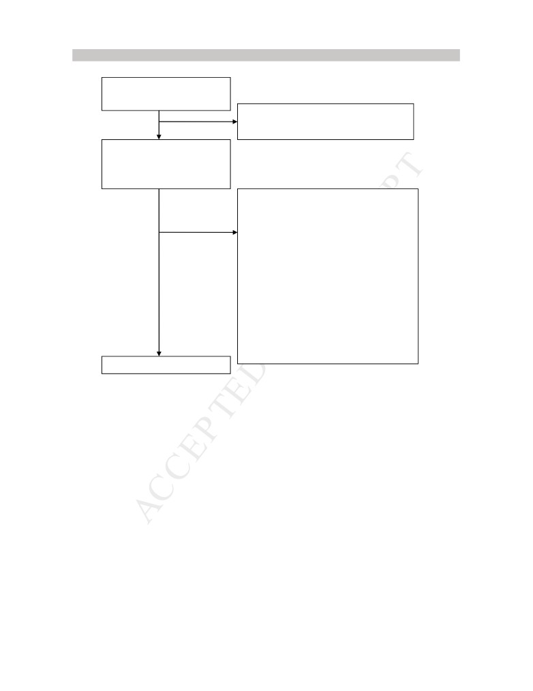
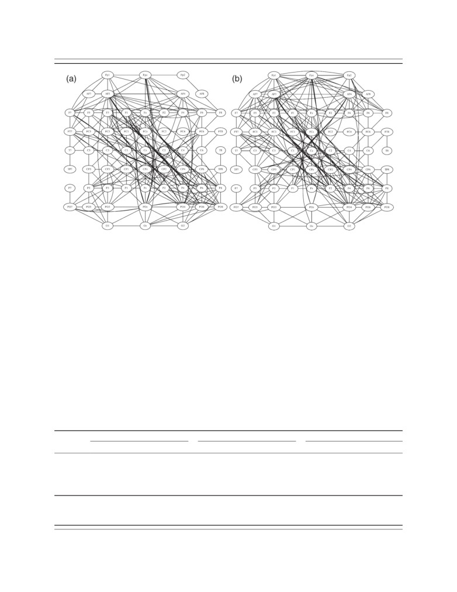

Review
Applications of transcranial direct
current stimulation for understanding
brain function
Hannah L. Filmer1 , Paul E. Dux1 , and Jason B. Mattingley1,2
1 School of Psychology, The University of Queensland, St Lucia, QLD 4072, Australia
2 Queensland Brain Institute, The University of Queensland, St Lucia QLD 4072 Australia
In recent years there has been an exponential rise in the
made with tDCS in the fields of neural connectivity [16],
number of studies employing transcranial direct current
neural oscillations [17], and cognitive training [18-20].
stimulation (tDCS) as a means of gaining a systems-level
These advances are generating mechanistic insights into
understanding of the cortical substrates underlying be-
the neural bases of behaviour.
haviour. These advances have allowed inferences to be
made regarding the neural operations that shape per-
ception, cognition, and action. Here we summarise how
tDCS works, and show how research using this tech-
Glossary
nique is expanding our understanding of the neural basis
of cognitive and motor training. We also explain how
Anode: an electrode with a positive charge.
Anodal tDCS: stimulation applied via the anode, typically associated with
oscillatory tDCS can elucidate the role of fluctuations in
increased cortical excitability and decreased levels of the neurotransmitter
neural activity, in both frequency and phase, in percep-
GABA.
tion, learning, and memory. Finally, we highlight some
Cathodal tDCS: stimulation applied via the cathode, typically associated with
decreased cortical excitability and decreased levels of the neurotransmitter
key methodological issues for tDCS and suggest how
glutamate.
these can be addressed.
Cathode: an electrode with a negative charge.
Electroencephalography (EEG): measurement of electrical activity on the scalp,
typically via multiple electrodes. Neural activity is reflected by small changes in
Introduction to the use of tDCS in neuroscience
electrical potential.
tDCS (see Glossary) offers a non-invasive means by which
Magnetic resonance spectroscopy (MRS): type of magnetic resonance imaging
to establish causal relationships between circumscribed
that allows the non-invasive measurement of metabolites (including neuro-
transmitters). MRS provides the concentrations of detectable metabolites in
regions of the brain and their underlying perceptual, cog-
the measured area of the brain.
nitive, and motor functions (Box 1). To date, tDCS has been
Motor evoked potentials (MEPs): activity in a muscle induced, in this context,
used to alter performance across a range of cognitive tasks
by a TMS pulse applied to the primary motor cortex. MEPs are measured via
electrodes placed on the skin over the targeted muscle, and are used as a
[1,2] (Table 1), and has been trialled as a treatment for a
measure of cortico-spinal excitability.
variety of psychiatric and neurological conditions [3,4],
Offline stimulation: stimulation applied at rest, before or after a task is
including depression [3,5], stroke [4], and altered states
undertaken.
Online stimulation: stimulation applied while a participant undertakes a task.
of consciousness [6]. Recently there has been debate in the
Oscillatory transcranial direct current stimulation (oscillatory tDCS): a form of
popular media over the use of tDCS to enhance perfor-
tDCS in which the current oscillates at a given frequency.
mance and augment gains from cognitive training [7-12].
Plasticity: changes in structural or functional pathways in the brain in response
to experience.
We argue that tDCS is more than a tool for cognitive
Reference electrode: for a single target region in the brain, the second
enhancement/treatment. Recent developments in our un-
electrode is referred to as the reference. This electrode can be placed over a
non-brain region (e.g., the cheek or mastoid) or a brain area thought not to be
derstanding of the neural basis of tDCS [5,13-15] have
involved in the relevant process(es). The reference electrode is sometimes
allowed researchers to make inferences regarding the
referred to as the returnelectrode.
neural processes underlying specific behaviours, including
Region of interest (ROI): an area of the cortex targeted with tDCS.
Resting state fMRI
(rsfMRI): measurement of the blood oxygen level-
those tied to learning, memory, perception, and motor
dependent (BOLD) signal while a participant is at rest. rsfMRI allows analysis
actions.
of brain activity and networks in the absence of any specific task.
In this review, we provide a summary of the neurobio-
Sham stimulation: a form of stimulation in which the current duration or
intensity are substantially smaller than in active stimulation. Sham stimulation
logical effects of tDCS, highlighting polarity-specific mod-
can be thought of as a placebo condition.
ulations of neural excitability and synaptic processes. We
Transcranial direct current stimulation (tDCS): non-invasive electrical stimula-
discuss some of the important advances that
have been
tion of the brain via electrodes place on the scalp. Typically, a current is
ramped up, held constant for a period of time (most commonly 8-15 min), and
then ramped down.
Corresponding author: Filmer, H.L.
(h.l.filmer@gmail.com).
Transcranial magnetic stimulation (TMS): non-invasive brain stimulation using
Keywords: tDCS; neural oscillations; training; memory; prefrontal cortex; neural
a magnetic field to induce an electric current in underlying brain tissue.
processes.
TMS evoked potentials: a change in electric potentials measured with EEG in
response to a TMS pulse.
0166-2236/
Visual evoked potentials (VEPs): a change in electric potentials measured with
! 2014 Elsevier Ltd. All rights
EEG in response to a visual stimulus or a TMS pulse over visual cortex.
742
Trends in Neurosciences, December 2014, Vol. 37, No. 12
Review
Trends
in Neurosciences December 2014, Vol. 37, No. 12
Box 1 . Types and uses of transcranial electrical stimulation
There are several types of transcranial electrical stimulation (tES). All
peripheral sensations (scalp tingling); it produces fewer physiological
typically involve the application of a current via two electrodes, where
artefacts than TMS (e.g., muscle twitches and auditory noise); and it is
one or both electrodes are placed on the scalp. The most widely used
cheaper, more portable, and easier to apply than TMS. Many of these
method of tES is transcranial direct current stimulation (tDCS), where
advantages have led to the increased use of tDCS in clinical and
a constant current is passed from one electrode (the anode) to the
research settings. In particular, the ability of tDCS to provide polarity-
other
(the cathode) over a period of time
(usually
8-15 min).
specific modulations (without causing action potentials) has provided
Stimulation typically leads to polarity-specific modulations in cortical
a unique perspective on the relationship between brain and
excitability, and in neurotransmitter and neuromodulator systems in
behaviour.
the stimulated cortex (see Neurobiological effects of tDCS). tDCS has
Two other types of tES are oscillatory tDCS and transcranial
been used to examine the neural processes underlying a range of
alternating current stimulation (tACS). Both oscillatory tDCS and tACS
psychological processes, including working memory, language,
involve the application of a current in which intensity fluctuates at a
mathematical cognition, spatial attention, and response selection
given frequency. For oscillatory tDCS, these fluctuations remain
(Table 1). Recently, tDCS has been shown to modulate high-level
polarity specific at each electrode. For tACS the current oscillates such
processes such as social norm compliance [115]. Clinical applications
that each electrode does not remain polarity-specific [116]. Both tACS
for several conditions exist, with evidence tDCS can aid the treatment
and oscillatory tDCS allow the specific modulation of neural
of stroke [4], depression [3,5], and minimally conscious states [6].
oscillations, giving causal insights into neural communication.
Unlike correlational methods such as functional magnetic reso-
A final type of tES is transcranial random noise stimulation (tRNS).
nance imaging (fMRI) (where the BOLD signal is the dependent
tRNS involves random fluctuations in current intensity, essentially
variable), tDCS can provide causal evidence that a brain region is
adding neural noiseto the targeted region(s). This stimulation type
involved in a behaviour of interest. tDCS offers a perspective that is
has provided promise in the field of cognitive enhancement [117,118]
unique with respect to other brain stimulation methods, such as
and as a clinical treatment [119]. The idea of adding neural noise to a
transcranial magnetic stimulation (TMS). For example, tDCS influ-
system, and finding resulting improvement, may seem counter-
ences a larger region of the cortex than TMS; it acts as a neural
intuitive. However, the enhancement of a signal through the addition
modulator without causing action potentials; it can produce opposing
of noise can be explained via stochastic resonance [120], whereby a
effects through anodal and cathodal stimulation, but with
similar
weak signal is boosted by an increase in background
noise [120].
Neurobiological effects of tDCS
changes across the brain (see Using tDCS to examine
Excitability changes induced by tDCS
connectivity and network communications).
Animal studies have shown that anodal stimulation ap-
plied directly to the cortex causes the resting membrane
Factors influencing tDCS-induced excitability changes
potential to become more positive, whereas cathodal stim-
tDCS effects on excitability can be modulated by several
ulation causes hyperpolarisation [21,22]. If stimulation is
factors. First, the intensity of stimulation affects excitabil-
of sufficient duration, these effects are comparable during
ity. Whereas low-intensity (1 mA) stimulation causes con-
and immediately after application [21,22]. Conceptually,
ventional polarity-specific modulation of neural
one can think of the effects of depolarisation and hyperpo-
excitability, higher-intensity (2 mA) stimulation can lead
larisation caused by anodal and cathodal tDCS as modula-
to increased excitability from both stimulation polarities
tions that make it more or less likely, respectively, that a
[36]. Second, pairing a task with stimulation can modulate
stimulated neuron will produce an action potential.
motor cortex excitability [37] relative to stimulation deliv-
When tDCS is applied to the primary motor cortex in
ered at rest. For example, a cognitive task can reverse the
humans, anodal stimulation causes increased neural ex-
typical relationship between polarity of current flow and
citability, whereas cathodal stimulation results in de-
excitability, whereas a motor task can reduce excitability
creased excitability
(Figure
1), as reflected in motor
following both anodal and cathodal stimulation [38]. Third,
evoked potentials (MEPs) [23-26] and transcranial mag-
the reliability of the induced excitability changes can vary
netic stimulation (TMS) evoked potentials [26]. Compara-
both from session to session within individuals, and across
ble modulations by anodal and cathodal tDCS have been
participants [37]. Some variability is undoubtedly due to
reported in the visual cortex, as measured by TMS-induced
differences in current flow between individuals (Box 2), in
phosphenes [27] and visual evoked potentials (VEPs) [28].
addition to potential differences in neurotransmitter effi-
These modulations are also reflected in changes in the
ciencies (see [5]).
blood oxygen level-dependent (BOLD) signal measured
Explanations for within-participant variability include
using fMRI [29-31]. Anodal stimulation tends to increase
individual modulating factors such as intake of neuro-
the BOLD signal, whereas cathodal stimulation decreases
affective substances (e.g., nicotine [39]), and fluctuations
it [32,33]. It is noteworthy, however, that some researchers
that occur over time. For example, time of day is known to
have found no change in BOLD within regions of targeted
influence motor cortex plasticity, as measured with TMS
cortex, either during a relevant task (e.g., motor move-
[40]. State-dependent variations in the effect of stimula-
ments following motor cortex stimulation) or at rest [34].
tion have been studied using the combined application of
Functionally connected regions distant from the electrode
tDCS and TMS. For example, TMS can be used repetitively
site can also be influenced by tDCS [15,33], including
(rTMS) to induce prolonged changes that cause increased
subcortical structures [16,33], and this modulation can
excitability (e.g., with 5 Hz stimulation [41]) or decreased
be in the same [35] or opposite [34] direction to that
excitability (e.g., with 1 Hz stimulation [42]). If the motor
predicted from the polarity of stimulation over the target
cortex is preconditioned with cathodal stimulation, how-
region. Together these findings reveal that the effects of
ever, a normally inhibitory rTMS protocol will increase
tDCS on brain function are complex, and that stimulation
excitability [43], and this interaction can modulate pain
over relatively focal areas of cortex can yield
widespread
thresholds in healthy participants
[44].
Similarly, for
743
Review
Trends in Neurosciences December 2014, Vol. 37, No. 12
744
Review
Trends
in Neurosciences December 2014, Vol. 37, No. 12
(A)
(B)
Depth: I.I.mm. (PT-cell)
Anodal
(A)
ON
Anodal
(B)
OFF
Anodal
(C)
ON
Anodal
(D)
OFF
Cathodal
(E)
ON
Cathodal
50
(F)
OFF
mV
100 msec
(C)
(D)
Presynap!c neuron
Presynap!c neuron
GABA
Glutamate
Glutamate receptors
GABA receptors
Glutamate receptors
GABA receptors
Postsynap!c neuron
Postsynap!c neuron
TRENDS in Neurosciences
Figure 1 . The neurobiological effects of tDCS. (A) Illustration of a typical tDCS montage for targeting the prefrontal cortex. The anode (red; target electrode) is placed over
the prefrontal cortex (equivalent to F3 in the EEG 10-20 system) and the cathode (blue; reference electrode) over orbitofrontal cortex. The current flows from the anode to
the cathode, and modulates the cortex underneath and between the electrodes. This image is for illustrative purposes only and is not based on a mathematical model. (B)
Firing rates recorded from neural populations in cats. Anodal stimulation led to an elevated firing rate, and cathodal stimulation led to a decreased firing rate. Reproduced
from Purpura and McMurtry [22] with permission. (C) Simplified diagram showing a presynaptic and a postsynaptic GABAergic neuron. Anodal stimulation inhibits GABA.
inhibits glutamate.
(D) A simplified diagram showing a presynaptic and a postsynaptic glutamatergic neuron. Cathodal stimulation
visual cortex, the pairing of anodal tDCS and excitatory
Neurotransmitters and modulators
rTMS will reduce excitability [45]. In addition, the pairing
Animal models suggest that changes in excitability follow-
of cathodal tDCS and inhibitory rTMS causes an increase
ing direct cortical stimulation are likely due to changes in
in excitability in the visual cortex [45]. Such modulations of
the membrane potential of targeted neurons [21,22]. In
excitability via tDCS highlight the potential for stimula-
humans, drugs that block sodium channels (e.g., carba-
tion to interact with the prior state of the cortex, called
mazepine) or calcium channels (e.g., flunarizine) reduce or
homeostatic plasticity [43] or metaplasticity [45].
eliminate the normal increase in cortical excitability eli-
Because the state of affected neurons prior to stimula-
cited by anodal stimulation [46]. By contrast, these same
tion can alter the effect of stimulation on cortical excitabil-
drugs have no effect on excitability changes associated
ity, it follows that modulation of excitability by tDCS might
with cathodal stimulation [46], presumably because cath-
itself be influenced by factors known to affect the state of
odal stimulation causes hyperpolarisation of affected neu-
the cortex (e.g., tasks, practice, fatigue). In this context,
rons and, consequently, inactivation of sodium and calcium
tDCS could be utilised to understand how such factors
channels [47]. Collectively, these findings suggest tDCS
affect the brain. Better understanding of these state-based
exerts its effects via modulation of neuronal membrane
interactions could be harnessed to optimise the magnitude,
potentials.
and direction, of cortical excitability modulations induced
Further evidence that tDCS modulates synaptic activity
via
tDCS.
via neurotransmitters has come from human
studies using
745
Review
Trends
in Neurosciences December 2014, Vol. 37, No. 12
and dopamine [55,56] systems. These modulations likely
Box 2 . Modelling current flow
affect plasticity processes, making tDCS an important tool
Several mathematical models have been developed to describe the
path of current flow in cortical tissue induced by tDCS
for clinical treatment. A rich avenue for future research is
[14,106,107,109-111]. These models estimate the pathway based
how tDCS alters these systems, the consequences of such
on the electrical conductivity of the tissue that lies between the
modulations, and the link between neurotransmitters/
electrodes. Early approaches used simplified spherical head models
modulators and behaviour.
to calculate current flow [123], and estimated current distribution
based on these assumptions. Newer models have used MRI scans,
and have segmented the different tissue types (e.g., skin, skull, CSF,
Using tDCS to examine connectivity and network
grey matter, and white matter) [110]. After segmentation, separate
communication
conductivity values are given to each tissue type, producing a map
Functional networks
of conductivity for a realistic, 3D head model. Current distribution is
A popular approach for examining functional brain net-
then estimated from these different tissue types [14,110].
works involves measuring activity via fMRI while partici-
As a rule, the strongest current is induced at cortical locations that
are nearest the electrodes
[110]. Current density generally di-
pants are at rest [59]. Such resting state scans (rsfMRI)
minishes with increasing distance from the electrodes [110], but
allow measurement of correlated activity across distinct
some effects of stimulation can be widespread across the brain [14].
brain regions from which hypotheses regarding functional
The precise flow of current may be modulated by individual
relationships between these areas can be tested. rsfMRI
differences in factors such as head size and shape, skull thickness,
studies have helped to delineate several large-scale brain
and ventricle size [14]. These individual differences may be further
exaggerated where there are abnormalities in the brain that could
networks. The default-mode network [60], includes inferior
alter conductivity, for example, following brain lesions [14]. Recent
parietal, medial temporal, and medial prefrontal cortices
advances have been made in applying models to individual
[61], and shows low-frequency oscillations (<0.1 Hz) that
participants anatomy [14]. Such subject-specific modelling is im-
are most active at rest. There is also substantial evidence
portant to fully understand and characterise the effects of stimulation
[124]. This recent work on developing realistic head models will allow
for networks that are important in cognitive control. These
researchers to determine the optimal placement of electrodes for each
include the fronto-parietal network [62] and the cingulo-
individual to maximise the efficacy
of stimulation.
opercular network [63].
Several studies have examined the influence of tDCS on
resting-state network activity. Anodal stimulation over the
left motor cortex increases functional connectivity between
magnetic resonance spectroscopy (MRS) [48,49], and from
the left motor cortex and the ipsilateral thalamus, caudate
drug studies targeting specific neurotransmitter receptors
nucleus, and parietal association cortex
[16], whereas
[50,51]. These studies have reported that anodal stimula-
cathodal stimulation decreases connectivity between the
tion inhibits neurotransmission by GABA [47,48,51,52] (a
left motor cortex and the contralateral putamen [16].
known inhibitory neurotransmitter [53]), whereas cathod-
Bilateral stimulation of motor cortex induces widespread
al stimulation inhibits neurotransmission by glutamate
changes in functional connectivity, in particular with the
[48,50,52]
(a known excitatory neurotransmitter
[54])
prefrontal cortex, and the primary and secondary motor
(Figure 1). Such modulations of synaptic processes suggest
cortices [64]. tDCS over prefrontal cortex induces altera-
that tDCS influences synaptic plasticity [47], and that
tions in both the default mode and fronto-parietal net-
GABA and glutamate play a role in the effects of tDCS
works [65]. Such tDCS-induced changes in the default-
on brain function.
mode network have led to the suggestion that increased
Several drug interventions have linked the neuromo-
connectivity results in diminished top-down control and
dulators serotonin and dopamine to tDCS after-effects
associated cognitive impairment [66].
[47,52,55-57]. Administration of L-dopa can reverse the
Combining tDCS and TMS allows the investigation of
typical increase in excitability due to anodal stimulation,
causal interactions between brain areas. For example,
and prolong the attenuation of excitability following cath-
preconditioning the supplementary motor area (SMA) re-
odal stimulation [55,56]. By contrast, a serotonin reuptake
gion with anodal stimulation reduces excitability in motor
inhibitor (citalopram) has been shown to reverse the in-
cortex, and increases excitability in somatosensory cortex,
hibitory effect of cathodal stimulation, and to enhance and
whereas cathodal tDCS leads to the opposite pattern [67].
prolong increased excitability following anodal stimulation
These findings suggest that the SMA region has an inhibi-
[57]. Further, genetic polymorphisms linked to serotonin
tory input to the motor cortex, and an excitatory input to
function (5-HTTLPR) predict tDCS treatment outcomes in
the somatosensory cortex [67]. In another study, Feurra
patients with major depressive disorders [5], suggesting an
et al. [68] stimulated the parietal cortex with tDCS and
effect of tDCS on the serotonergic system and highlighting
measured MEPs while participants imagined moving their
the importance of genetic factors in determining individual
fingers. Undertaking this motor imagery task enhanced
responses to tDCS. The cholinergic system may also con-
corticospinal excitability. The effect was larger following
tribute to tDCS effects. Acetylcholine inhibitors block the
ipsilateral anodal stimulation and smaller following ipsi-
influence of anodal stimulation and diminish that of cath-
lateral cathodal stimulation [68], relative to sham stimu-
odal stimulation [58]. Moreover, administration of nicotine
lation, suggesting that a parieto-motor circuit is involved
can abolish offline effects of stimulation, further suggest-
in motor imagery [68].
ing a link with the cholinergic system [39] and highlighting
Taken together, these findings suggest that tDCS can
a potential source of within-participant variability.
cause changes in functional networks across the brain.
To summarise, tDCS can alter GABA [47,48,51,52],
When paired with neuroimaging, tDCS can be a powerful
glutamate [48,50,52], acetylcholine [39], serotonin
[5,57],
tool for identifying and describing
functional brain
746
Review
Trends
in Neurosciences December 2014, Vol. 37, No. 12
networks [69]. When paired with TMS, tDCS allows iden-
discussion around the use of tDCS to increase gains
tification of interactions between brain regions. These are
associated with cognitive training, widely reported in
crucial advantages of tDCS given the growing consensus
the popular media [7-12]. It is important to note, howev-
that cognition and behaviour reflect the interaction of
er, that tDCS in healthy individuals can have a variety of
many regions acting in concert [70,71].
effects on cognition [2,87] (Box 3), including facilitation
for some tasks [1,19,20,88-92] and impairment for others
Modulating neural communication
[18,19,92-94]. By studying both facilitation and im-
Endogenous oscillations in neural activity provide an im-
pairment with tDCS we can elucidate the possible mech-
portant means of communication between distant sites
anisms underlying cognitive and motor training
across the brain [72]. For example, slow-wave oscillations
processes. In the following sections we discuss the use
between the neocortex and hippocampus during sleep are
of tDCS in cognitive and motor training, and consider its
thought to be important for long-term memory formation
potential to shed light on the neural basis of training
[73,74]. There is evidence that conventional anodal or
effects.
cathodal tDCS can cause changes in oscillatory cortical
activity in the theta [75,76], alpha [76], beta [75,77], and
Facilitating training
gamma [77] ranges. The precise mechanisms by which
Several studies have reported that tDCS can facilitate
these changes in oscillations occur remain unclear. How-
training-related performance improvements in simple mo-
ever, tDCS can also be used with an oscillatory change in
tor tasks [92,95,96]. Stagg and colleagues asked partici-
current density to directly manipulate the frequency of
pants to respond quickly and accurately to visual cues that
neural oscillations [17]. By electrically stimulating a region
were predictable, and led to training-related improve-
of cortex to adopt a particular frequency and phase of
ments in reaction times [92,95]. These gains were en-
oscillation, the roles of frequency and phase can be causally
hanced when online anodal stimulation was applied to
examined in relation to behaviour. For example, when
the primary motor cortex [92,95]. Although the mecha-
dorsolateral prefrontal cortex is stimulated during sleep
nisms responsible for such improvements are yet to be fully
to induce low-frequency oscillations (0.75 Hz) the retention
described, the enhancement seems to be closely linked with
of memories in rats [78] and humans [73,79,80] is en-
GABA concentration in the primary motor cortex [95].
hanced. Likewise, the same oscillatory tDCS protocol
Such approaches have also been translated into treat-
can improve learning of new information during wakeful-
ments for stroke patients [97]. Combining motor training
ness [81]. Hence, by inducing slow, phasic changes in
with anodal tDCS over the stroke-affected motor cortex (or
cortical excitability, learning and memory can be im-
cathodal stimulation over the intact motor cortex) leads to
proved. These findings provide an avenue for enhancing
significantly greater improvement in motor function of the
memory in healthy individuals and patient groups, and
affected limb than motor training alone [4,98].
confirm that slow-wave oscillations in the frontal cortex
play a key role in memory processes [75,77].
In-phase oscillations across sensory and parietal cor-
Box 3. Predicting the behavioural outcomes of tDCS
tices have been identified as important factors in per-
Typically, anodal tDCS leads to a facilitation of behavioural
ception
[82,83]. Neuling et al.
(2012) confirmed the
performance, whereas cathodal stimulation leads to impaired
importance of in-phase activity by applying 10 Hz oscil-
performance. Such polarity-dependent modulations have been
latory tDCS to the auditory cortex [84]. When the oscil-
found for motor processing [24-26,92], visual processing [27,28],
lations were in-phase with an auditory stimulus,
attention [125,126], working memory [76,127], and language [20]. By
detection was improved relative to when oscillations
contrast, several studies have reported paradoxical stimulation
effects, such as enhancement from cathodal stimulation [90,128],
were out of phase with the stimulus [84]. Gamma-fre-
and polarity non-specific effects in which both anodal and cathodal
quency oscillations in the occipito-parietal cortex have
stimulation disrupt performance
[18,90,93]. Rather than being
also been implicated in visual bistable motion perception
problematic, we view such paradoxical findings as an opportunity
[85], and tDCS-induced gamma, but not theta, oscilla-
to examine more closely the possible mechanisms underlying the
influence of tDCS.
tions reduce perceptual switches in motion direction [85].
Different effects of tDCS on behaviour have been linked to neural
This reduction presumably reflects blocking of changes
signal-to-noise properties. For example, increased excitability
in frequency that typically trigger shifts in perceived
following anodal tDCS might increase the signal of the process(es)
motion direction for bistable stimuli [85].
of interest, or increase noise in the system, thus effectively burying
In short, using tDCS to modulate the frequency and
the signal. Decreased excitability following cathodal tDCS could
decrease the signal associated with the process(es) of interest, or it
phase of oscillations can provide causal insights into neural
could reduce noise in the system and thereby increase the likelihood
communication. The work described above has yielded new
of detecting a relatively weak signal. By considering the effects of
insights in the fields of perception [84,85], learning [81],
stimulation in terms of noise, one can account for many of the
and memory [73,79,80]. Oscillatory tDCS also has the
apparently paradoxical findings with anodal and cathodal tDCS.
capacity to act as a cognitive enhancer, which may in turn
An alternative, but related, perspective involves consideration of
the codes populations of neurons provide to convey information.
lead to new treatments for clinical conditions characterised
For example, if a cognitive process is associated with a specific
by learning and memory impairments.
pattern of activity in a relatively small number of neurons (sparse
coding [129]) in a given area, it is possible that either increasing or
Cognitive and motor training
decreasing local excitability will disrupt these critical patterns. In
tDCS can enhance performance across a range of cogni-
this way, either anodal or cathodal stimulation might disrupt task
specific processing
(Figure 2).
tive tasks [1,2,86]. Indeed, there has
been considerable
747
Review
Trends
in Neurosciences December 2014, Vol. 37, No. 12
tDCS can also facilitate language training. Online an-
fine-tuning of response selection codes in the left prefrontal
odal stimulation over the left temporo-parietal region can
cortex [18,90]. Other high-level processes, such as working
facilitate vocabulary learning, compared with sham and
memory, can also be impaired by offline tDCS [93,103].
cathodal stimulation [20,99]. Moreover, when the left pre-
Two studies have described disruption of working memory
frontal cortex is stimulated with online anodal tDCS,
training, one following bilateral stimulation of the parietal
language-training benefits in patients with primary pro-
cortex [103], and the other following anodal or cathodal
gressive aphasia are increased [100]. In a study targeting
stimulation of the cerebellum [93].
Brocas area in aphasic stroke patients, anodal stimulation
It is noteworthy that studies reporting disruption of
delivered while patients attempted verbal descriptions of
training with tDCS used offline stimulation designs (or
video clips [101] improved the use of connective words in
online cathodal stimulation [92]), and all but one [103]
speech discourse [101]. Similarly, for patients with aprax-
employed unilateral stimulation montages focusing on a
ia, completion of language therapy over 10 days with
specific target region. Thus, there is consistency between
concurrent anodal stimulation of Brocas area improved
studies concerning the effects of stimulation polarity and
accuracy and speed of speech production [102]. Thus, there
timing. This consistency implies common neural mecha-
is emerging evidence that combining language training
nisms for training across a range of motor and cognitive
with online anodal tDCS over relevant brain regions can
tasks. The precise nature of these mechanisms is yet to be
increase training benefits for healthy individuals and
fully described and tested, although they may relate to
stroke patients.
processes of neural tuning of activity with training [18], or
Two studies have reported benefits of tDCS for the
modulations in synaptic plasticity [47], with a key role for
learning of a novel relational-number notation set
the neurotransmitter GABA [95]. tDCS can provide a
[19,89]. Here participants learnt values assigned to novel
unique perspective on the mechanisms involved in cogni-
images. These images were presented in pairs, and parti-
tive and motor training, substantially adding to our un-
cipants had to learn their relational values, for example,
derstanding of training-related neural processes.
whether the value represented by one image was greater
than that of another [19,89]. When stimulation targeted
Methodological considerations
the parietal cortex bilaterally, learning of the values was
tDCS studies have made a substantial contribution to our
enhanced [19]. By contrast, performance on a task thought
understanding of the neural basis of perception, cognition,
to measure automatic interference between two conflicting
and motor behaviour. Nevertheless, there is considerable
stimuli (e.g., where a smaller value symbol is physically
scope for extension of the existing research in these fields
bigger than a larger value symbol), showed only a small
(Box 4). However, as with all approaches, there are several
interference effect between the images, suggesting that
methodological issues that can limit the interpretation of
automatic processing of the learned digits had been im-
findings. We address some potential pitfalls here.
paired following bilateral parietal stimulation [19]. In the
same study, stimulating the dorsolateral frontal cortex
Baseline measures
impaired number learning and facilitated automaticity
Many tDCS experiments include sham stimulation as a
[19].
baseline against which to compare the effects of active
stimulation. Typically, a sham condition will involve sub-
Disrupting training
stantially reduced current flow, either in terms of duration
tDCS can also have a negative impact on training out-
or intensity, relative to an active stimulation condition. It
comes. In Stagg et al. [92] described above, practice-depen-
is widely assumed that participants cannot distinguish
dent improvements in performance for a simple motor task
sham from active stimulation [104], but concerns have
were magnified by online anodal stimulation. By contrast,
been raised regarding the validity of this assumption
stimulating motor cortex disrupted training-related
[37,105]. Even when participants cannot consciously dis-
improvements in reaction times when online cathodal
criminate sham and active stimulation, there may never-
stimulation, or offline stimulation of either polarity, was
theless be differences in other factors, such as arousal. It is
applied [92]. When this finding is considered alongside the
therefore crucial that appropriate control conditions are
facilitation of motor training with online anodal tDCS
incorporated into experimental designs. Such conditions
[92,95,96], an interesting contrast in facilitation and dis-
could involve contrasting anodal and cathodal stimulation
ruption, dependent upon a combination of stimulation
effects, conducting a control experiment in which an altera-
timing and polarity, is apparent. This contrast has been
tive electrode montage is used that does not target the
used in the development of a neurobiological theory of
region of interest, or using a different stimulation frequen-
motor training [47], according to which training effects
cy or phasic alignment (in the case of oscillatory tDCS).
depend upon synaptic plasticity which can be modulated
by tDCS [47].
Specificity of stimulation
Mechanisms responsible for simple decision-making or
Models of tDCS current flow [14,106-111] and findings
response selection can also be disrupted by anodal or
from studies in which human fMRI has been used to
cathodal offline stimulation over the left posterior prefron-
measure brain activity
[15,33,112] suggest that tDCS
tal cortex [18,90] (Figure 2). This disruption cannot be
can alter processing across large areas of cortex. In this
attributed to non-specific effects of tDCS, such as changes
sense, the effects of tDCS are likely to be relatively broad.
in arousal, or to the selection of the reference electrode
Thus, while the neural changes induced by tDCS
site [18]. Instead, it is thought to reflect disruption in
the
are concentrated around regions of cortex closest
to the
748
Review
Trends
in Neurosciences December 2014, Vol. 37, No. 12
(A)
Prac!ce
Before
tDCS
Immediate
Wait
20 min
-tDCS
applied
post-tDCS
post-tDCS
task
task
task
10 min
10 min
10 min
10 min
10 min
10 min
(B)
Target
(C)
Anode
200 ms
+
Response
Fixa!on
window
-
200-600 ms
1800 ms
Cathode
+
-
Sham
Time
(D)
(E)
60
Key:
Before vs immediate post
Before vs 20 min post
40
20
0
20
TRENDS in Neurosciences
Figure 2 . A demonstration of polarity non-specific disruption of response selection training (Filmer et al. [18]). (A) Session outline. Participants practiced a response
selection task, and then completed a pre-tDCS baseline block of the task. Stimulation was then administered, followed by an immediate-post tDCS block of the task. After a
10-min wait (no task), participants completed the final block of the paradigm (20 min post-tDCS). (B) Example trial outline. Participants were given an initial fixation period,
followed by a colour, symbol, or a sound. Participants were instructed to respond to the image or sound as quickly and accurately as possible. The task was six-alternative,
forced-choice, with six different possible colours, symbols, or sounds, and six corresponding keys on the keyboard. Participants completed three sessions of the
experiment, with one stimulus type used in each session (colours, symbols, and sounds). (C) Schematic depiction of stimulation types. Anodal stimulation was delivered
with a constant (positive) current lasting 8 min. Cathodal stimulation was delivered with a constant (negative) current lasting 8 min. Sham stimulation consisted of an initial,
constant current for 15 s only. In all conditions, the current was initially ramped on over 30 s and at the end ramped off over 30 s. One type of stimulation was administered
in a single session, with a minimum of 48 h between sessions. (D) Electrode montages used across three experiments. Experiment 1 targeted the left prefrontal cortex (1 cm
posterior to F3), with the reference location over right orbitofrontal cortex. Experiment 2 targeted the right prefrontal cortex, with the reference over left orbitofrontal cortex.
Experiment 3 targeted the left prefrontal cortex, with the reference over right prefrontal cortex. (E) The difference in reaction times from before to immediately after, and
20 min after, tDCS. A positive number reflects improved performance (shorter reaction times). Data for the anodal condition are shown in red, the cathodal condition in
blue, and the sham condition in black. All three stimulation experiments yielded improved reaction times for the sham condition, as did the two active stimulation
conditions for experiment 2 (right prefrontal cortex stimulation). For the two experiments targeting the left prefrontal cortex, both anodal and cathodal stimulation
disrupted the
training effect.
electrodes [110], broader networks of functionally con-
In terms of spatial specificity, it is important that effects
nected regions may also be recruited [15,16,33,34], sug-
of tDCS in the vicinity of any reference electrode are taken
gesting a fruitful direction for future research on the
into account. Indeed, it is possible that any reported effects
human connectome [113]. At present, researchers should
of tDCS on behaviour are due to stimulation at the refer-
be circumspect when linking a specific process to a small
ence electrode, or an interaction between the target and
area of cortex on the basis of tDCS
results.
reference sites. This can only be ruled out
by conducting
749
Review
Trends
in Neurosciences December 2014, Vol. 37, No. 12
Box 4. Outstanding questions
Neurobiological effects of tDCS
Neural bases of cognitive training
! What are the consequences of tDCS on neural processes? Although
! What are the roles of stimulation timing and polarity? Stimulation
tDCS can modulate membrane potentials
[22] and synaptic
timing (online vs offline) and polarity (anode and cathode) have
processes [48,52,58], the mechanisms underlying polarity-specific
distinct effects on the cortex. Research into cognitive training can
modulations remain unclear. Future research should employ
utilize these distinct effects of stimulation timing and polarity with
invasive measures, for example, direct recordings in non-human
carefully controlled experimental designs
[18,90,92]. If this ap-
primates, to understand better how tDCS alters neural functioning.
proach is applied to a broad range of training paradigms,
This will reveal how tDCS modulates synaptic plasticity and
researchers will be able to pinpoint the neural mechanisms that
influences behaviour.
lead to training related changes in performance.
! How are the effects of stimulation altered by the state of the cortex?
! What are the neural bases of training? Combining tDCS with
The effects of tDCS and TMS can interact when applied
neuroimaging techniques (e.g., fMRI and MRS) may elucidate the
consecutively [43,45]. Such interactions suggest a relationship
neural bases of training effects, how these training induced
between neural changes induced via tDCS and the state of the
changes are modified by stimulation, and the network(s)/brain
cortex at the time when stimulation is applied. Future research
regions involved in the training process.
should systematically manipulate the prior state of the cortex
! How long can modulations due to tDCS and training last? There is
(e.g., through TMS, behavioural tasks, or training) to understand
relatively little information on how long the effects of tDCS on
the factors that can alter tDCS efficiency, and how tDCS
cognitive and motor training may last. It will be crucial to establish
protocols can be tailored to maximize the size and consistency
the potential efficiency of tDCS for inducing long-term modulations
of modulations.
in behaviour.
The role of oscillations in cognition
Clinical applications of tDCS
! What roles do neural oscillations play in brain function? Studies
! How may tDCS improve clinical symptoms? tDCS has shown
using oscillatory tDCS have shown that neural oscillatory
promise as a simple, cheap, non-invasive treatment for a variety of
frequency and phase are important for perception [84,85] and
clinical conditions [3-6]. Conditions such as depression and stroke
cognition [73,79]. Understanding the roles of these two compo-
are characterised by local and widespread changes in brain
nents of oscillations will require systematic manipulation of
structure
[130], connectivity
[130,131], and function
[130,131].
oscillatory frequency and phase, and the comparison of these
Future research should address how such features of clinical
two factors for different cognitive processes (e.g., learning and
conditions are modulated by tDCS. This approach will allow the
perception).
tailoring of tDCS interventions to maximise
treatment benefits.
control experiments with alternative reference locations
[43,45]. tDCS has already provided key insights into learn-
[18], or by using a large reference electrode. The use of a
ing and memory processes, and how these rely upon dif-
large reference electrode reduces the current density ap-
ferent areas of the cerebral cortex [73,79,80]. Research
plied to the reference location. If the current density is
using this technique has also shown that oscillation fre-
sufficiently low it will reduce any effect of stimulation at
quency and phase are important factors in perception
this location. By conducting follow-up experiments to rule
[84,85]. When combined with fMRI, tDCS can identify
out effects of stimulation at the reference site, there is the
underlying functional brain networks [16,64,65,69], and
added advantage of offering an opportunity to replicate the
when paired with TMS it can modulate these networks
original findings [114].
[67,68]. Studies employing tDCS have provided causal
evidence for the neural processes underlying performance
Specifying the neurological basis of stimulation effects
benefits from training. Further, stimulation can both en-
It is common for training studies to use a combination of
hance [19,20,89,92,99] and impair [18,90,92,93,103] the
online and offline stimulation [19,89,92,99]. In such cases,
effects of training, depending on stimulation timing and
both the stimulation and the task commence together, but
polarity.
the task continues after stimulation has ended. Given the
The ability of tDCS to modulate neurobiological pro-
differences between the effects of online and offline stimu-
cesses has given a unique perspective on the mechanisms
lation on behaviour (see Cognitive and motor training), it
underlying perception, cognition, and action. In the future,
is difficult to speculate about the mechanisms behind
carefully designed tDCS studies should provide further
facilitation with this design. In addition, designs in which
advances in our understanding of the neural processes
a bilateral stimulation montage is used make it difficult to
involved in performance gains from cognitive training,
apportion effects specifically to the anode or the cathode.
the role of oscillations in neural communication, and the
Any such problem in separating anodal and cathodal
elucidation of functional neural networks. Moreover, there
effects will inevitably restrict conclusions about the under-
is potential for the development of treatments for a variety
lying neurobiological mechanisms.
of neurological and psychiatric conditions.
Concluding remarks and future directions
Acknowledgements
tDCS has a variety of effects on the cortex, including
The authors were supported by an Australian Research Council (ARC)
Discovery grant (DP110102925) to P.E.D. and J.B.M. and the ARC-SRI
modulations in membrane polarisation and excitability
Science of Learning Research Centre
(SR120300015). P.E.D. was
[22] that are stimulation-polarity dependent [23-26,92].
supported by an ARC Future Fellowship (FT120100033) and J.B.M. by
It can also modulate GABA
[47,48,51,52], glutamate
an ARC Australian Laureate Fellowship (FL110100103) and the ARC
[48,50,52], acetylcholine [39,58], serotonin [57] and dopa-
Centre of Excellence for Integrative Brain Function (ARC Centre Grant
mine [55,56] systems. The precise effect of stimulation is
CE140100007). We thank Marc Kamke and Martin Sale for comments on
an earlier draft of
this paper.
determined to some extent by the prior state of
the cortex
750
Review
Trends
in Neurosciences December 2014, Vol. 37, No. 12
References
27
Antal, A. et al. (2003) Manipulation of phosphene thresholds by
1
Coffman, B.A. et al. (2014) Battery powered thought: enhancement of
transcranial direct current stimulation in man. Exp. Brain Res.
attention, learning, and memory in healthy adults using transcranial
150, 375-378
direct current stimulation. Neuroimage 85, 895-908
28
Antal, A. et al. (2004) Excitability changes induced in the human
2
Kuo, M-F. and Nitsche, M.A. (2012) Effects of transcranial electrical
primary visual cortex by transcranial direct current stimulation:
stimulation on cognition. Clin. EEG Neurosci. 43, 192-199
direct electrophysiological evidence. Invest. Ophthalmol. Vis. Sci.
3
Kuo, M.F. et al. (2014) Therapeutic effects of non-invasive brain
45, 702-707
stimulation with direct currents
(tDCS) in neuropsychiatric
29
Jang, S.H. et al. (2009) The effect of transcranial direct current
diseases. Neuroimage 85, 948-960
stimulation on the cortical activation by motor task in the human
4
Floel, A.
(2014) tDCS-enhanced motor and cognitive function in
brain: an fMRI study. Neurosci. Lett. 460, 117-120
neurological diseases. Neuroimage 85, 934-947
30
Kim, C.R. et al. (2012) Modulation of cortical activity after anodal
5
Brunoni, A.R. et al.
(2013) Impact of
5-HTTLPR and BDNF
transcranial direct current stimulation of the lower limb motor cortex:
polymorphisms on response to sertraline versus transcranial direct
a functional MRI study. Brain Stimul. 5, 462-467
current stimulation: implications for the serotonergic system. Eur.
31
Kwon, Y.H. and Jang, S.H. (2011) The enhanced cortical activation
Neuropsychopharmacol. 23, 1530-1540
induced by transcranial direct current stimulation during hand
6
Thibaut, A. et al.
(2014) tDCS in patients with disorders of
movements. Neurosci. Lett. 492, 105-108
consciousness sham-controlled randomized double-blind study.
32
Baudewig, J. et al.
(2001) Regional modulation of BOLD MRI
Neurology 82, 1112-1118
responses to human sensorimotor activation by transcranial direct
7
Chambers, C. (2013) Neuro-enhancement in the military: far-fetched
current stimulation. Magn. Reson. Med. 45, 196-201
or an inevitable future? The Guardian 7 October
33
Turi, Z. et al.
(2012) Functional neuroimaging and transcranial
8
Cave, H. (2013) Artificially stimulating a love of art. New Scientist
electrical stimulation. Clin. EEG Neurosci. 43, 200-208
220, 19
34
Antal, A. et al. (2011) Transcranial direct current stimulation over the
9
Hurley, D. (2013) Jumper cables for the mind. The New York Times 1
primary motor cortex during fMRI. Neuroimage 55, 590-596
November, p. MM50
35
Stagg, C.J. et al. (2009) Modulation of movement-associated cortical
10
Wang, S.S. (2014) Jumper leads for the brain. The Australian 11
activation by transcranial direct current stimulation. Eur. J.
February
Neurosci. 30, 1412-1423
11
Sapolsky, R. (2014) What drives us to do the right thing? The Wall
36
Batsikadze, G. et al. (2013) Partially non-linear stimulation intensity-
Street Journal 2 January
dependent effects of direct current stimulation on motor cortex
12
Thomson, H. (2010) Electronic brain stimulation improves maths
excitability in humans. J. Physiol. 591, 1987-2000
skills. New Scientist 4 Novemeber
37
Horvath, J.C. et al. (2014) Transcranial direct current stimulation:
13
Huang, Y. et al.
(2013) Automated MRI segmentation for
five important issues we arent discussing (but probably should be).
individualized modeling of current flow in the human head. J.
Front. Syst. Neurosci. 8, 2
Neural Eng. 10, 066004
38
Antal, A. et al. (2007) Towards unravelling task-related modulations
14
Russell, M.J. et al.
(2013) Individual differences in transcranial
of neuroplastic changes induced in the human motor cortex. Eur. J.
electrical stimulation current density. J. Biomed. Res. 27, 495-508
Neurosci. 26, 2687-2691
15
Saiote, C. et al. (2013) Combining functional magnetic resonance
39
Thirugnanasambandam, N. et al. (2011) Nicotinergic impact on focal
imaging with transcranial electrical stimulation. Front. Hum.
and non-focal neuroplasticity induced by non-invasive brain
Neurosci. 7, 435
stimulation in non-smoking humans. Neuropsychopharmacology 36,
16
Polania, R. et al. (2012) Modulating cortico-striatal and thalamo-
879-886
cortical functional connectivity with transcranial direct current
40
Sale, M.V. et al.
(2007) Factors influencing the magnitude and
stimulation. Hum. Brain Mapp. 33, 2499-2508
reproducibility of corticomotor excitability changes induced by
17
Marshall, L. and Binder, S. (2013) Contribution of transcranial
paired associative stimulation. Exp. Brain Res. 181, 6156-6226
oscillatory stimulation to research on neural networks: an
41
Pascual-Leone, A. et al. (1994) Responses to rapid-rate transcranial
emphasis on hippocampo-neocortical rhythms. Front. Hum.
magnetic stimulation of the human motor cortex. Brain
117,
Neurosci. 7, 614
847-858
18
Filmer, H.L. et al.
(2013) Disrupting prefrontal cortex prevents
42
Chen, R. et al. (1997) Depression of motor cortex excitability by low-
performance gains from sensory-motor training. J. Neurosci. 33,
frequency transcranial magnetic stimulation. Neurology 48, 1398-
18654-18660
1403
19
Iuculano, T. and Kadosh, R.C. (2013) The mental cost of cognitive
43
Siebner, H.R. et al. (2004) Preconditioning of low-frequency repetitive
enhancement. J. Neurosci. 33, 4482-4486
transcranial magnetic stimulation with transcranial direct current
20
Meinzer, M. et al. (2014) Transcranial direct current stimulation over
stimulation: evidence for homeostatic plasticity in the human motor
multiple days improves learning and maintenance of a novel
cortex. J. Neurosci. 24, 3379-3385
vocabulary. Cortex 50, 137-147
44
Moloney, T.M. and Witney, A.G. (2013) Transcranial direct current
21
Bindman, L.J. et al. (1964) The action of brief polarizing currents
stimulation (tDCS) priming of 1 Hz repetitive transcranial magnetic
on the cerebral cortex of the rat (1) during current flow and (2)
stimulation
(rTMS) modulates experimental pain thresholds.
in the production of long-lasting after-effects. J. Physiol.
172,
Neurosci. Lett. 534, 289-294
369-382
45
Bocci, T. et al. (2014) Evidence for metaplasticity in the human visual
22
Purpura, D.P. and McMurtry, J.G. (1965) Intracellular activities and
cortex. J. Neural Transm. 121, 221-231
evoked potential changes during polarization of motor cortex. J.
46
Nitsche, M.A. et al. (2003) Pharmacological modulation of cortical
Neurophysiol. 28, 166-185
excitability shifts induced by transcranial direct current stimulation
23
Nitsche, M.A. et al. (2007) Shaping the effects of transcranial direct
in humans. J. Physiol. 553, 293-301
current stimulation of the human motor cortex. J. Neurophysiol. 97,
47
Stagg, C.J. and Nitsche, M.A.
(2011) Physiological basis of
3109-3117
transcranial direct current stimulation. Neuroscientist 17, 37-53
24
Nitsche, M.A. and Paulus, W. (2000) Excitability changes induced in
48
Stagg, C.J. et al. (2009) Polarity-sensitive modulation of cortical
the human motor cortex by weak transcranial direct current
neurotransmitters by transcranial stimulation. J. Neurosci.
29,
stimulation. J. Physiol. 527, 633-639
5202-5206
25
Nitsche, M.A. and Paulus, W. (2001) Sustained excitability elevations
49
Stagg, C.J. et al. (2011) Relationship between physiological measures
induced by transcranial DC motor cortex stimulation in humans.
of excitability and levels of glutamate and GABA in the human motor
Neurology 57, 1899-1901
cortex. J. Physiol. 589, 5845-5855
26
Pellicciari, M.C. et al. (2013) Excitability modulation of the motor
50
Liebetanz, D. et al.
(2002) Pharmacological approach to the
system induced by transcranial direct current stimulation: a
mechanisms of transcranial DC stimulation-induced after-effects of
multimodal approach. Neuroimage 83,
569-580
human motor cortex excitability. Brain
125, 2238-2247
751
Review
Trends
in Neurosciences December 2014, Vol. 37, No. 12
51
Nitsche, M.A. et al. (2004) GABAergic modulation of DC stimulation-
78
Binder, S. et al. (2014) Transcranial slow oscillation stimulation
induced motor cortex excitability shifts in humans. Eur. J. Neurosci.
during NREM sleep enhances acquisition of the radial maze task
19,
2720-2706
and modulates cortical network activity in rats. Front. Behav.
52
Medeiros, L.F. et al. (2012) Neurobiological effects of transcranial
Neurosci. 7, 220
direct current stimulation: a review. Front. Psychiatry 3, 110
79
Antonenko, D. et al. (2013) Napping to renew learning capacity:
53
McCormick, D.A. (1989) GABA as an inhibitory neurotransmitter in
enhanced encoding after stimulation of sleep slow oscillations. Eur.
human cerebral cortex. J. Neurophysiol. 62, 1018-1027
J. Neurosci. 37, 1142-1151
54
Meldrum, B.S. (2000) Glutamate as a neurotransmitter in the brain:
80
Marshall, L. et al. (2004) Transcranial direct current stimulation
review of physiology and pathology. J. Nutr. 130, 1007S-1015S
during sleep improves declarative memory. J. Neurosci. 24, 9985-
55
Kuo, M-F. et al. (2008) Boosting focally-induced brain plasticity by
9992
dopamine. Cereb. Cortex 18, 648-651
81
Kirov, R. et al. (2009) Slow oscillation electrical brain stimulation
56
Monte-Silva, K. et al. (2010) Dosage-dependent non-linear effect of L-
during waking promotes EEG theta activity and memory encoding.
dopa on human motor cortex plasticity. J. Physiol. 588, 3415-3424
Proc. Natl. Acad. Sci. U.S.A. 106, 15460-15465
57
Nitsche, M.A. et al.
(2009) Serotonin affects transcranial direct
82
Hanslmayr, S. et al. (2013) Prestimulus oscillatory phase at 7 Hz
current-induced neuroplasticity in humans. Biol. Psychiatry
66,
gates cortical information flow and visual perception. Curr. Biol. 23,
503-508
2273-3228
58
Kuo, M.F. et al.
(2007) Focusing effect of acetylcholine on
83
VanRullen, R. et al. (2011) Ongoing EEG phase as a trial-by-trial
neuroplasticity in the human motor cortex. J. Neurosci.
27,
predictor of perceptual and attentional variability. Front. Psychol. 2,
14442-14427
60
59
Biswal, B.B.
(2012) Resting state fMRI: a personal history.
84
Neuling, T. et al. (2012) Good vibrations: oscillatory phase shapes
Neuroimage 62, 938-944
perception. Neuroimage 63, 771-778
60
Raichle, M.E. and Snyder, A.Z. (2007) A default mode of brain
85
Struber, D. et al.
(2014) Antiphasic
40 Hz oscillatory current
function: a brief history of an evolving idea. Neuroimage
37,
stimulation affects bistable motion perception. Brain Topogr. 27,
1083-1090
158-171
61
Buckner, R.L. et al. (2008) The brains default network: anatomy,
86
Kadosh, R.
(2013) Using transcranial electrical stimulation to
function, and relevance to disease. Ann. N. Y. Acad. Sci. 1124, 1-38
enhance cognitive functions in the typical and atypical brain.
62
Zanto, T.P. and Gazzaley, A. (2013) Fronto-parietal network: flexible
Transl. Neurosci. 4, 20-33
hub of cognitive control. Trends Cogn. Sci. 17, 602-603
87
Jacobson, L. et al. (2012) tDCS polarity effects in motor and cognitive
63
Sestieri, C. et al.
(2014) Domain-general signals in the cingulo-
domains: a meta-analytical review. Exp. Brain Res. 216, 1-10
opercular network for visuospatial attention and episodic memory.
88
Clark, V.P. et al.
(2012) TDCS guided using fMRI significantly
J. Cogn. Neurosci. 26, 551-568
accelerates learning to identify concealed objects. Neuroimage 59,
64
Sehm, B. et al. (2012) Dynamic modulation of intrinsic functional
117-128
connectivity by transcranial direct current stimulation. J.
89
Cohen Kadosh, R. et al. (2010) Modulating neuronal activity produces
Neurophysiol. 108, 3253-3263
specific and long-lasting changes in numerical competence. Curr. Biol.
65
Keeser, D. et al.
(2011) Prefrontal transcranial direct current
20, 2016-2020
stimulation changes connectivity of resting-state networks during
90
Filmer, H.L. et al. (2013) Improved multitasking following prefrontal
fMRI. J. Neurosci. 31, 15284-15293
tDCS. Cortex 49, 2845-2852
66
Amadi, U. et al. (2014) Polarity-specific effects of motor transcranial
91
Reis, J. et al. (2009) Noninvasive cortical stimulation enhances motor
direct current stimulation on fMRI resting state networks.
skill acquisition over multiple days through an effect on consolidation.
Neuroimage 88, 155-161
Proc. Natl. Acad. Sci. U.S.A. 106, 1590-1595
67
Kirimoto, H. et al. (2011) Transcranial direct current stimulation over
92
Stagg, C.J. et al. (2011) Polarity and timing-dependent effects of
the motor association cortex induces plastic changes in ipsilateral
transcranial direct current stimulation in explicit motor learning.
primary motor and somatosensory cortices. Clin. Neurophysiol. 122,
Neuropsychologia 49, 800-804
777-783
93
Ferrucci, R. et al.
(2008) Cerebellar transcranial direct current
68
Feurra, M. et al. (2011) Cortico-cortical connectivity between right
stimulation impairs the practice-dependent proficiency increase in
parietal and bilateral primary motor cortices during imagined and
working memory. J. Cogn. Neurosci. 20, 1687-1697
observed actions: a combined TMS/tDCS study. Front. Neural Circuits
94
Peters, M.A. et al. (2013) Anodal tDCS to V1 blocks visual perceptual
5, 10
learning consolidation. Neuropsychologia 51, 1234-1239
69
Shafi, M.M. et al. (2012) Exploration and modulation of brain network
95
Stagg, C.J. et al. (2011) The role of GABA in human motor learning.
interactions with noninvasive brain stimulation in combination with
Curr. Biol. 21, 480-484
neuroimaging. Eur. J. Neurosci. 35, 805-825
96
Nitsche, M.A. et al. (2003) Facilitation of implicit motor learning by
70
Cocchi, L. et al. (2013) Dynamic cooperation and competition between
weak transcranial direct current stimulation of the primary motor
brain systems during cognitive control. Trends Cogn. Sci. 17, 493-501
cortex in the human. J. Cogn. Neurosci. 15, 619-626
71
Cocchi, L. et al. (2014) Complexity in relational processing predicts
97
Stagg, C.J. and Johansen-Berg, H. (2013) Studying the effects of
changes in functional brain network dynamics. Cereb. Cortex 24,
transcranial direct-current stimulation in stroke recovery using
2283-2296
magnetic resonance imaging. Front. Hum. Neurosci. 7, 857
72
Fries, P.
(2005) A mechanism for cognitive dynamics: neuronal
98
Marquez, J. et al. (2013) Transcranial direct current stimulation
communication through neuronal coherence. Trends Cogn. Sci. 9,
(tDCS): does it have merit in stroke rehabilitation? A systematic
474-480
73
Marshall, L. et al. (2006) Boosting slow oscillations during sleep
99
Floel, A. et al.
(2008) Noninvasive brain stimulation improves
potentiates memory. Nature 444, 610-613
language learning. J. Cogn. Neurosci. 20, 1415-1422
74
Steriade, M. and Timofeev, I.
(2003) Neuronal plasticity in
100
Cotelli, M. et al. (2013) Treatment of primary progressive aphasias by
thalamocortical networks during sleep and waking oscillations.
transcranial direct current stimulation combined with language
Neuron 37, 563-576
training. J. Alzheimers Dis. 39, 799-808
75
Notturno, F. et al. (2014) Local and remote effects of transcranial
101
Marangolo, P. et al. (2013) Something to talk about: enhancement of
direct current stimulation on the electrical activity of the motor
linguistic cohesion through tdCS in chronic non fluent aphasia.
cortical network. Hum. Brain Mapp. 35, 2220-2232
Neuropsychologia 53C, 246-256
76
Zaehle, T. et al. (2011) Transcranial direct current stimulation of the
102
Marangolo, P. et al. (2013) Bihemispheric stimulation over left and
prefrontal cortex modulates working memory performance: combined
right inferior frontal region enhances recovery from apraxia of speech
behavioural and electrophysiological evidence. BMC Neurosci. 12,
in chronic aphasia. Eur. J. Neurosci. 38, 3370-3377
1-11
103
Sandrini, M. et al. (2012) Double dissociation of working memory load
77
Antal, A. et al. (2004) Oscillatory brain activity and transcranial direct
effects induced by bilateral parietal modulation. Neuropsychologia 50,
current stimulation in humans. Neuroreport
15, 1307-1310
396-402
752
Review
Trends
in Neurosciences December 2014, Vol. 37, No. 12
104
Russo, R. et al. (2013) Perception of comfort during active and sham
119
Vanneste, S. et al. (2013) Head-to-head comparison of transcranial
transcranial direct current stimulation: a double blind study. Brain
random noise stimulation, transcranial AC stimulation, and
Stimul. 6, 946-951
transcranial DC stimulation for tinnitus. Front. Psychiatry 4, 158
105
OConnell, N.E. et al. (2012) Rethinking clinical trials of transcranial
120
Moss, F. et al. (2004) Stochastic resonance and sensory information
direct current stimulation: participant and assessor blinding is
processing: a tutorial and review of application. Clin. Neurophysiol.
inadequate at intensities of 2 mA. PLoS ONE 7, e47514
115, 267-281
106
Bai, S. et al. (2013) A computational modelling study of transcranial
121
Martin, D.M. et al. (2013) Can transcranial direct current stimulation
direct current stimulation montages used in depression. Neuroimage
enhance outcomes from cognitive training? A randomized controlled
87C, 332-344
trial in healthy participants. Int. J. Neuropsychopharmacol. 16, 1927-
107
Bikson, M. et al. (2012) Computational models of transcranial direct
1936
current stimulation. Clin. EEG Neurosci. 43, 176-183
122
Harty, S. et al. (2014) Transcranial direct current stimulation over
108
Faria, P. (2011) A finite element analysis of the effect of electrode area
right dorsolateral prefrontal cortex enhances error awareness in older
and inter-electrode distance on the spatial distribution of the current
age. J. Neurosci. 34, 3646-3652
density in tDCS. J. Neural Eng. 8, 066017
123
Miranda, P.C. et al. (2006) Modeling the current distribution during
109
Neuling, T. et al. (2012) Finite-element model predicts current density
transcranial direct current stimulation. Clin. Neurophysiol.
117,
distribution for clinical applications of tDCS and tACS. Front.
1623-1629
Psychiatry 3, 83
124
de Berker, A.O. et al. (2013) Predicting the behavioral impact of
110
Wagner, S. et al. (2013) Investigation of tDCS volume conduction
transcranial direct current stimulation: issues and limitations.
effects in a highly realistic head model. J. Neural Eng. 11, 016002
Front. Hum. Neurosci. 7, 613
111
Wagner, T. et al. (2007) Transcranial direct current stimulation: a
125
Coffman, B.A. et al. (2012) Enhancement of object detection with
computer-based human model study. Neuroimage 35, 1113-1124
transcranial direct current stimulation is associated with increased
112
Bestmann, S. and Feredoes, E. (2013) Combined neurostimulation
attention. BMC Neurosci. 13, 108
and neuroimaging in cognitive neuroscience: past, present, and
126
Sparing, R. et al. (2009) Bidirectional alterations of interhemispheric
future. Ann. N. Y. Acad. Sci. 1296, 11-30
parietal balance by non-invasive cortical stimulation. Brain 132,
113
Sporns, O. (2011) The human connectome: a complex network. In Year
3011-3020
in Cognitive Neuroscience (Miller, M.B. and Kingstone, A., eds), pp.
127
Fregni, F. et al. (2005) Anodal transcranial direct current stimulation
109-125, Blackwell Science
of prefrontal cortex enhances working memory. Exp. Brain Res. 166,
114
Simons, D.J. (2014) The value of direct replication. Perspect. Psychol.
23-30
Sci. 9, 76-80
128
Moos, K. et al. (2012) Modulation of top-down control of visual
115
Ruff, C. et al.
(2013) Changing social norm compliance with
attention by cathodal tDCS over right IPS. J. Neurosci. 32, 16360-
noninvasive brain stimulation. Science 342, 482-484
16368
116
Antal, A. and Paulus, W. (2013) Transcranial alternating current
129
Olshausen, B.A. and Field, D.J.
(1997) Sparse coding with an
stimulation (tACS). Front. Hum. Neurosci. 7, 317
overcomplete basis set: a strategy employed by V1? Vision Res. 37,
117
Snowball, A. et al. (2013) Long-term enhancement of brain function
3311-3325
and cognition using cognitive training and brain stimulation. Curr.
130
Palazidou, E. (2012) The neurobiology of depression. Br. Med. Bull.
Biol. 23, 987-992
101, 127-145
118
Cappelletti, M. et al. (2013) Transfer of cognitive training across
131
Grefkes, C. and Fink, G.R. (2011) Reorganization of cerebral networks
magnitude dimensions achieved with concurrent brain stimulation
after stroke: new insights from neuroimaging with connectivity
of the parietal lobe. J. Neurosci. 33,
14899-14907
approaches. Brain
134, 1264-1276
753
Accepted Manuscript
The effects of transcranial direct current stimulation on objective and subjective
indexes of exercise performance: A systematic review and meta-analysis
Daras Holgado, Miguel A. Vadillo, Daniel Sanabria
PII:
S1935-861X(18)30420-0
DOI:
Reference:
BRS 1363
To appear in: Brain Stimulation
Received Date: 2 August 2018
Revised Date:
27 November 2018
Accepted Date: 5 December 2018
Please cite this article as: Holgado D, Vadillo MA, Sanabria D, The effects of transcranial direct current
stimulation on objective and subjective indexes of exercise performance: a systematic review and meta-
analysis, Brain Stimulation, https://doi.org/10.1016/j.brs.2018.12.002.
This is a PDF file of an unedited manuscript that has been accepted for publication. As a service to
our customers we are providing this early version of the manuscript. The manuscript will undergo
copyediting, typesetting, and review of the resulting proof before it is published in its final form. Please
note that during the production process errors may be discovered which could affect the content, and all
legal disclaimers that apply to the journal pertain.
ACCEPTED MANUSCRIPT
1
The effects of transcranial direct current stimulation on objective and
2
subjective indexes of exercise performance: a systematic review and meta-
3
analysis.
4
Daras Holgado1,2*, Miguel A. Vadillo3 and Daniel Sanabria2
1
5
Department of Physical Education and Sport, Faculty of Sport Sciences, University of Granada,
2
6
Mind, Brain and Behavior Research Centre, Department of Experimental Psychology. University of Granada.
7
3 Department of Basic Psychology, Autonomous University of Madrid.
8
Corresponding Authors
9
Mind, Brain and Behaviour Research Centre
10
University of Granada
11
Campus Universitario de Cartuja s/n
12
18011 Granada (Spain)
13
Telf. : +34 958247875
14
dariashn@ugr.es;
15
1
ACCEPTED MANUSCRIPT
16
Abstract
17
Objective: To examine the effects of transcranial direct current stimulation (tDCS) on objective and
18
subjective indexes of exercise performance.
19
Design: Systematic review and meta-analysis.
20
Data Sources: A systematic literature search of electronic databases (PubMed, Web of Science,
21
Scopus, Google Scholar) and reference lists of included articles up to June 2018.
22
Eligibility Criteria: Published articles in journals or in repositories with raw data available,
23
randomized sham-controlled trial comparing anodal stimulation with a sham condition providing data
24
on objective (e.g. time to exhaustion or time-trial performance) or subjective (e.g. rate of perceived
25
exertion) indexes of exercise performance.
26
Results: The initial search provided 420 articles of which 31 were assessed for eligibility. Finally, the
27
analysis of effect sizes comprised 24 studies with 386 participants. The analysis indicated that anodal
28
tDCS had a small but positive effect on performance g = 0.34, 95% CI [0.12, 0.52], z = 3.24, p =
29
0.0012. Effects were not significantly moderated by type of outcome, electrode placement, muscles
30
involved, number of sessions, or intensity and duration of the stimulation. Importantly, the funnel plot
31
showed that, overall, effect sizes tended to be larger in studies with lower sample size and high
32
standard error.
33
Summary: The results suggest that tDCS may have a positive impact on exercise performance.
34
However, the effect is probably small and most likely biased by low quality studies and the selective
35
publication of significant results. Therefore, the current evidence does not provide strong support to
36
the conclusion that tDCS is an effective means to improve exercise performance.
37
Keywords
38
Brain stimulation, exercise, tdcs, sports, physical activity
2
ACCEPTED MANUSCRIPT
39
Introduction
40
Improving exercise performance represents the daily goal for many athletes. In the increasingly
41
competitive context of sports, athletes are pressed to push their physical boundaries to run faster,
42
increase power output, lift more weight or jump farther. As a consequence, athletes from all levels are
43
willing to use cutting-edge methods to enhance their performance. Elevation training masks [1], iced
44
garments [2] and virtual reality [3] are some remarkable examples. Another technique that is
45
awakening interest in sports is transcranial direct current stimulation (tDCS) [4]. In fact, some
46
companies have started to sell stimulation kits (sometimes in a do-it-yourself fashion) and
47
professional and Olympic athletes have promoted them as an effective means to improve performance
48
[5,6].
49
tDCS is a non-invasive brain stimulation technique that has been widely used in Neuroscience, as it
50
has been deemed an effective and safe method to induce cortical changes by depolarizing (anodal) or
51
hyperpolarizing (cathodal) neurons resting membrane potential [7]. In a common tDCS set-up
52
researchers use two electrodes; one electrode is the target electrode (i.e., deliver the weak current) and
53
another is the reference electrode [8]. The reference electrode is normally placed on the contralateral
54
brain area targeted or away of the head (e.g., in the shoulder) to avoid the delivery of current on the
55
participants scalp (i.e. extracephalically). Electrodes can be also placed bilaterally to deliver dual
56
stimulation to two parallel brain areas [9]. The electrodes are connected to a battery which delivers a
57
weak electrical current (usually between 1 and 2 mA) through the electrodes, which seems able to
58
cross the scalp. The results of some studies suggest that the effects of tDCS could last up to 90
59
minutes after only 10-20 minutes of stimulation [7]. However, recently, Vrslakos et al. [10]
60
suggested that much higher current intensities (> 4.5 mA) might be necessary to be able to cross
61
humans scalp. Note, though, that Vrslakos et al. used transcranial alternating current stimulation
62
(tACS) in their experiment which somewhat limits a direct comparison with the potential effects of
63
tDCS. Moreover, it has been argued that a higher stimulation intensity in a given brain area may not
64
imply a greater effect [11,12].
3
ACCEPTED MANUSCRIPT
65
Findings to date point to the potential use of tDCS as a tool to enhance performance in the sports
66
context. The rationale behind using tDCS as a tool in sports is that stimulating brain areas related to
67
exercise could boost athletes physical performance or reduce perceived exertion. For instance, an
68
acute session of tDCS has been shown to improve both single-joint exercise and whole-body
69
endurance [9,13]. However, despite the increasing use amongst researchers, the mechanisms
70
underlying their possible ergogenic effects are far from clear [14,15]. Some authors have argued that
71
tDCS is able to modulate cortical neurons or affective responses, leading to a reduced rate of
72
perceived exertion (RPE) or reduced pain perception. However, the reduction of perceived exertion
73
has not been reported in all cases [16,17].
74
Given the growing interest in this topic and in light of the inconsistent findings reported in the
75
literature, the aim of the present systematic review and meta-analysis was to synthesize the evidence
76
available so far regarding the impact of tDCS on objective (e.g., time-trial performance) and
77
subjective (e.g., perceived exertion) indexes of exercise performance.
78
Methods
79
Literature Search
80
We used the PRISMA statement [18] as a basis for the procedures described herein. We carried out a
81
literature search in PubMed, Scopus, Web of Science and Google Scholar (most of the journals in the
82
field of sports and neuroscience can be found in any of these databases) using the following terms and
83
Boolean operators: (tDCS OR "transcranial direct current stimulation") AND ("exercise" OR
84
"sport" OR "physical activity" OR "physical performance" OR "sport performance"). Searches were
85
limited to papers published in English before July 2018. The reference lists of the retrieved studies
86
were also reviewed to find additional studies that might not have appeared in the databases with our
87
search terms.
4
ACCEPTED MANUSCRIPT
88
Inclusion and Exclusion Criteria
89
We considered for review any study meeting the following inclusion criteria: 1) available in English;
90
2) randomized sham-controlled trials; 3) anodal stimulation in any brain region and any type of
91
electrode montage (i.e., either single or bicephalic) was the main stimulation; 4) the main outcome of
92
the study was a measure of exercise performance, such as time to exhaustion (TTE), time to fatigue
93
(TTF), time-trial (TT) performance, total volume of repetition, muscle strength (1 repetition
94
maximum); or a subjective measure of performance, such as rate of perceived exertion (RPE). Studies
95
were excluded following these criteria: 1) participants were symptomatic or in poor health condition;
96
2) studies were not published in full in a peer-reviewed journal or accessible in an open-access
97
repository with the raw data available.
98
Study Selection
99
Fig. 1 summarizes the study selection process. The initial search returned 420 publications. Five
100
additional records were identified as a potentially relevant for this topic via a manual inspection of the
101
reference list of reviews and empirical articles identified in the initial search. All records were then
102
introduced in the Rayyan web service [19] to facilitate the following steps of the study selection.
103
104
systematic reviews, like finding and removing duplicate articles, or classifying studies. After
105
identifying 144 duplicate articles, 280 articles were screened by the title and the abstract. Thirty-one
106
full articles were assessed for eligibility and 24 were included in the qualitative analysis. When the
107
potential inclusion of a study was not evident, the article was discussed by all three authors to reach
108
an agreement. The final selection of all shortlisted articles was approved by the three authors.
109
Quality Assessment of Results
110
We used the Physiotherapy Evidence Database (PEDro) to assess the methodological quality of the 24
111
studies included in the meta-analysis [20]. Although the original scale includes 11 items, for our
112
present purposes we ignored item 1 (eligibility criteria), because it does not assess internal quality.
5
ACCEPTED MANUSCRIPT
113
Consequently, studies were rated on a 0-10 scale, depending upon the number of items satisfied by
114
each study (10 = study possesses excellent internal validity, 0 = study has poor internal validity).
115
None of the studies were excluded based upon their PEDro scale score (M = 8.92 1.07). Two
116
independent researchers assessed 20% of the includes articles and the inter-rater agreement was of
117
96%.
118
Data Extraction
119
Data were extracted by DH and entered into a custom excel spreadsheet, summarized in Table 1 (the
120
121
limited the extraction of data for anodal and sham conditions of the included articles because they are
122
the most common experimental set up and to improve the comparability between studies. The data
123
collected included: 1) descriptive data; 2) study design; 3) characteristic of the stimulation including
124
electrode placement, intensity and duration; 4) exercise protocol and type of test, and 5) the main
125
findings. Given the variety of experimental designs used in this literature, we decided to test the role
126
of a series of common moderators on these studies to explain their possible impact on the effects of
127
tDCS. These moderators were 1) the type of outcome (objective vs. subjective outcomes), 2) the
128
exercise mode (whole-body exercise vs. single muscle group), 3) the location of the anode electrode
129
(and, therefore, the target brain area), 4) the duration of the stimulation, 5) the intensity of the
130
stimulation, and 6) the number of sessions (acute vs. several sessions).
131
Statistical Analysis
132
The effect size estimate used in all the analyses reported in this study is Hedges g, a standardised
133
mean difference score that corrects for an upward bias in small studies. For all studies, this measure
134
was computed from the means, standard deviations and sample sizes of the experimental (anodal) and
135
control (sham) conditions. When these data were not directly available in the articles themselves, we
136
contacted the authors for further information.
6
ACCEPTED MANUSCRIPT
137
Given that some studies measured performance (objective and/or subjective) before and after the
138
stimulation and other studies only measured performance after the stimulation, we decided to use only
139
post scores in all cases to improve the comparability of studies. Similarly, as some of the selected
140
studies used within-subjects designs and others used between-groups designs, we computed between-
141
groups effect sizes for all studies, also for those with within-subjects designs. In these cases, we used
142
the standard deviation of the sham condition to standardise the difference of means.
143
The variances of effect sizes were computed using the equations provided by Morris and DeShon
144
[44]. For within-subjects studies, the computation of variance requires an estimate of the correlation
145
between dependent measures. As this information is rarely reported in empirical articles, we assumed
146
a correlation of r = .50 for all within-subjects studies. To ensure that this arbitrary choice did not
147
affect the results, we conducted sensitivity analyses assuming correlations of .25 and .75. None of
148
these assumptions made a meaningful change in the results and, consequently, we do not report them
149
in detail.
150
Some studies contained sufficient information to compute more than one effect size. For instance,
151
some studies measured both objective and subjective performance variables. Treating these effect
152
sizes as statistically independent would violate the assumptions of traditional meta-analysis and could
153
potentially bias the results. To control for dependencies between effect sizes, we fitted a multi-level
154
model using the rma.mv function of the metafor R package [45], clustering effect sizes at the
155
sample level.
156
Results
157
Study characteristics
158
The effects analysed included data from 386 participants (75% male participants) following tDCS
159
stimulation. The number of participants per study ranged from 6 to 36 participants (14.8 7.2). Of the
160
included studies in the quantitative analysis, 63% assessed the effect of stimulation on a single muscle
161
group, while 37% studies used a whole-body exercise test. In relation to the anodal electrode
7
ACCEPTED MANUSCRIPT
162
placement, the design varied between studies, targeting the Motor Cortex (79%), the Prefrontal Cortex
163
(18%) or the Temporal Cortex (3%). Regarding the intensity of the tDCS, it varied between 2 mA
164
(70%), 1.5 mA (30%) whereas the duration was 20-min (54%), 10-min (30%) and others (16%).
165
Overall Meta-Analysis
166
In total, we were able to compute 36 effect sizes from the information reported in the original articles
167
or sent by the authors upon request. The results of the overall meta-analysis are summarized in the
168
forest plot (Fig. 2). The overall effect size across all the effect sizes is g = 0.34, 95% CI [0.14, 0.55],
169
which is significantly different from zero, z = 3.26, p = .0011. This result suggests that anodal tDCS
170
may have a small but positive impact over the objective and subjective outcomes measured in these
171
studies. The meta-analysis also reveals substantial heterogeneity across effect sizes, Q(35) = 81.30, p
172
< .001, suggesting that the differences among effect sizes cannot be solely attributed to sampling
173
error.
174
The funnel plot (Fig. 3) shows that, overall, effect sizes tended to be particularly large (in some cases,
175
larger than 2) in studies with smaller sample sizes and a higher standard error. In contrast, studies with
176
larger samples tended to yield smaller effect sizes, in many cases close to zero. To explore funnel plot
177
asymmetry, we run a multi-level meta-regression predicting effect sizes (clustered at the sample level)
178
from the standard error. The results revealed a statistically significant intercept, b0=-0.87, SE = 0.25, z
179
= -3.44, p < .001, and slope, b1
= 3.64, SE = 0.85, z = 4.9, p < .001, confirming that effect sizes do
180
differ depending on the level of precision. With some caveats, this asymmetric distribution of effect
181
sizes is usually taken as indicative of publication or reporting biases, as it is typically due to the
182
absence of studies with small sample sizes and non-significant results. The main practical implication
183
of this finding is that the overall effect size estimate reported in the previous paragraph is likely to
184
overestimate the true effects of tDCS.
8
ACCEPTED MANUSCRIPT
185
Moderator and Sub-Group Analyses
186
Tables 2 and 3 summarize the results of the moderator analyses. As can be seen, none of the
187
moderators made a statistically significant difference in effect sizes, as revealed by the results of the
188
Q-tests. Numerically, effect sizes tended to be somewhat larger for objective exercise performance
189
indexes than for subjective measures. Similarly, studies tended to yield larger effect sizes if they
190
involved training a single muscle, if they included a single session, and if the anode electrode was
191
placed on the motor or prefrontal cortex. All these trends should be interpreted with caution, given
192
that none of the moderator analyses reached statistical significance and that there was a substantial
193
overlap between the confidence intervals of all sub-groups. The analysis of continuous moderators
194
(Table 3) revealed that studies with longer and more intense stimulation tended to yield numerically
195
larger effects, but again these effects were far from statistical significance.
196
Discussion
197
The present study is the first meta-analysis to investigate the effects of tDCS on exercise performance.
198
Overall, the main finding is that if tDCS has any effect, it is small (g = 0.34) and most likely
199
influenced by publication and reporting biases. The moderator and sub-group analyses failed to find
200
effects for any of the tested moderators. There were no significant differences between studies
201
involving whole-body exercise and studies training a single muscle group. Similarly, there was no
202
influence of either the electrode placement, the intensity or duration of the stimulation.
203
Assuming there is a true effect of tDCS on exercise performance, the reasons for the possible
204
improvements are still unclear. For example, Angius et al. [9] and Vitor-Costa et al. [30] found an
205
improvement in a cycling TTE test after anodal tDCS and Cogiamanian et al. [21] also found a
206
prolonged endurance time in an elbow flexor TTF test. Together with the improvement in exercise
207
performance, Cogiamanian et al. showed that anodal stimulation increased the motor evoked
208
response. The authors suggested that the increase in the motor evoked response amplitude is
209
consistent with an enhanced corticospinal excitability, which might reflect an augmentation in the
9
ACCEPTED MANUSCRIPT
210
voluntary drive sent to the muscle, although Cogiamanian et al. did not measure that parameter.
211
Consequently, the performance benefit could be mediated by an increase in motor cortex excitability
212
after the anodal stimulation. However, contrary to these findings, Radel et al. [40] found no
213
improvement in performance in a TTF arm flexion or changes in cerebral O2Hb measured with near
214
infrared spectroscopy and Holgado et al. [41] failed to find any change in the electroencephalography
215
brain electrical activity at rest or during exercise in a 20-min cycling time-trial after anodal
216
stimulation of the prefrontal cortex. These mixed results are a clear sign of the variety of outcomes
217
and converge to the conclusion that the effects may be small and possibly biased.
218
The present meta-analysis also challenges the idea that tDCS has an effect on subjective indexes
219
related to exercise performance. The subgroup analysis (see Fig. 2 and Table 2) showed that tDCS
220
had a small (g = 0.21) and non-significant effect on subjective indexes related to exercise
221
performance. This suggests that tDCS is not as effective as it appear to reduce perceived exertion. For
222
instance, after an acute stimulation of the motor cortex in a cycling TTE [30], temporal cortex in a
223
cycling incremental test [29] and prefrontal cortex in a resistance strength exercise [43], the authors
224
found an improvement in physical performance accompanied by a reduction in the RPE in the anodal
225
condition compared to the sham condition. Despite the different protocols used in these studies, all of
226
them suggested that the reduction in RPE was as a consequence of tDCS affecting other brain areas,
227
such as the insular cortex, which has been linked to autonomic regulation and to self-perception and
228
awareness of body sensations [46]. Contrary to these findings, Vitor-Costa et al. [30]
did not find such
229
reduction in RPE (p = .07) in a group of recreational cyclists who did show and improved
230
performance in the TTE test. Therefore, given the results of the present meta-analysis and the mixed
231
results in the literature, we cannot conclude that tDCS modulates subjective outcomes of exercise
232
performance.
233
The sub-group analyses also revealed that the intensity of the tDCS did not moderate effect sizes. As
234
mentioned above, the intensities used in all these studies ranged from 1 to 2 mA. Regarding this issue,
235
a recent study [10] showed that an intensity of 2 mA (the maximum intensity used in tDCS-sports
236
research) does not seem enough to affect neuronal circuits [41]. As we mentioned before, by testing
10
ACCEPTED MANUSCRIPT
237
tACS (instead of tDCS, which might limit the comparison with the topic addressed here), the authors
238
argued that at least 4.5 mA would be necessary to affect neural circuits, because a significant fraction
239
of the current is lost due to skin and soft tissue and to the resistance of the skull. This is in line with
240
previous reviews where tDCS does not seem to have a reliable neurophysiologic effect beyond motor
241
evoke response modulation in healthy participants [47]. Nonetheless, due to the limited evidence in
242
regard to the safety of stimulation intensity higher than 2mA in healthy human participants [48] and
243
given the fact that higher intensities of electric field to a given brain area may not induce further
244
benefits [11,12], this should be taken with special caution. In addition, due to the high inter-individual
245
variability, it seems that the most effective approach would be to apply an individualized current
246
intensity for each individual [11].
247
The moderator analyses did not suggest that studies comprising several sessions (three to date) tend to
248
report larger effects. If anything, a single acute session seemed to be numerically more effective. Once
249
again, the limited number of studies and the methodological issues present in this literature nuance
250
any interpretation and explanation of the (potential) effect of repetitive vs. single sessions of tDCS on
251
exercise performance.
252
Based on the PEDro quality scores, we might conclude that the results obtained in this review were
253
not influenced by poor methodological designs, as on average studies received a score of 8.8/10 in the
254
PEDro scale. Nonetheless, over the course of the systematic review we detected several limitations in
255
the literature [49]. One of them is the overly low statistical power of most studies. For a between-
256
groups study with two conditions (anodal, sham), 274 participants would be needed to reach .80
257
power to detect an effect of g = 0.34 in a two-tailed test with an alpha of .05. Likewise, for a within-
258
participants design and assuming a correlation of 0.5 between dependent variables, we would need 70
259
participants. However, the average sample size of the studies included in this meta-analysis was only
260
14 participants (this would yield sufficient power only if a much higher effect size, dz= 0.81, is
261
assumed). This fact suggests that most published studies are underpowered, reducing the probability
262
of detecting a true effect [50]. In combination with the evidence of publication bias in this literature,
11
ACCEPTED MANUSCRIPT
263
low statistical power can result in a dramatic overestimation of effect sizes and reduce the
264
reproducibility of results [50].
265
Limitations
266
The main findings of this systematic review need to be considered in the context of some limitations.
267
The meta-analysis showed that there was a significant degree of heterogeneity between the studies and
268
none of the moderators included in the analysis could explain this heterogeneity. Publication bias was
269
also evident, as aforementioned in the manuscript. Moreover, some data could not be included in the
270
meta-analysis due to the lack of detailed information on the original articles and because some authors
271
did not provide it upon request. Finally, the quality of studies must improve, as many studies had
272
small sample sizes.
273
Conclusion
274
Research on tDCS has produced inconsistent findings regarding the effects of brain stimulation on
275
exercise performance. In this report, we point to three issues that may explain the diversity of results
276
and that should be taken into consideration in future studies: 1) low statistical power, 2) intensity of
277
the stimulation and high inter-individual variability across participants, 3) gender and fitness level of
278
the participants, and 4) publication bias. Thereby, the small positive effect detected in our meta-
279
analysis is likely to be an overestimation of the true effects of tDCS, leading us to conclude that the
280
extant evidence does not support conclusively the use of tDCS to improve exercise performance.
281
However, given the growing interest and the potential applications of these studies, we think that this
282
line of research should not be neglected or abandoned. Beside the aforementioned methodological
283
issues, we propose some means to improve the credibility of the results in future studies, so that we
284
can establish conclusively whether there is a real effect of tDCS or not: a priori power calculation
285
(leading to larger sample sizes that those used in previous studies), pre-registration of studies [51],
12
ACCEPTED MANUSCRIPT
286
and data sharing (e.g., some authors did not send us the data), that might help to reduce the likelihood
287
of p-hacking, HARKing and publication bias.
288
Acknowledgments
289
We would like to thank all authors who kindly provided us with the data needed to perform this meta-
290
analysis.
291
Compliance with ethical standards
292
Contributors: All authors have made substantial contributions to various elements of the study.
293
Funding: This project was supported by grant PSI2016-75956-P from Ministerio de Economa,
294
Industria y Competitividad, awarded to Daniel Sanabria, grant FPU14/06229 from Ministerio de
295
Educacin, Cultura y Deporte, awarded to Daras Holgado, and grants 2016-T1/SOC-1395, from
296
Comunidad de Madrid (Programa de Atraccin de Talento Investigador, 2016) and PSI2017-85159-P
297
from Ministerio de Ciencia, Innovacin y Universidades, awarded to Miguel A. Vadillo. The funders
298
were not involved directly in the preparation of this manuscript-
299
Conflict of interests: none declared
300
301
References
302
[1]
Jagim AR, Dominy TA, Camic CL, Wright G, Doberstein S, Jones MT, et al. Acute Effects of
303
the Elevation Training Mask on Strength Performance in Recreational Weight lifters. Journal of
304
Strength and Conditioning Research 2018;32:482-9. doi:10.1519/JSC.0000000000002308.
305
[2]
Ross M, Abbiss C, Laursen P, Martin D, Burke L. Precooling methods and their effects on
306
athletic performance : a systematic review and practical applications. Sports Medicine (Auckland,
307
NZ) 2013;43:207-25. doi:10.1007/s40279-012-0014-9.
308
[3]
Dking P, Holmberg H-C, Sperlich B. The Potential Usefulness of Virtual Reality Systems
309
for Athletes: A Short SWOT Analysis. Front Physiol 2018;9. doi:10.3389/fphys.2018.00128.
13
ACCEPTED MANUSCRIPT
310
[4]
Davis NJ. Neurodoping: Brain Stimulation as a Performance-Enhancing Measure. Sports
311
Medicine 2013;43:649-53. doi:10.1007/s40279-013-0027-z.
312
[5]
Matt de N. Brain stimulation to improve sports performance: does it work? CyclingTips
313
314
[6]
Reardon S. Brain doping may improve athletes performance. Nature News 2016;531:283.
315
doi:10.1038/nature.2016.19534.
316
[7]
Nitsche MA, Paulus W. Sustained excitability elevations induced by transcranial DC motor
317
cortex stimulation in humans. Neurology 2001;57:1899-901. doi:10.1212/WNL.57.10.1899.
318
[8]
Thair H, Holloway AL, Newport R, Smith AD. Transcranial Direct Current Stimulation
319
(tDCS): A Beginners Guide for Design and Implementation. Front Neurosci 2017;11.
320
doi:10.3389/fnins.2017.00641.
321
[9]
Angius L, Mauger AR, Hopker J, Pascual-Leone A, Santarnecchi E, Marcora SM. Bilateral
322
extracephalic transcranial direct current stimulation improves endurance performance in healthy
323
individuals. Brain Stimulation: Basic, Translational, and Clinical Research in Neuromodulation
324
2017;0. doi:10.1016/J.BRS.2017.09.017.
325
[10]
Vrslakos M, Takeuchi Y, Brinyiczki K, Zombori T, Oliva A, Fernndez-Ruiz A, et al.
326
Direct effects of transcranial electric stimulation on brain circuits in rats and humans. Nature
327
Communications 2018;9:1-17. doi:10.1038/s41467-018-02928-3.
328
[11]
Esmaeilpour Z, Marangolo P, Hampstead BM, Bestmann S, Galletta E, Knotkova H, et al.
329
Incomplete evidence that increasing current intensity of tDCS boosts outcomes. Brain Stimulation:
330
Basic, Translational, and Clinical Research in Neuromodulation 2018;11:310-21.
331
doi:10.1016/j.brs.2017.12.002.
332
[12]
Batsikadze G, Moliadze V, Paulus W, Kuo M-F, Nitsche MA. Partially non-linear stimulation
333
intensity-dependent effects of direct current stimulation on motor cortex excitability in humans. The
334
Journal of Physiology 2013;591:1987-2000. doi:10.1113/jphysiol.2012.249730.
335
[13]
Vargas VZ, Baptista AF, Pereira GOC, Pochini AC, Ejnisman B, Santos MB, et al.
336
Modulation of Isometric Quadriceps Strength in Soccer Players With Transcranial Direct Current
337
Stimulation: A Crossover Study. J Strength Cond Res 2018;32:1336-41.
338
doi:10.1519/JSC.0000000000001985.
339
[14]
Angius L, Hopker J, Mauger AR. The ergogenic effects of transcranial direct current
340
stimulation on exercise performance. Frontiers in Psychology 2017;8:90.
341
doi:10.3389/fphys.2017.00090.
342
[15]
Angius L, Pascual-Leone A, Santarnecchi E. Chapter 17 - Brain stimulation and physical
343
performance. In: Marcora S, Sarkar M, editors. Progress in Brain Research, vol. 240, Elsevier; 2018,
344
p. 317-39. doi:10.1016/bs.pbr.2018.07.010.
345
[16]
Abdelmoula A, Baudry S, Duchateau J. Anodal transcranial direct current stimulation
346
enhances time to task failure of a submaximal contraction of elbow flexors without changing
14
ACCEPTED MANUSCRIPT
347
corticospinal excitability. Neuroscience 2016;322:94-103. doi:10.1016/j.neuroscience.2016.02.025.
348
[17]
Lattari M Eduardo de Oliveira, Bruno Soares Oliveira, Bruno Ribeiro Ramalho de Mello
349
Pedreiro, Rodrigo Cunha Machado, Srgio Neto. Effects of transcranial direct current stimulation on
350
time limit and ratings of perceived exertion in physically active women. Neuroscience Letters
351
2018;662:12-6. doi:10.1016/j.neulet.2017.10.007.
352
[18]
Moher D, Liberati A, Tetzlaff J, Altman DG. Preferred reporting items for systematic reviews
353
and meta-analyses: the PRISMA statement. BMJ (Clinical Research Ed) 2009;339:b2535.
354
[19]
Ouzzani M, Hammady H, Fedorowicz Z, Elmagarmid A. Rayyana web and mobile app for
355
systematic reviews. Systematic Reviews 2016;5. doi:10.1186/s13643-016-0384-4.
356
[20]
Verhagen AP, de Vet HC, de Bie RA, Kessels AG, Boers M, Bouter LM, et al. The Delphi
357
list: a criteria list for quality assessment of randomized clinical trials for conducting systematic
358
reviews developed by Delphi consensus. J Clin Epidemiol 1998;51:1235-41.
359
[21]
Cogiamanian F, Marceglia S, Ardolino G, Barbieri S, Priori A. Improved isometric force
360
endurance after transcranial direct current stimulation over the human motor cortical areas. The
361
European Journal of Neuroscience 2007;26:242. doi:10.1111/j.1460-9568.2007.05633.x.
362
[22]
Hendy AM, Kidgell DJ. Anodal tDCS Applied during Strength Training Enhances Motor
363
Cortical Plasticity. Medicine & Science in Sports & Exercise 2013;45:1721-9.
364
doi:10.1249/MSS.0b013e31828d2923.
365
[23]
Kan B, Dundas JE, Nosaka K. Effect of transcranial direct current stimulation on elbow flexor
366
maximal voluntary isometric strength and endurance. Applied Physiology, Nutrition, and Metabolism
367
2013;38:734-9. doi:10.1139/apnm-2012-0412.
368
[24]
Lampropoulou SI, Nowicky AV. The effect of transcranial direct current stimulation on
369
perception of effort in an isolated isometric elbow flexion task. Motor Control 2013;17:412-26.
370
[25]
Muthalib M, Kan B, Nosaka K, Perrey S. Effects of transcranial direct current stimulation of
371
the motor cortex on prefrontal cortex activation during a neuromuscular fatigue task: an fNIRS study.
372
Adv Exp Med Biol 2013;789:73-9. doi:10.1007/978-1-4614-7411-1_11.
373
[26]
Williams PS, Hoffman RL, Clark BC. Preliminary Evidence That Anodal Transcranial Direct
374
Current Stimulation Enhances Time to Task Failure of a Sustained Submaximal Contraction. PLoS
375
One 2013;8:e81418. doi:10.1371/journal.pone.0081418.
376
[27]
Angius L, Hopker J, Marcora S, Mauger A. The effect of transcranial direct current
377
stimulation of the motor cortex on exercise-induced pain. European Journal of Applied Physiology
378
2015;115:2311-9. doi:10.1007/s00421-015-3212-y.
379
[28]
Hendy AM, Teo W-P, Kidgell DJ. Anodal Transcranial Direct Current Stimulation Prolongs
380
the Cross-education of Strength and Corticomotor Plasticity. Medicine & Science in Sports &
381
Exercise 2015;47:1788-97. doi:10.1249/MSS.0000000000000600.
382
[29]
Okano AH, Fontes EB, Montenegro RA, Farinatti P de TV, Cyrino ES, Li LM, et al. Brain
383
stimulation modulates the autonomic nervous system, rating of perceived exertion and performance
15
ACCEPTED MANUSCRIPT
384
during maximal exercise. British Journal of Sports Medicine 2015;49:1213-8. doi:10.1136/bjsports-
385
2012-091658.
386
[30]
Vitor-Costa M, Okuno NM, Bortolotti H, Bertollo M, Boggio PS, Fregni F, et al. Improving
387
cycling performance: Transcranial direct current stimulation increases time to exhaustion in cycling.
388
PLoS ONE 2015;10:1-15. doi:10.1371/journal.pone.0144916.
389
[31]
Angius L, Pageaux B, Hopker J, Marcora SM, Mauger AR. Transcranial direct current
390
stimulation improves isometric time to exhaustion of the knee extensors. Neuroscience 2016.
391
doi:10.1016/j.neuroscience.2016.10.028.
392
[32]
Barwood MJ, Butterworth J, Goodall S, House JR, Laws R, Nowicky A, et al. The Effects of
393
Direct Current Stimulation on Exercise Performance, Pacing and Perception in Temperate and Hot
394
Environments. Brain Stimulation 2016;9:842-9. doi:10.1016/j.brs.2016.07.006.
395
[33]
Frazer A, Williams J, Spittles M, Rantalainen T, Kidgell D. Anodal transcranial direct current
396
stimulation of the motor cortex increases cortical voluntary activation and neural plasticity. Muscle
397
Nerve 2016;54:903-13. doi:10.1002/mus.25143.
398
[34]
Lattari E, Andrade ML, Filho AS, Moura AM, Neto GM, Silva JG, et al. Can Transcranial
399
Direct Current Stimulation Improve the Resistance Strength and Decrease the Rating Perceived Scale
400
in Recreational Weight-Training Experience? Journal of Strength and Conditioning Research
401
2016;30:3381-7. doi:10.1519/JSC.0000000000001457.
402
[35]
Oki K, Mahato NK, Nakazawa M, Amano S, France CR, Russ DW, et al. Preliminary
403
Evidence That Excitatory Transcranial Direct Current Stimulation Extends Time to Task Failure of a
404
Sustained, Submaximal Muscular Contraction in Older Adults. The Journals of Gerontology Series A,
405
Biological Sciences and Medical Sciences 2016;71:1109-12. doi:10.1093/gerona/glw011.
406
[36]
Montenegro RA, Farinatti PTV, Lima D, F.m P, Okano AH, Menses AL, et al. Motor cortex
407
tDCS does not modulate perceived exertion within multiple-sets of resistance exercises. Isokinetics
408
and Exercise Science 2016;24:17-24. doi:10.3233/IES-150593.
409
[37]
Okano AH, Machado DGS, Oliveira Neto L, Farias-Junior LF, Agrcola PMD, Arruda A, et
410
al. Can Transcranial Direct Current Stimulation Modulate Psychophysiological Response in Sedentary
411
Men during Vigorous Aerobic Exercise? Int J Sports Med 2017;38:493-500. doi:10.1055/s-0042-
412
121897.
413
[38]
Flood A, Waddington G, Keegan RJ, Thompson KG, Cathcart S. The effects of elevated pain
414
inhibition on endurance exercise performance. PeerJ 2017;5:e3028. doi:10.7717/peerj.3028.
415
[39]
Hazime FA, da Cunha RA, Soliaman RR, Romancini ACB, Pochini A de C, Ejnisman B, et
416
al. Anodal transcranial direct current stimulation (tdcs) increases isometric strength of shoulder
417
rotators muscles in handball players. Int J Sports Phys Ther 2017;12:402-7.
418
[40]
Radel R, Tempest G, Denis G, Besson P, Zory R. Extending the limits of force endurance:
419
Stimulation of the motor or the frontal cortex? Cortex 2017. doi:10.1016/j.cortex.2017.09.026.
420
[41]
Holgado DM, Zandonai T, Ciria LF, Zabala M, Hopker J, Sanabria D. tDCS over the left
16
ACCEPTED MANUSCRIPT
421
prefrontal cortex does not affect time-trial self-paced cycling performance: Evidence from oscillatory
422
brain activity and power output. BioRxiv 2018:341388. doi:10.1101/341388.
423
[42]
Lattari E, Campos C, Lamego MK, Passos de Souza SL, Neto GM, Rocha NB, et al. Can
424
transcranial direct current stimulation improve muscle power in individuals with advanced resistance
425
training experience? J Strength Cond Res 2017. doi:10.1519/JSC.0000000000001956.
426
[43]
Lattari E, Rosa Filho BJ, Fonseca Junior SJ, Murillo-Rodriguez E, Rocha N, Machado S, et
427
al. Effects on Volume Load and Ratings of Perceived Exertion in Individuals Advanced Weight-
428
Training After Transcranial Direct Current Stimulation. J Strength Cond Res 2018.
429
doi:10.1519/JSC.0000000000002434.
430
[44]
Morris SB, DeShon RP. Combining effect size estimates in meta-analysis with repeated
431
measures and independent-groups designs. Psychol Methods 2002;7:105-25.
432
[45]
Conducting Meta-Analyses in R with the metafor Package | Viechtbauer | Journal of
433
Statistical Software n.d. doi:10.18637/jss.v036.i03.
434
[46]
Kimmerly DS, OLeary DD, Menon RS, Gati JS, Shoemaker JK. Cortical regions associated
435
with autonomic cardiovascular regulation during lower body negative pressure in humans. The
436
Journal of Physiology 2005;569:331-45. doi:10.1113/jphysiol.2005.091637.
437
[47]
Horvath JC, Forte JD, Carter O. Evidence that transcranial direct current stimulation (tDCS)
438
generates little-to-no reliable neurophysiologic effect beyond MEP amplitude modulation in healthy
439
human subjects: A systematic review. Neuropsychologia 2015;66:213-36.
440
doi:10.1016/j.neuropsychologia.2014.11.021.
441
[48]
Bikson M, Grossman P, Thomas C, Zannou AL, Jiang J, Adnan T, et al. Safety of
442
Transcranial Direct Current Stimulation: Evidence Based Update 2016. Brain Stimul 2016;9:641-61.
443
doi:10.1016/j.brs.2016.06.004.
444
[49]
Sanabria D. Are we ready to boost the riders brain to enhance cycling performance? J Sci
445
Cycling 2018;7:1-2. doi:10.28985/jsc.v7i1.395.
446
[50]
Button KS, Ioannidis JPA, Mokrysz C, Nosek BA, Flint J, Robinson ESJ, et al. Power failure:
447
why small sample size undermines the reliability of neuroscience. Nature Reviews Neuroscience
448
2013;14:365-76. doi:10.1038/nrn3475.
449
[51]
Munaf MR, Nosek BA, Bishop DVM, Button KS, Chambers CD, Percie du Sert N, et al. A
450
manifesto for reproducible science. Nature Human Behaviour 2017;1:0021.
451
452
Figure Captions
453
Fig. 1 PRISMA summary of the study selection process
454
Fig. 2 Forest plot of the effect size of tDCS on performance and subjective outcomes
17
ACCEPTED MANUSCRIPT
455
Fig. 3 Funnel plot of Hedges g effect size versus study standard error. The aggregated Hedges g is
456
the random-effects mean effect size for tDCS on on Performance and Subjective outcome
18
ACCEPTED MANUSCRIPT
Highlights
Transcranial direct current stimulation (tDCS) is becoming popular among sports
scientists since it is an easy-to-use and non-invasive brain stimulation technique with
minor side-effects that can be used without the supervision of an expert with do-it-
yourself devices.
This is the first systematic review and meta-analysis to examine the effects of tDCS on
indexes related to exercise performance. The average effect of tDCS on exercise
performance was significant, although rather small (Hedges g = 0.34).
This positive effect may be driven by publication bias or small study effects.
Disability and Rehabilitation
Combined transcranial direct current stimulation
and home-based occupational therapy for upper
limb motor impairment following intracerebral
hemorrhage: a double-blind randomized
controlled trial
Jesper Mortensen, Krystian Figlewski & Henning Andersen
To cite this article: Jesper Mortensen, Krystian Figlewski & Henning Andersen (2016) Combined
transcranial direct current stimulation and home-based occupational therapy for upper limb motor
impairment following intracerebral hemorrhage: a double-blind randomized controlled trial, Disability
and Rehabilitation, 38:7, 637-643, DOI: 10.3109/09638288.2015.1055379
Published online: 16 Jun 2015.
Submit your article to this journal
Article views: 560
View Crossmark data
Citing articles: 15 View citing articles
Full Terms & Conditions of access and use can be found at
ISSN 0963-8288 print/ISSN 1464-5165 online
Disabil Rehabil, 2016; 38(7): 637-643
! 2015 Informa UK Ltd. DOI: 10.3109/09638288.2015.1055379
RESEARCH PAPER
Combined transcranial direct current stimulation and home-based
occupational therapy for upper limb motor impairment following
intracerebral hemorrhage: a double-blind randomized controlled trial
Jesper Mortensen1,2, Krystian Figlewski2, and Henning Andersen2,3
1Department of Public Health, University of Copenhagen, Copenhagen, Denmark,2Hammel Neurorehabilitation Centre and University Research
Clinic, Hammel, Denmark, and3Department of Neurology, Aarhus University Hospital, Aarhus, Denmark
Abstract
Keywords
Purpose: To investigate the combined effect of transcranial direct current stimulation (tDCS) and
ADL, home-based intervention, motor
home-based occupational therapy on activities of daily living (ADL) and grip strength, in
impairment, occupational therapy,
patients with upper limb motor impairment following intracerebral hemorrhage (ICH). Methods:
stroke, tDCS, upper limb
A double-blind randomized controlled trial with one-week follow-up. Patients received five
consecutive days of occupational therapy at home, combined with either anodal (n 8) or
History
sham (n 7) tDCS. The primary outcome was ADL performance, which was assessed with the
Received 13 September 2014
Jebsen-Taylor test (JTT). Results: Both groups improved JTT over time (p50.01). The anodal
Revised 9 May 2015
group improved grip strength compared with the sham group from baseline to post-
assessment (p 0.025). However, this difference was attenuated at one-week follow-up. There
Accepted 22 May 2015
was a non-significant tendency for greater improvement in JTT in the anodal group compared
Published online 16 June 2015
with the sham group, from baseline to post-assessment
(p0.158). Conclusions: Five
consecutive days of tDCS combined with occupational therapy provided greater improvements
in grip strength compared with occupational therapy alone. tDCS is a promising add-on
intervention regarding training of upper limb motor impairment. It is well tolerated by patients
and can easily be applied for home-based training. Larger studies with long-term follow-up are
needed to further explore possible effects of tDCS in patients with ICH.
! Implications for Rehabilitation
" Five consecutive days of tDCS combined with occupational therapy provided greater
improvements in grip strength compared with occupational therapy alone.
" tDCS is well tolerated by patients and can easily be applied for home-based rehabilitation.
Introduction
tDCS has several advantages compared with rTMS. tDCS is easy
to use, it is portable and it is better tolerated by patients [9,10].
Stroke is one of the leading causes of disability and mortality [1],
tDCS is used to influence cortical excitability by polarization of
but due to improved acute therapy, more patients now survive a
brain regions [11]. This can be accomplished through various
stroke [2]. This leads to an increasing number of patients with
electrode montages [12]; anodal tDCS leads to increased cortical
complex rehabilitation needs [2]. The most common disability
excitability by depolarization of brain regions, whereas cathodal
caused by stroke is motor impairment, which can be regarded as a
tDCS decreases cortical excitability by hyperpolarization of brain
limitation in muscle control or movement
[3,4]. Upper limb
regions. Furthermore, a combination of anodal and cathodal tDCS
impairment affects patients participation in everyday life, which
may be applied with dual tDCS. In general, only mild adverse
may lead to learned nonuse, in which the affected upper limb is
effects are reported in healthy subjects and patients [13]. The most
not being used for functional tasks and activities of daily living
common adverse effects are transient itching, tingling and burning
(ADL) [5].
sensations at the place of the electrodes, headache and general
In recent years, non-invasive brain stimulation modalities such
discomfort [13].
as repetitive transcranial magnetic stimulation (rTMS) [6] and
A recent Cochrane review [14] reported low-quality evidence
transcranial direct current stimulation
(tDCS) [7,8] have been
for the use of tDCS in combination with, e.g. occupational and
increasingly used as add-on therapy for upper limb motor
physical therapy or robot-assisted training, but conclude that
impairment in patients with stroke. For rehabilitation purposes,
further studies are needed. Among the unanswered questions is
the effect of tDCS in patients with intracerebral hemorrhage
(ICH), as studies have mainly investigated the effect of tDCS in
Address for correspondence: Jesper Mortensen, Department of Public
Health, University of Copenhagen, Gothersgade
160, Copenhagen,
patients with ischemic stroke [14]. ICH accounts for only about
Denmark. Tel: +45-35337918. E-mail: Jemo@sund.ku.dk
15% of stroke incidents, but is associated with a poorer prognosis
638
J. Mortensen et al.
Disabil Rehabil, 2016; 38(7): 637-643
than ischemic stroke, due to the severity of injuries [15]. Thus,
12 and 15 received antidepressants during the trial. As shown in
many patients with ICH still suffer from upper limb impairment
Table 1, patients in the two treatment groups did not differ with
after discharge from a rehabilitation hospital [16,17].
regard to chosen characteristics.
To our knowledge, no previous studies have used tDCS as a
The online software GraphPad proposed by Suresh [20] was
rehabilitation intervention for home-based training in the chronic
used for randomization. A colleague with no information about
phase following stroke. However, a meta-analysis by Marquez
patients was given a list of numbers 1-8 for each stratum and
et al. [7] has shown that there is a stronger evidence for the use of
randomized the 16 patients to the two treatment groups accord-
tDCS in patients with stroke in the chronic phase compared with
ingly. The primary investigator then carried out data collection
the subacute phase. Furthermore, with tDCS being portable and
blind to treatment allocation. Treatment allocation was revealed
easy-to-use, it could be a promising add-on therapy for occupa-
after follow-up assessment of the last patient.
tional and physiotherapists in primary health care, for home-based
training. The aim of this study was to investigate the combined
tDCS
effect of tDCS and home-based occupational therapy on ADL
tDCS was applied by an occupational therapist, using a NeuroConn
performance and grip strength, in patients with upper limb motor
DC-stimulator! (NeuroConn, Ilmenau, Germany) with two saline-
impairment following ICH.
). Primary motor cortex
(M1) was
soaked electrodes
(35 cm2
localized using the international 10/20 EEG system, in which C3
Methods
and C4 correspond to left and right hemispheres of M1 [21]. For
both anodal and sham tDCS, the anode was placed on the
Design
ipsilesional M1 and the cathode was placed over the contralesional
The study was a double-blind sham-controlled RCT. The trial was
supraorbital region. Anodal tDCS consisted of 20 min of stimula-
approved by The Central Denmark Region Committees on Health
tion with a 30-s fade in/fade out sequence. This duration was
Research Ethics (ID 1-10-72-251-13) and registered on clinical-
chosen to improve comparison with related studies [8]. The current
trials.gov before enrollment
(ID NCT01992991). The power
was delivered at 1.5 mA, which gave a current density of 0.04 mA/
calculation was based on a study in which patients had a relative
cm2. Sham tDCS consisted of a 30-s fade in/fade out sequence at
change in JTT following anodal tDCS of 6.80 SD 5.83% and a
the beginning of the session. Patients were asked after the fifth
relative change following sham tDCS of # 3.58 SD 5.11% [18].
training session whether they thought they had received active or
The power calculation revealed that two groups of eight patients
sham tDCS, in order to test if blinding was successful.
were necessary to achieve a statistical power of 95%, with a two-
sided significance level of a 0.05.
Occupational therapy
Study population
Patients received five consecutive days of occupational therapy at
their own residence. Training lasted for 30 min and consisted of
A total of
168 patients with ICH who had previously been
activity based and functional tasks within each patients
admitted for rehabilitation in the region of Jutland, Denmark,
capabilities. tDCS was delivered concurrent with training for
were screened for eligibility in October-November
2013
the initial
20 min. The primary investigator supervised task
(Figure 1). The Stroke Impact Scale (SIS) was mailed to 125
performance and intervened when advice and correction in task
patients who met the following criteria. Inclusion: age 18-80
performance was useful or required. Many tasks were timed to
years, 46 months and 55 years from the initial ICH. Exclusion:
facilitate competitiveness and desire to improve performance.
Traumatic ICH, epilepsy, metal implants in the head, other
Patients were allowed small breaks during training sessions to
neurological diseases, cognitive disabilities and residence
prevent fatigue. During training, patients sat at the same table
4100 km away from the rehabilitation hospital. The Stroke
where they did the JTT.
Impact Scale (SIS) questionnaire was applied to identify patients
with upper limb impairment and the ability to complete the
Test instruments
Jebsen-Taylor test (JTT), which was the primary outcome. A total
of 16 patients fulfilled the above-mentioned criteria and gave
The primary outcome was JTT
[22], which covers the
informed consent.
International Classification of Functioning, Disability and
Patients were randomized to receive five consecutive days of
Health domains activity and function. JTT assess speed rather
occupational therapy combined with either anodal or sham tDCS
than quality of performance. It has been used in several studies of
(Figure 2). A stratified block randomization approach was used to
tDCS for upper limb motor impairment in patients with stroke
ensure that patients with mild and moderate upper limb impair-
[18,23-26]. The original version of JTT consists of seven tasks:
ment were evenly distributed in the two treatment groups. The two
(1) writing a short sentence, (2) turn over cards, (3) pick up small
strata were based on performance on the Box and Block Test
common objects,
(4) pick up small objects with a spoon,
(BBT) [19], which was assessed at a pre-trial assessment. Based
(5) stacking checkers,
(6) moving light cans and
(7) moving
on this, eight patients with a BBT score of 34-57 constituted the
heavy cans. As previously suggested, the writing task was not
mild impairment stratum and eight patients with a BBT score of
included, because of patients inability to complete this task with
4-34 constituted the moderate impairment stratum. Because two
the impaired hand [18,23-26]. Each task was performed accord-
female patients both scored 34, the younger patient was placed in
ing to standardized written instructions. The mean of three JTT
the moderate impairment stratum, as a younger person would be
tests was used for assessment at baseline, post-intervention and
expected to perform better than an older person. One eligible
one-week follow-up, respectively. Each of these assessments was
female patient, who was randomized to sham tDCS, worsened
preceded by a familiarization session, in which patients also
from pre-trial assessment to initiation of the trial and was unable
completed the JTT three times. This number of practice sessions
to complete baseline assessment. Thus, 15 patients were assessed
has been shown to be sufficient to reach a stable performance
at baseline and received the allocated treatment. All patients had
level
[27]. The maximum time allowed for completion of
suffered a first-ever stroke, except for patient 1, who had an ICH 2
each task was 180 s [28]. The Australian version of the JTT was
years before the present injury. However, he did not suffer any
used [29], in which the original subtests are supplemented by
motor or cognitive impairment from this prior incident. Patients 5,
assessment of grip strength. Grip strength was measured in
DOI: 10.3109/09638288.2015.1055379
tDCS for home-based rehabilitation
639
Patients with ICH assessed for eligibility (medical records screened), n=168
Epilepsy, n=13
Other comorbid disorders, n=16
Long driving distance, n=14
Mailed Stroke Impact Scale questionnaire, n=125
Did not reply, n=39
Returned questionnaires, n=86
Refused to participate, n=22
Screened questionnaires, n=64
Patients with no impairment, n=3
Patients with paralysis, n=19
Phone contact with patient, n=42
Refused to participate, n=6
Patients with no impairment, n=9
Patients with paralysis, n=4
Metal implants, n=3
Epilepsy, n=3
Meningitis, n=1
Patients randomized to double-blind intervention, n=16
Anodal tDCS, n=8
Sham tDCS, n=8
Worsened hand function, n=1
Baseline examined, n=8
Baseline examined, n=7
Received treatment, n=8
Received treatment, n=7
Follow-up, n=8
Follow-up, n=7
Figure 1. Study flowchart.
kilogram with a Smedley digital handheld dynamometer. Patients
The SIS version 3.0 is a stroke-specific self-reported health
sat on a chair positioned with the shoulder in 0$ abduction, elbow
status measure with 60 items [31]. It was designed to assess
in
90$ flexion and wrist in
0-30$ extension
[30]. They were
multidimensional stroke outcomes, including strength (4 items),
instructed to squeeze the handle as hard as they could for 3 s and
hand function (5 items), ADL (10 items), mobility (9 items),
relax for 20 s. The mean score of three trials was recorded for grip
communication
(7
items), emotion
(9
items), memory and
strength according to standardized written instructions [29].
thinking
(7
items) and participation
(8
items). Each item is
640
J. Mortensen et al.
Disabil Rehabil, 2016; 38(7): 637-643
rated on a 5-point likert-scale from (1) Could not do it at all to
compound symmetry, and to correct for dependent measures the
(5) Not difficult at all. An additional question asks the patient to
Greenhouse-Geisser epsilon (") was used if "50.75 and the less
rate stroke recovery on a VAS scale from 0 to 100. The five items
conservative Hyund-Feldt epsilon was used if "40.75. Analyses
regarding hand function were used to screen for upper limb
were carried out using the statistical software package STATA
impairment. A hand function score of 25 was categorized as no
v12/IC.
impairment and a hand function score of 5
was categorized
as paralysis. The SIS was chosen as a screening tool because
Results
scores on the hand function items are highly correlated with
At baseline, patients in the anodal group completed JTT in 69.4
scores on JTT [32].
SD 28.5 s and patients in the sham group completed JTT in 54.6
SD 17.9 s, p 0.257. Furthermore, at baseline, patients in the
Data analyses
anodal group had a grip strength of 20.8 SD 7.6 kg and patients in
A between-subject group effect (anodal, sham) was analyzed by
the sham group had a grip strength of 27.8 SD 15.3 kg, p 0.276.
comparison of relative change (%) in JTT and grip strength from
All 15 patients who were examined at baseline completed five
baseline to post intervention, with Welchs and Students t test
consecutive days of occupational therapy with concurrent tDCS.
respectively. Relative change in grip strength was log-transformed
As shown in Figure 3(a), there was a tendency for greater
by adding a constant (+5) to correct for negative values [33]. A
improvement in ADL performance in the anodal group compared
within-subject time effect (baseline, post-intervention, follow-up)
with the sham group; patients in the anodal group improved 29.3
was analyzed with repeated-measure ANOVA inlogJTT (seconds)
SD 5.6% in JTT from baseline to post-intervention, and patients in
and grip strength (kilogram). Furthermore, group (anodal, sham)
the sham group improved 23.4 SD 9.3%, p 0.179. From baseline
by time (baseline, post-intervention, follow-up) interactions in
to one-week follow-up, patients in the anodal group improved
logJTT (seconds) and grip strength were analyzed with repeated-
30.5 SD 7.1% in JTT and patients in the sham group improved
measure ANOVA. Mauchleys sphericity test was used to test for
24.2 SD 12.2%, p 0.259. As shown in Figure 3(b), there was a
Figure 2. Study protocol.
Table 1. Patient characteristics.
Months from Dominant Affected
Location
Emergent SIS, hand
SIS,
SIS,
Patient
Age
Sex
injury
hand
hand
of ICH
surgery
function
strength Recovery
BBT
Anodal tDCS
1
69
M
41
R
R
Fossa posterior
Yes
08
5
60
23
2
44
F
16
R
R
Basal ganglia
No
14
8
61
43
3
71
F
57
R
L
Frontal lobe
No
11
6
38
34
4
65
F
18
R
R
Basal ganglia
No
17
7
65
34
5
73
M
37
L
L
Thalamus
No
13
4
73
30
6
76
F
33
R
L
Mesencephalon
Yes
22
7
70
39
7
56
M
09
R
R
Thalamus
No
21
7
50
32
8
70
M
45
R
L
Basal ganglia
No
24
7
85
47
Sham tDCS
9
47
M
39
L
R
Basal ganglia
No
12
6
60
57
10
46
F
43
L
R
Basal ganglia
No
10
4
30
30
11
69
M
46
L
L
Basal ganglia
No
22
8
70
41
12
61
M
40
R
L
Mesencephalon
No
21
8
80
41
13
70
M
12
R
R
Basal ganglia
No
17
4
41
28
14
63
M
21
R
R
Parietal lobe
Yes
19
5
50
27
15
59
F
06
R
L
Basal ganglia
No
11
5
40
53
16y
71
F
21
R
L
Basal ganglia
No
06
3
50
04
p0.26
p0.61
p0.78
p0.28
p1.00
p1.00
p1.00
p0.41
p0.26
p0.43
ICH: intracerebral hemorrhage; SIS: Stroke Impact Scale; BBT: Box and Block Test.
Continuous data were tested with two-sample t test and categorical data were tested with Fishers exact test.
yPatient was not included in any analyses because her hand function was too poor at baseline.
DOI: 10.3109/09638288.2015.1055379
tDCS for home-based rehabilitation
641
(a)
(b)
Figure 3. (a) Relative change in JTT from baseline to post-intervention.
Anodal: n 8, Sham: n 7. JTT: Jebsen-Taylor test. Presented as
mean SD. Positive change represents improvement. (b) Relative change
in grip strength from baseline to post-intervention. Anodal: n 8, Sham:
n7. Presented as geometric mean (IQR). Positive change represents
Figure 5. Adverse effects of tDCS.
improvement. *p50.05.
120
Figure 4. JTT familirization and test sessions
Baseline
Post
Followup
at baseline, post-intervention and follow-up.
100
n15. JTT: Jebsen-Taylor test; F: familiar-
ization session; T: Test. Data presented as
80
mean SD.
60
40
20
0
F1
F2
F3
T1
T2
T3
F1
F2
F3
T1
T3
T3
F1
F2
F3
T1
T2
T3
statistically significant improvement in grip strength in the anodal
had suffered a prior ICH. These analyses attenuated group
group compared with the sham group; patients in the anodal group
differences in change in JTT with p 0.249
and attenuated
improved
12% IQR(3.7-23.0) in grip strength from baseline
differences in change in grip strength with p 0.043. However,
to post-intervention, whereas patients in the sham group had a
conclusions did not change.
decrease # 1.3% IQR(# 4.4-10.6), p 0.025. From baseline to
As previously suggested, familiarization sessions in JTT were
one-week follow-up, patients in the anodal group improved 23%
applied to facilitate that patients had the opportunity to practice
IQR(5.0-35.2) in grip strength and patients in the sham group
before test. As shown in Figure 4, the chosen three familiarization
improved 12.2% IQR(4.8-18.1), p 0.369.
sessions before assessment at baseline, post-intervention and one-
Due to a tendency for greater grip strength at baseline in the
week follow-up were sufficient for patients (across intervention
sham group compared with the anodal group, a covariance
groups) to reach a stable performance level.
analysis was done to investigate whether grip strength at baseline
tDCS was well tolerated by patients with only mild transient
was a confounder on improvement in grip strength from baseline
adverse effects, such as itching, tingling, burning sensation,
to post-intervention. This analysis showed a crude coefficient of
headache and sleepiness. These adverse effects were reported in
log b: 1.53, 95% CI [0.22; 2.84], p 0.025 and after adjustment
both treatment groups, but were more prominent in the active
for baseline grip strength, a coefficient of log b: 1.50, 95% CI
group, as shown in Figure
5. However, the blinding control
[0.08; 2.92], p 0.040. Based on this, baseline grip strength did
revealed that patients were unable to guess treatment allocation.
not confound the group effect on relative change in grip strength.
A total of eight patients guessed the right treatment allocation
Both the anodal [F(2,14) 86.48, p 0.000] and the sham
group, but four patients who had received anodal tDCS thought
groups [F(2,12) 24.46, p 0.002] improved in log JTT over
they had received sham tDCS, and three patients who had
time. The anodal group [F(2,14) 10.22, p 0.005] improved
received sham tDCS thought they had received anodal tDCS,
grip strength over time, whereas the sham group did not
p1.00.
[F(2,12) 2.51, p 0.155]. There was no interaction between
treatment group and improvement over time, neither for log JTT
Discussion
[F(2,26) 1.26, p 0.295] nor grip strength
[F(2,26) 1.09,
p0.333].
Improved grip strength following active tDCS compared with
Post-hoc analyses revealed that patients in the moderate
sham tDCS is in line with a study by Bolognini et al. [26]. In this
impairment stratum and the mild impairment stratum did not
study, 14 patients with stroke were randomized to dual or sham
differ with regard to improvement following training. The
tDCS, which was given in combination with two weeks of
moderate impairment stratum improved 27.3 SD 8.3% in JTT
constrained-induced movement therapy [26]. Similar to the results
and the mild impairment stratum improved
25.9
SD 8.0%,
from the present study, Bolognini et al. found improved grip
p0.749. In grip strength, the moderate impairment stratum
strength in the active-treated group and a slight decrease in the
improved 3.9% IQR(# 1.7-10.6) and in the mild impairment
sham group from baseline to post-intervention. The same method
stratum improved 8.5% IQR(# 1.5-21.3), p 0.643. In other post-
for assessment of grip strength was used by taking the mean of
hoc analyses, we excluded patient 1 from the anodal group, as he
three measures, but raw change where reported instead of relative
642
J. Mortensen et al.
Disabil Rehabil, 2016; 38(7): 637-643
change. Another study by Fusco et al. [34] found only borderline
possible explanation for the non-significant result may be that
significant improvement following active tDCS compared
some patients may not have responded to tDCS. Thus, a recently
with sham. However, they had conducted a crossover study with
published study showed that approximately
50% of healthy
anodal, cathodal, dual and sham tDCS in nine patients only. In this
participants had poor or absent response to tDCS, when measured
study, raw change in grip strength was also reported. Both studies
with TMS [38]. Based on this, a limitation in the present study is
did not provide any information on the dynamometer used for
that TMS or neuroimaging techniques were not used to confirm
assessment. A large three-armed RCT by Khedr et al. [35] found a
alterations of cortical excitability, and thus it is unsure whether
non-significant tendency for greater improvement in grip strength
M1 was sufficiently stimulated.
following anodal or cathodal tDCS compared with sham tDCS,
Because most patients no longer had structured training of the
but in this study a neurologist assessed grip strength manually,
impaired hand, learned nonuse had become the natural state in
using a 5-point likert scale. In general, comparison with these
daily living. In general, patients felt that the present training
studies should be made with caution as they primarily included
program was a reminder for them to use the impaired hand in
patients with ischemic stroke [26,34,35]. Furthermore, studies by
ADL. Even minor progress in performance strengthened them in
Fusco et al. [34] and Khedr et al. [35] included patients in the
believing that it was still possible to improve motor functions,
subacute phase following injury, whereas the present study
even several years after an ICH. In addition to benefits from
investigated patients in the chronic phase.
occupational therapy, this study contributes to the pool of
In the present study, patients in the sham group may have
evidence, which has shown tDCS as a promising intervention
experienced supraspinal fatigue following five consecutive days
for upper limb motor impairment. tDCS can easily be applied for
of training, which may be a possible explanation for the lack of
home-based training by occupational- and physiotherapists,
improvement in grip strength at post assessment [36]. Whereas
following a practical and theoretical instruction. Furthermore,
prolonged facilitation of corticospinal neurons following anodal
tDCS was well tolerated by patients in the present study, which is
tDCS may have alleviated possible fatigue [37]. However, the
in line with previous reports on adverse effects [13].
difference in performance could not be detected at one-week
All training sessions and performance tests were supervised
follow-up, because of greater improvement in the sham group
by the primary investigator, which ensured a high degree of
from post-intervention to one-week follow-up compared with the
reliability and internal validity in administration. It could be
anodal group. Thus, it is likely that facilitation of corticospinal
argued that the therapist, who carried out the training, should not
neurons following anodal tDCS is a transient effect.
apply the performance tests, due to potential bias introduced by
Baseline grip strength was slightly higher in the sham group
observing progress following the respective intervention.
compared with the anodal group. However, grip strength at
However, the main purpose was to investigate whether patients
baseline was not a confounder on the effect of relative change in
who receive active tDCS would improve more in ADL perform-
grip strength. Nonetheless, it should be considered that results
ance compared with patients who receive sham tDCS. Because
could be influenced by a regression towards the mean effect.
performance tests were done blind to treatment allocation, the
However, there was an uneven distribution of male and female
primary investigator was unbiased during assessments.
patients in the two treatment groups, which is likely to account for
Furthermore, JTT and assessment of grip strength with a
differences in grip strength at baseline, rather than extreme
dynamometer are very simple and standardized tests, ensuring
values. Furthermore, the mean of three measures was used to
that assessment can be made the exact same manner every time.
account for individual variance in grip strength.
The screening process of eligible patients included only
There was only a tendency for greater improvement in ADL
patients who were registered in a clinical database at a specialized
performance in the anodal group compared with the sham group.
neurorehabilitation hospital. Thus, a potential selection bias could
This result differs from previous studies which have used JTT as
be present, as patients with mild impairments would not be
an outcome, as they have all found significant improvement
referred to this neurorehabilitation hospital. However, patients
following active tDCS compared with sham tDCS [18,23-26].
who are not referred to this hospital are perhaps unlikely to have
Four of these studies had used a crossover design in 4-10 patients
any noteworthy upper limb impairment
6
months from the
with ischemic stroke
[18,23-25] and the fifth study was the
primary ICH. Based on this, we consider the external validity of
aforementioned study by Bolognini et al. [26]. In line with results
the study to be high.
on grip strength in the present study, three of these studies found
no improvement in ADL performance following sham tDCS. As
Implications
with grip strength, a possible explanation may be due to muscle
This study shows that five consecutive days of focused occupa-
fatigue in the sham group, which may be alleviated by active
tional therapy provides effects in ADL performance, which last at
tDCS [37]. In the present study, there was a tendency for greater
one-week follow-up. Furthermore, results support previous
improvement in the anodal group, and the non-significant result
findings from studies on patients with ischemic stroke, which
may be due to a type-II error caused by the small sample size.
have shown tDCS as a promising add-on therapy for training of
Thus, a post-hoc power calculation was carried out, which showed
upper limb motor function. In the present study, anodal tDCS
that two groups of
27 patients were necessary to achieve a
resulted in increased grip strength and a non-significant tendency
statistical significant difference between groups, with a power of
for greater ADL improvement compared with sham tDCS. tDCS
80% and a two-sided significance level of a 0.05. However, it
can easily be applied for home-based training by occupational-
should also be considered that two patients in the anodal group
and physiotherapists in primary care. Also, tDCS is well tolerated
had suffered injuries in infratentorial brain regions, which may
by patients and is a suitable intervention for blinded clinical trials.
account for lack of a statistically significant result in favor of
Larger studies investigating the effect of tDCS on motor
anodal tDCS. tDCS provides a weak current which alters neuronal
impairment following ICH are warranted. Additionally, long-
excitability in cortical regions and surrounding areas [11], and
term effects and adverse effects following tDCS should be
thus patients with impairments following ICH in infratentorial
investigated.
brain regions are perhaps less likely to benefit from tDCS
compared with patients who have cortical or subcortical ICH.
Declaration of interest
Based on this, there is a need for studies evaluating the influence
of the location of lesions, on the effect of tDCS [11]. Another
This study was financially supported by the BEVICA foundation.
DOI: 10.3109/09638288.2015.1055379
tDCS for home-based rehabilitation
643
References
21.
DaSilva AF, Volz MS, Bikson M, Fregni F. Electrode positioning
and montage in transcranial direct current stimulation. J Vis Exp
1.
Murray CJ, Lopez AD. Global mortality, disability, and the
2011;pii:2744.
contribution of risk factors: Global Burden of Disease Study.
22.
Jebsen RH, Taylor N, Trieschmann RB. An objective and
Lancet 1997;349:1436-42.
standardized test of hand function. Arch Phys Med Rehabil 1969;
2.
Donnan GA, Fisher M, Macleod M, et al. Stroke. Lancet 2008;371:
50:311-19.
1612-23.
23.
Hummel F, Celnik P, Giraux P, et al. Effects of non-invasive cortical
3.
Langhorne P, Coupar F, Pollock A. Motor recovery after stroke:
stimulation on skilled motor function in chronic stroke. Brain 2005;
a systematic review. Lancet Neurol 2009;8:741-54.
128:490-9.
4.
WHO. The international classification of functioning, disability and
24.
Mahmoudi H, Borhani Haghighi A, Petramfar P, et al. Transcranial
health. Geneva: World Health Organisation; 2001.
direct current stimulation: electrode montage in stroke. Disabil
5.
Reiss AP, Wolf SL, Hammel EA, et al. Constraint-induced
Rehabil 2011;33:1383-8.
movement therapy (CIMT): current perspectives and future direc-
25.
Boggio PS, Nunes A, Rigonatti SP, et al. Repeated sessions of
tions. Stroke Res Treat 2012;2012:159391.
noninvasive brain DC stimulation is associated with motor function
6.
Hao Z, Wang D, Zeng Y, Liu M. Repetitive transcranial magnetic
improvement in stroke patients. Restor Neurol Neurosci 2007;25:
stimulation for improving function after stroke. Cochrane Database
123-9.
Syst Rev 2013;5:CD008862.
26.
Bolognini N, Vallar G, Casati C, et al. Neurophysiological and
7.
Marquez J, van Vliet P, McElduff P, et al. Transcranial direct current
behavioral effects of tDCS combined with constraint-induced
stimulation
(tDCS): does it have merit in stroke rehabilitation?
movement therapy in poststroke patients. Neurorehabil Neural
A systematic review. Int J Stroke 2013;10:306-16.
Repair 2011;25:819-29.
8.
Butler AJ, Shuster M, OHara E, et al. A meta-analysis of the
27.
Talelli P, Wallace A, Dileone M, et al. Theta burst stimulation in
efficacy of anodal transcranial direct current stimulation for upper
the rehabilitation of the upper limb: a semirandomized, placebo-
limb motor recovery in stroke survivors. J Hand Ther 2013;26:
controlled trial in chronic stroke patients. Neurorehabil Neural
162-70.
Repair 2013;26:976-87.
9.
George MS, Aston-Jones G. Noninvasive techniques for probing
28.
Carey JR, Durfee WK, Bhatt E, et al. Comparison of finger tracking
neurocircuitry and treating illness: vagus nerve stimulation (VNS),
versus simple movement training via telerehabilitation to alter hand
transcranial magnetic stimulation (TMS) and transcranial direct current
function and cortical reorganization after stroke. Neurorehabil
stimulation (tDCS). Neuropsychopharmacol Rev 2010;35:301-16.
Neural Repair 2007;21:216-32.
10.
Gandiga PC, Hummel FC, Cohen LG. Transcranial DC stimulation
29.
Agnew P, Maas F. An interim Australian version of the Jebsen test of
(tDCS): a tool for double-blind sham-controlled clinical studies in
hand function. Aust J Physiother 1982;28:23-9.
brain stimulation. Clin Neurophysiol 2006;117:845-50.
30.
Roberts HC, Denison HJ, Martin HJ, et al. A review of the
11.
Hummel FC, Cohen LG. Non-invasive brain stimulation: a new
measurement of grip strength in clinical and epidemiological
strategy to improve neurorehabilitation after stroke? Lancet Neurol
studies: towards a standardised approach. Age Ageing
2011;40:
2006;5:708-12.
423-9.
12.
Feng WW, Bowden MG, Kautz S. Review of transcranial direct
31.
Duncan PW, Bode RK, Min Lai S, Perera S. Rasch analysis of a new
current stimulation in poststroke recovery. Top Stroke Rehabil 2013;
stroke-specific outcome scale: the stroke impact scale. Arch Phys
20:68-77.
13.
Brunoni AR, Amadera J, Berbel B, et al. A systematic review
Med Rehabil 2003;84:950-63.
32.
Beebe JA, Lang CE. Relationships and responsiveness of six
on reporting and assessment of adverse effects associated with
upper extremity function tests during the first
6
months
transcranial direct current stimulation. Int J Neuropsychopharmacol
of recovery after stroke. J Neurol Phys Ther
2010;33:
2011;14:1133-45.
14.
Elsner B, Kugler J, Pohl M, Mehrholz J. Transcranial direct current
96-103.
stimulation (tDCS) for improving function and activities of daily
33.
McDonald JH. Handbook of biological statistics: data transform-
living in patients after stroke. Cochrane Database Syst Rev 2013;11:
ations
CD009645.
stattransform.html [last accessed 12 May 2014].
15.
Jrgensen HS, Nakayama H, Raaschou HO, Olsen TS. Intracerebral
34.
Fusco A, De Angelis D, Morone G, et al. The ABC of tDCS: effects
hemorrhage versus infarction: stroke severity, risk factors, and
of anodal, bilateral and cathodal montages of transcranial direct
prognosis. Ann Neurol 1995;38:45-50.
current stimulation in patients with stroke - a pilot study. Stroke Res
16.
Jrgensen HS, Nakayama H, Raaschou HO, et al. Outcome and time
Treat 2013;2013:837595.
course of recovery in stroke. Part I: Outcome. The Copenhagen
35.
Khedr EM, Shawky OA, El-Hammady DH, et al. Effect of anodal
Stroke Study. Arch Phys Med Rehabil 1995;76:399-405.
versus cathodal transcranial direct current stimulation on stroke
17.
Jrgensen HS, Nakayama H, Raaschou HO, et al. Outcome and time
rehabilitation: a pilot randomized controlled trial. Neurorehabil
course of recovery in stroke. Part II: Time course of recovery. The
Neural Repair 2013;27:592-601.
Copenhagen Stroke Study. Arch Phys Med Rehabil 1995;76:406-12.
36.
Gandevia SC. Spinal and supraspinal factors in human muscle
18.
Fregni F, Boggio PS, Mansur CG, et al. Transcranial direct current
fatigue. Physiol Rev 2001;81:1725-89.
stimulation of the unaffected hemisphere in stroke patients.
37.
Cogiamanian F, Marceglia S, Ardolino G, et al. Improved
Neuroreport 2005;16:1551-5.
isometric force endurance after transcranial direct current stimu-
19.
Mathiowetz V, Weber K. Adult norms for the Box and Block Test of
lation over the human motor cortical areas. Eur J Neurosci 2007;
manual dexterity. Am J Occup Ther 1985;39:386-91.
26:242-9.
20.
Suresh K. An overview of randomization techniques: an unbiased
38.
Wiethoff S, Hamada M, Rothwell JC. Variability in response to
assessment of outcome in clinical research. J Hum Reprod Sci 2011;
transcranial direct current stimulation of the motor cortex. Brain
4:8-11.
Stimul 2014;7:468-75.
Accepted Manuscript
Functional electrical stimulation improves activity after stroke: A systematic review
with meta- analysis
Owen Howlett, MaOT, Associate Professor, Natasha A. Lannin, PhD, Professor,
Louise Ada, PhD, Dr Carol McKinstry, PhD
PII:
S0003-9993(15)00044-1
DOI:
10.1016/j.apmr.2015.01.013
Reference:
YAPMR 56090
To appear in: ARCHIVES OF PHYSICAL MEDICINE AND REHABILITATION
Received Date: 14 November 2014
Revised Date:
7 January 2015
Accepted Date: 15 January 2015
Please cite this article as: Howlett O, Lannin NA, Ada L, McKinstry C, Functional electrical stimulation
improves activity after stroke: A systematic review with meta- analysis, ARCHIVES OF PHYSICAL
MEDICINE AND REHABILITATION (2015), doi: 10.1016/j.apmr.2015.01.013.
This is a PDF file of an unedited manuscript that has been accepted for publication. As a service to
our customers we are providing this early version of the manuscript. The manuscript will undergo
copyediting, typesetting, and review of the resulting proof before it is published in its final form. Please
note that during the production process errors may be discovered which could affect the content, and all
legal disclaimers that apply to the journal pertain.
ACCEPTED MANUSCRIPT
1
Running head: Functional electrical stimulation
2
Title: Functional electrical stimulation improves activity after stroke: A systematic review with
3
meta- analysis.
4
Authors:
5
Owen Howlett, MaOT [1,2]
6
Associate Professor Natasha A. Lannin, PhD [1,3,4]
7
Professor Louise Ada, PhD [5]
8
Dr Carol McKinstry, PhD [1]
9
Institutions:
10
1. La Trobe University, Department of Occupational Therapy, Bundoora, Victoria, Australia.
11
2. Bendigo Health, Bendigo, Victoria, Australia.
12
3. Alfred Health, Occupational Therapy Department, Prahran, Victoria, Australia.
13
4. Rehabilitation Studies Unit, Sydney Medical School (Northern), University of Sydney, St
14
Leonards, New South Wales, Australia.
15
5. University of Sydney, Department of Physiotherapy, Lidcombe, New South Wales,
16
Australia.
17
Acknowledgment:
18
The study protocol was presented orally at the Occupational Therapy Australia 25th
National
19
Conference and Exhibition; 25th
July 2013, Adelaide, Australia: and preliminary results
20
presented at the Occupational Therapy Australia Victorian State Conference; 2nd
May 2014,
21
Melbourne, Australia.
22
Conflicts of interest: The authors have no perceived or actual conflicts to disclose.
23
Corresponding Author: Owen Howlett, Bendigo Health, PO Box 126 Bendigo 3552, b) +611
24
3 54548505, m) 0434285773, email) ohowlett@bendigohealth.org.au
25
Reprints are not available.
26
Acknowledgements: Nil.
ACCEPTED MANUSCRIPT
1
Functional electrical stimulation improves activity after stroke: A systematic review with meta-
2
analysis.
3
4
ABSTRACT
5
Objective: To investigate (i) the effect of functional electrical stimulation (FES) in improving
6
activity and (ii) whether FES is more effective than training alone? Review protocol available
7
from http://www.crd.york.ac.uk/PROSPERO/display_record.asp?ID=CRD42012003054.
8
Data Sources: Cochrane Central Register of Controlled Trials, Ovid MEDLINE, EBSCO
9
CINHAL, Ovid EMBASE, Physiotherapy Evidence Database and Occupational Therapy
10
Systematic Evaluation of Effectiveness database.
11
Study Selection: Randomized and controlled trials up to 22nd
June 2014 were included
12
following pre-determined search and selection criteria.
13
Data Extraction: Data extraction occurred by two people independently using a pre-determined
14
data collection form. Methodological quality was assessed by 2 reviewers using the PEDro
15
methodological rating scale. Meta-analysis was conducted separately for the two research
16
questions.
17
Data Synthesis: Eighteen trials (19 comparisons) were eligible for inclusion in the review. FES
18
had a moderate effect on activity (SMD 0.40, 95% CI 0.09 to 0.72) compared with no or placebo
19
intervention. FES had a moderate effect on activity (SMD 0.56, 95% CI 0.29 to 0.92) compared
20
with training alone. When subgroup analyses were performed, FES had a large effect on upper
21
limb activity (SMD 0.69, 95% CI 0.33 to 1.05) and a small effect on walking speed (MD 0.08
FES
22
m/s, 95% CI 0.02 to 0.15) compared with any control.
23
Conclusions: FES appears to moderately improve activity compared with both no intervention
24
and training alone. These findings suggest that FES should be used in stroke rehabilitation to
FESFES
25
improve the ability to perform activities.
1
ACCEPTED MANUSCRIPT
26
Key Words: Hemiparesis, meta-analysis, rehabilitation, occupational therapy, FES, systematic
27
review.
2
ACCEPTED MANUSCRIPT
28
Abbreviation list used in manuscript body
29
30
31
CI: Confidence interval
32
FES: Functional electrical stimulation
33
LL: Lower limb
34
m/s: Meters per second
35
MD: Mean difference
36
n: number
37
SD: Standard deviation
38
SMD: Standardized mean difference
39
UL: Upper limb
40
41
42
Abbreviation list used in tables
43
RCT = randomised clinical trial
44
CCT = controlled clinical trial
45
CT = cross-over trial
46
M/F = male/ female
47
Exp = experimental group
48
Con = Control group
49
EMG = electromyography
50
OT = Occupational Therapy
51
PT = Physiotherapy
52
UL = upper limb
53
LL = lower limb
3
ACCEPTED MANUSCRIPT
54
55
Stroke is the leading cause of disability in the Western world 1 2. Such disability arises from
56
limitations in activities such as walking, as well as reduced participation in daily life tasks such
3
57
as self-care, managing household chores and property maintenance
. With hemiplegia
58
contributing significantly to this inability to perform meaningful activities and participate fully in
59
life after stroke4, improving motor outcomes after stroke is essential.
60
61
To improve outcomes after stroke, intervention focuses on improving at not only the impairment
62
level, but addressing activity limitations (such as walking or moving objects), and participation
63
restrictions 5.
Electrical stimulation is one such intervention that has the potential to improve
64
motor outcomes and as such, potentially lead to increased activity performance and participation
65
after stroke. However, there are various forms of electrical stimulation. Functional electrical
66
stimulation (FES) stimulates muscles to contract during the performance of an activity such as
67
sitting, standing up from a chair, walking or reaching for and manipulating objects, with the goal
68
of improving the performance of that activity 5. The perceived benefit of FES for stroke
69
survivors is that it can facilitate practice of activities that would not otherwise occur because of
70
hemiparesis. In addition, FES can engage the stroke survivors attention, be repetitive, be
71
challenging and can provide sensory and visual feedback to the participant. These are common
72
attributes labeled as essential components of an effective intervention to promote motor recovery
73
after stroke 6
74
75
Three previous systematic reviews have investigated the effect of FES for increasing movement
76
and activity after stroke, and all have investigated lower limb function 7-9. In 2006, Robbins,
77
Houghton, Woodbury and Brown 9
reported that FES resulted in 0.18 m/s (95% CI 0.08 - 0.28)
78
faster walking speed than walking training alone or no intervention, based on a meta-analysis of
79
three controlled trials in chronic stroke. Then in 2009, Roche et al (2009) concluded that
4
ACCEPTED MANUSCRIPT
80
evidence for a therapeutic effect of FES was inconclusive, based on the individual examination
81
of 30 studies of peroneal nerve stimulators ranging from case studies to randomised trials.
82
Finally, in 2012, Pereira, Mehta, McIntyre, Lobo and Teasell 7
reported that FES resulted in 0.38
83
SMD (95% CI 0.08 - 0.68) further walking distance than walking training alone or no
84
intervention, based on six controlled trials in the chronic phase after stroke. Results of these prior
85
systematic reviews demonstrate the previous focus in the research literature on the lower limb
86
and conducting trials in the chronic population. In light of the limitations of these prior reviews,
87
the clinical conclusion to date was that there was insufficient high level evidence to support the
88
routine use of FES for improving both upper and lower limb motor function10
89
90
Therefore, the aim of this systematic review was to examine the latest evidence for the use of
91
FES after stroke. The specific research questions were:
92
1. Is FES effective in improving activity after stroke?
93
2. Is it more effective than activity training alone?
94
In order to make recommendations based on the highest level of evidence, this review included
95
only moderate to high-quality randomized or controlled trials of adults with stroke using FES to
96
contract muscles during the performance of activities with the aim of improving activity
97
performance. Review protocol is available from
98
http://www.crd.york.ac.uk/PROSPERO/display_record.asp?ID=CRD42012003054.
99
100
METHOD
101
102
103
Identification and selection of trials
104
105
5
106
Six electronic databases were searched on the 22ndJune 2014: Cochrane Central Register of
107
Controlled Trials (to 22nd June 2014), Ovid MEDLINE (1946 to 22nd
June 2014), EBSCO
108
CINHAL (1981 to 22nd June 2014), Ovid EMBASE (1947 to 22nd
June 2014 ), Physiotherapy
109
June 2014), and Occupational Therapy
110
June 2014 for
111
relevant articles without language restrictions using words related to stroke and randomized,
112
quasi-randomized or controlled trials and words related to functional electrical stimulation
113
(contact corresponding author for full search strategy). One author (OH) screened all trials based
114
on title and abstract. Full text papers for potentially relevant trials were retrieved and their
115
reference lists screened. Two authors (OH and NL) independently reviewed full text papers for
116
eligibility using the inclusion criteria outlined in Figure 1. Where inclusion could not be
117
established based on the information provided in the publication, the author of the trial was
118
contacted to ascertain missing information. All disagreements regarding inclusion into the
119
review were resolved through discussion between two reviewers and if required a third reviewer.
120
Articles reporting the same research data were linked together to ensure data from each trial was
121
only included once in the analysis.
122
123
Assessment of characteristics of trials
124
125
126
Quality
127
128
The quality of included trials into the systematic review was assessed by the PEDro scale and the
129
Jadad scale. One reviewer determined the risk of bias for each study using PEDro scores 11
130
obtained from the Physiotherapy Evidence Database (www.pedro.org.au)
12. If a score was not
131
available from the data base, it was calculated by two review authors independently (OH and
6
ACCEPTED MANUSCRIPT
132
NL) who had undergone the PEDro training program. Only trials of moderate (rating of 5-6) and
133
high (rating of 7-8) quality 13
were included in the review. One reviewer (OH) established a
134
Jadad score 14
for each included trial.
135
136
Participants
137
138
139
Trials involving adult participants with stroke of any level of disability and any chronicity were
140
included. The number of participants, their mean age, gender distribution and time since the
141
onset of stroke were recorded to assess the similarity of the trials.
142
143
Intervention
144
145
146
The experimental intervention was functional electrical stimulation i.e., electrical stimulation
147
producing muscle contraction delivered via surface electrodes during practice of an upper or
148
lower limb activity. The control group intervention was categorised as either no intervention or
149
placebo, or as same activity training, defined as the training of the same activity as the
150
experimental group but without any electrical stimulation. Muscle(s) stimulated, activity trained,
151
and duration and frequency of the intervention were recorded to assess the similarity of the trials.
152
153
Outcome Measures
154
Only measures that reflected the ICF domain of activity performance were used in analyses as
155
there were insufficient participation measures reported in trials. In trials where only one measure
156
of activity was available, this measure was chosen. Where more than one measure of activity was
157
available for a single trial, reviewers chose the outcome measure that closest reflected the task
7
ACCEPTED MANUSCRIPT
158
being trained (e.g. if upper limb grasp and release were trained using FES, the Box and Block
159
Test was selected. The outcome measure used in the analysis and timing of measurement were
160
recorded to assess the similarity of the trials; all measures were recorded without electrical
161
stimulation.
162
163
Data analysis
164
165
166
Characteristics of participants, intervention, and outcome measures were recorded onto a pre-
167
designed data extraction form. The mean (SD) of the outcome immediately after intervention,
168
and number of participants were extracted. Data extraction and cross checking of data occurred
169
by two people [OH and KH (data extractors)]. Authors were contacted where there was
170
difficulty extracting and/or interpreting data from the paper.
171
172
Data was entered into Review Manager Software 15and the effect of FES was calculated as the
173
standardized mean difference (SMD) and 95% confidence interval (CI) of post-intervention
174
scores, since different outcome measures were used across the trials. When analyzing the data
175
from multiple armed trials: 1) Analysis occurred on the two arms most applicable to the review
176
question; if more than two arms were applicable to the review question; (2) where two
177
experimental groups (or control groups) contained eligible data, these were averaged and
178
analyzed as one experimental (or control) group in comparisons; 3) If one arm in the trial was
179
eligible for analysis in the FES vs nil/placebo comparison, and the other arm was eligible for
180
analysis in the FES vs same activity training comparison group, this occurred with the data only
181
being counted once in the separate analyses.
182
183
8
ACCEPTED MANUSCRIPT
184
For a cross over design, only the pre-crossover data was included in analysis. A fixed effect
185
model was used in the initial analysis and heterogeneity was examined by visual inspection of
186
the forest plot, the Chi-squared test and I2
statistic. Where there was considerable heterogeneity
187
as noted by the I statistic, a sensitivity analysis to explore the source of the heterogeneity was
188
carried out and a random effect model was then reported. Sub group analyses were planned for
189
the limb that was trained (upper compared with lower limb) and time after stroke (acute: less
190
than six months compared with chronic: greater than six months), as well as meta-regression to
191
investigate the influence of all factors together provided that a minimum of n=10 trials for each
192
characteristic were included 16
193
194
RESULTS
195
196
197
Flow of trials through the review
198
199
200
Citations for 4,921 trials were identified in the search. Of these, 4,614 were excluded after
201
screening based on abstract and title. A total of 251 potentially relevant trials were identified
202
from electronic databases and two from reference lists. Of these, 233 trials were excluded after
203
full text review, leaving 18 trials for inclusion. As one trial had three arms that could be counted
204
as two separate comparison groups, there were 19 comparisons in total.17. See Figure 2 for
205
summary of flow of trials through the review.
206
207
Characteristics of included trials
208
209
9
ACCEPTED MANUSCRIPT
210
The 18 trials (19 comparisons) included in the review comprised 485 participants (Table 1). Of
211
these, there were 9 comparisons of FES against nil/placebo and 10 against training alone. Of
212
these, seven comparisons were of acute participants, and eight involved the lower limb. 16 trials
213
(17 comparisons) had data available for inclusion in a meta-analysis.
214
Quality
215
216
217
The mean Jadad score was 2.6 out of five. Double blinding was achieved in 0% of trials,
218
randomisation in 94%, description of randomisation method in 76% and reporting an account of
219
all subjects occurred in 100 %. The mean PEDro score of trials was 5.5 (SD 0.6); only one trial
220
was of high quality (Table 2). Point estimates and variability was present in 100% of trials,
221
random allocation in 94%, base line comparability in 89%, between group comparisons in 88%,
222
adequate follow up in 72%, assessor blinding in 50%, concealed allocation in 44%, and intention
223
to treat analysis in 16%. Participants or therapists were blinded to intervention in zero trials.
10
ACCEPTED MANUSCRIPT
224
Participants
225
226
227
Across the trials, the mean age ranged from 48 to 70 years old, and 52% of participants were
228
male. All trials included only participants who had suffered a stroke. The mean time after stroke
229
ranged from less than one month to 51 months, with 61% of the trials carried out after 6 months.
230
231
Intervention
232
233
234
Seven trials investigated FES in the lower limb and 10 in the upper limb. Length of FES sessions
235
ranged from 20 minutes to 6 hours, frequency ranged from 2-7 per week and the duration ranged
236
from 2-12 weeks with the total dose of intervention ranging from 5-90 hours. Of the 15 trials
237
which included an experimental and an active control, one trial18
did not match the dose amount
238
of FES intervention between the experimental and control groups. The frequency of the electrical
239
stimulation ranged from 25-50 hertz and pulse width from 200-400 microseconds. Electrical
240
stimulation was triggered by the therapist or the participant - either mechanically (e.g., by
241
weight bearing on a foot switch) or physiologically (by reaching a predetermined amount of
242
muscle activity). The number of movements stimulated during the activity (i.e. wrist extension,
243
ankle dorsiflexion, etc) ranged from 1-6 movements. The control intervention was nil/placebo in
244
10 trials and training the same activity as the experimental intervention but without the FES in
245
eight trials.
246
247
Outcome measures
248
249
11
ACCEPTED MANUSCRIPT
250
Lower limb activity was assessed as walking speed (m/s) in seven comparisons. Upper limb
251
activity was assessed using Motor Assessment Scale 19, Arm Motor Ability Test 20, Nine-hole
252
Peg Test 21, Action Research Arm Test 22, Box and Block Test 23, Upper Extremity Function Test
253
24 and the Wolf Motor Function Test 25
254
Effect of intervention
255
256
257
FES vs placebo/nothing
258
259
260
The effect of FES on activity was examined by pooling data after intervention from eight trials
261
comprising 168 participants using a random effect model17, 18, 26-31
(fig.3.). FES improved
262
activity compared with nil/placebo (SMD 0.40, 95% CI 0.08 to 0.72, I = 5%). Due to
263
incomplete data, two trials could not be included into the analysis32, 33. The analysis included
264
six trials of UL 17, 18, 27-29, 31 and two of LL training 26, 30. Of these, seven were chronic 17, 18, 26-
28, 30, 31
265
and one was acute 29. Most trials involved the upper limb in the chronic stage, so a
266
subgroup analysis was not done.
267
268
269
FES vs training alone
270
271
272
Whether FES was superior to training alone was examined by pooling data after intervention
273
from nine trials comprising 241 participants using a random effect model 17, 34-41(Fig.4.). FES
274
improved activity compared with training alone (SMD 0.56, 95% CI 0.21 to 0.92, I2
= 44%). The
275
analysis included three trials of upper limb17, 40, 41 and six of lower limb training 34-39. Of these,
12
276
three were chronic 17, 35, 39and six were acute 34, 36-38, 40, 41. Most trials involved the lower limb in
277
the acute stage, so a subgroup analysis was not done.
278
279
Subgroup analysis
280
281
282
Given that the effect size was similar for each analysis, trials were pooled into groups of either
283
upper or lower limb FES training. The effect of FES after upper limb training was examined by
284
pooling data after intervention from eight trials comprising 192 participants using a fixed effect
285
model17, 18, 27-29, 31, 40, 41
(fig.5.). For the trial of upper limb training which was previously
286
included in both comparison groups17
, the two control groups were combined and averaged
287
and included as one group into the sub group analysis for upper limb training. FES improved
288
upper limb activity compared with a control (SMD 0.69, 95% CI 0.33 to 1.05, I2
= 27%). The
289
effect of FES after lower limb training was examined by pooling data after intervention from
290
nine trials comprising 203 participants using a fixed effect model26, 30, 34-39
(fig.6.). As all
291
outcomes for lower limb training were walking reported in m/s, the mean difference (MD) was
292
used to calculate the effect of intervention. FES improved lower limb activity (walking)
293
compared with a control (MD 0.08 m/s, 95% CI 0.02 to 0.15, I2
= 5%).
294
295
DISCUSSION
296
297
298
This systematic review provides evidence that FES has a small to moderate positive effect42
on
299
activity compared with nil/placebo. It also provides evidence that FES is more beneficial than
300
training alone with a moderate effect size. However, due to lack of available data, we were
301
unable to examine whether FES improves participation or if the benefits of FES on activity are
13
ACCEPTED MANUSCRIPT
302
long lasting.
303
304
305
The use of the Jadad scale identified a lack of double blinding of group allocation, which is
306
common amongst stroke rehabilitation trials. PEDro scores have then provided a method of
307
breaking down the levels of blinding and investigated other methodological biass such as a lack
308
of concealed allocation of subjects 43. The mean PEDro score of 5.5 for the 18 trials included in
309
this review represents moderate quality, adding to the credibility of the conclusions. Participants
310
were similar in age and gender and the time after stroke was generally chronic (> 6 months after
311
stroke), with seven trials examining participants in the acute/sub-acute phase of rehabilitation (<
312
4 months after stroke). There was a range of durations of intervention (2-12 weeks); however,
313
the majority of trials examined interventions of 3-4 weeks duration. Furthermore, due to the
314
diversity of intervention and subject factors which could not be accounted for in a sub group
315
analysis, a random effect analysis has been presented. Taken together with the methodological
316
quality of included trials, this suggests that the findings can be generalized cautiously.
317
318
319
There have been two previous systematic reviews with meta-analysis examining the effect of
320
FES after stroke, and both have investigated lower limb function7, 9. In 2006, Robbins,
321
Houghton, Woodbury and Brown 9
reported that FES resulted in 0.18 m/s (95% CI 0.08 - 0.28)
322
faster walking speed than walking training alone or no intervention, based on a meta-analysis of
323
three controlled trials in chronic stroke. Finally, in 2012, Pereira, Mehta, McIntyre, Lobo and
324
Teasell 7
reported that FES resulted in 0.38 SMD (95% CI 0.08 - 0.68) further walking distance
325
than walking training alone or no intervention, based on six controlled trials. Our analysis
326
demonstrates that FES during walking training results in a difference of 0.08 m/s in walking
327
speed. The meaningful change of walking speed has been previously reported as 0.10 m/s in
14
ACCEPTED MANUSCRIPT
328
stroke patients 44. Therefore, a change of 0.08 m/s after FES for lower limb training represents a
329
small effect, nearing clinical significance. The results of this systematic review provide stronger
330
evidence of the efficacy of FES in improving activity because the conclusions are based on a
331
meta-analysis of eight randomized trials of moderate quality. In contrast, while FES during upper
332
limb training resulted in a large effect size, the clinical significance is not yet known.
333
334
335
STUDY LIMITATIONS
336
337
338
Our review has some limitations. First, the strongest source of bias is lack of blinding of
339
therapists and participants in the clinical trials, since it is very difficult to blind them during the
340
delivery of an intervention such as FES. Hence results may be influenced by observer bias 45
341
Second, the results are potentially affected by small trial bias with an average number of n=25
342
participants per trial. It is therefore possible that the estimated effect may be larger than the true
343
effect 46. Third, since we combined data collected using different outcome measures, we
344
calculated SMD in the meta-analysis. One of the problems associated with this is that an
345
estimation of the benefit of FES in real terms cannot be expressed 47. Lastly, only one person
346
screened title and abstract for inclusion, and no grey literature search was completed.
347
As with most rehabilitation trials, there may have been many possible influences on the
348
outcomes reported in the included studies other than the intervention of FES, including time after
349
stroke, the limb that was trained, and the severity of stroke. Our review planned to conduct a
350
subgroup analysis to investigate the contribution of other factors to study findings, however
351
insufficient studies have been conducted to warrant meta-regression16. Therefore, the review is
352
unable to hypothesis the influence of factors originating from the subject or the device; nor is
353
this review able to investigate the influence of other factors on heterogeneity on the treatment
15
ACCEPTED MANUSCRIPT
354
effect. Future researchers are encouraged to do so with larger study numbers.
355
356
CONCLUSIONS
357
358
359
There are implications for both clinicians and researchers from this review. Evidence from the
360
meta-analysis suggests that FES is beneficial in improving aspects of everyday activity
361
performance after stroke. Implementation of this reviews findings will therefore require a
362
commitment from health services, both in terms of resources and clinician training. It is
363
recommended that future trials include longer term follow up measures, as well as measures that
364
reflect participation, since there were insufficient data in the 18 trials included in this study to
365
address these questions.
16
ACCEPTED MANUSCRIPT
366
REFERENCES
367
1.
World Health Organization. The World Bank World Report on
368
Disability. Geneva: WHO; 2011.
369
2.
Mendis S. Stroke disability and rehabilitation of stroke: World Health Organization
370
perspective. International Journal of Stroke 2013;8(1):3-4.
371
3.
Australian Institute of Health and Welfare. Stroke and its management in Australia: an
372
update. Canberra: Australian Institute of Health and Welfare; 2013.
373
4.
Franceschini M, La Porta F, Agosti M, Massucci M. Is health-related-quality of life of
374
stroke patients influenced by neurological impairments at one year after stroke? European
375
journal of physical and rehabilitation medicine 2010;46(3):389-99.
376
5.
Peckham PH, Knutson JS. Functional electrical stimulation for neuromuscular
377
applications. Annual review of biomedical engineering 2005;7:327-60.
378
6.
Dobkin BH, Dorsch A. New Evidence for Therapies in Stroke Rehabilitation. Current
379
atherosclerosis reports 2013;15(6):1-9.
380
7.
Pereira S, Mehta S, McIntyre A, Lobo L, Teasell RW. Functional electrical stimulation
381
for improving gait in persons with chronic stroke. Topics in stroke rehabilitation 2012;19(6):491-
382
8.
383
8.
Roche A, Laighin G, Coote S. Surface-applied functional electrical stimulation for
384
orthotic and therapeutic treatment of drop-foot after stroke - a systematuc review. Physical
385
Therapy Reviiews 2009;14(2):63 - 80.
386
9.
Robbins SM, Houghton PE, Woodbury MG, Brown JL. The therapeutic effect of
387
functional and transcutaneous electric stimulation on improving gait speed in stroke patients: a
388
meta-analysis. Archives of physical medicine and rehabilitation 2006;87(6):853-9.
389
10.
Scottish Intercollegiate Guidelines Network. Management of patients with stroke:
390
rehabilitation, prevention and management of complications, and discharge planning. A national
391
clinical guideline. Scotland: NHS Scotland; 2010.
392
11.
de Morton NA. The PEDro scale is a valid measure of the methodological quality of
393
clinical trials: a demographic study. The Australian journal of physiotherapy 2009;55(2):129-33.
394
12.
Maher CG, Sherrington C, Herbert RD, Moseley AM, Elkins M. Reliability of the PEDro
395
scale for rating quality of randomized controlled trials. Physical therapy 2003;83(8):713-21.
396
13.
Harvey L, Herbert R, Crosbie J. Does stretching induce lasting increases in joint ROM?
397
A systematic review. Physiotherapy research international : the journal for researchers and
398
clinicians in physical therapy 2002;7(1):1-13.
399
14.
Clark HD, Wells GA, Hut C, McAlister FA, Salmi LR, Fergusson D et al. Assessing the
400
quality of randomized trials: reliability of the Jadad scale. Controlled Clinical Trials
401
1999;20(5):448-52.
402
15.
Review Manager (RevMan) [Computer Program]. Version Version 5.3. Copenhagen:
403
The Nordic Cochrane Centre; 2014.
404
16.
Higgins JP, Green S. Cochrane handbook for systematic reviews of interventions. Wiley
405
Online Library; 2008.
406
17.
Barker RN, Brauer SG, Carson RG. Training of reaching in stroke survivors with severe
407
and chronic upper limb paresis using a novel nonrobotic device: A randomized clinical trial.
408
Stroke 2008;39(6):1800-7.
409
18.
Page S, Levin L, Hermann V, Dunning K, Levine P. Longer versus shorter daily
410
durations of electrical stimulation during task-specific practice in moderately impaired stroke.
411
Archives of physical medicine and rehabilitation 2012;93(2):200-6.
412
19.
Poole J, Whitney S. Motor assessment scale for stroke patients: concurrent validity and
413
interrater reliability. Archives of physical medicine and rehabilitation 1988;69(3 Pt 1):195-7.
414
20.
Kopp B, Kunkel A, Flor H, Platz T, Rose U, Mauritz K-H et al. The Arm Motor Ability
415
Test: reliability, validity, and sensitivity to change of an instrument for assessing disabilities in
416
activities of daily living. Archives of physical medicine and rehabilitation 1997;78(6):615-20.
17
ACCEPTED MANUSCRIPT
417
21.
Mathiowetz V, Weber K, Kashman N, Volland G. Adult norms for the Nine Hole Peg
418
Test of finger dexterity. Occupational Therapy Journal of Research 1985.
419
22.
Yozbatiran N, Der-Yeghiaian L, Cramer SC. A standardized approach to performing the
420
action research arm test. Neurorehabilitation and Neural Repair 2008;22(1):78-90.
421
23.
Desrosiers J, Bravo G, Hebert R, Dutil E, Mercier L. Validation of the Box and Block
422
Test as a measure of dexterity of elderly people: reliability, validity, and norms studies. Archives
423
of physical medicine and rehabilitation 1994;75(7):751-5.
424
24.
Carroll D. A quantitative test of upper extremity function. Journal of chronic diseases
425
1965;18(5):479-91.
426
25.
Morris DM, Uswatte G, Crago JE, Cook III EW, Taub E. The reliability of the Wolf
427
Motor Function Test for assessing upper extremity function after stroke. Archives of physical
428
medicine and rehabilitation 2001;82(6):750-5.
429
26.
Cheng J, Yang Y, Cheng S, Lin P, Wang R. Effects of combining electric stimulation
430
with active ankle dorsiflexion while standing on a rocker board: a pilot study for subjects with
431
spastic foot after stroke. Archives of Physical Medicine & Rehabilitation 2010;91(4):505-12.
432
27.
Daly JJ, Hogan N, Perepezko EM, Krebs HI, Rogers JM, Goyal KS et al. Response to
433
upper-limb robotics and functional neuromuscular stimulation following stroke. Journal of
434
Rehabilitation Research and Development 2005;42(6):723-36.
435
28.
Mann GE, Burridge JH, Malone LJ, Strike PW. A pilot study to investigate the effects of
436
electrical stimulation on recovery of hand function and sensation in subacute stroke patients.
437
Neuromodulation 2005;8(3):193-202.
438
29.
Mohamed Faisal C, Priyabanani Neha Om, S. A. Efficacy of functional neuromuscular
439
electrical stimulation (FNMES) in the improvement of hand functions in acute stroke survivals.
440
Nitte University Journal of health Science 2012;2(4):16-21.
441
30.
Sabut SK, Sikdar C, Mondal R, Kumar R, Mahadevappa M. Restoration of gait and
442
motor recovery by functional electrical stimulation therapy in persons with stroke. Disabil
443
Rehabil 2010;32(19):1594-603.
444
31.
Tarkka IM, Pitkanen K, Popovic DB, Vanninen R, Kononen M. Functional electrical
445
therapy for hemiparesis alleviates disability and enhances neuroplasticity. Tohoku J Exp Med
446
2011;225(1):71-6.
447
32.
Mangold S, Schuster C, Keller T, Zimmermann-Schlatter A, Ettlin T. Motor training of
448
upper extremity with functional electrical stimulation in early stroke rehabilitation.
449
Neurorehabilitation and Neural Repair 2009;23(2):184-90.
450
33.
Hara Y, Ogawa S, Tsujiuchi K, Muraoka Y. A home-based rehabilitation program for the
451
hemiplegic upper extremity by power-assisted functional electrical stimulation. Disability and
452
rehabilitation 2008;30(4):296-304.
453
34.
Bogataj U, Gros N, Kljajic M, Acimovic R, Malezic M. The rehabilitation of gait in
454
patients with hemiplegia: a comparison between conventional therapy and multichannel
455
functional electrical stimulation therapy. Physical therapy 1995;75(6):490-502.
456
35.
Burridge J, Taylor P, Hagan S, Wood D, Swain L. The effect of common peroneal nerve
457
stimulation on quadriceps spasticity in hemiplegia. Physiotherapy. 1997. p 82-9.
458
36.
Kojovic J, Djuric-Jovicic M, Dosen S, Popovic MB, Popovic DB. Sensor-driven four-
459
channel stimulation of paretic leg: Functional electrical walking therapy. Journal of
460
Neuroscience Methods 2009;181(1):100-5.
461
37.
Lee H-J, Cho K-H, Lee W-H. The Effects of Body Weight Support Treadmill Training
462
with Power-Assisted Functional Electrical Stimulation on Functional Movement and Gait in
463
Stroke Patients. American Journal of Physical Medicine & Rehabilitation 2013;92(12):1051-9.
464
38.
Ng MF, Tong RK, Li LS. A pilot study of randomized clinical controlled trial of gait
465
training in subacute stroke patients with partial body-weight support electromechanical gait
466
trainer and functional electrical stimulation: six-month follow-up. Stroke; a journal of cerebral
467
circulation 2008;39(1):154-60.
18
ACCEPTED MANUSCRIPT
468
39.
Peurala SH, Tarkka IM, Pitkanen K, Sivenius J. The effectiveness of body weight-
469
supported gait training and floor walking in patients with chronic stroke. Archives of physical
470
medicine and rehabilitation 2005;86(8):1557-64.
471
40.
Popovic DB, Popovic MB, Sinkjaer T, Stefanovic A, Schwirtlich L. Therapy of paretic
472
arm in hemiplegic subjects augmented with a neural prosthesis: A cross-over study. Canadian
473
Journal of Physiology and Pharmacology 2004;82(8-9):749-56.
474
41.
Popovic M, Popovic D, Sinkjaer T, Stefanovic A, Schwirtlich L. Clinical evaluation of
475
Functional Electrical Therapy in acute hemiplegic subjects. Journal of Rehabilitation Research
476
and Development 2003;40(5):443-53.
477
42.
Cohen J. Statistical Power Analysis for the Behavioral Sciences. 2 ed. Hoboken: Taylor
478
and Francis; 2013.
479
43.
Bhogal SK, Teasell RW, Foley NC, Speechley MR. The PEDro scale provides a more
480
comprehensive measure of methodological quality than the Jadad scale in stroke rehabilitation
481
literature. Journal of clinical epidemiology 2005;58(7):668-73.
482
44.
Chui K, Hood E, Klima D. Meaningful Change in Walking Speed Topics in Geriatric
483
Rehabilitation 2012;28(2):97 - 103.
484
45.
Schulz KF, Chalmers I, Hayes RJ, Altman DG. Empirical evidence of bias. Dimensions
485
of methodological quality associated with estimates of treatment effects in controlled trials.
486
JAMA : the journal of the American Medical Association 1995;273(5):408-12.
487
46.
Dechartres A, Trinquart L, Boutron I, Ravaud P. Influence of trial sample size on
488
treatment effect estimates: meta-epidemiological study. BMJ 2013;346.
489
47.
Johnston B, Thorlund K, Schunemann H, Xie F, Murad M, Montori V et al. Improving
490
the interpretation of quality of life evidence in meta-analyses: the application of minimal
491
important difference units. Health and Quality of Life Outcomes 2010;8(1):116.
492
493
19
ACCEPTED MANUSCRIPT
494
Figure Legend
495
496
497
Figure 1 Inclusion criteria
498
Figure 2. Flow of trials through the review. * Papers may have been excluded for failing to meet
499
more than one inclusion criteria.
500
Figure 3. SMD (95% CI) of effect of functional electrical stimulation compared with
501
nil/placebo on activity by pooling data from 8 comparisons (n=164).
502
Figure 4. SMD (95% CI) of effect of functional electrical stimulation compared with training
503
alone on activity by pooling data from 9 comparisons (n=241).
504
Figure 5. SMD (95% CI) of effect of upper limb functional electrical stimulation compared
505
with a control on activity by pooling data from 8 comparisons (n=181).
506
Figure 6. MD (95% CI) of effect of lower limb functional electrical stimulation compared with a
507
control on activity by pooling data from 8 comparisons (n=203).
20
ACCEPTED MANUSCRIPT
Figure 1 Inclusion criteria
Design
Randomised or controled clinical trial
Methodological quality of PEDro >4
Participants
Adults: 18 +
80% of participants to had a stroke, remaining 20% of participants to have a stroke like
condition.
Intervention
Electrical stimulation via surface electrodes that produces a muscle contraction causing
movement of a limb during practice of an activity
FES the primary intervention, i.e., practice of activity for the majority of the intervention, e.g.,
walking or grasp/release of objects
Outcome measures
Measures of activity limitation without electrical stimulation.
Comparisons
FES versus nothing/ placebo
FES versus same activity training

ACCEPTED MANUSCRIPT
Titles and abstracts screened
(n = 4921)
Papers excluded
After screening titles/abstracts (n = 4614)
Non English (n=56)
Potentially-relevant papers retrieved
for evaluation of full text.
n =249 from electronic data base
n =2 from reference list of eligible
trials
Papers excluded after evaluation of full text (n=233)*
Design not RCT/ CCT (n=61)
Intervention not FES
Not task specific (n=40)
No muscle contraction (n=34)
No subject active involvement (n=19)
Not electrostimulation intervention (n=8)
Electrodes not external to the body (n=6)
FES not majority of intervention (n=1)
Comparison group not eligible (n=9)
<80% have had a stroke (n=3)
Electrostimulation was in control (n=14)
FES was on during measure (n=2)
No activity/ participation measure (n=10)
Insufficient data (n=8)
Study not complete (n=6)
Not original data (n=2)
Quality 4 (n=10)
Papers included in review (n = 18)
Figure 2. Flow of trials through the review. * Papers may have been excluded for failing to
meet more than one inclusion criteria
REVIEW ARTICLE
DOI: 10.1038/s41467-018-07233-7
OPEN
Immediate neurophysiological effects
of transcranial electrical stimulation
Anli Liu
1,2, Mihly Vrslakos3,4, Greg Kronberg5, Simon Henin
1,2,
Matthew R. Krause
6, Yu Huang5, Alexander Opitz7, Ashesh Mehta8,9,
Christopher C. Pack6, Bart Krekelberg10, Antal Bernyi
3, Lucas C. Parra
5,
4
Lucia Melloni1,2,11, Orrin Devinsky1,2 & Gyrgy Buzski
Noninvasive brain stimulation techniques are used in experimental and clinical fields for their
potential effects on brain network dynamics and behavior. Transcranial electrical stimulation
(TES), including transcranial direct current stimulation (tDCS) and transcranial alternating
current stimulation (tACS), has gained popularity because of its convenience and potential as
a chronic therapy. However, a mechanistic understanding of TES has lagged behind its
widespread adoption. Here, we review data and modelling on the immediate neurophysio-
logical effects of TES in vitro as well as in vivo in both humans and other animals. While it
remains unclear how typical TES protocols affect neural activity, we propose that validated
models of current flow should inform study design and artifacts should be carefully excluded
during signal recording and analysis. Potential indirect effects of TES (e.g., peripheral sti-
mulation) should be investigated in more detail and further explored in experimental designs.
We also consider how novel technologies may stimulate the next generation of TES
experiments and devices, thus enhancing validity, specificity, and reproducibility.
lectrical stimulation to the brain has a long history in both science and medicine. In 1867,
Helmholtz discussed how electrical currents applied to the head can generate visual sen-
E
sations1. Currents as low as 0.3 mA could induce phosphenes, and stronger currents could
induce brighter and more lasting visual effects2. Subsequent studies confirmed that these visual
phenomena result from retinal rather than direct brain stimulation3,4.
Early noninvasive electrical stimulation technologies used high intensities to directly affect
brain activity (see Box 1). Electroconvulsive therapy, introduced into psychiatry in the 1930s,
used currents of up to
60 mA to induce generalized seizures5. Subsequent studies on
1 New York University Comprehensive Epilepsy Center, 223 34th Street, New York, NY 10016, USA.2 Department of Neurology, NYU Langone Health, 222
East 41st Street, 14th Floor, New York, NY 10016, USA.3 MTA-SZTE Momentum Oscillatory Neuronal Networks Research Group, Department of
Physiology, Faculty of Medicine, University of Szeged, 10 Dom sq., Szeged H-6720, Hungary.4 New York University Neuroscience Institute, 435 East 30th
Street, New York, NY 10016, USA.5 Department of Biomedical Engineering, City College of New York, 160 Convent Ave, New York, NY 10031, USA.
6 Montreal Neurological Institute, McGill University, Montreal, QC H3A 2B4, Canada.7 Department of Biomedical Engineering of Minnesota, 312 Church
St. SE, Minneapolis, MN 55455, USA.8 Department of Neurosurgery, Hofstra Northwell School of Medicine, 611 Northern Blvd, Great Neck, NY 11021, USA.
9 Feinstein Institute for Medical Research, Hofstra Northwell School of Medicine, 350 Community Drive, Manhasset, NY 11030, USA.10 Center for Molecular
and Behavioral Neuroscience, Rutgers University, 197 University Avenue, Newark, NJ 07102, USA.11 Max Planck Institute for Empirical Aesthetics,
Grneburgweg 14, 60322 Frankfurt am Main, Germany. Correspondence and requests for materials should be addressed to A.L. (email:anli.liu@nyumc.org)
or to G.Bk. (email:gyorgy.buzsaki@nyumc.org)
1
REVIEW ARTICLE
NATURE COMMUNICATIONS | DOI: 10.1038/s41467-018-07233-7
Box 1
Terminology
Transcranial electrical stimulation (TES)The technique of applying an electric field at the scalp surface with the purpose of directly affecting brain
activity. Early efforts applied fields at high intensities for electroconvulsive therapy (ECT, 60 mA), electroanesthesia (40 mA), and electrosleep (3-10 mA).
More recent efforts have applied TES at lower intensities (typically 1-2 mA) to reduce peripheral side effects, such as skin sensation and phosphenes.
Direct current stimulationElectrical current applied in a constant, unidirectional manner flowing from anode to cathode. When DC stimulation is
applied across the scalp, it is commonly referred to as transcranial direct current stimulation (TDCS).
Alternating current stimulationElectrical current applied in a varying, typically sinusoidal, waveform, with current flowing from anode to cathode in
one half-cycle and in the reverse direction in the second half-cycle. When the AC stimulation is applied across the scalp, it is commonly referred to as
transcranial alternating current stimulation (TACS).
Electric fieldThe difference in voltage between two locations (in the brain). The electric field is a vector with both magnitude and direction, and is
measured in units of Volts/meter (V/m).
Direct effectsPotential effects of TES on the excitability of neurons in the brain, which include both immediate and cumulative effects.
Indirect effectsPotential side effects of TES on non-neuronal elements, including placebo, peripheral nerves, retina, cochlea, glia, immune system, and
blood flow as well as cumulative, long-term metabolic effects on neurons.
Immediate effectsPotential effects of TES which occur simultaneously or acutely during stimulation. These effects are measured by changes in
neuronal firing patterns or the local field potential (defined below). We use the terms acute, concurrent, or online as synonyms of the term immediate.
Offline effectsPotential effects of TES which may outlast the period of stimulation.
Local field potentiala composite measure of electric current generated from all active cellular processes within a volume of brain tissue superimpose
at a given location in the extracellular medium and generate an extracellular potential Ve (a scalar measured in Volts) with respect to a reference
potential. The difference in Ve between two locations gives rise to an electric field (a vector, V/m). The local field is monitored by small intracranial
electrodes as opposed to those obtained by scalp EEG recordings.
OscillationsRhythmic fluctuations in the local field potential, which can range in frequency from ultraslow (0.05 Hz) to ultrafast (500 Hz), with
specific oscillation frequencies characterizing particular brain states.
ShuntingDuring TES application, the flow of current away from the brain due to passage along a low-resistance pathway (skin, subcutaneous tissue),
and away from a high resistance pathway (the skull). Current shunting explains why only a small part of the current delivered through TES electrodes
actually reaches the brain surface.
electroanesthesia and electrosleep used subconvulsive current
mechanisms are incompletely understood and their translation to
intensities, delivered through large copper or platinum disks
humans even more uncertain. It is also unclear whether TES
covered with saline-soaked gauze over frontal and occipital scalp,
works through direct or indirect effects
(see Box
1). This
to affect large neocortical regions. To induce anesthesia, up
mechanistic uncertainty explains why behavioral effects in
to 40 mA direct currents (DC) or alternating currents (AC; 1
humans are often weak, variable and difficult to replicate18,19.
Hz-200 Hz) were used (See Box 1), while weaker intensities
In this Review, we discuss the immediate (i.e., acute, con-
(3-10 mA) were typically needed for sleep induction6. More than
current, or online, see Box 1) neurophysiological effects of elec-
500 human surgeries were carried out under electrical anesthesia
trical field stimulation in brain slices, rodents, non-human
supplemented with medication7, but serious side effects led to the
primates, and humans. We compare experimental findings with
decline of the technique.
computational models, highlight the gaps in understanding, and
The remaining present-day application of high-intensity tran-
discuss novel methods to deliver spatially precise stimulation at
scranial electrical stimulation
(TES, see Box
1) is for intra-
higher intensities than conventionally used, while reducing
operative neuromonitoring. This technique, introduced by Mer-
unwanted peripheral effects. We close with recommendations for
ton and Merton (1980), uses high-intensity stimulation (up to
future clinical and translational TES investigations. We do not
2000 V) through a pair of electrodes positioned over primary
discuss here potential offline effects of TES, i.e. those effects
motor cortex to generate a visible twitch in the contralateral hand
which occur or persist after the current has been switched off (see
to monitor the functional integrity of central motor pathways
Box 1). These have been reviewed elsewhere20,21.
during resective surgery8-10. These early applications for high-
intensity TES6,11,12 laid the groundwork for subsequent experi-
ments which suggested that weak currents applied to the scalp
Biophysics of induced electric fields
can also induce behavioral effects but without side effects and
At each point within the brain, a scalar electric potential can be
without conscious awareness of the stimulation13,14. Compared to
measured relative to an arbitrary reference and expressed in Volts
other noninvasive neuromodulatory techniques such as tran-
(V). The electric field E is the local change (gradient) of the
scranial magnetic stimulation
(TMS) and ultrasound stimula-
voltage; E is a vector whose amplitude is measured in Volts per
tion15, advantages of TES include low cost, portability, and
meter (V/m). All transmembrane currents from nearby neuronal
!22
potential in-home applications, fueling a proliferation of human
processes contribute to generate E
trials16,17. However, a disadvantage of TES is that it may activate
When a current is applied to brain tissue (as in TES), it affects
excitable peripheral elements between the scalp electrodes,
the polarization of cellular membranes, which in turn can alter
including trigeminal nerve branches, the greater occipital nerve,
neuronal excitability. Terzuolo and Bullock23 first demonstrated
retina, and vestibular organs.
this using DC stimulation applied with metal bars to the crayfish
Despite more than 4000 publications (PubMed) on TES in the
abdominal receptor and lobster cardiac ganglion neurons.
past decade, we lack a mechanistic understanding of the
Induced electric fields as low as 1 V/m affected the timing of
mechanism (or mechanisms) by which this technique produces
action potentials while much higher fields triggered action
beneficial or deleterious effects. Most TES studies place an elec-
potentials in silent neurons23. However, the orientation of the
trode above a targeted cortical region with the assumption that
field was also important: rotating the applied electric fields
the underlying neuronal activity will be boosted or suppressed.
orientation relative to the main neurons soma-dendritic axis
While experiments in intact animals and computational models
(e.g., from parallel to perpendicular to the main neuronal axis)
have studied physiological and behavioral effects of TES, the
affected the strength and direction of the effects. These findings
2
NATURE COMMUNICATIONS | DOI: 10.1038/s41467-018-07233-7
REVIEW ARTICLE
generalize to the mammalian brain. An anode on the pial surface
constant (~30 ms, or > 33.3 Hz), the fast-changing polarities of the
(cathode at depth) depolarizes neurons and increases neuronal
stimulation may reduce neuronal polarization34,35, and thereby
firing frequency, while the reversed current flow (surface cathode,
reduce unwanted peripheral nerve stimulation effects (see below).
depth anode) hyperpolarizes neurons and reduces their firing
In tACS studies, applied TES current is posited to affect the
rates24,25.
brains native oscillatory patterns36-38 and thereby target cogni-
Yet, the above picture is an oversimplification. First, it assumes
tive and therapeutic applications. While the magnitude of TES-
that the soma is singularly affected, but axon initial segment,
induced physiological effects varies with the strength of the
dendrites, and axon are also affected with different, unknown
induced field, the effectiveness of the stimulation and its con-
sensitivities to electric fields. These combined and variable effects
sequences on neuronal and network activity depend on many
on neuronal compartments can alter neuronal spiking19. In
other experimental variables and the brains state. We distinguish
addition, tonic depolarization of axon terminals could release
five neural mechanisms that could affect network activity: sto-
neurotransmitters in an axon branch-specific manner without
chastic resonance, rhythm resonance, temporal biasing of neu-
generating action potentials. Second, although fields perpendi-
ronal spikes, entrainment of network patterns, and imposed
cular to the soma-dendritic axis may have little influence on the
patterns (Fig. 2). These five mechanisms of field-induced effects
apical dendrites of pyramidal neurons26-28, they can activate
can cooperate or compete with each other and with endogenous
basal dendrites and dense local axonal arbors of basket and
brain activity, and can occur simultaneously in different networks
chandelier interneurons. In addition, neurons with star-shaped
of the same brain.
dendritesmany inhibitory interneurons, layer 4 stellate cells,
(1) Stochastic resonance. Because physiological (EPSP, IPSP)
thalamocortical cells, and basal ganglia neuronsmight be
and exogenous (TES) polarizing mechanisms are added, there is
affected equally by all field orientations. These complexities
no theoretical
minimum effective threshold of the induced
(Fig.
1) are relevant because the orientation of TES-induced
electric field39,40. When a neuron nears the threshold of spike
intracranial fields relative to these different neuronal populations
generation, a very small amount of applied field can bias spike
and compartments varies considerably29. In summary, the
timing or spike probability. This is known as stochastic reso-
influence of TES current depends not only on the amplitude but
nance41. Weak stochastic effects are hard to quantify in normal
upon how the induced electric field relates to the three-
networks with fluctuating activity levels because the affected
dimensional organization of neuronal compartments28,30,31.
neurons may be scattered in distant networks. Upon repeated
Biophysical experiments and detailed computational models are
application of the field, different neurons may be excited or
needed to fully understand these complexities.
hyperpolarized, and thus it may be difficult to generate repro-
ducible effects based on this mechanism alone.
(2) Rhythm
resonance. Under well-controlled, closed-loop conditions, a very
Hypothesized immediate effects of electric fields on neural
weak field can be precisely timed to the depolarizing phase of an
activity
oscillating neurons membrane potential
(see below). Even
We define immediate effects of TES as those that occur simul-
without a closed-loop system, rhythm resonance may occur when
taneously or acutely from the modulation of the membrane
an AC field is applied to a regular endogenous rhythm at
potential by the external field. For a sufficiently strong electric
the same frequency, because the external field can affect the
field, neuronal firing rates should result from changes in a neu-
native oscillation at a similar phase during each cycle42-50. Such
rons input/output function19, facilitated neurotransmitter release
phase matching may explain tACS beta oscillation phase-
from presynaptic terminals32, or ectopically induced spikes33.
dependent modulation of TMS-induced motor responses in the
With AC stimulation, current flows from anode to cathode in
motor cortex51. (3) Temporal biasing of spikes. Strong rhythmic
one half-cycle and reverses direction during the other half-cycle.
applied fields may reliably affect the membrane potential and,
These half-cycles fields are equal magnitude but opposite direction.
consequently, spike timing of subsets of neurons. This mechan-
Thus, during low-frequency AC stimulation, somata may be
ism is related to stochastic resonance since the coincidence of
alternately depolarized and hyperpolarized, which could mimic
intrinsic and extrinsic polarization forces work together but the
effects of anodal and cathodal DC stimulation. If the applied AC
same neurons are more reliably activated from trial to trial. Such
frequency is much faster than the neuronal membrane time
phase-locked temporal biasing of neuronal spikes by the rhythmic
+
+
+
+
+
+
+
+
+
+
+
+
+
+
+
+
+
Imposed
10
pattern
5
Network
entrainment
Temporal bias
of spikes
1
Rhythm
Stochastic
resonance
resonance
Mechanisms
-
-
-
-
-
-
-
-
-
-
-
-
-
-
-
-
-
Fig. 2 Five postulated mechanisms to affect online spiking of neurons and
Fig. 1 The impact of orientation of neuronal compartments on TES-induced
networks patterns in response to different estimated magnitudes of TES.
excitability. Four idealized neurons are shown with different orientation
While the figure illustrates distinct effects, in reality the boundaries of
relative to the induced electric field. The electric field can affect the soma,
mechanisms are blurred under most experimental conditions. Several
dendrites, axon initial segment and the axon tree differently. The
mechanisms can act simultaneously in different networks of the same
relationship between the electric field vector and the morphology/
brain. The numbers on the vertical axis are merely estimates based on
orientation of neurons and individual neuronal compartments determine
current data and theoretical considerations
whether the neuron will be net depolarized or hyperpolarized
3
REVIEW ARTICLE
NATURE COMMUNICATIONS | DOI: 10.1038/s41467-018-07233-7
forced field may occur without affecting the overall firing rates of
pharmacologically55. Most studies apply constant fields across
neurons. (4) Network entrainment. To entrain network patterns
parallel wires outside the slice. This spatially diffuse stimulation
of less regularity (e.g., slow oscillations of sleep) requires stronger
differentially affects the neuronal compartments
(e.g., soma,
currents since exogenous patterns compete with native brain
apical dendrites), producing complex effects23. In vitro recordings
rhythms19,40,45.
(5) Imposed Pattern. Imposing an arbitrary
of rat hippocampal and neocortical pyramidal cells show that DC
pattern on a neuronal network (e.g., enforcing theta activity on a
electric fields of 1 V/m can polarize the soma of pyramidal neu-
network with an endogenous beta rhythm) requires the strongest
rons by ~0.2 mV.
field to overcome the endogenous control of network neurons
Yet, extracellular electric fields abound in the brain22. Local
(Fig. 2).
electric fields
(> 0.5 V/m) applied in vitro with a micropipette
Spike and local field potential (LFP) measurements are often-
near layer 5 pyramidal cell dendrites and soma induce small
used methods of measuring neural activity in vivo, each with
intracellular voltage fluctuations (e.g., 0.2 mV) and may phase-
advantages and disadvantages. Spike measures are the most direct
lock the spikes to the low-frequency (1-30 Hz) oscillating external
read-out of TES effect on neural activity35, but are not always
field without affecting overall spiking rate56. Thus, under idea-
available in animals and are rarely possible in humans. LFP is the
lized conditions, very weak but localized extracellular fields can
extracellular measure of transmembrane electric current gener-
bias neuronal activity (Fig. 3). Spike timing is highly sensitive to
ated synchronously by a nearby population of neurons, brought
small, persistent oscillations that act throughout a volume. This
about primarily by postsynaptic potentials52,53
(see Box
1).
voltage fluctuation is comparable to intrinsic, non-synaptic,
Importantly, LFP measurements allow comparison between
internally generated noise in layer 5 pyramidal neurons (0.2-0.4
human and animal experiments. The acute effects of tACS could
mV)57 and is much smaller than synaptic background activity
be measured by changes in the LFP amplitude, such as epilepti-
in vivo33,58. For example, hippocampal theta oscillations, for
form spike-and-waves or the dominant alpha rhythm as a func-
instance, induce ~4 V/m electric fields across the CA1 pyramidal
tion of the tACS phase35,54. A related method is to measure
layer, while hippocampal sharp waves induce
5-15 V/m39.
entrainment of slower rhythms by tACS (e.g., sleep slow oscilla-
Endogenous field strengths associated with slow oscillations in
tions, see Box 1), also measured by the amplitude of faster, cross-
the neocortex are 1-2 V/m45. Whether weak applied electric fields
frequency coupled patterns (e.g., sleep spindles)17,25 Quantifying
can overcome such strong endogenous fields remains an impor-
entrainment of rhythms at the same frequency of the applied TES
tant experimental question.
is difficult with current methods due to the difficulty of separating
AC fields of sufficient strength applied at low frequencies
the artifact from the entrained physiological pattern, as discussed
(< 10 Hz) can modulate firing rate periodically by the same
in more detail below.
mechanisms as DC fields59. For higher AC stimulation fre-
quencies, the induced effects are diminished; for example, somatic
Acute effects of electric fields in vitro
polarization is reduced by ~70% when a 50 Hz AC stimulation
In brain slices, the effects of induced fields can be studied with
induces a 1 V/m field, because the membrane cannot follow the
exquisite control, since all synaptic signaling can be blocked
rapid fluctuations in the electric field60. The oscillatory fields may
a
b
Control
S1
1
2
Extracellular stimulation
3
4
50 m
c
d
30
40
30
20
*
20
*
*
10
*
*
10
0
0
0
0.2
0.4
0.6
0
0.2
0.4
0.6
0
2.1
4.2
6.4
0
2.1
4.2
6.4
V amplitude (mV)
V amplitude (mV)
field strength (mV/mm)
field strength (mV/mm)
Fig. 3 Field-entrainment of spikes under idealized conditions in vitro. Synaptic transmission was blocked pharmacologically. a Four neurons with somata
located within 100 m of tissue were patched with intracellular electrodes (blue). Seven extracellular electrodes monitored extracellular voltage (Ve)
fluctuations (magenta). An extracellular stimulation electrode (S1) was placed 50-80 m from the recorded somata. b Each of the four intracellularly
recorded neurons were depolarized to induced spiking. Spiking in the absence (top traces) and in the presence of extracellular stimulation (magenta;
100 nA at 1 Hz; bottom traces) is shown. c Spike field coherence (circles, mean; error bars, s.e.m.) between spikes and extracellular Ve is shown during
1 Hz extracellular stimulation (black) and control condition (cyan; circles indicate mean Ve amplitude at the soma and error bars indicate s.e.m.) as a
function of stimulation strength. Asterisks indicate statistical significance of the spike-field difference between control and extracellular stimulation.
d Spike-spike coordination (spike-field coherence for two simultaneously occurring spikes; essentially spike synchrony among neurons) during 1
Hz extracellular stimulation (black) and control (cyan) condition. Note that stronger fields are needed for coherent entrainment of neuronal spikes across
the four neurons (d) than for inducing spike-field coherence for each neuron separately (c). Figure reproduced with permission56
4
NATURE COMMUNICATIONS | DOI: 10.1038/s41467-018-07233-7
REVIEW ARTICLE
not affect the overall firing rate but can modulate the timing of
median induced electric fields were 0.21 V/m (strongest 0.36 V/
ongoing spikes56,59
(Fig.
3). AC stimulation at a frequency
m) in a male monkey (4.1 kg) and 0.39 V/m (strongest 1.16 V/m)
matching the resonant neuronal properties can induce cumulative
in a female monkey (2.9 kg). The weaker effects in the male likely
effects over multiple cycles43,45,59-62. Under such ideal condi-
reflected the larger head musculature that shunted much of the
tions, AC fields as low as
0.2-0.5 V/m can shift spike
applied current.
timing23,43,59,60. Higher stimulation frequencies require stronger
Krause et al.74
studied the effects of tDCS with intracranial
currents to bias spike-LFP coupling (> 0.7 V/m induced field at 1
electrodes in right prefrontal and left inferotemporal cortices in
Hz and > 5 V/m at 30 Hz56,39, Fig. 3), due to the frequency fil-
macaque monkeys performing an oculomotor foraging task. Based
tering properties of the neuronal membrane63. One caveat of
on a finite-element model75, 2 mA anodal stimulation applied to the
these in vitro studies is that pharmacologically or intracellularly
right prefrontal region induced field strengths between 0.4-0.7 V/m.
induced oscillations are much more regular than in vivo oscilla-
Although tDCS did not affect the spontaneous or task-related firing
tions19. Overall, in vitro studies have laid the biophysical foun-
rates of isolated single units or multi-unit clusters, LFP power in the
dation for TES, providing quantitative relationships between the
1-15 Hz band increased ten-fold during DC stimulation, and
effective magnitude of voltage gradients for both Vm and spiking
coherence within the prefrontal array increased at all frequencies
activity. These experiments have also clarified the geometric
from 2-100 Hz. However, the changes in spike frequency or spike-
relationship between the vectorial field and neuronal morphology
field coherence in areas with stronger fields (up to 1 V/m) but
and soma-dendritic orientation. However, these studies do not
outside the recording area, could not be ruled out.
reveal how applied current affects neurons when applied through
Kar et al.76 delivered tACS of 1 mA peak amplitude at 10 Hz
the skin, subcutaneous tissue, skull, dura and cerebrospinal fluid
frequency through scalp electrodes placed anterior to the vertex
in the living animal. For a detailed summary of in vitro experi-
and lateral to the middle temporal area (MT). In one monkey, the
ments measuring acute physiological changes during TES, see
induced field was 0.12 V/m at closely spaced electrodes (0.5 mm)
Supplementary Table 1.
in the recorded MT area. Spiking activity during the stimulation
was not reported, but a reduction in spike adaptation to the visual
input after tACS offset was observed.
Acute effects of external electric fields in rodents
In a dose-ranging tDCS experiment on motor control, Lee et al77.
In rodent experiments, electric fields are often applied with
applied anodal stimulation over primary motor cortex (with cathode
electrodes placed on the skull, the dura mater, or directly on the
at the vertex) to determine the threshold to elicit a muscle twitch in
brain surface. Often, a saline-filled cup is applied at various epi-
sedated macaques. Between 50-120 mA (~35-55 V/m electric fields
cranial locations with a return electrode on the thorax or the
in the motor cortex) were needed to trigger a visible twitch.
contralateral hemisphere. Several in vivo studies have found a
In summary, primate models offer the advantage of testing TES
dose-dependent relationship between the induced electric field
in a larger head model with a gyrated cortical surface. The few
and spiking rate24,34,35,40, transmembrane potential and, at
primate studies which have been performed to date employ dif-
higher stimulation intensities, on the LFP25,35,39. Applied electric
ferent montages and measurement techniques. Compared to the
fields can alter neuronal excitability64 and evoked responses64,65
rodent models, primate experiments are limited by weaker
in a polarity-specific manner.
induced fields and proportionately less cortical recording cover-
However, rodent studies typically use ten-fold stronger current
age. Primates with large heads, thick skulls, and greater muscu-
intensities compared to human studies66. Across the 28 rodent
lature have greater shunting, or current loss away from the brain,
experiments reviewed67
(Supplementary Table 2), the induced
and require larger current intensities to achieve comparable
intracranial fields averaged 6.8 3.8 V/m (n = 11, ten epicranial
electric field strengths to those in rodent brains. These differences
and 1 subdural studies), compared to < 1 V/m measured in con-
highlight the critical need to match intracerebral fields rather
ventional human TES studies19,68,69. While stimulating transcra-
than stimulation parameters across species and experiments.
nially in rats, the lowest electric field sufficient to affect the timing
of spiking activity in widespread cortical and hippocampal areas
was ~1 V/m; higher intensities were required to reliably affect LFP
Ex vivo human studies
and the membrane potential in intracellularly recorded neurons
Translating the results of in vitro and in vivo animal experiments
in vivo35,40. Higher field intensities were also required in urethane-
to humans is confounded by complexities of brain and head
anesthetized rats to affect LFP oscillations70,71. Similarly, applied
anatomy. Neurons in highly gyrated cortices of higher primates
currents have terminated thalamocortical spike and wave patterns
have variable alignments even on the convexity29,78, in contrast to
in rodents
(1.5-2 mA, applied to skull)54,72
or triggered paw
those of lissencephalic rodents which are mostly perpendicular to
movement (0.25 mA and 0.9 mA)34 and modulated endogenous
the skull surface. Since entrainment efficacy of neurons depends
slow wave initiation and propagation patterns (~3 mA /mm2)73. In
on how polarized neurons align with the direction of the electrical
summary, rodent stimulation studies demonstrate physiological
field, TES of human cortical gyri may lead to unpredictable
effects on spike timing, LFP oscillations, and terminating seizure
effects. Further, safety considerations require TES application
patterns, but applied currents were several-fold stronger than the
through the hair, skin, and skull. In contrast, few animal
currents expected to penetrate the human brain using TES. For a
experiments applied TES through the scalp35,69,74,76. Using
detailed summary of in vivo experiments measuring acute phy-
transcranially applied stimulation, only a small fraction of the
siological changes during TES, see Supplementary Table 2.
applied current enters the brain: most is lost through the skin,
subcutaneous soft tissue, and the skull35 (Fig. 4a). One study
Immediate electrophysiological effects of TES in primates
conducted in rodents and human cadavers demonstrated that >
Non-human primates permit TES investigations using a relatively
75% of applied TES current is lost through shunting35, although
large head with a gyrated cortical surface. The variable anatomy,
the shunting effects differ between humans, nonhuman primates
including thick skull and large musculature, can result in a wide
and rodents in unknown ways.
range of field strengths across studies and even across individuals.
Human cadavers yield insights regarding conductivity and
Opitz et al.69 measured field strengths in two anesthetized cebus
anisotropy. Multiple intraparenchymal, three-dimensional mea-
monkeys with small round scalp electrodes (3.14 cm2) over the
surements of the electric field distribution can be obtained and
left occipital and frontal cortices stimulated with 1- 2 mA. The
multiple stimulation parameters can be tested in the same cadaver
5
REVIEW ARTICLE
NATURE COMMUNICATIONS | DOI: 10.1038/s41467-018-07233-7
a
b
c
Skin
5 15 mm
4
Skull
3
2
1
10 50 100
200
Stimulus intensity (A)
d
e
f
2
+
+
+
+
+
+
+
+
+
+
+
1
1
+
+
+
1.5
+
+
+
0.2
1
0.5
0.5
0.1
0
0
0
10
100
1000
0
0.5
1
1.5
6
0 4
7
57
Stimulus frequency (Hz)
Stimulus intensity (mA)
Distance from skin surface (mm)
Stimulation
Skin
Skull
Brain
electrode
Fig. 4 Current loss of TES in rodents and in human cadaver brains. a Compared to subcutaneous stimulation (red), transcutaneous stimulation (blue)
generated several-fold weaker electric fields in a rodent model. b Schematic of the experimental arrangement for transcutaneous, subcutaneous, and
epidural stimulation in cadavers, in a coronal plane. c Photograph of the cadaver skull with drilled holes and inserted matrix of recording electrodes.
Stimulation electrodes, marked by blue and red circles for negative and positive polarity, respectively, were fixed to the skull. d Effect of stimulus frequency
on intracerebral voltage gradients. Stimulus frequency between 5 and 1000 Hz has a minor effect on intracerebral gradients. e Extrapolation from
measurements in human cadavers (blue crosses) suggests that approximately 6 mA current applied across the skin would induce 1 V/m intracerebral
electric field (blue open circle). f Attenuation of charge flow (red line) through scalp (pink), skull (yellow), and brain (dark pink), as measured in human
cadaver heads. Figure adapted from Figs. 1, 4, 5 in Voroslakos et al., (2018)35, under the Creative Commons License
(Fig.
4b, c). Such empirical measurements help determine the
Can such weak electric fields reaching the human brain induce
basic biophysical tissue properties and help model effects of TES
changes in neuronal networks, as measured by changes of the
into the brain parenchyma79-81 (Fig. 4d-f). Intracerebral electric
LFP? Oscillations are ubiquitous in the human brain, ranging
fields were measured in intact cadaver brains at 198 sites in a
from ultraslow
(0.05 Hz) to ultrafast
(500 Hz), with specific
three-dimensional grid, while applying stimuli that varied in
oscillation frequencies characterizing different arousal states or
frequency, intensity, phase relationship, electrode location, and
cognitive processes and coordinating activity between local and
size35. The authors concluded that scalp, skull, brain, and cere-
distant brain regions85. A leading hypothesis about the behavioral
brospinal fluid behave as ohmic conductors. In other words,
effect of tACS is that the applied stimulation frequency matching
induced fields increased linearly with stimulation intensity, but
the dominant network oscillation entrains and augments endo-
were independent of stimulation frequency82. The comparison of
genous rhythms37,38,62,86-89, such as gamma60,89,90, beta91,
transcutaneous, subcutaneous and epidural stimulations of the
alpha46, theta92, and slow frequency oscillations40,45,93.
cadaver brain led to the conclusion that the bilateral transcuta-
Whether the weak electric fields resulting from TES at con-
neous stimulation of the cadaver heads with traditional montages
ventional intensities (1-2 mA peak) can entrain neuronal oscil-
and intensity (peak 1 mA) induced only ~0.2 V/m field in the
lations is technically difficult to assess. One technical challenge is
brain35. Of note, death imparts profound changes in the bio-
that the magnitude of the stimulation artifact is dramatically
physical properties of brain tissue, limiting a direct ex vivo to
larger than the magnitude of the endogenous oscillation, making
in vivo comparison83.
artifact rejection difficult. To illustrate, supposing the use of a
10 Hz tACS waveform to entrain endogenous alpha oscillations,
the amplitude of alpha waves is
~ 100 V over the parietal-
In vivo human studies
occipital lobes, whereas the artifact induced by a 2 mA tACS
A critical question is the magnitude of the electric field reaching
stimulus can exceed 1 V (~1000x greater). Therefore, even if
the brain when using conventional TES, applied transcutaneously
99.9% of the artifact is removed, the remaining 0.1% of the
at peak intensity currents of
1-2 mA, because field strength
artifact would be as large as the endogenous alpha rhythm.
constrains the expected nature of the physiological changes
Further, the stimulus waveform can be distorted, resulting in
(Fig. 2). The main barrier for TES to reach the brain is the skulls
multiple harmonics of the applied signal. Due to non-linearities
high resistance (~160 m) combined with the low resistance of
and instability of the stimulation waveform during the experi-
the scalp (~2 m)80. A large fraction (up to 75%) of the current
ment, the waveform of the stimulation artifact and its harmonics
seeks the path of least resistance and shunts across the scalp35.
across trials cannot simply be subtracted from the resulting EEG
Three independent studies using intracranial electrodes in epi-
recordings. While artifact rejection algorithms can clean the
lepsy patients undergoing surgical evaluation demonstrated that
recorded signals, artifact-free brain activity is unlikely to be
maximal electric fields at the cortical surface under the electrodes
recovered when the stimulation frequency matches the endo-
were < 0.5 V/m for 1 mA peak intensity currents68,69,84.
genous oscillation frequency94. Another challenge is the
6
NATURE COMMUNICATIONS | DOI: 10.1038/s41467-018-07233-7
REVIEW ARTICLE
saturation of recording amplifiers, which precludes analysis of the
Novel TES methods
endogenous LFP during stimulation.
Current applied through the scalp stimulates electrically sensitive
Besides neurophysiology, other experimental measures of TES
elements from the scalp surface to the brain. These peripheral
immediate effects include blinded subject reporting, TMS-evoked
side effects, including stimulation of cranial nerves, retina, and
motor evoked potential (MEP), and fMRI. Feurra et al.49 applied
vestibular system, limit the maximum tolerable dosing in humans
at 1.5 mA anodal current at varying frequencies of (2-70 Hz) over
using traditional TES approaches. Currents exceeding 1-2 mA
somatosensory cortex and asked subjects to report tactile sensa-
(depending on electrode type) can cause itching, burning sensa-
tion in the contralateral hand. While no sham or control sti-
tion, pain at the skin under and around the electrodes99.
mulation site was included, during one of the two replications,
The next generation of TES technologies should make three
subjects reliably reported sensation during alpha (10-14 Hz) and
advancements: (1) delivery of stronger currents to the brain while
high gamma (52-70 Hz) frequency stimulation. These occasional
minimizing peripheral and indirect effects; (2) simultaneous sti-
behavioral effects of TES may reflect stochastic resonance (Fig. 3).
mulation and recording of brain activity for quantitative mea-
A study of TMS-evoked MEPs during tACS (1 mA peak-to-
surements of TES-induced effects; and (3) targeting of specific
peak) at different frequencies (theta, alpha, beta, and gamma) over
rhythms through closed-loop stimulation of brain areas, includ-
the primary motor cortex during rest and during a motor imagery
ing deep brain structures.
task found MEPs were greatest during beta frequency tACS at rest,
Multi-electrode stimulation is one potential method to increase
but during theta-tACS during motor imagery38. Guerra et al.51,
current density and focality of stimulation delivered to the brain
found beta frequency (1 mA peak-to-peak, 20 Hz) tACS stimula-
surface. The strongest transmembrane polarization is expected to
tion acutely modulated the MEP amplitude in a phase-dependent
build up where electric fields overlap inside the head, whereas the
manner; however another experiment37 (1.5 mA peak-to-peak)
intensity of local scalp stimulation is divided proportionally by
did not find phase-dependent modulation of corticospinal
the number of stimulation electrode pairs. The approach is
responses using low-frequency tACS (0.8 Hz) or tDCS super-
similar to previous efforts which used multiple small electrodes to
imposed with 0.8 Hz. An fMRI study applied 20 Hz tACS stimu-
optimally target specific brain areas100.
lation (1 mA peak-to-peak) over the primary motor cortex (M1)
Two other approaches attempt to increase the brain to scalp
found enhanced local connectivity within M1, without changing
stimulation ratio. The first is temporal interference stimulation.
the overall local activity or long-range connectivity within the
First introduced for stimulating peripheral nerves and brain101,
default mode network95. While these TMS and fMRI findings are
temporal interference is now routinely used in physical ther-
consistent with a rhythm-resonance mechanism
(i.e.,
20 Hz
apy102. When applied to the mouse brain, intersecting 2 kHz and
modulation of resting beta frequency in motor cortex; Fig. 2), a
2.01 kHz sinusoidal waveforms yielded a 10 Hz amplitude mod-
peripheral contribution remains possible. Both consciously
ulation of the LFP34. Because the high-frequency stimulus exceeds
detected and subthreshold
(unconscious) sensory stimuli can
the time constant of the peripheral nerve membrane, the fast
influence neocortical activity96,97.
alternating current may reduce skin sensations and avoid retinal
Epilepsy patients undergoing invasive monitoring offer the
responses, while the interfering signals in the brain are expected
opportunity to measure and analyze endogenous oscillations
to be strong enough to modulate neuronal firing. The second
during TES and thus directly monitor brain responses, since
approach, intersectional short pulse (or ISP) stimulation, uses
intracranial signals are an order of magnitude larger than those
multiple electrode pairs35. This time-multiplexing method
recorded from the scalp. The effects of tACS (0.75 Hz and 1 Hz)
exploits the time integrating property of the neuronal membrane
during NREM sleep and waking rest were assessed in epilepsy
(i.e., the membrane time constant of cortical neurons is ~30 ms),
surgery patients at standard stimulation intensities (up to 2.5 mA
by applying currents that switch every 60 s between the electrode
peak to peak; maximum induced field: 0.43 V/m). During NREM
pairs. The strongest transmembrane charge will build up where
sleep, slow oscillations (~1 Hz) strongly entrain spindle activity in
successively induced electric fields overlap inside the head,
the 10-15 Hz range. This provides the opportunity to test whe-
whereas the intensity of local scalp stimulation is divided pro-
ther endogenous slow-wave rhythms can be entrained with low
portionally by the number of stimulation electrode pairs. Again,
frequency (0.75 Hz or 1 Hz) tACS, while measuring entrainment
the more electrode pairs are used, the greater the potential to
in a different frequency band that is largely uncontaminated by
generate brain focal stimulation while minimizing stimulation of
stimulation artifacts. While spindle and gamma activity robustly
the scalp to reduce skin sensations78,100. Initial studies using
entrained to the phase of the endogenous slow oscillation, low-
temporal interference and ISP show increased spatial targeting in
frequency tACS failed to entrain spindle or gamma activity at
animal models, but further analysis and refinements of these
over 1000 electrode sites measured in patients during NREM
techniques are necessary.
sleep. Likewise, no entrainment of gamma or theta activity was
The application of high-frequency pulses avoids the saturation
observed during waking rest19,98.
of recording amplifiers and allows for the simultaneous mea-
Instead of entrainment, TES-phase/EEG-amplitude coupling
surement of the direct physiological effects of tES in humans35.
can also be examined with scalp recordings. This approach was
Amplifier modifications, such as front-end subtraction of the
validated by concurrent unit recordings in rat experiments54. In
applied tES waveform can further reduce induced artifacts. Such
agreement with the intracerebral recordings19, no detectable
innovations are essential to directly quantify the physiological
effect was obtained on the scalp EEG when TES was applied at <
responses of neuronal circuits.
2.5 mA in healthy subjects35. However, reliable tACS phase
modulation of the amplitude of alpha rhythms was present when
intensities exceeded 4.5-6 mA. The effect was specific for neu-
Recommendations for future experiments
ronal stimulation of cortical neurons because alpha amplitude
Although the lasting effects of stimulation are the main purpose
enhancement over the left and right occipital cortex occurred in
of most clinical trials103,104, our review focused on the immediate
phase with alternating the anodal stimulation. Furthermore, to
physiological effects of TES on spikes and network dynamics. A
rule out peripheral contributions, control experiments applying
more accurate and sophisticated understanding of physiology,
stimulation to the abdomen did not produce an effect on alpha
grounded in empirical measurements, will improve design and
activity.
execution of future TES experiments, with more potent and
7
REVIEW ARTICLE
NATURE COMMUNICATIONS | DOI: 10.1038/s41467-018-07233-7
consistent clinical benefits. Below, we offer a list of tasks for
models can improve spatial targeting by guiding stimulation
future TES research.
electrode placement
(Fig.
5c). These models are based on
segmentation of tissue (at 1 mm3 resolution) into compartments
of differing electrical conductivities, including skin and other soft
Exploration of peripheral and non-neuronal mechanisms of
tissues, skull, gray matter, white matter, ventricles, and cere-
TES. It is tacitly or explicitly assumed that behavioral and clinical
brospinal fluid. Models indicate that focal stimulation of a few
effects of TES are mediated by directly affecting neuronal activity
centimeters may be achieved at the cortical surface100, generally
in the brain. However, behavioral and cognitive changes in
with a trade-off between focality and intensity of stimulation
response to scalp electric stimulation may be mediated by other
(Fig.
5). Deep targets may be reached at relatively high field
effects as well. Electric fields affect the excitability of sub-
intensities when adjacent to CSF-filled ventricles, which can guide
cutaneous nerves which signal to the brain. Even when the subject
currents deep into the brain68.
does not report a conscious experience of TES, sensory stimula-
Computational models can help optimize electrode locations
tion can still indirectly affect brain circuits97,105. Therefore,
for maximal stimulation of a desired brain target100. Individual
control experiments that measure the conscious and subconscious
MRI head anatomy combined with toolboxes such as ROAST,
effects of sensory stimulation should be included in future studies.
and SimNIBS, and SCIrun can define field distribution for this
This can be achieved by including an active control, such as
purpose. When an individuals head MRI is not available,
stimulation of the neck or abdominal areas35 or application of
validated and calibrated universal head models can help
TES to another region of the brain106. In addition, applying
reproduce in vivo intracranial measurements118,119,123. Further-
topical anesthesia to the scalp under the electrodes and testing
more, multielectrode montages can be optimized to engage local
varying intensities of skin stimulation could exclude or char-
and network level targets, as demonstrated by a technique
acterize sensory contributions.
combining electric field modeling and cortical networks derived
Long-lasting TES effects can be indirectly mediated by non-
from PET or resting state functional connectivity MRI124.
neuronal mechanisms as well, including trophic factors107,
Human TES experiments typically report the stimulation
neurotransmitter metabolism51,108
glia109,110, neuroendocrine
protocols by reporting the stimulating electrode positions (e.g.,
system111, fibroblasts112
lymphocytes, and other electrically
anode at F8 or
over left dorsolateral PFC) and current
charged immune system components113. These potential non-
intensities (e.g., 2 mA). These specifications describe how the
neuronal effects should be considered with low-intensity scalp
experiment was designed and performed, but they only indirectly
stimulation, which may be too weak to induce the necessary
define the induced electrical field strength and distribution.
electric field strengths to instantaneously affect neuronal activity.
Reporting induced field estimates from head models would help
These indirect effects may play a role even when neuronal activity
relate behavioral and clinical reports to underlying neural
is directly affected by stronger TES.
mechanisms. When the individual MRI head is available,
subject-specific estimates of the induced field strength should
Targeting neural circuits. Growing evidence, summarized above,
be included as a covariate in analyses of its behavioral or neural
suggests that TES applied at 1 mA peak intensity (2 mA peak to
effects. Intensity-response curves, inverted polarity stimulations
peak) generates < 0.5 V/m electric fields in the human brain. This
and skin stimulations far from the desired target location may
is sufficient to generate
0.1-0.2 mV changes in the membrane
distinguish between direct brain-stimulation and peripheral
potential of cells within the stimulated area. As these changes are
effects. Measurements or estimates of the electric field strength
significantly lower than the
20 mV depolarization required to
are included in some recent human and large animal studies but
bring a neuron from its resting potential to spike threshold
are missing from most rodent studies. Reporting field magnitudes
in vitro, TES is unlikely to directly elicit changes in spiking
is important for animal studies where variable head size and
activity. Instead, weak induced fields may be more effective when
anatomy can strongly affect field magnitudes. These values would
used to bias or augment ongoing rhythms instead of introducing
provide a critical translational scaling metric to facilitate
new activity patterns. Applying current at the optimal phase of
comparisons with human and animal studies and should be
endogenous rhythms in a closed-loop system may be most
included in future publications.
effective54. However, such responsive methods require character-
ization of the affected circuitry and continuous monitoring
and adjustment of the relevant rhythms114. This may be achieved
Hardware and signal processing issues. The simultaneous
with weak electric fields but other applications may require
measurement of physiological activity (EEG, ECoG) during tACS
higher field strengths. For example, prompt control of spiking
is complicated by stimulation artifacts several orders of magni-
activity (e.g., to terminate a seizure) may require field strengths >
tude larger than intrinsic brain activity (1-100 V). When brain
5 V/m72.
activity and stimulation are recorded simultaneously, special care
should be taken to (1) avoid saturation of the recording amplifier
Modeling for spatial targeting and to increase replication
during experiments, and (2) subtract stimulation artifacts from
across subjects and studies. Individual variations in neuroa-
the measured signal. Saturation can be avoided by using high-
natomy (scalp, muscle, and skull thickness) can significantly alter
quality amplifiers with sufficient input dynamic range (e.g. an
the strength and distribution of the induced electrical field in
amplifier with dynamic range of 100 mV can capture the full
humans68,98,115-117 and experimental animals75,77, and thus may
stimulation artifact).
account for inconsistent behavioral results in human TES
Artifact rejection methods initially suggested for scalp EEG87
experiments. This is exemplified by Fig. 5, which compares two
are highly unlikely to fully recover artifact-free brain activity (see
individual models, with the same surface electrode montage but
above)94,125. Therefore, when using tACS stimulation, it is
different head anatomy
(Fig.
5a, b, created using previously
difficult to analyze online neural responses at the same frequency
published data and methods118,119). Differences in skull thickness
in which stimulation is applied
(e.g., increases in alpha
and cerebrospinal fluid volume in posterior regions lead to dif-
oscillations during
10 Hz tACS stimulation). Analysis should
ferent field distributions (Fig. 5a, b).
target frequencies well away from the stimulation frequency and
Computational models of current flow have been continuously
its harmonics. Measurements using phase-amplitude coupling or
refined over the last decade78,100,116,117,120-122. Recent head
single-unit recordings may also be used when available.
8
NATURE COMMUNICATIONS | DOI: 10.1038/s41467-018-07233-7
REVIEW ARTICLE
a
b
c
Injected current
Electric field
(mA)
(V/m)
2
0.6
1
0.4
0
0.2
-1
-2
0
Fig. 5 Individualized models of transcranial electrical stimulation for two subjects with variable electrode placements. a Model of Subject 1, with 2 mA
current injected at electrode Fp1 and return from electrode P3. b Model of Subject 2 with the same electrode configuration. c Model of Subject 2 with
another electrode configuration attempting to achieve more focal stimulation. Note that stimulation is more focal but achieves weaker fields compared to
b, due to increased current shunting through the skin between near-by electrodes. Electrode montages in b and c are obtained by a numerical optimization
algorithm that attempts to achieve maximal intensity (b) or maximal focality (c) for the location indicated by a black circle. The current-flow models were
generated from previously published data118 and methods119. We used ROAST, a toolbox for realistic current-flow models of the human119
DC stimulation artifacts pose less of an issue during signal
Conclusions
processing as hardware filters will typically remove any DC offset
A more accurate and sophisticated understanding of TES phy-
(avoiding amplifier saturation). However, EEG recordings in
siology, grounded in empirical measurements, will improve the
humans are affected by artifacts in the 1-15 Hz frequency band
design and execution of neurostimulation experiments, yielding
due to heartbeats and eye-blink125,126. The effect is most
more robust and consistent clinical benefits. While the authors of
prominent in frontal locations. In addition, care should be taken
this review share a consensus on experimental recommendations,
to avoid motion of the subject and stimulation electrodes,
we acknowledge a controversy within the TES field and amongst
electrical noise injected into the system is reduced by using high-
ourselves as to whether the attenuated electrical fields that reach
quality
(i.e., narrow band) stimulation devices, and environ-
the human brain with conventional protocols can directly affect
mental noise (ensure adequate electrical isolation19,68. Control
neurons and neuronal networks. While direct neural mechanisms
experiments, e.g., using a phantom head model, are needed to
have been measured with exquisite experimental control in vitro
separate TES-related artifacts from the induced neural activity.
and in vivo models, whether these insights translate to humans is
uncertain. We have highlighted challenges in translating
mechanistic insights from experimental models to humans,
Data sharing standards. Because different devices use different
including (1) the interaction of the applied external field with
conventions, it is critical to specify whether tACS amplitudes
competing or cooperating network oscillations when comparing
describing the absolute magnitude (i.e., the amplitude of one
in vitro to in vivo studies; (2) external fields applied to the folded
phase), the peak-to-peak amplitude, or another form of para-
cortical surface produce more variable and unpredictable effects
meterization. Shared data and analysis methods can facilitate
in larger animals (including humans) compared to rodent and
coordinated community efforts and metanalysis. Combining
in vitro models; (3) the large human head and the low resistance
many data sets may offer novel insights and interpretations (e.g.,
scalp shunt most applied current, with much smaller fraction of
the applied current reaching the cortical surface.
methods described above, sharing raw EEG data sets would
The weak induced electric fields reaching the human brain
enhance replication of the signal processing pipeline. Sharing
contrast with the numerous behavioral and clinical effects
analysis software packages will facilitate cross-validation of results
reported. We should also consider how TES can affect brain
across studies.
activity indirectly, including activation of afferent nerves127,
9
REVIEW ARTICLE
NATURE COMMUNICATIONS | DOI: 10.1038/s41467-018-07233-7
retina and the vestibular apparatus42, astrocytes, perivascular
17.
Liu, A., Fregni, F., Hummel, F. & Pascual-Leone, A. in Transcranial Brain
elements, and glial activation109,110, as well as through placebo
Stimulation (eds. Miniussi, C., Paulus, W. & Rossini, P. M.). 359-414 (CRC
Press, Boca Raton, 2012).
effects128. Both tACS and tDCS may also induce cumulative or
18.
Horvath, J. C. Are current blinding methods for transcranial direct current
longer-term effects via unknown mechanisms that merit further
stimulation (tDCS) effective in healthy populations? Clin. Neurophysiol. 126,
exploration. Future human behavioral trials should control for
2045-2046 (2015).
sensory contributions with approaches such as topical anesthesia,
19.
Lafon, B. et al. Low frequency transcranial electrical stimulation does not
or by using sensory controls such as stimulation away from the
entrain sleep rhythms measured by human intracranial recordings. Nat.
Commun. 8, 1199 (2017).
desired targets.
20.
Polania, R., Nitsche, M. A. & Ruff, C. C. Studying and modifying brain
Novel stimulation methods that safely induce higher brain to
function with non-invasive brain stimulation. Nat. Neurosci. 21, 174-187
scalp electric field ratios are needed. Existing experimental tech-
(2018).
niques, such as temporal interference stimulation and intersec-
21.
Stagg, C. J., Antal, A. & Nitsche, M. A. Physiology of transcranial direct
tional short pulse stimulation delivering stimulation at high
current stimulation. J. Ect. 34, 144-152 (2018).
22.
Buzsaki, G., Anastassiou, C. A. & Koch, C. The origin of extracellular fields
frequencies
(> 1 kHz), require further testing in both experi-
and currents-EEG, ECoG, LFP and spikes. Nat. Rev. Neurosci. 13, 407-420
mental animals and humans. These and related methods, such as
(2012).
multielectrode TES78,100, may better target brain structures
23.
Terzuolo, C. A. & Bullock, T. H. Measurement of Imposed Voltage Gradient
compared to conventional electrode montages. Closed-loop
Adequate to Modulate Neuronal Firing. Proc. Natl Acad. Sci. USA 42, 687-694
techniques may enhance the efficacy of TES via resonant mod-
(1956).
24.
Creutzfeldt, O. D., Fromm, G. H. & Kapp, H. Influence of transcortical d-c
ulation of native brain rhythms. In selected cases, supported by
currents on cortical neuronal activity. Exp. Neurol. 5, 436-452 (1962).
experimental findings and human head-based modeling, sub-
25.
Purpura, D. P. & McMurtry, J. G. Intracellular activities and evoked potential
cutaneous arrays or electrode plates inserted below the skin may
changes during polarization of motor cortex. J. Neurophysiol. 28, 166-185
provide superior efficacy, similar to techniques to treat head-
(1965).
ache129 and facial pain129,130 by stimulating peripheral nerves.
26.
Ranck, J. B. Jr. Which elements are excited in electrical stimulation of
mammalian central nervous system: a review. Brain Res. 98, 417-440
With further development, TES could become a leading tool for
(1975).
chronic, on-demand, at-home treatment of many neuropsychia-
27.
Bikson, M., Radman, T. & Datta, A. Rational modulation of neuronal
tric and neurological diseases.
processing with applied electric fields. Conf. Proc. Ieee. Eng. Med. Biol. Soc. 1,
1616-1619 (2006).
28.
Radman, T., Ramos, R. L., Brumberg, J. C. & Bikson, M. Role of cortical cell
Received: 26 April 2018 Accepted: 18 October 2018
type and morphology in subthreshold and suprathreshold uniform electric
field stimulation in vitro. Brain Stimul. 2, 215-228 (2009).
29.
Rahman, A. et al. Cellular effects of acute direct current stimulation: somatic
and synaptic terminal effects. J. Physiol. 591, 2563-2578 (2013).
References
30.
Chan, C. Y. & Nicholson, C. Modulation by applied electric fields of Purkinje
1.
von Helmholtz, H. Treatise on Physiological Optics. Vol. III, (Dover
and stellate cell activity in the isolated turtle cerebellum. J. Physiol. 371,
Publications, New York, 1867).
89-114 (1986).
2.
Rohracher, H. Ueber subjektive Lichterscheinungen bei Reizung mit
31.
Katz, B. & Schmitt, O. H. Electric interaction between two adjacent nerve
Wechselstrmen. Zeitschrift fr Sinnesphysiologie 66, 164-181 (1935).
fibres. J. Physiol. 97, 471-488 (1940).
3.
Barlow, H. B., Kohn, H. I. & Walsh, E. G. Visual sensations aroused by
32.
Stagg, C. J. et al. Polarity-sensitive modulation of cortical neurotransmitters by
magnetic fields. Am. J. Physiol. 148, 372-375 (1947).
transcranial stimulation. J. Neurosci. 29, 5202-5206 (2009).
4.
Kar, K. & Krekelberg, B. Transcranial electrical stimulation over visual cortex
33.
Gutnick, M. J. & Prince, D. A. Proceedings: spontaneous antidromic spikes
evokes phosphenes with a retinal origin. J. Neurophysiol. 108, 2173-2178 (2012).
from axons in cortical penicillin foci. Epilepsia 13, 354-355 (1972).
5.
Rudorfer, M., Henry, M. & Sackeim, H. in Psychiatry (eds. Tasman, A., Kay, J.
34.
Grossman, N. et al. Noninvasive deep brain stimulation via temporally
& Lieberman, J.) 1539 (WB Saunders, Philadelphia, 1997).
interfering electric fields. Cell 169, 1029-1041 (2017).
6.
Brown, C. C. Electroanesthesia and electrosleep. Am. Psychol. 30, 402-410
35.
Voroslakos, M. et al. Direct effects of transcranial electric stimulation on brain
(1975).
circuits in rats and humans. Nat. Commun. 9, 483 (2018).
7.
Kuzin, M. I., Sachkov, V. I. & Zhukovskiy, V. D. Electronarcosis produced by
36.
Antal, A. et al. Comparatively weak after-effects of transcranial alternating
interference currents in clinical practice. Present-Day Technique in Surgery:
current stimulation (tACS) on cortical excitability in humans. Brain Stimul. 1,
Data of the Sixth Scientific Session of the Scientific Research Institute of
97-105 (2008).
Experimental Surgical Apparatus and Instruments. JPRS 31, 4,5 (1965).
37.
Bergmann, T. O. et al. Acute changes in motor cortical excitability during slow
8.
Calancie, B. intraoperative neuromonitoring and alarm criteria for judging
oscillatory and constant anodal transcranial direct current stimulation. J.
MEP responses to transcranial electric stimulation: the threshold-level
Neurophysiol. 102, 2303-2311 (2009).
method. Clin. Neurophysiol. 34, 12-21 (2017).
38.
Feurra, M. et al. State-dependent effects of transcranial oscillatory currents on
9.
Merton, P. A. & Morton, H. B. Stimulation of the cerebral cortex in the intact
the motor system: what you think matters. J. Neurosci. 33, 17483-17489
human subject. Nature 285, 227 (1980).
(2013).
10.
Rothwell, J., Thompson, P., Day, B., Boyd, S. & Marsden, C. Stimulation of the
39.
Anastassiou, C. A., Montgomery, S. M., Barahona, M., Buzsaki, G. & Koch, C.
human motor cortex through the scalp. Exp. Physiol. 76, 159-200 (1991).
The effect of spatially inhomogeneous extracellular electric fields on neurons.
11.
Lang, J., Sances, A. & Larson, S. J. Determination of specific cerebral
J. Neurosci. 30, 1925-1936 (2010).
impedance and cerebral current density during the application of diffuse
40.
Ozen, S. et al. Transcranial electric stimulation entrains cortical neuronal
electrical currents. Med. Biol. Eng. 7, 517-526 (1969).
populations in rats. J. Neurosci. 30, 11476-11485 (2010).
12.
Toleikis, J. R., Sances, A. Jr. & Larson, S. J. Effects of diffuse transcerebral
41.
Geisler, C. D. & Goldberg, J. M. A stochastic model of the repetitive activity of
electrical currents on cortical unit potential activity. Anesth. Analg. 53, 48-55
neurons. Biophys. J. 6, 53-69 (1966).
(1974).
42.
Schutter, D. J. & Hortensius, R. Retinal origin of phosphenes to transcranial
13.
Nitsche, M. A. & Paulus, W. Excitability changes induced in the human motor
alternating current stimulation. Clin. Neurophysiol. 121, 1080-1084
cortex by weak transcranial direct current stimulation. J. Physiol. 527(Pt 3),
(2010).
633-639 (2000).
43.
Francis, J. T., Gluckman, B. J. & Schiff, S. J. Sensitivity of neurons to weak
14.
Nitsche, M. A. & Paulus, W. Sustained excitability elevations induced by
electric fields. J. Neurosci. 23, 7255-7261 (2003).
transcranial DC motor cortex stimulation in humans. Neurology 57,
44.
Rosanova, M. et al. Natural frequencies of human corticothalamic circuits.
1899-1901 (2001).
J. Neurosci. 29, 7679-7685 (2009).
15.
Fry, F. J., Ades, H. W. & Fry, W. J. Production of reversible changes in the
45.
Frohlich, F. & McCormick, D. A. Endogenous electric fields may guide
central nervous system by ultrasound. Science 127, 83-84 (1958).
neocortical network activity. Neuron 67, 129-143 (2010).
16.
Kasschau, M. et al. Transcranial Direct Current Stimulation Is Feasible for
46.
Zaehle, T., Rach, S. & Herrmann, C. S. Transcranial alternating current
Remotely Supervised Home Delivery in Multiple Sclerosis. Neuromodulation
stimulation enhances individual alpha activity in human EEG. PLoS ONE 5,
19, 824-831 (2016).
e13766 (2010).
10
NATURE COMMUNICATIONS | DOI: 10.1038/s41467-018-07233-7
REVIEW ARTICLE
47.
Romei, V. et al. Causal evidence that intrinsic beta-frequency is relevant for
76.
Kar, K., Duijnhouwer, J. & Krekelberg, B. Transcranial alternating current
enhanced signal propagation in the motor system as shown through rhythmic
stimulation attenuates neuronal adaptation. J. Neurosci. 37, 2325-2335 (2017).
TMS. Neuroimage 126, 120-130 (2016).
77.
Lee, W. H., Lisanby, S. H., Laine, A. F. & Peterchev, A. V. Electric field model
48.
Kanai, R., Chaieb, L., Antal, A., Walsh, V. & Paulus, W. Frequency-dependent
of transcranial electric stimulation in nonhuman primates: correspondence to
electrical stimulation of the visual cortex. Curr. Biol. 18, 1839-1843 (2008).
individual motor threshold. Ieee. Trans. Biomed. Eng. 62, 2095-2105 (2015).
49.
Feurra, M. et al. Frequency-dependent tuning of the human motor system
78.
Datta, A. et al. Gyri-precise head model of transcranial direct current
induced by transcranial oscillatory potentials. J. Neurosci. 31, 12165-12170
stimulation: improved spatial focality using a ring electrode versus
(2011).
conventional rectangular pad. Brain Stimul. 2, 201-207-207 (2009).
50.
Riecke, L., Formisano, E., Herrmann, C. S. & Sack, A. T. 4-Hz Transcranial
79.
Goncalves, S., de Munck, J. C., Verbunt, J. P., Heethaar, R. M. & da Silva, F. H.
alternating current stimulation phase modulates hearing. Brain Stimul. 8,
In vivo measurement of the brain and skull resistivities using an EIT-based
777-783 (2015).
method and the combined analysis of SEF/SEP data. Ieee. Trans. Biomed. Eng.
51.
Guerra, A. et al. Phase dependency of the human primary motor cortex and
50, 1124-1128 (2003).
cholinergic inhibition cancelation during beta tACS. Cereb. Cortex 26,
80.
Haueisen, J., Ramon, C., Eiselt, M., Brauer, H. & Nowak, H. Influence of tissue
3977-3990 (2016).
resistivities on neuromagnetic fields and electric potentials studied with a
52.
Mitzdorf, U. Current source-density method and application in cat cerebral
finite element model of the head. Ieee. Trans. Biomed. Eng. 44, 727-735
cortex: investigation of evoked potentials and EEG phenomena. Physiol. Rev.
(1997).
65, 37-100 (1985).
81.
Rush, S. & Driscoll, D. A. Current distribution in the brain from surface
53.
Nicholson, C. Theoretical Analysis of Field Potentials in Anisotropic
electrodes. Anesth. Analg. 47, 717-723 (1968).
Ensembles of Neuronal Elements. IEEE Trans. Biomed. Eng. BME 20, 278-288
82.
Logothetis, N. K., Kayser, C. & Oeltermann, A. In vivo measurement of
(1973).
cortical impedance spectrum in monkeys: implications for signal propagation.
54.
Berenyi, A., Belluscio, M., Mao, D. & Buzsaki, G. Closed-loop control of
Neuron 55, 809-823 (2007).
epilepsy by transcranial electrical stimulation. Science 337, 735-737 (2012).
83.
Opitz, A., Falchier, A., Linn, G. S., Milham, M. P. & Schroeder, C. E.
55.
Jefferys, J. G. Influence of electric fields on the excitability of granule cells in
Limitations of ex vivo measurements for in vivo neuroscience. Proc. Natl
guinea-pig hippocampal slices. J. Physiol. 319, 143-152 (1981).
Acad. Sci. USA 114, 5243-5246 (2017).
56.
Anastassiou, C. A., Perin, R., Markram, H. & Koch, C. Ephaptic coupling of
84.
Chhatbar, P. Y. et al. Evidence of transcranial direct current stimulation-
cortical neurons. Nat. Neurosci. 14, 217-223 (2011).
generated electric fields at subthalamic level in human brain in vivo. Brain
57.
Jacobson, G. A. et al. Subthreshold voltage noise of rat neocortical pyramidal
Stimul. 11, 727-733 (2018).
neurones. J. Physiol. 564, 145-160 (2005).
85.
Buzsaki, G. Rhythms of the Brain (Oxford University Press, Oxford, 2006).
58.
Nunez, A., Amzica, F. & Steriade, M. Electrophysiology of cat association
86.
Antal, A. & Paulus, W. Transcranial alternating current stimulation (tACS).
cortical cells in vivo: intrinsic properties and synaptic responses. J.
Front. Hum. Neurosci. 7, 317 (2013).
Neurophysiol. 70, 418-430 (1993).
87.
Helfrich, R. F. et al. Entrainment of brain oscillations by transcranial
59.
Reato, D., Rahman, A., Bikson, M. & Parra, L. C. Low-intensity electrical
alternating current stimulation. Curr. Biol. 24, 333-339 (2014).
stimulation affects network dynamics by modulating population rate and
88.
Neuling, T., Rach, S. & Herrmann, C. S. Orchestrating neuronal networks:
spike timing. J. Neurosci. 30, 15067-15079 (2010).
sustained after-effects of transcranial alternating current stimulation depend
60.
Deans, J. K., Powell, A. D. & Jefferys, J. G. Sensitivity of coherent oscillations
upon brain states. Front. Hum. Neurosci. 7, 161 (2013).
in rat hippocampus to AC electric fields. J. Physiol. 583, 555-565 (2007).
89.
Reato, D. et al. Transcranial electrical stimulation accelerates human sleep
61.
Herrmann, C. S., Murray, M. M., Ionta, S., Hutt, A. & Lefebvre, J. Shaping
homeostasis. PLoS. Comput. Biol. 9, e1002898 (2013).
intrinsic neural oscillations with periodic stimulation. J. Neurosci. 36,
90.
Voss, U. et al. Induction of self awareness in dreams through frontal low
5328-5337 (2016).
current stimulation of gamma activity. Nat. Neurosci. 17, 810-812 (2014).
62.
Thut, G., Miniussi, C. & Gross, J. The functional importance of rhythmic
91.
Pogosyan, A., Gaynor, L. D., Eusebio, A. & Brown, P. Boosting cortical activity
activity in the brain. Curr. Biol. 22, R658-R663 (2012).
at Beta-band frequencies slows movement in humans. Curr. Biol. 19,
63.
Vaidya, S. P. & Johnston, D. Temporal synchrony and gamma-to-theta power
1637-1641 (2009).
conversion in the dendrites of CA1 pyramidal neurons. Nat. Neurosci. 16,
92.
Marshall, L., Kirov, R., Brade, J., Molle, M. & Born, J. Transcranial electrical
1812-1820 (2013).
currents to probe EEG brain rhythms and memory consolidation during sleep
64.
Bindman, L. J., Lippold, O. C. & Redfearn, J. W. Long-lasting changes in the
in humans. PLoS ONE 6, e16905 (2011).
level of the electrical activity of the cerebral cortex produced bypolarizing
93.
Marshall, L., Helgadottir, H., Molle, M. & Born, J. Boosting slow oscillations
currents. Nature 196, 584-585 (1962).
during sleep potentiates memory. Nature 444, 610-613 (2006).
65.
Reato, D., Rahman, A., Bikson, M. & Parra, L. Effects of weak transcranial
94.
Noury, N., Hipp, J. F. & Siegel, M. Physiological processes non-linearly affect
alternating current stimulation on brain activitya review of known
electrophysiological recordings during transcranial electric stimulation.
mechanisms from animal studies. Front. Hum. Neurosci. 7, 687 (2013).
Neuroimage 140, 99-109 (2016).
66.
Esmaeilpour, Z. et al. Notes on human trials of transcranial direct current
95.
Weinrich, C. A. et al. Modulation of long-range connectivity patterns via
stimulation between 1960 and 1998. Front. Hum. Neurosci. 11, 71 (2017).
frequency-specific stimulation of human cortex. Curr. Biol. 27, 3061-3068
67.
Jackson, M. P. et al. Animal models of transcranial direct current stimulation:
e3063 (2017).
Methods and mechanisms. Clin. Neurophysiol. 127, 3425-3454 (2016).
96.
Dehaene, S., Changeux, J. P., Naccache, L., Sackur, J. & Sergent, C. Conscious,
68.
Huang, Y. et al. Measurements and models of electric fields in the in vivo
preconscious, and subliminal processing: a testable taxonomy. Trends Cogn.
human brain during transcranial electric stimulation. eLife 6, e18834 (2017).
Sci. 10, 204-211 (2006).
69.
Opitz, A. et al. Spatiotemporal structure of intracranial electric fields induced
97.
Williams, P. E., Mechler, F., Gordon, J., Shapley, R. & Hawken, M. J.
by transcranial electric stimulation in humans and nonhuman primates. Sci.
Entrainment to video displays in primary visual cortex of macaque and
Rep. 6, 31236 (2016).
humans. J. Neurosci. 24, 8278-8288 (2004).
70.
Greenberg, A. & Dickson, C. T. Spontaneous and electrically modulated
98.
Datta, A., Bikson, M. & Fregni, F. Transcranial direct current stimulation in
spatiotemporal dynamics of the neocortical slow oscillation and associated
patients with skull defects and skull plates: high-resolution computational
local fast activity. Neuroimage 83, 782-794 (2013).
FEM study of factors altering cortical current flow. Neuroimage 52, 1268-1278
71.
Greenberg, A., Whitten, T. A. & Dickson, C. T. Stimulating forebrain
(2010).
communications: slow sinusoidal electric fields over frontal cortices
99.
Poreisz, C., Boros, K., Antal, A. & Paulus, W. Safety aspects of transcranial
dynamically modulate hippocampal activity and cortico-hippocampal
direct current stimulation concerning healthy subjects and patients. Brain Res.
interplay during slow-wave states. Neuroimage 133, 189-206 (2016).
Bull. 72, 208-214 (2007).
72.
Kozak, G. & Berenyi, A. Sustained efficacy of closed loop electrical stimulation
100. Dmochowski, J. P., Datta, A., Bikson, M., Su, Y. & Parra, L. C. Optimized
for long-term treatment of absence epilepsy in rats. Sci. Rep. 7, 6300 (2017).
multi-electrode stimulation increases focality and intensity at target. J. Neural
73.
Greenberg, A., Abadchi, J. K., Dickson, C. T. & Mohajerani, M. H. New waves:
Eng. 8, 046011 (2011).
rhythmic electrical field stimulation systematically alters spontaneous slow
101. Guleyupoglu, B., Schestatsky, P., Edwards, D., Fregni, F. & Bikson, M.
dynamics across mouse neocortex. Neuroimage 174, 328-339 (2018).
Classification of methods in transcranial electrical stimulation (tES) and
74.
Krause, M. R. et al. Transcranial direct current stimulation facilitates
evolving strategy from historical approaches to contemporary innovations. J.
associative learning and alters functional connectivity in the primate brain.
Neurosci. Methods 219, 297-311 (2013).
Curr. Biol. 27, 3086-3096 (2017).
102. Goats, G. C. Interferential current therapy. Br. J. Sports Med. 24, 87-92 (1990).
75.
Datta, A. et al. On comparing in vivo intracranial recordings in non-human
103. Fregni, F. et al. A sham-controlled, phase II trial of transcranial direct current
primates to predictions of optimized transcranial electrical stimulation. Conf.
stimulation for the treatment of central pain in traumatic spinal cord injury.
Proc. Ieee. Eng. Med. Biol. Soc. 2016, 1774-1777 (2016).
Pain 122, 197-209 (2006).
11
REVIEW ARTICLE
NATURE COMMUNICATIONS | DOI: 10.1038/s41467-018-07233-7
104. Lefebvre, S. et al. Dual-tDCS enhances online motor skill learning and long-
127. Fertonani, A., Ferrari, C. & Miniussi, C. What do you feel if I apply
term retention in chronic stroke patients. Front. Hum. Neurosci. 6, 343 (2012).
transcranial electric stimulation? Safety, sensations and secondary induced
105. Dehaene, S. & Changeux, J. P. Experimental and theoretical approaches to
effects. Clin. Neurophysiol. 126, 2181-2188 (2015).
conscious processing. Neuron 70, 200-227 (2011).
128. Horvath, J. C., Forte, J. D. & Carter, O. Evidence that transcranial direct
106. Dagan, M. et al. Multitarget transcranial direct current stimulation for freezing
current stimulation (tDCS) generates little-to-no reliable neurophysiologic
of gait in Parkinsons disease. Mov. Disord. 33, 642-646 (2018).
effect beyond MEP amplitude modulation in healthy human subjects: A
107. Fritsch, B. et al. Direct current stimulation promotes BDNF-dependent
systematic review. Neuropsychologia 66, 213-236 (2015).
synaptic plasticity: potential implications for motor learning. Neuron 66,
129. Silberstein, S. D. et al. Safety and efficacy of peripheral nerve stimulation of the
198-204 (2010).
occipital nerves for the management of chronic migraine: results from a
108. Johnstone, A., Levenstein, J. M., Hinson, E. L. & Stagg, C. J. Neurochemical
randomized, multicenter, double-blinded, controlled study. Cephalalgia 32,
changes underpinning the development of adjunct therapies in recovery after
1165-1179 (2012).
stroke: A role for GABA? J. Cereb. Blood Flow Metab. 38, 1564-1583 (2017).
130. Tsubokawa, T., Katayama, Y., Yamamoto, T., Hirayama, T. & Koyama, S.
109. Monai, H. et al. Calcium imaging reveals glial involvement in transcranial
Chronic motor cortex stimulation in patients with thalamic pain. J. Neurosurg.
direct current stimulation-induced plasticity in mouse brain. Nat. Commun. 7,
78, 393-401 (1993).
11100
(2016).
110. Ruohonen, J. & Karhu, J. tDCS possibly stimulates glial cells. Clin.
Neurophysiol. 123, 2006-2009 (2012).
Acknowledgements
111. Walleczek, J. Electromagnetic field effects on cells of the immune system: the
We thank NYU Finding a Cure Against Epilepsy and Seizures (FACES) for sponsoring
role of calcium signaling. FASEB J. 6, 3177-3185 (1992).
the Minisymposium Current state of Transcranial Electrical Stimulation: Progress &
112. Huang, Y. J., Samorajski, J., Kreimer, R. & Searson, P. C. The influence of
Challenges, on December 18, 2017 where the discussions contained in this manuscript
electric field and confinement on cell motility. PLoS ONE 8, e59447 (2013).
arose. In addition, A.L., S.H., O.D., and G.B. receive support from R01 MH 107396.
113. Johansson, O. Disturbance of the immune system by electromagnetic fields-A
potentially underlying cause for cellular damage and tissue repair reduction
Author contributions
which could lead to disease and impairment. Pathophysiology 16, 157-177
A.L. and G.B. have composed and written the review with contributions from M.V., G.K.,
(2009).
S.H., M.K., Y.H., A.O., A.M., C.P., B.K., A.B., L.P., L.M. and O.D.
114. Krook-Magnuson, E., Gelinas, J. N., Soltesz, I. & Buzsaki, G. Neuroelectronics
and biooptics: closed-loop technologies in neurological disorders. JAMA
Neurol. 72, 823-829 (2015).
Additional information
115. Datta, A., Truong, D., Minhas, P., Parra, L. C. & Bikson, M. Inter-Individual
variation during transcranial direct current stimulation and normalization of
018-07233-7.
dose using MRI-derived computational models. Front Psychiatry. 3, 91 (2012).
116. Opitz, A., Paulus, W., Will, S., Antunes, A. & Thielscher, A. Determinants of
Competing interests: A.B. is the founder and owner of Amplipex and Neunos LLCs,
the electric field during transcranial direct current stimulation. Neuroimage
which manufacture biosignal amplifiers and stimulator devices. A.B. and G.B. have filed a
109, 140-150 (2015).
patent application about the ISP method. A.O. is an inventor on patents and patent
117. Truong, D. Q., Magerowski, G., Blackburn, G. L., Bikson, M. & Alonso-
applications describing methods and devices for noninvasive brain stimulation. B.K. is a
Alonso, M. Computational modeling of transcranial direct current stimulation
paid consultant for Aqeel, LLC, which develops transcranial stimulation technology. L.P.
(tDCS) in obesity: Impact of head fat and dose guidelines. Neuroimage Clin. 2,
has shares in Soterix Medical Inc., which develops transcranial stimulation
759-766 (2013).
technology. The remaining authors declare no competing interests.
118. Huang, Y., Parra, L. C. & Haufe, S. The New York Head-A precise
standardized volume conductor model for EEG source localization and tES
targeting. Neuroimage 140, 150-162 (2016).
reprintsandpermissions/
119. Huang, Y., Datta A., Bikson, M. & Parra, L. Realistic volumetric-approach to
simulate transcranial electric stimulation - ROAST - a fully automated open-
Publishers note: Springer Nature remains neutral with regard to jurisdictional claims in
120. Miranda, P. C., Lomarev, M. & Hallett, M. Modeling the current distribution
published maps and institutional affiliations.
during transcranial direct current stimulation. Clin. Neurophysiol. 117,
1623-1629 (2006).
121. Miranda, P. C., Mekonnen, A., Salvador, R. & Ruffini, G. The electric field in the
cortex during transcranial current stimulation. Neuroimage 70, 48-58 (2013).
Open Access This article is licensed under a Creative Commons
122. Sadleir, R. J., Vannorsdall, T. D., Schretlen, D. J. & Gordon, B. Transcranial
Attribution
4.0
International License, which permits use, sharing,
direct current stimulation (tDCS) in a realistic head model. Neuroimage 51,
adaptation, distribution and reproduction in any medium or format, as long as you give
1310-1318 (2010).
appropriate credit to the original author(s) and the source, provide a link to the Creative
123. Nielsen, J. D. et al. Automatic skull segmentation from MR images for realistic
Commons license, and indicate if changes were made. The images or other third party
volume conductor models of the head: Assessment of the state-of-the-art.
material in this article are included in the articles Creative Commons license, unless
Neuroimage 174, 587-598 (2018).
124. Ruffini, G., Fox, M. D., Ripolles, O., Miranda, P. C. & Pascual-Leone, A.
indicated otherwise in a credit line to the material. If material is not included in the
Optimization of multifocal transcranial current stimulation for weighted
articles Creative Commons license and your intended use is not permitted by statutory
cortical pattern targeting from realistic modeling of electric fields. Neuroimage
regulation or exceeds the permitted use, you will need to obtain permission directly from
89, 216-225 (2014).
125. Noury, N. & Siegel, M. Phase properties of transcranial electrical stimulation
licenses/by/4.0/.
artifacts in electrophysiological recordings. Neuroimage 158, 406-416 (2017).
126. Gebodh, N. et al. Physiologic Artifacts When Combining EEG and tDCS.
The Author(s) 2018
Brain Stimul. 10, e33 (2017).
12
J Physiol 587.23
(2009) pp 5653-5664
5653
Impact of transcranial direct current stimulation on spinal
network excitability in humans
N. Roche1,3, A. Lackmy1, V. Achache1, B. Bussel2 and R. Katz1,4
1UPMC Univ Paris 06 Er 6: Physiologie et physiopathologie de la motricit chez lHomme - Mdecine Physique et Radaptation - Hpital Piti-Salptrire,
75013 Paris, France
2APHP Service de mdecine physique et radaptation Hpital Raymond Poincar, 92380 Garches, France
3APHP Service de physiologie et dexploration fonctionnelle, Hpital Raymond Poincar, 92380 Garches, France
4
APHP Service de Mdecine Physique et Radaptation, Hpital Piti-Salptrire, 75651 Paris cedex 13, France
Transcranial direct current stimulation (tDCS) when applied over the motor cortex, modulates
excitability dependent on the current polarity. The impact of this cortical modulation on spinal
cord network excitability has rarely been studied. In this series of experiments, performed
in healthy subjects, we show that anodal tDCS increases disynaptic inhibition directed from
extensor carpi radialis (ECR) to flexor carpi radialis (FCR) with no modification of presynaptic
inhibition of FCR Ia terminals and FCR H-reflex recruitment curves. We also show that cathodal
tDCS does not modify spinal network excitability. Our results suggest that the increase of
disynaptic inhibition observed during anodal tDCS relies on an increase of disynaptic inter-
neuron excitability and that tDCS over the motor cortex in human subjects induces effects on
spinal network excitability. Our results highlight the fact that the effects of tDCS should be
considered in regard to spinal motor circuits and not only to cortical circuits.
(Received 26 June 2009; accepted after revision 1 October 2009; first published online 5 October 2009)
Corresponding author R. Katz: Er 6 UPMC, Service de Mdecine Physique et Radaptation H pital Piti Salptrire
75013 Paris. Email: rose.katz@upmc.fr
Abbreviations ECR, extensor carpi radialis; EPSP, excitatory postsynaptic potential; FCR, flexor carpi radialis; Hmax,
maximal H-reflex response; IPSP, inhibitory postsynaptic potential; ISI, inter-stimulus interval; MEP, motor-evoked
potential; Mmax, maximal M response; MT, motor threshold; PAD, primary afferent depolarisation; tDCS, transcranial
direct current stimulation; TMS, transcranial magnetic stimulation.
tDCS in humans also seems to have an
influence
Introduction
on motor abilities. Indeed, Vines et al. (2006) showed
It has been shown that transcranial direct current
that tDCS over the left motor area influences both
stimulation (tDCS) can modulate brain excitability in
contralateral and ipsilateral finger sequence movements.
humans (Nistche & Paulus, 2000). This modification of
These effects of tDCS are different for each hand:
brain excitability depends on current polarity, which is
left primary motor cortex
(M1) anodal stimulation
in accordance with previous results obtained in animals
improves right-hand performance significantly more
(Purpura & McMurtry, 1965). Indeed, when applied over
than cathodal stimulation, whereas left M1
cathodal
the motor cortex, tDCS stimulation with the anode over
stimulation improves left-hand performance significantly
the motor cortex contralateral to the target muscles and the
more than anodal stimulation. Such an effect has also been
cathode over the ipsilateral orbit (anodal tDCS) increases
observed in hemiplegic patients: anodal tDCS improves
the motor cortex excitability as revealed by transcranial
motor skills used in activities of daily living, reduces
magnetic stimulation (TMS), whereas, with the cathode
reaction times and improves pinch force in the paretic
over the motor cortex and the anode over the orbit
hand (Hummel et al. 2005).
(cathodal tDCS), motor cortex excitability is decreased
These results obtained both in healthy subjects and
(Nitsche & Paulus, 2000; Lang et al. 2004; Nitsche et al.
hemiplegic patients suggest that modulation of motor
2005; Power et al. 2007; Furubayashi et al. 2008). These
cortex excitability induced by tDCS affects motor skill
effects of tDCS on cortical activity have also been revealed
acquisition, raising the hypothesis that tDCS may have
with BOLD MRI (Baudewig et al. 2001), functional MRI
an impact on connected structures distant to the site
(Kwon et al. 2008) and PET scan (Lang et al. 2005).
of stimulation including the spinal cord networks. The
2009 The Authors. Journal compilation 2009 The Physiological Society
DOI: 10.1113/jphysiol.2009.177550
5654
N. Roche and others
J Physiol 587.23
hypothesis that modulation of brain excitability may
Transcranial direct current stimulation of motor cortex
modify spinal cord network excitability is supported by
Before each experiment, TMS elicited by a Magstim
results obtained with repetitive transcranial magnetic
200
(Magstim, Dyfed, UK) with a double
70 mm
stimulation (rTMS): Berardelli et al. (1998), Valero-Cabr
figure-of-eight coil, was used to determine the optimum
et al.
(2001) and Perez et al.
(2005) showed that
position for stimulating the motor cortex corresponding
stimulation of motor cortex either below or above
to the contralateral FCR muscle. The optimum position
the motor threshold can modify excitability of mono-
for tDCS was defined as the site where TMS consistently
synaptic and non-monosynaptic spinal reflex pathways.
resulted in the largest FCR motor-evoked potential (MEP).
Indeed, although different, rTMS and tDCS can produce
When the hot spot was defined, the position was marked
bidirectional effects on cortical excitability
(Siebner
on the scalp to place the active electrode of the tDCS.
et al.
2004). To our knowledge, only Nitsche et al.
The other electrode was placed above the contralateral
(2003a,c) have studied the effects of tDCS on spinal
orbit. The two rectangular electrodes used were identical.
excitability using H-reflex or F-waves in just four sub-
They were 7 cm long and 5 cm wide (35 cm2). Both of
jects and did not test for changes in spinal network
them were recovered by a sponge soaked in saline. Current
excitability.
was delivered by a constant-current electrical stimulator
The purpose of this series of experiments was, therefore,
(Eldith DC-Stimulator, Germany).
to determine if tDCS applied over the motor cortex hand
For both anodal and cathodal conditions, the intensity
area induces changes in spinal cord network excitability.
was set to 1.75 mA and was applied for 20 min. We
To that end, the effects of anodal tDCS, cathodal tDCS and
stimulated with a current density of 0.05 mA cm2 and
sham tDCS on disynaptic inhibition directed from ECR
delivered a total charge density of 0.06 C cm2. These
to FCR, on presynaptic inhibition of FCR Ia terminals
criteria are well below the threshold for tissue damage
and on FCR H-reflex excitability were studied in healthy
(Nitsche et al. 2003b).
subjects.
The current was ramped up to 1.75 mA over an 8 s
period and a similar but descending current ramp was used
at the end of the stimulation period. Nearly all subjects felt
the current flow as an itching sensation during the first
Methods
2 min following the start of current delivery. After this
General experimental set-up
period, the scalp sensation disappeared such that subjects
were unable to determine if the electrical stimulator was
Thirteen healthy subjects (aged from 24 to 59 years) were
on or off.
included in the study. All subjects gave their written
For the sham condition, the intensity was set to 1.75 mA
informed consent before participation. This study was
as for anodal and cathodal conditions but the current was
performed in accordance with the ethical codes of the
applied for only 2 min, since Nitsche & Paulus (2000)
World Medical Association (Declaration of Helsinki) and
had previously reported that at least 3 min of tDCS were
was approved by the local ethical committee (CPP Ile de
necessary to induce after-effects. At the end of the sham
France VI - Piti-Salptrire).
condition, the tDCS stimulator was switched on for 30 s
During all the experiments, the subjects were
in order to mimic the sensation of the ramp-down current
comfortably seated in an armchair; the shoulder
perceived at the end of anodal or cathodal conditions.
was slightly abducted (60 deg) and elbow semi-flexed
(100 deg) with the forearm pronated and supported by
the arm of the chair.
Method for assessment of spinal cord network
All subjects took part in the three types of tDCS
excitability
experiments which consisted of (i) an anodal polarisation
condition (anode placed over the contralateral motor
Surface electrodes were used for both stimulation and
cortical hand area and cathode over the ipsilateral orbit),
recording. EMG activity was recorded with bipolar surface
(ii) a cathodal polarisation condition (cathode applied
electrodes (0.8 cm2 silver plates, 1.5 cm apart) contacting
over contralateral motor cortical hand area and anode
the skin over the corresponding muscle belly. EMG signals
placed over the ipsilateral orbit) and (iii) a sham condition
were filtered (0.1 Hz to 1 kHz) and digitised at 1-2 kHz.
(electrode placed as described for anodal and cathodal
conditions but the current was delivered for only 2 min in
Test reflex: the FCR H-reflex. Percutaneous electrical
order to induce a similar cutaneous sensation to that in
stimulation of the median nerve (rectangular pulse of
the two first conditions).
1 ms duration, 0.33 Hz) was used to evoke an H-reflex
Subjects were blind to the type of stimulation and the
in the wrist flexors. A marked increase in the H-reflex
order of the experiments was randomised across subjects.
during wrist flexion but not during pure pronation or
The time between each experiment was at least one week.
finger flexion was used as a criterion indicating that the
2009 The Authors. Journal compilation 2009 The Physiological Society
J Physiol 587.23
Impact of tDCS on spinal network excitability in humans
5655
reflex originated mainly from FCR. The FCR H-reflex was
originally described in the lower limb by Mizuno et al.
evoked by stimulating the median nerve through a bipolar
(1971). The conditioning radial nerve stimulation was set
electrode placed 2 cm below the elbow in the medial
at 0.9MT. Radial nerve stimulation elicits a long-lasting
side of the arm. Before each experiment, the maximal
depression of the FCR H-reflex called D1 inhibition
H-reflex response (Hmax) and the maximal M response
(see Fig. 1B baseline, ) which at an ISI of 13 ms is in
(Mmax) were recorded. As the sensitivity of the H-reflex
all likelihood caused by presynaptic inhibition of FCR Ia
to facilitatory or inhibitory conditioning effects is known
afferents (see Discussion and Berardelli et al. 1987).
to depend on its size (Crone et al. 1990), the size of the FCR
control H-reflexes was systematically adjusted to between
10% and 15% of Mmax.
Organisation of the experiments
Conditioning stimulations. Disynaptic inhibition. The
The experimental protocol comprised three different
method described by Day et al. (1984) was used to
conditions: anodal tDCS, cathodal tDCS and sham. Each
assess disynaptic group I inhibition of the FCR H-reflex.
condition included alternate recordings of presynaptic
The conditioning stimulus (rectangular pulse of 1 ms
inhibition and disynaptic group I inhibition.
duration) was applied to the radial nerve. The radial nerve
Each experimental condition was composed of six
was stimulated through bipolar electrodes placed 2 cm
time periods (see Scheme 1). The first time period (base-
above the elbow on the external part of the arm. The
line) corresponded to the period during which disynaptic
intensity of the conditioning stimulus was adjusted below
inhibition and presynaptic inhibition were recorded
ECR motor threshold (MT) in order to prevent recurrent
before applying tDCS. The second time period (Per1)
inhibition (Aymard et al. 1995) and was between 0.7 and
corresponded to the first
10 min of recording which
0.9MT depending on the subject. The inter-stimulus inter-
followed the beginning of tDCS (0-10 min after the onset
val (ISI) at which the early radial-induced inhibition of
of tDCS). The third time period (Per2) corresponded to
the FCR H-reflex was maximum (see Fig. 1A baseline,
the next 10 min of recording during tDCS (11-20 min
) was determined using 0.5 ms steps and kept constant
after the onset of tDCS). After the end of tDCS, three
throughout the experiments. For all subjects except one,
time periods were distinguished: Post1 (21-30 min after
the ISI used was 0 ms.
the onset of tDCS), Post2 (31-40 min after the onset of
Presynaptic inhibition. The method used to assess pre-
tDCS) and Post3 (41-50 min after the onset of tDCS))
synaptic inhibition of group I afferents was the D1 method,
corresponding to the first, second and third
10 min
BRAIN stimulation
Sham
Recording period of 40
condition
unconditioned reflexes and 40
conditioned reflexes for each
or
spinal reflex circuit studied
Anodal
(D1 inhibition and disynaptic
tDCS
inhibition)
or
Cathodal
tDCS
0
10mn
11
20mn
21
30mn
31mn
40mn
41mn
50mn
Baseline Per1
Per2
Post1
Post2
Post3
time period
Scheme 1. Schematic diagram of the experimental procedure
2009 The Authors. Journal compilation 2009 The Physiological Society
5656
N. Roche and others
J Physiol 587.23
intervals of recordings, respectively, following the
2% of Mmax), the Hmax/Mmax ratio and the slope of the
termination of tDCS.
ascending limb of the recruitment curve were calculated
For both disynaptic group I inhibition and presynaptic
for each subject during each time period: before the onset
inhibition recordings,
40 conditioned and 40 control
of tDCS (baseline period), during tDCS (Per1 and Per2
H-reflexes, elicited every 3 s, were recorded during each
time periods) and after its end (Post1 and Post2 peri-
time period. Control and conditioned reflexes were
ods). The slope was obtained by fitting a linear regression
randomly alternated.
function to the steepest part of the ascending limb of each
In order to relieve the experimental procedure, the same
recruitment curve. These three parameters were averaged
sham condition was used as reference for anodal and
across subjects for each period
(baseline, Per1, Per2,
cathodal conditions. In sham condition only the reflexes
Post1, Post2). A repeated measures ANOVA was used to
(control and conditioned) recorded after the end of the
determine the effects of anodal tDCS (with time period as
sham stimulation (2 min) were taken into account for
factor: baseline, Per1, Per2, Post1, Post2) on Hmax/Mmax
analysis of the result.
ratio, the slope of the ascending part of the recruitment
curve, and H-reflex threshold.
FCR H-reflex recruitment curves
Results
FCR H-reflex recruitment curves were also performed in 9
of the 13 subjects, before (baseline), during (Per1 and Per2
Disynaptic group I inhibition of FCR H-reflex
time periods) and after (Post1 and Post2 time periods)
Anodal tDCS. The main finding of these series of
anodal tDCS. Ten FCR H-reflexes were averaged at each
experiments is that anodal tDCS induced changes in
stimulus intensity. H-reflex threshold was defined as the
the extent and the time course of disynaptic inhibition,
minimum intensity necessary to elicit an H-reflex equal
as illustrated in Fig. 1A
(results obtained in one
to 2% of Mmax. The intensity was progressively increased
representative subject). In Per1 and Per2 time periods
from below H-reflex threshold to Hmax response (Hmax).
(, ), the amount of disynaptic inhibition was enhanced
The Mmax response was also recorded.
for 1, 0 and 1 ms ISI, while no changes were observed in
Post1 (
) time period.
In Fig. 2A (obtained in one subject), the amount of
Statistical analysis
disynaptic inhibition at the peak of inhibition (ISI 0 ms
The reflex response was measured as peak to peak
in Fig. 1A) is plotted against the tDCS time period. The
amplitude of the non-rectified reflex response. For D1
amount of disynaptic inhibition directed from ECR to
inhibition and disynaptic inhibitions, 40 conditioned and
FCR increases progressively after the onset of anodal
40 control H-reflexes were averaged for each condition.
tDCS from 44.6% in the baseline period to 61.9% in the
The mean value of unconditioned and conditioned test
Per1 time period. It reaches its maximum in Per2 time
reflexes was determined with its standard error of the mean
period (65.8%). Then the amount of disynaptic inhibition
(S.E.M.). The amount of inhibition was defined as: ((mean
decreases progressively after the end of the tDCS to 49.0%
control H value mean conditioned H value)/mean
in Post1 time period, 46.0% during Post2 and returned to
control H value) 100.
its baseline 38.0% over the Post3 time period.
The amounts of D1 inhibition and disynaptic group I
As illustrated in Fig. 2B, similar results were observed
inhibition were each averaged among subjects for each
for 11 of the 13 subjects. In all subjects, the amount
time period (baseline, Per1, Per2, Post1, Post2, Post3).
of disynaptic inhibition increased in Per2 time period
A two-way repeated measures ANOVA, with time
compared to its value during the baseline time period.
period as first factor (baseline, Per1, Per2, Post1, Post2,
The mean value of disynaptic inhibition of the 13 sub-
Post3), and condition as second factor (anodal, cathodal
jects, illustrated by the bold line in Fig. 2B, increases
and sham) was used to determine the effects of tDCS on
from 33.9 2.9% before the start of stimulation (base-
disynaptic and D1 inhibition. A Scheff post hoc test was
line time period) to
38.5 3.5% during Per1
and
performed on significant comparisons.
to
44.0 3.6% during Per2, returning to its baseline
A repeated measures single-factor ANOVA on time
level after termination of tDCS (36.8 3.1% in Post1,
period (baseline, Per1, Per2, Post1, Post2, Post3) was
37.6 2.9% in Post2 and 34.5 2.6% during the Post3
also used for each condition to determine its impact on
time period).
disynaptic and D1 inhibition among the six time peri-
Figure 3A illustrates the comparison between variations
ods. A Scheff post hoc test was performed on significant
of disynaptic inhibition (expressed as a percentage of its
comparisons.
baseline value) in anodal and sham conditions. In the
For the analysis of the FCR H-reflex recruitment curves,
anodal condition, disynaptic inhibition increased during
the H-reflex threshold (intensity evoking an H-reflex of
Per1 (+13.0% compared to its baseline value) and Per2
2009 The Authors. Journal compilation 2009 The Physiological Society
J Physiol 587.23
Impact of tDCS on spinal network excitability in humans
5657
(+31.0% compared to its baseline value) time periods,
confirmed that anodal condition significantly increases
but was not modified in the sham condition. The two-way
disynaptic inhibition
(F = 6.180, P < 0.001), post hoc
repeated measures ANOVA gave a significant interaction
analysis indicates that this increase of disynaptic inhibition
between condition and time period (F = 2.062; P < 0.03).
reaches statistical significance in Per1
and Per2 time
Anodal tDCS significantly increases disynaptic group I
periods
(P < 0.03
and P < 0.001, respectively) when
inhibition of the FCR H-reflex. Post hoc analysis showed
compared to its baseline value.
that this increase reached statistical significance during
the second part of the tDCS stimulation period (Per2)
Cathodal tDCS. In the cathodal condition, the amount of
(P < 0.01). The one-way repeated measures ANOVA
disynaptic inhibition of the 13 subjects was 32.8 2.9%
%
A
60.00
50.00
40.00
Baseline
30.00
Per1
20.00
Per2
10.00
Post1
0.00
-2
-1
0
1
2
3
4
5
-10.00
Conditioning stimulus interval (ms)
B
%
70
60
50
40
30
Baseline
20
Per1
10
Per2
0
Post1
-10
-2
5
10
13
20
50
100
-20
-30
Conditioning stimulus interval (ms)
Figure 1. Time course of radial-induced inhibition of the FCR H-reflex
A, time course of disynaptic inhibition of FCR H-reflex before, during and after 20 min of anodal tDCS applied
over the hand motor cortex in one representative subject. Ordinate: amount of disynaptic inhibition. Amount of
disynaptic inhibition is calculated using the following formula: ((mean control H value mean conditioned H
value)/mean control H value) 100. Mean control H value and mean conditioned H value were obtained from
20 H-reflexes each. Vertical bars represent the standard error of the mean ( 1 S.E.M.). , amount of disynaptic
inhibition during baseline time period. , amount of disynaptic inhibition during Per1 time period. , amount of
disynaptic inhibition recorded during Per2 time period. , amount of disynaptic inhibition recorded in the Post1
time period. Arrow indicates the peak of disynaptic inhibition. Abscissa: conditioning test interval in milliseconds.
B, time course of the presynaptic inhibition of FCR Ia afferents assessed by D1 method before, during and after
20 min of anodal tDCS applied over the hand motor cortex in one representative subject. Ordinate: amount of
D1 inhibition. Amount of D1 inhibition is calculated using the following formula: ((mean control H value mean
conditioned H value)/mean control H value) 100. Mean control H value and mean conditioned H value were
obtained from 20 H-reflexes each. Vertical bars represent 1 S.E.M.). , amount of D1 inhibition during baseline
time period. , amount of D1 inhibition during Per1 time period. amount of D1 inhibition recorded during Per2
time period. , amount of D1 inhibition recorded in the Post1 time period. Abscissa: conditioning test interval in
milliseconds.
2009 The Authors. Journal compilation 2009 The Physiological Society
5658
N. Roche and others
J Physiol 587.23
during baseline time period. In Per1 and Per2 time peri-
in Per1, Per2 and Post3 periods. ANOVAs confirmed
ods, the amount of disynaptic inhibition was 35.0 3.5%
the lack of modification of disynaptic inhibition in the
and 35.2 4.4%, respectively. After the end of tDCS,
cathodal condition compared to the sham condition
the amount of inhibition was 32.6 3.2% in Post1 time
(F = 1.543, P = 0.29) and the absence of significant
period, 31.1 3.5% in Post2 and 34.9 3.8% in Post3
change of disynaptic inhibition in the cathodal condition
time period.
over the six recording time periods (F = 0.739, P = 0.59).
Figure 3B illustrates the variations of disynaptic
inhibition (expressed as a percentage of its baseline value)
Sham condition. The amount of disynaptic inhibition
in cathodal condition and in sham condition. There is a
of the
13 subjects was
33.1 2.6% in baseline time
weak and non-significant increase of disynaptic inhibition
period and 31.1 3.2% in Per1, 31.8 2.5% in Per2,
32.6 2.3 in Post1, 33.2 2.5% in Post2 and 31.5 2.5%
in Post3 time period. This absence of modification of
A
disynaptic inhibition is confirmed by Fig. 3A () and
%
80
B () illustrating changes in disynaptic inhibition as
*
a percentage of its baseline value in sham condition.
70
*
A one-way repeated measures ANOVA confirmed the
60
absence of modification of disynaptic inhibition in the
sham condition over the six recording time periods
50
(F = 0.508, P = 0.79).
40
30
Presynaptic inhibition of FCR Ia afferents
20
Baseline Per1
Per2
Post1
Post2
Post3
Anodal tDCS. Figure 1B illustrates that the anodal tDCS
Time period
did not induce changes in the time course of D1 inhibition
B
%
in a representative subject. No change was observed
70
whatever the time period (Per1, Per2, Post1). Results
60
obtained in the whole population fully confirm this
50
finding. Indeed, the amount of D1 inhibition at 13 ms
ISI was 37.0 2.9% in baseline time period. In Per1
40
and Per2 time periods, the amount of D1 inhibition was
30
39.5 3.3 and 38.8 2.8%, respectively. In the Post1 time
20
period, the amount of D1 inhibition was 39.7 3.3%, in
10
the Post2 time period 37.2 3.9% and in the Post3 time
period 36.4 3.8%. Figure 4A illustrates that the amount
0
Baseline
Per2
Post3
of D1 inhibition expressed as a percentage of its base-
Time period
line value is similar in both anodal and sham conditions.
The two-way repeated measures ANOVA indicates that
Figure 2. Changes in disynaptic inhibition in the anodal tDCS
there is no interaction between polarity and recording
condition
A, changes in the amount of disynaptic inhibition between ECR and
time period (F = 0.294, P = 0.98) and that the anodal
FCR induced by 20 min of anodal tDCS applied over the hand motor
condition is not statistically different from the sham
cortex in one subject. Ordinate: amount of disynaptic inhibition.
condition (F = 0.53, P = 0.94). The one-way repeated
Amount of disynaptic inhibition is calculated as in Fig. 1A and is
measures ANOVA indicates also that the anodal condition
represented by . Mean control H value and mean conditioned H
has no significant effect on D1 inhibition over the six
value were obtained from 40 H-reflexes each. Vertical bars represent
1 S.E.M.). *P < 0.05. Abscissa: the 6 recording time periods, baseline
recording time periods (F = 0.506, P = 0.77).
corresponds to the period of recording before the onset of tDCS, Per1
to the first 10 min of recording during tDCS, Per2 to the second
Cathodal tDCS. The amount of D1 inhibition in the 13
10 min of recording during tDCS, Post1 to the first 10 min of
recording after the end of tDCS, Post2 to the second 10 min of
subjects was 31.9 5.0% in the baseline time period,
recording after the end of tDCS, Post3 to the last 10 min of recording
30.8 3.9% in the Per1 time period, 27.6 5.5% in
after the end of tDCS. B, effect of anodal tDCS on disynaptic
Per2, 33.8 4.3% in Post1, 32.2 4.7% in Post2 and
inhibition in each of the 13 subjects. Ordinate: as in Fig. 1A. Each full
29.2 4.0% in the Post3 time period. Figure 4B illustrates
line represents one subject, the bold line represents the grand mean of
the variations of D1 inhibition (expressed as a percentage
the amount of disynaptic inhibition. Abscissa: time periods, baseline
corresponds to the period of recording before the onset of tDCS, Per2
of its baseline value), in cathodal and sham conditions.
to the second 10 min of recording during tDCS, Post3 to the 10 min of
ANOVAs show the absence of modification of D1
recording after the end of tDCS.
inhibition in the cathodal condition (F = 0.53, P = 0.80)
2009 The Authors. Journal compilation 2009 The Physiological Society
J Physiol 587.23
Impact of tDCS on spinal network excitability in humans
5659
compared to the sham condition and over the six recording
FCR H-reflex threshold, the Hmax/Mmax ratio and the
time periods (F = 0.713, P = 0.61).
slope of the ascending part of the curves were not modified
by anodal tDCS.
Indeed, the mean intensity necessary to elicit a FCR
Sham condition. The amount of D1 inhibition in the 13
H-reflex equal to 2% of Hmax was not modified during
subjects (not illustrated) was 32.2 3.7% in the base-
or after anodal tDCS ranging from 0.61 0.07 during
line time period and 28.8 3.3% in Per1, 31.5 3.6%
the baseline period to 0.56 0.06 in Per1 and Per2 time
in Per2,
32.5 2.5% in Post1,
31.9 2.3% in Post2
periods, respectively, and to 0.57 0.07 during the Post1
and 29.3 3.6% in the Post3 time period. The one-way
and Post2 time periods (P = 0.21).
repeated measures ANOVA test confirms the absence of
The Hmax value was also not modified, ranging from
modification of D1 inhibition (expressed as a percentage
28.9 3.8% of Mmax during the baseline period to
of its baseline value) in the sham condition over the six
28.8 3.1% in the Per1 time period, 27.7 2.8% in
recording time periods (F = 0.763, P = 0.57).
Per2, 27.3 2.7% in Post1 and 26.7 2.9% in Post2
time period
(P = 0.83). The slope of the ascending
part of the recruitment curves was 61.5 10.1 in the
Effect of anodal tDCS on FCR H-reflex recruitment
baseline time period, 64.1 12.3 in Per1, 64.1 12.6
curves
in Per2, 60.3 10.5 in Post1 and 55.0 8.4 in Post2
Figure 5
shows the FCR H-reflex recruitment curves
time periods. There was no statistically significant
obtained in nine subjects before, during and after anodal
modification of the slope of the ascending part of the FCR
tDCS. No modification of the FCR H-reflex recruitment
H-reflex recruitment curves between the five time periods
curves was seen either during or after tDCS. Moreover the
(P = 0.28).
A
50
*
Anodal situation
40
Sham situation
30
20
10
0
Figure 3. Comparison between anodal (or
- 10
cathodal) and sham condition
A, changes in disynaptic inhibition in the anodal tDCS
- 20
condition and in the sham condition. Ordinate:
disynaptic inhibition as a percentage of baseline value.
- 30
The percentage of variation of disynaptic inhibition is
Baseline
Per1
Per2
Post1
Post2
Post3
calculated using the following formula in each of the
Time period
thirteen subjects studied: ((mean disynaptic inhibition
during period of measurement mean disynaptic
B
50
inhibition in the baseline condition)/mean disynaptic
Cathodal situation
inhibition in the baseline condition) 100. Mean
40
disynaptic inhibition is obtained in a subject and in a
Sham situation
given period from 40 control H-reflexes and 40
30
conditioned H-reflexes. The grand mean of these 13
20
values is then plotted on the graph. , grand mean of
the amount of disynaptic inhibition recorded in anodal
10
condition. , grand average of the amount of
disynaptic inhibition recorded in the sham condition.
0
Vertical bars represent 1 S.E.M. *P < 0.05. Same
abscissa as in Fig. 2A. B, changes of disynaptic
-10
inhibition in the cathodal and sham tDCS conditions.
Ordinate as in Fig. 2A. , grand mean of the amount of
-20
disynaptic inhibition recorded in cathodal condition. ,
-30
grand mean of the amount of disynaptic inhibition
Baseline
Per1
Per2
Post1
Post2
Post3
recorded in sham condition. Vertical bars represent
1 S.E.M. Abscissa as in Fig. 2A.
Time period
2009 The Authors. Journal compilation 2009 The Physiological Society
5660
N. Roche and others
J Physiol 587.23
Discussion
the FCR H-reflex a threefold inhibition: (i) an early
and short-lasting inhibition (the disynaptic inhibition)
The main finding of this series of experiments is
peaking at 0 ms; (ii) a second phase of inhibition between
that disynaptic inhibition directed from ECR to FCR
5 and 50 ms (D1 inhibition); and (iii) a third phase of
is enhanced during anodal tDCS. This enhancement
inhibition lasting up to 500 ms (Day et al. 1984). In
is polarity-dependent since neither cathodal nor sham
1987, Berardelli et al. demonstrated that, for 10-20 ms ISI,
conditions modified disynaptic inhibition.
the radial conditioning volley inhibits the FCR H-reflex
Our results also indicate that D1 inhibition is not
but not the FCR MEP elicited by cortical stimulation,
modified by tDCS and that H-reflex recruitment curves
whereas at 0 ms ISI, both FCR H-reflex and FCR MEP
are not modified in the anodal condition.
are inhibited. Since a postsynaptic effect at motoneuron
level (as the disynaptic inhibition) will affect both H-reflex
and MEP, it is thus likely that for 10-20 ms ISI, the
Methodological considerations
conditioning radial volley acts at a premotoneuronal
Before reaching the conclusion that modulation of
level. However, as stressed by Pierrot-Deseilligny & Burke
the hand motor cortex excitability induced by tDCS
(2005), even though the most parsimonious explanation
results in changes in spinal pathway excitability, some
for this differential behaviour between H-reflex and MEP
methodological points need to be discussed.
is that the radial nerve-induced inhibition is presynaptic in
(1) Is D1 inhibition assessing presynaptic Ia inhibition?
origin, it has to be kept in mind that long-lasting cutaneous
The D1 inhibition originally described in the lower limb
effects have been described following antagonistic nerve
by Mizuno et al. (1971) was demonstrated in the upper
stimulation in soleus, ECR and FCR test reflexes (for
limb by Day et al. (1984). Indeed, in the upper limb,
references see Pierrot-Deseilligny & Burke, 2005). Inter-
the conditioning volley to the radial nerve produces in
estingly, these long-lasting facilitatory effects are more
A
50
Anodal situation
40
Sham situation
30
20
10
0
-10
Figure 4. Changes in D1 inhibition induced by
-20
tDCS
A, anodal tDCS condition and sham condition.
-30
Ordinate: D1 inhibition as a percentage of baseline
Baseline
Per1
Per2
Post1
Post2
Post3
value. The percentage of variation in D1 inhibition is
Time period
B
calculated using the following formula in each of the
50
thirteen subjects studied: ((mean D1 inhibition during
Cathodal situation
period of measurement mean D1 inhibition in
40
Sham situation
baseline condition)/mean D1 inhibition in baseline
condition) 100. Mean D1 inhibition is obtained in a
30
subject and in a given period from 40 control H-reflexes
20
and 40 conditioned H-reflexes. The grand mean of
these 13 values is then plotted on the graph. , grand
10
mean of the amount of D1 inhibition recorded in
anodal condition. , grand mean of the amount of D1
0
inhibition recorded in sham condition. Vertical bars
represent 1 S.E.M. Abscissa as in Fig. 2A. B, cathodal
-10
tDCS condition and sham condition. Ordinate is the
-20
same as those used in Fig. 4A. , grand mean of
amount of D1 inhibition recorded in cathodal
-30
condition. , grand mean of the amount of D1
Baseline
Per1
Per2
Post1
Post2
Post3
inhibition recorded in sham condition. Vertical bars
Time period
represent 1 S.E.M. Abscissa as in Fig. 2A.
2009 The Authors. Journal compilation 2009 The Physiological Society
J Physiol 587.23
Impact of tDCS on spinal network excitability in humans
5661
potent at soleus level
(Hultborn et al.
1987) and at
linked to the duration of the experiment. Results obtained
ECR level (Burke et al. 1994) than at FCR level (Day
in the sham condition allow us to reject this hypothesis. If it
et al.
1984; Burke et al. 1992). Furthermore, in 1990,
were true, the same modification of disynaptic inhibition
Nakashima et al. found almost no effect in the FCR
which we observed in the anodal condition should also
H-reflex after various cutaneous stimulations in the radial
have been observed in both cathodal and sham conditions.
nerve area while they demonstrated that these radial
(4) Since it has been suggested that the order of
cutaneous stimulations modify the FCR D1 inhibition for
experiments could interfere with the results (Boggio et al.
time intervals between radial cutaneous stimulations and
2006), the three conditions (anodal tDCS, cathodal tDCS
FCR H-reflex stimulations longer than 33 ms. Put together
or sham stimulation) performed during this study were
these findings suggest that for 13 ms ISI, the radial-induced
randomised in order to avoid this bias.
inhibition of the FCR H-reflex is in all likelihood pre-
We are therefore confident that the modification of
synaptic in origin.
spinal network excitability observed in this study is
(2) The onset (and the offset) of tDCS is usually
probably due to the tDCS applied over the hand motor
accompanied by a cutaneous sensation that might by itself
cortex.
result in changes in spinal network excitability. Indeed, it
has been shown that cranial cutaneous stimulation could
Anodal tDCS and spinal network excitability
influence the soleus H-reflex (Delwaide & Crenna, 1983;
Ghanim et al. 2009). Nevertheless it seems unlikely that the
The results of this series of experiments indicate that
modification of disynaptic inhibition could be attributed
anodal tDCS increases disynaptic inhibition directed from
to a cutaneous effect because none of the subjects was able
ECR to FCR.
to detect the presence or absence of current after 2 min of
Unlike spinal cord motoneurons which are silent
tDCS application.
during skeletal muscle relaxation, most M1 (primary
(3) Since each experiment lasted 1 h, it could be argued
motor cortex area) neurons are spontaneously active
that the observed changes in spinal network excitability are
at rest
(Evarts, 1981), and it is likely that tDCS acts
40
35
30
25
Baseline
Per1
20
Per2
Post1
Post2
15
10
5
0
0.45
0.5
0.55
0.6
0.65
0.7
0.75
0.8
0.85
0.9
0.95
1
1.05
1.1
1.15
1.2
Intensity
Figure 5. Mean FCR H-reflex recruitment curves before, during and after anodal tDCS
Ordinate: H-reflex amplitude expressed as percentage Mmax value. Each point represents the grand mean of the
amplitude of the H-reflex. Diamonds: H-reflex recruitment curve recorded during the baseline time period. Light
squares: H-reflex recruitment curve recorded during the Per1 time period. Triangles: H-reflex recruitment curve
recorded during Per2 time period. Black squares with dashed line: H-reflex recruitment curve recorded in the Post1
time period. Black squares with continuous line, H-reflex recruitment curve recorded in the Post2 time period.
Vertical bars represent 1 S.E.M. Abscissa: stimulus intensity expressed as a multiple of the intensity necessary to
obtain a motor response equal to 25% of Mmax.
2009 The Authors. Journal compilation 2009 The Physiological Society
5662
N. Roche and others
J Physiol 587.23
by modifying the rate of spontaneous discharge of M1
Cathodal tDCS and spinal network excitability
neurons. Indeed, in animals, Purpura & McMurtry (1965)
Nitsche et al.
(2003c) have previously shown in four
showed that weak current polarisation modulates motor
healthy subjects that cathodal tDCS applied over the
cortex activity by modifying the discharge rate of M1
hand motor cortex at an intensity of 1 mA decreased
neurons, and that anodal current increases the rate of
MEPs evoked by TMS without modifying FCR H-reflex
spontaneous discharge. It has been suggested that such a
recruitment curves. The results of our study support their
mechanism is also acting in humans (Nitsche & Paulus,
results indicating that cathodal tDCS does not modify pre-
2000). Thus, we favour the hypothesis that the increase in
synaptic Ia inhibition and disynaptic inhibition.
disynaptic inhibition observed in our series of experiments
It could be argued that the absence of effects of
and induced by anodal tDCS is due to an increase in
cathodal tDCS on disynaptic and presynaptic inhibition
the efficiency of the descending volleys reaching spinal
could be due to insufficient stimulation intensity. In this
neurons. Obviously, our experimental design does not
respect, Nitsche & Paulus (2000) showed that the effects
allow us to determine if this facilitatory effect is mediated
of tDCS on motor cortex excitability depend on tDCS
through a direct corticospinal pathway or through a more
intensity. However, these authors also showed that the
indirect descending control.
minimum tDCS intensity required to induce a long-lasting
The fact that anodal tDCS does not induce significant
change of motor cortex excitability is 0.6 mA (over 5 min)
changes in presynaptic inhibition directed to FCR Ia
which is below the tDCS intensity used in this study.
fibres favours the hypothesis that anodal tDCS increases
Moreover studies performed in healthy subjects and
disynaptic inhibitory interneuron excitability. Indeed,
using cathodal tDCS with an intensity of 1 mA showed
increase in disynaptic inhibition may theoretically be
a significant decrease of hand motor cortex excitability
related either to an increase in disynaptic interneuron
(Nitsche et al. 2003a, 2005; Lang et al. 2004; Power et al.
excitability or to a decrease in presynaptic inhibition of
2007; Furubayashi et al. 2008). Therefore it is likely that the
their afferents. Enrquez-Denton et al. (2000) showed in
intensity of tDCS used in the present study was sufficient to
the cat lumbar spinal cord that presynaptic inhibition
decrease motor cortex excitability but these modifications
of Ia fibres directed to -motoneurons and presynaptic
of motor cortex excitability have no impact on spinal
inhibition of Ia fibres directed to Ia interneurons are
neuronal network excitability. This finding seems at first
similarly controlled. If their results could be transposed
sight surprising since (i) in the reverse condition (i.e.
to disynaptic inhibition in the human cervical spinal cord,
during the anodal condition) an increase in FCR MEP
the absence of changes in presynaptic inhibition of FCR Ia
is accompanied by an increase in disynaptic interneuron
terminals, assessed by the D1 method and observed in our
excitability most likely due to an increase in descending
series of experiments, suggests that the observed increase
volleys, and (ii) in the cathodal condition the decrease
of disynaptic inhibition is mainly due to an increase of
in FCR MEP is most likely due to a decrease in M1
disynaptic interneuron excitability. Taking into account
spontaneous firing which probably results in a decrease
that presynaptic inhibition of FCR Ia terminals is not
in the descending volleys reaching the spinal neurons.
modified by anodal tDCS, the absence of modification
However, it must be kept in mind that the reference
of FCR H-reflex recruitment curves seems to reflect a lack
disynaptic inhibition interneuron excitability used to
of change in FCR -motoneuron excitability. This may
detect changes in disynaptic inhibition is that measured
appear surprising, considering that Cowan et al. (1986)
during the baseline, i.e. at rest. In such conditions, to
described an -motoneuron facilitation following a trans-
detect a decrease in the cathodal condition implies that
cranial anodal subthreshold single electrical stimulus.
at rest, there is a tonic descending volley sufficient to
However, the anodal stimulation parameters were quite
induce facilitation of the interneuron excitability that
different in their experiments. In their study, Cowan
could decrease when this volley is reduced. If this is not the
et al. used a single subthreshold anodal stimulus and
case, i.e. if at rest the descending volley is unable to induce a
studied the time course of the changes in FCR H-reflex
significant facilitation of the interneurons, no change will
excitability induced by this single stimulus. In the present
be seen following a decrease of cortical excitability. In other
study, we applied current continuously for 20 min and
words, we favour the hypothesis, that at rest, disynaptic
we explored the steady state induced by this continuous
inhibitory interneurons behave as -motoneurons (Evarts,
stimulation. Thus, if a continuous electrical stimulation
1981) i.e. that both are silent at rest. This hypothesis fits
results in cortical effects similar to those induced by
in with our results and those of Nitsche et al. (2003c)
a single subthreshold electrical stimulation, the absence
indicating that the cathodal condition modifies neither
of modifications of FCR H-reflex recruitment curves
the disynaptic inhibition nor the H-reflex recruitment
observed during anodal tDCS could be explained by the
curves.
fact that -motoneurons continuously receive both EPSPs
In conclusion, our study is the first to show that weak
and IPSPs with the net result of no change in FCR H-reflex
anodal transcranial direct current stimulation applied
excitability.
2009 The Authors. Journal compilation 2009 The Physiological Society
J Physiol 587.23
Impact of tDCS on spinal network excitability in humans
5663
over hand motor cortex increases disynaptic inhibition
Delwaide P & Crenna P (1983). Exteroceptive influences on
between ECR and FCR muscle. This result indicates
lower limb motoneurons in man: spinal and supraspinal
that modulation of motor cortex excitability induced
contributions. Adv Neurol 39, 797-807.
Enrquez-Denton M, Nielsen J, Perreault MC, Morita H,
by electrical cortical stimulation may have an impact
Petersen N & Hultborn H (2000). Presynaptic control of
on spinal network excitability. This is of importance
transmission along the pathway mediating disynaptic
taking into account the increasing usage of tDCS both in
reciprocal inhibition in the cat. J Physiol 526, 623-637.
investigating fundamental mechanisms of motor control
Evarts EV (1981). Role of motor cortex in voluntary
and in rehabilitation. For example, it has been shown that
movements in primates. In Handbook of Physiology,
spastic stroke patients present a decrease of disynaptic
section I, The Nervous System, vol. II, Motor Control, part 2,
inhibition at wrist level (Nakashima et al. 1989). Anodal
chapter 23 Role of motor control in voluntary movements in
tDCS is a powerful, simple and painless tool that could
primates, pp. 1083-1120. American Physiological Society,
constitute a new therapeutic approach to increase and
Bethesda, MD, USA.
perhaps normalise the level of disynaptic inhibition in
Furubayashi T, Terao Y, Arai N, Okabe S, Mochizuki H,
such patients.
Hanajima R, Hamada M, Yugeta A, Inomata-Terada S &
Ugawa Y (2008). Short and long duration transcranial direct
current stimulation (tDCS) over the human hand motor
area. Exp Brain Res 185, 279-286.
References
Ghanim Z, Lamy JC, Lackmy A, Achache V, Roche N, Penicaud
Aymard C, Chia L, Katz R, Lafitte C & Pnicaud A (1995).
A, Meunier S & Katz R (2009). Effects of galvanic mastoid
Reciprocal inhibition between wrist flexors and extensors in
stimulation in seated human subjects. J Appl Physiol 106,
man: a new set of interneurones? J Physiol 487, 221-235.
893-903.
Baudewig J, Nitsche MA, Paulus W & Frahm J (2001). Regional
Hummel F, Celnik P, Giraux P, Floel A, Wu WH, Gerloff C &
modulation of BOLD MRI responses to human
Cohen LG (2005). Effects of non-invasive cortical
sensorimotor activation by transcranial direct current
stimulation on skilled motor function in chronic stroke.
stimulation. Magn Reson Med 45, 196-201.
Brain 128, 490-499.
Berardelli A, Day BL, Marsden CD & Rothwell JC (1987).
Hultborn H, Meunier S, Morin C & Pierrot-Deseilligny E
Evidence favouring presynaptic inhibition between
(1987). Assessing changes in presynaptic inhibition of Ia
antagonist muscle afferents in the human forearm. J Physiol
fibres : a study in man and the cat. J Physiol, 389, 729-756.
391, 71-83.
Kwon YH, Ko MH, Ahn SH, Kim YH, Song JC, Lee CH, Chang
Berardelli A, Inghilleri M, Rothwell JC, Romeo S, Curr A,
MC & Jang SH (2008). Primary motor cortex activation by
Gilio F, Modugno N & Manfredi M (1998). Facilitation of
transcranial direct current stimulation in the human brain.
muscle evoked responses after repetitive cortical stimulation
Neurosci Lett 435, 56-59.
in man. Exp Brain Res 122, 79-84.
Lang N, Nitsche MA, Paulus W, Rothwell JC & Lemon RN
Boggio PS, Castro LO, Savagim EA, Braite R, Cruz VC, Rocha
(2004). Effects of transcranial direct current stimulation over
RR, Rigonatti SP, Silva MT & Fregni F (2006). Enhancement
the human motor cortex on corticospinal and transcallosal
of non dominant hand motor function by anodal
excitability. Exp Brain Res 156, 439-443.
transcranial direct current stimulation. Neurosci Lett 404,
Lang N, Siebner HR, Wards NS, Lee L, Nistche MA, Paulus W,
232-236.
Rothwell JC, Lemon RN & Frackowiak RS (2005). How does
Burke D, Gracies JM, Mazevet D, Meunier S &
transcranial DC stimulation of the primary motor cortex
Pierrot-Deseilligny E (1994). Non monosynaptic
alter regional neuronal activity in the human brain? Eur J
transmission of the cortical command for voluntary
Neurosci 22, 495-504.
movement in man. J Physiol 480, 191-207.
Mizuno Y, Tanaka R & Yanagisawa N (1971). Reciprocal group
Burke D, Gracies JM, Meunier S & Pierrot-Deseilligny E
I inhibition on triceps surae motoneurons in man. J
(1992). Changes in presynaptic inhibition of afferents to
Neurophysiol 34, 1010-1017.
propriospinal-like neurones in man during voluntary
Nakashima K, Rothwell JC, Day BL, Thompson PD & Marsden
contractions. J Physiol 449, 673-687.
CD (1990). Cutaneous effects on presynaptic inhibition of
Cowan JMA, Day BL, Marsden C & Rothwell JC (1986). The
flexor Ia afferents in the human forearm. J Physiol 426,
effect of percutaneous motor cortex stimulation on H
369-380.
reflexes in muscles of the arm and the leg in intact man.
Nakashima K, Rothwell JC, Day BL, Thompson PD, Shannon K
J Physiol 377, 333-347.
& Marsden CD (1989). Reciprocal inhibition between
Crone C, Hultborn H, Mazires L, Morin C, Nielsen J &
forearm muscles in patients with writers cramp and another
Pierrot-Deseilligny E (1990). Sensitivity of monosynaptic
occupational cramps, symptomatic hemidystonia and
test reflexes to facilitation and inhibition as a function of the
hemiparesis due to stroke. Brain 112, 681-697.
test reflex size: a study in man and the cat. Exp Brain Res 81,
Nitsche MA, Fricke K, Henshke U, Schlitterlau A, Liebantz D,
35-45.
Lang N, Henning S, Tergau F & Paulus W (2003a).
Day BL, Marsden CD, Obeso JA & Rothwell JC (1984).
Pharmacological modulations of cortical excitability shifts
Reciprocal inhibition between the muscles of the human
induced by transcranial direct current stimulation in
forearm. J Physiol 349, 519-534.
humans. J Physiol 553, 293-301.
2009 The Authors. Journal compilation 2009 The Physiological Society
5664
N. Roche and others
J Physiol 587.23
Nitsche MA, Liebantz D, Lang N, Antal A, Tergau F & Paulus
Siebner RH, Lang N, Rizzo V, Nitsche MA, Paulus W, Lemon
W (2003b). Safety criteria for transcranial direct current
RN & Rothwell JC (2004). Preconditioning of low frequency
stimulation (tDCS) in humans. Clin Neurophysiol 114,
repetitive transcranial magnetic stimulation with
2220-2222.
transcranial direct current stimulation: Evidence for
Nitsche MA, Nitsche MS, Klein CC, Tergau F, Rothwell JC &
homeostatic plasticity in the human motor cortex. J Neurosci
Paulus W (2003c). Level of action of cathodal DC
24, 3379-3385.
polarisation induced inhibition of the human motor cortex.
Valero-Cabr A, Oliveri M, Gangitano M & Pascual-Leone A
Clin Neurophysiol 114, 600-604.
(2001). Modulation of spinal cord excitability by
Nitsche MA & Paulus W (2000). Excitability changes induced
subthreshold repetitive transcranial magnetic stimulation of
in the human motor cortex by weak transcranial direct
the primary motor cortex in humans. Neuroreport 12,
current stimulation. J Physiol 527, 633-639.
3845-3848.
Nitsche MA, Seeber A, Frommann K, Klein CC, Rochford C,
Vines BW, Nair DG & Schlaug G (2006). Contralateral and
Nitsche MS, Fricke K, Liebetanz D, Lang N, Antal A,
ipsilateral motor effects after transcranial direct current
Paulus W & Tergau F (2005). Modulating parameters of
stimulation. Neuroreport 17, 671-674.
excitability during and after transcranial direct current
Author contributions
stimulation of the human motor cortex. J Physiol 568,
291-303.
N.R., B.B. and R.K. contributed to the conception and design of
Perez MA, Lungholt BK & Nielsen JB (2005). Short-term
experiments. N.R., A.L. and V.A. performed the experiments and
adaptations in spinal cord circuits evoked by repetitive
analysed the data. N.R., B.B. and R.K. wrote the manuscript. All
transcranial magnetic stimulation: possible underlying
authors approved the final version of the paper for publication.
mechanisms. Exp Brain Res 162, 202-212.
The experiments were conducted in Er 6 Research Unit and in the
Pierrot-Deseilligny E & Burke D (2005). The Circuitry of the
rehabilitation and physical medicine department of Raymond
Human Spinal Cord. Cambridge University Press.
Poincar Hospital.
Power HA, Norton JA, Porter CL, Doyle Z, Hui I & Chan KM
(2006). Transcranial direct current stimulation of the
Acknowledgements
primary motor cortex affects cortical drive to human
musculature as assessed by intermuscular coherence.
The authors wish to express their gratitude to G. W. M. Westby
J Physiol 583, 409.
(PhD) for having scrutinised the manuscript and to G. Bard for
Purpura DP & McMurtry JG (1965). Intracellular activities and
her technical support. This work was supported by grants from
evoked potential changes during polarization of motor
INSERM and MESR (Er 6 UPMC), APHP, ANR, IRME, FRM
cortex. J Neurophysiol 28, 166-185.
and Fondation Motrice.
2009 The Authors. Journal compilation 2009 The Physiological Society
r Human Brain Mapping 32:1236-1249 (2011) r
Modulating Functional Connectivity Patterns and
Topological Functional Organization of the Human
Brain with Transcranial Direct Current
Stimulation
Rafael Polana*, Michael A. Nitsche, and Walter Paulus
Department of Clinical Neurophysiology, Georg-August University of Gttingen,
37075 Gttingen, Germany
r
r
Abstract: Transcranial direct current stimulation (tDCS) is a noninvasive brain stimulation technique
that alters cortical excitability and activity in a polarity-dependent way. Stimulation for few minutes
has been shown to induce plastic alterations of cortical excitability and to improve cognitive perform-
ance. These effects might be caused by stimulation-induced alterations of functional cortical network
connectivity. We aimed to investigate the impact of tDCS on cortical network function through func-
tional connectivity and graph theoretical analysis. Single recordings in healthy volunteers with 62 elec-
troencephalography channels were acquired before and after 10 min of facilitatory anodal tDCS over
the primary motor cortex (M1), combined with inhibitory cathodal tDCS of the contralateral frontopo-
lar cortex, in resting state and during voluntary hand movements. Correlation matrices containing all
62 pairwise electrode combinations were calculated with the synchronization likelihood (SL) method
and thresholded to construct undirected graphs for the y, a, b, low-c and high-c frequency bands. SL
matrices and undirected graphs were compared before and after tDCS. Functional connectivity pat-
terns significantly increased within premotor, motor, and sensorimotor areas of the stimulated hemi-
sphere during motor activity in the 60-90 Hz frequency range. Additionally, tDCS-induced significant
intrahemispheric and interhemispheric connectivity changes in all the studied frequency bands. In
summary, we show for the first time evidence for tDCS-induced changes in brain synchronization and
C 2010 Wiley-Liss, Inc.
Key words: cortical excitability; EEG; graph; synchronization; tDCS
r
r
INTRODUCTION
Transcranial direct current stimulation (tDCS) is a non-
Additional Supporting Information may be found in the online
version of this article.
invasive brain stimulation tool that alters cortical excitabil-
ity and activity via application of weak direct currents.
Contract grant sponsor: Rose Foundation.
The respective excitability alterationsenhancement by
*Correspondence to: Rafael Polana, Department of Clinical Neu-
anodal and reduction by cathodal tDCScan last for over
rophysiology, Georg-August University of Gottingen, Robert Koch
Str 40, 37075 Gottingen, Germany.
an hour after the end of stimulation [Nitsche and Paulus,
E-mail: rafael.polania@med.uni-goettingen.de
2001; Nitsche et al., 2003b]. The after-effects of tDCS are
Received for publication 30 January 2010; Revised 27 April 2010;
NMDA receptor-dependent [Nitsche et al., 2003a, 2004],
Accepted 7 May 2010
and thus share some similarities with long-term potentia-
tion and depression, which are thought to be the neuro-
DOI: 10.1002/hbm.21104
Published online
6
July
2010
in Wiley Online Library
physiological derivates of learning and memory formation.
(wileyonlinelibrary.com).
Consequently, anodal tDCS of the primary motor cortex
C 2010 Wiley-Liss, Inc.
r Mapping tDCS-induced connectivity patterns r
has been shown to improve motor learning [Nitsche et al.,
tDCS affects functional cortical connectivity. Hence, tDCS
2003c], visual-motor coordination
[Antal et al.,
2004],
and graph theoretical analysis may be combined to
motor training effects, and nondominant hand function in
achieve a better insight on the impact of tDCS on cortical
healthy humans [Boggio et al., 2006]. One important aspect
functions.
of the beneficial effect of tDCS on these parameters might
Recent studies have demonstrated that movement-
be a strengthening of learning-related synaptic connec-
related processing results in the modulation of neural syn-
tions. Hereby tDCS might improve the functional connec-
chronization over a (8-12 Hz) and b (13-30 Hz) bands.
tivity between segregated cortical areas involved in the
Neural synchronization at these frequency bands has been
task under study. However, the effect of tDCS on func-
suggested to be of importance for cortico-cortical and cor-
tional connectivity itself has so far not been explored.
tico-subcortical motor processing
[Klostermann et al.,
The human cerebral cortex exhibits specific functional
2007]. Further studies have shown intrinsic !10 Hz rhyth-
interconnection patterns linking the whole brain regions
mic oscillations in motor cortex slices [Castro-Alamancos
(between cell populations and individual cortical neurons)
and Rigas, 2002] and in vivo [Castro-Alamancos et al.,
[Salin and Bullier,
1995]. Further analysis has demon-
2007]. Regarding high-frequency oscillations, increased c
strated that such patterns are neither completely regular
activity during maintained isometric contraction was local-
nor completely random, i.e., the human brain integrates
ized in the hand motor cortex using a MEG source model-
both localized and segregated information processing
ing approach [Tecchio et al.,
2008], and Waldert et al.
[Sporns et al., 2004]. Functional connectivity of the human
[2008] reported an increased power in the 60-85 Hz fre-
brain is defined as the temporal dependence of neuronal
quency band in MEG recordings over the contralateral
activity across different brain regions. Coherence has been
sensorimotor cortex. Cheyne et al. [2008] identified 65-80
widely used in electroencephalography (EEG) analysis to
Hz oscillations in the primary motor cortex that originated
investigate functional connectivity, and it has been demon-
from self-paced hand movements, which were found to be
strated that oscillatory activity is correlated between corti-
effector-specific, possibly reflecting the activation of cor-
cal regions that participate in the same functional network,
tico-subcortical networks involved in feedback control of
e.g., for visual and motor networks [Cordes et al., 2000;
simple movements. Given that previous tDCS studies have
Fox and Raichle, 2007]. However, this approach is not sen-
demonstrated that cortical stimulation facilitates motor
sitive to nonlinear dynamic interdependencies [Breakspear
functions in humans, it is of great interest to investigate
et al.,
2003] and recent studies have reported significant
how excitatory anodal tDCS over the motor cortex might
nonlinear interdependencies of the EEG signals
[Stam,
affect the synchronization of such brain oscillations
2005; Stam and Reijneveld, 2007]. Hence, in the present
belonging to cortical networks involved in the perform-
study, we use a recently introduced method called syn-
ance of motor tasks.
chronization likelihood (SL) that measures both linear and
In the present study, we aim to investigate whether
nonlinear interdependencies between dynamical systems
tDCS-generated excitability changes induce modifications
[Stam and Dijk, 2002].
of functional cortical architecture in humans. To achieve
Characterization of complex human brain networks has
this, we used a graph theoretical analysis based on 62-
been of increasing interest in the recent years using graph
channel EEG recordings in healthy volunteers before and
theory as a mathematical approach [Micheloyannis et al.,
after bipolar tDCSanode over M1 and cathode over con-
2006; Sporns and Zwi, 2004; Stam et al., 2007, 2009]. A
tralateral orbitduring resting state and the performance
graph is defined as a mathematical representation of a net-
of a simple motor task. Offline, EEGs were filtered to the
work consisting of a set of elements (nodes) and a set of
y, a, b, low-c (30-60 Hz), and high-c (60-90 Hz) frequency
connections
(edges) that interconnect the nodes of the
bands. Correlation matrices were based on the calculation
graph. In our study, each node is represented by an EEG
of the SL between all pairwise combinations of the 62 EEG
electrode and the edges represent functionally connected
channels and subsequently undirected graphs were built
brain regions that are calculated with SL. This approach
for each frequency band. SL matrices and undirected
allows to examine the functional connectivity architecture
graphs were compared before and after tDCS.
of the brain, which might provide information regarding
its organization linked to the capability of integration and
MATERIALS AND METHODS
transference of information within and between different
regions. Consequently, the results of recent studies suggest
Subjects
that cognitive dysfunction in Alzheimers disease
(AD)
could be at least partly explained by a functional discon-
The study involved 10 healthy volunteers (six women
nection between distant brain areas. Here a disruption of
and four men; mean age, 26 " 4 years; age range 21-32
functional connectivity when compared with healthy sub-
years). Subjects were informed about all aspects of the
jects was reported when building functional networks
experiments and all gave informed consent. None of them
from EEG data [Stam et al., 2007]. Interestingly, anodal
suffered from any neurological or psychiatric disorder,
tDCS enhances the performance of memory tasks in AD
had metallic implants/implanted electric devices, or took
[Boggio et al., 2009]. Therefore, it might be speculated that
any medication regularly, and none of them took any
r 1237
r
r Polana et al. r
medication in the 2 weeks before their participation in any
(open eyes, free of eye blinking) and motor task perform-
of the experiments. All subjects were right handed, accord-
ance, respectively. For the motor task, during the
20 s
ing to the Edinburgh handedness inventory
[Oldfield,
epoch subjects were asked to move the index finger to the
1971]. The experiments conform to the Declaration of Hel-
thumb of the right hand during the whole 20 s at subjects
sinki and were approved by the Ethics Committee of the
maximum own speed. The order of real and sham tDCS
University of Gottingen.
sessions was randomized between subjects. Rest and
motor task conditions were not randomized. The reason
behind this was to avoid an influence of task performance
Transcranial Direct Current Stimulation
on functional connectivity in the subsequent rest condition.
Therefore, the rest condition was always performed before
Bipolar stimulation was delivered by a battery-driven elec-
the motor task. The epochs were down-sampled to 540
trical stimulator (NeuroConn GmbH, Ilmenau, Germany)
Hz, resulting in time series of 10,800 samples. This result-
through a pair of square rubber electrodes (4 # 4 cm2), plac-
ing number of samples is large enough to calculate the SL
ing the anode over the left M1 and the cathode over the con-
between two times series. The exact procedure will be
tralateral orbit. The rationale for stimulating the dominant
described in the following subsection.
hemisphere is that externally induced excitability alterations
by tDCS have been predominantly evaluated by neurophys-
iological techniques at the left motor cortex in right-hand-
Synchronization Likelihood
ersusing it as a model [Nitsche and Paulus, 2000, 2001],
therefore, it would be appropriate to keep it as a reference.
Correlations between all pairwise combinations of the 62
Moreover, functional connectivity of the dominant hemi-
EEG channels were computed with the SL, which has
spherein terms of greater synchronizationmight be
been used in several previous studies
[Micheloyannis
expected to be larger than that of nondominant one [Amunts
et al., 2006; Stam et al., 2007, 2009]. Here we give a brief
et al.,
2000]. To properly position the electrode over the
description of the calculation. The SL is a measure of the
left M1, the representational field of the right hand was
generalized synchronization of two dynamical systems X
determined using single pulse transcranial magnetic stimu-
and Y that is sensitive to linear and nonlinear interdepen-
lation (TMS). The electrodes were fixed under the EEG cap
dencies. The first step is to convert the time series:
only during stimulationusing elastic bands. tDCS was
x1,x2,: ::xN; into a set of m-dimensional vectors whose
applied for 10 min with a current strength of 1 mA. Subjects
components are the time-delayed values of the variables:
sat awake in a comfortable reclined chair during the stimula-
tion. For the sham stimulation sessions, the current was
Xi x1;xiT;xi2#T;xi3#T; : :: ;xim'1#T; Xi 2 Rm
applied for 30 s at the beginning of the stimulation and then
turned down. Stimulation electrodes were removed during
where T is the time lag. Thus, the information in the one-
EEG recordings. Subjects were blinded for stimulation
dimensional data has been converted to a set of m-dimen-
conditions.
N
sional patterns, where
N ' m # T vectors (patterns)
can be reconstructed. The correlation integral Cr;
N is the
likelihood that two randomly chosen vectors will be closer
Electroencephalography
than a cut-off distance rx:
EEGs were recorded against an average reference elec-
trode (EEG-ANT system) at the following 62 positions of
N
'w
2
the international 10-20 system: Fp1, Fpz, Fp2, F7, F3, Fz,
Crx;
N
Hrx ' jXi ' Xjj;
NN
' w
i1 jiw
F4, F8, FC5, FC1, FC2, FC6, T7, C3, Cz, C4, T8, CP5, CP1,
CP2, CP6, P7, P3, Pz, P4, P8, Poz, O1, Oz, O2, AF7, AF3,
AF4, AF8, F5, F1, F2, F6, FC3, Fcz, FC4, C5, C1, C2, C6,
where H(x) is the Heaviside step function and w is the
CP3, Cpz, CP4, P5, P1, P2, P6, PO5, PO3, PO4, PO6, FT7,
Theiler correction for autocorrelation [Theiler, 1986]. The
FT8, TP7, TP8, PO7, and PO8. Electrode impedance was
vertical bars represent the Euclidean distance between the
vectors. Before defining the SL, we find rx and ry by set-
monitored throughout the experiment to be less than 5 kX
during both before and after the end of the tDCS. Sample
ting a correlation reference Pref CN; rx CN; ry. Now
frequency was 1,024 Hz at an analogue-digital precision of
the SL between X and Y is defined as:
24 bits. EEGs were recorded in a sound-attenuated room
N
'w
where subjects sat in a comfortable reclined chair. The
2
SLxy
EEG cap setup took between 20 and 30 min for all ses-
NN
' wPref
i1 jiw
sionsduring this time subjects were sitting in the
reclined chair. Subjects participated in two sessions, tDCS
# Hrx ' jXi ' XjjHry ' jYi ' Yjj;
and sham stimulation, respectively, separated by at least 8
days. Twenty-second EEG epochs were acquired immedi-
which is the conditional likelihood that the distance
ately before and after
10 min of tDCS for resting state
between Yi and Yj will be smaller than a cut-off distance ry,
r 1238
r
r Mapping tDCS-induced connectivity patterns r
Figure 1.
Experimental and data processing flow. The left column shows
the performance of the same motor task (strictly in the same
the experimental steps performed on each subject. First, 20-s
order for all the subjects either for the real and sham tDCS ses-
epochs were recorded during rest and the performance of the
sions). The recorded epochs were processed offline. First, the
motor task. Afterwards, the stimulation electrodes were placed
epochs were band pass filtered, then the SL was calculated and
over the scalpunder the EEG capand tDCS was applied for
subsequently a SL matrix was built. Finally, the SL matrices were
10 min. Immediately after the stimulation, the electrodes were
thresholded and then undirected graphs were built.
removed and again 20-s epochs were recorded during rest and
given that the distance between Xi and Xj is smaller than a
exist. When setting a threshold T, the number of edges
cut-off distance rx . Notice that in case of complete synchro-
functional connectionscan be quantified per node and
nization SLxy 1 and in case of complete independence
afterward averaged, resulting in a graph parameter called
SLxy Pref. A recent study has developed a framework to
the mean connectivity degree K. Figure 1 shows the exper-
optimize the parameters T and m, by using prior knowl-
imental flow diagram performed on each subject during
edge of the frequency bands of interest [Montez et al.,
the EEG-tDCS sessions and the posterior off-line data
2006]. Therefore, in the present study, the following param-
preprocessing.
eters T and m were used for each frequency band: y: T
22, m 7; a: T 15 , m 6; b: T 6 , m 9; low c: T 3 ,
Data Processing and Statistical Analysis
m 7; high c: T 2 , m 6. Finally for the calculation of
the SL, Pref was set to 0.02 for all frequency bands.
EEGs were band-pass filtered at the y, a, b, low-c (30-
60), and high-c (60-90) frequency bands. SL matrices were
Undirected Graphs
built from the filtered EEG epochs before and after tDCS.
Then we compared the functional connectivity patterns
The SL is calculated for all possible pairwise combina-
obtained in the SL matrices before and after stimulation.
tions, resulting in a N # N (N 62 EEG channels) matrix,
Functional synchronization between two EEG electrodes
where each entry Nij contains SLij. Then, for each individ-
was defined to be significantly different if the following
ual data set, a connectivity graph G was formed consisting
criteria were met: (1) using a paired two-tailed t-test, for
of N nodes (EEG channels) and a set of undirected edges
each SLij between the two groups (i.e., before and after
E
(functional connectivity) by applying a correlation
stimulation) at the threshold of p < 0.01 uncorrected and
threshold T to the SL matrix:
(2) SL values of those connectivities were significantly dif-
ferent from zero at p < 0.01 using a one-sample two-tailed
!
1
if Nij > T
t-test in at least one group. Hence, the functional connec-
eij
0
otherwise
tions that met the previous conditions were quantified
and mappedi.e., EEG channels that became significantly
Hence, if the SL value between a pair of brain regions i
synchronized (or desynchronized) after tDCS. The follow-
and j is greater than the given value T, an edge is said to
ing
contrasts were analyzed:
(1)
Task before
r 1239 r
r Polana et al. r
Figure 2.
Mean SL matrices for all subjects in the 60-90 Hz c band during
T7, C3, Cz, C4, T8, CP5, CP1, CP2, CP6, P7, P3, Pz, P4, P8,
the performance of the motor task before (left) and after (right)
Poz, O1, Oz, O2, AF7, AF3, AF4, AF8, F5, F1, F2, F6, FC3, Fcz,
tDCS. The scale on the right side of the figures shows the SL
FC4, C5, C1, C2, C6, CP3, Cpz, CP4, P5, P1, P2, P6, PO5, PO3,
value in logarithmic scale. The order of the electrodes from 1
PO4, PO6, FT7, FT8, TP7, TP8, PO7, and PO8.
to 62 is: Fp1, Fpz, Fp2, F7, F3, Fz, F4, F8, FC5, FC1, FC2, FC6,
stimulationrest before stimulation; (2) task after stimula-
where such significant strengthened/weakened functional
tionrest before stimulation; (3) rest after stimulation
connections are located for the studied contrasts. When
rest before stimulation, and (4) task after stimulationtask
comparing the effects of tDCS on motor task performance
before stimulation.
with the resting state condition (first two columns in Fig.
All computations performed in this study were done
3), a clear modulation can be observed in the y (modula-
off-line by in-house software written by one of the authors
tion in the whole brain, but mainly in the left hemi-
(RP) fully developed under both R [Team, 2009] and C
sphere), a
(modulation on left motor, parietal and
compiled using gcc version 4.3.2 under Linux i386.
contralateral frontal areas), and high-c bands (modulation
mainly within the whole left hemisphere). The effects of
tDCS on resting state network connectivity are displayed
RESULTS
in the third column of Figure 3. Here, the major impact
occurred at the y, a, and b bands with a marked increase
SL Matrices
in synchronization within frontal areas. Lastly, the effects
The first step after band-pass filtering is the calculation
of tDCS in the dynamically active brainduring the per-
of the SL matrices. Figure
2 shows an example of the
formance of a motor taskcan be observed in the fourth
obtained SL matrices (N # N,N 62) for the high-fre-
column of Figure 3. Here, for the y and a bands, syn-
quency c band (60-90 Hz) during performance of the
chronization significantly increased within parieto-occipial
motor task before and after anodal tDCS, because this is
and frontal regions of the left hemisphere
(hemisphere
the frequency band and condition at which the most
where anodal stimulation was applied over the motor
prominent results were obtained after the complete analy-
cortex). b and low-c bands did not show any significant
sis. Light-blue to red regions indicate high levels of syn-
change, while the most prominent result was found for
chronization among the
62
electrodes. Figure S1
(see
the high-c frequency band. At this frequency, the com-
Supporting Information) shows the respective SL matrices
parison of the SL matrices between before-real-stimula-
for the y to low-c frequency bands.
tion and after-real-stimulation
(Fig.
4a) show similar
The functional connections that became significantly
patterns as the comparison between after-sham-stimula-
(de)synchronized after tDCS were identified by the direct
tion and after-real-stimulation
(Fig.
4b), with a slight
comparisons of all possible pairwise combinations as
reduction in the number of significant connections in
described in the methods section
(data processing and
Figure 4b with respect to Fig. 4a. A significant increase
statistical analysis subsection). Figure
3
shows exactly
of synchronization can be observed within regions over
r 1240 r
r Mapping tDCS-induced connectivity patterns r
Figure 3.
EEG channels which became significantly synchronized (red) and
ing contrasts: (1) Task before stimulationrest before stimula-
desynchronized
(blue) according to the threshold parameters
tion; (2) task after stimulationrest before stimulation; (3) rest
described in the methods section (Data processing and statistical
after stimulationrest before stimulation; and
(4) task after
analysis subsection). Columns from left to right show the follow- stimulationtask before stimulation.
the left premotor, motor, and sensorimotor areas. Addi-
high-c frequency bands. Before and after sham stimula-
tionally, few connections linking ipsi- or contra-lateral
tion, we can see that no significant changes emerged
frontal electrodes with motor areas occur. On the other
(Fig.
4c), except for a few number of desynchronized
hand, a significant interhemispheric desynchronization
channels in the left parietal region.
(blue connections in Fig. 4) appears between left parieto-
Regarding the effects of tDCS over resting state net-
occipital and right frontal electrodes in the a, b, and works, in the third column of Figure 3, a synchronization
r 1241 r
r Polana et al. r
Figure 4.
EEG channels which became significantly synchronized (red) and
(a) Location of the anodal (red) and cathodal (blue) tDCS elec-
desynchronized
(blue) according to the threshold parameters
trodes during the 10 min of stimulation. (b) Before-real-stimula-
described in the methods section (Data processing and statistical
tion and after-real-stimulation.
(c) After-sham-stimulation and
analysis subsection) during the motor task condition at the high-
After-real-stimulation.
(d) Before-sham-stimulation and After-
c frequency band. The compared experimental conditions are: sham-stimulation.
increase mainly within frontal electrodes at the relatively
effects of tDCS on the functional topological organization
low frequency bandsy, a, and b bands is apparent.
linking the whole brain. To achieve this, SL matrices were
The analysis of the contrasts of connectivity before and
converted to undirected graphs.
after the sham stimulation did show no relevant changes
of functional connectivity
(Fig. S2, Supporting Informa-
tion), thus validating the results on the effects of tDCS.
Undirected Graphs
The results displayed in Figures 3 and 4 show where the
pairs of EEG channels became significantly (de)synchron-
Undirected graphs were built before and after tDCS by
ized; however, it does not deliver information about the setting a threshold T to the corresponding SL matrices. For
r 1242 r
r Mapping tDCS-induced connectivity patterns r
Figure 5.
SL matrices of Fig. 2 were converted to undirected graphs by setting the mean connectivity
degree threshold to K 10. (a) Before real tDCS. (b) After real tDCS. After tDCS the func-
tional connections increased in the left hemisphere.
values of T Pref, we expect the corresponding graphs to
that after tDCS at frontal electrodes FPz, FP2, AF4, AF8,
be fully connected and having a mean connectivity degree
and F8 the number of connections increased (once more
K 62. Increasing the threshold will eliminate weaker
consider that both Fig.
6a,b have the same number of
connections, resulting in graphs with a reduced number of
edges).
edges. However, if we compare graphs setting the same
To obtain a picture of where the functional changes
threshold for all the subjects, the mean connectivity degree
occurred in the brain after stimulation during performance
K might differ across the respective resulting graphs. To
of the motor task, the number of left and right intrahemi-
control for this effect, we built and compared undirected
spheric, as well as the interhemispheric, connections
graphs having the same connectivity degree K, i.e., we
were quantified before and after tDCS setting the mean
assure that the number of connections in all the graphs is
connectivity degree K 10. Table I and Figure 7 show
the same. Therefore, all the SL matrices were thresholded
that after stimulation the number of connections within
up starting at T Pref until the mean connectivity degree
the left hemisphere significantly increased for the y, a,
K 10. The reason to choose this value for K was that we
and b bands; the number of interhemispheric connections
assured the graphs for all subjects to be fully connected,
decreased significantly in the y, a, and high-c band, while
i.e., we assured that none of the graphs were divided into
the number of right intrahemispheric connections
two or more subgraphs (fragmentation). The mean SL mat-
remained without significant changes for all of the ana-
rices shown in Figure 2 were converted to graphs using K
lyzed frequency bands. The effect of tDCS on this analysis
10 (Fig. 5). These undirected graphs represent the func-
is further confirmed by the comparison between before-
tional connections linking the whole brain in the 60-90 Hz
sham and after-sham, where no significant differences
c band during the performance of a motor task. By simple
where found for all of the analyzed frequency bands.
inspection it can be seen that after tDCS, the functional
As the threshold T for the construction of the undirected
connections increased in the left hemisphere, thus, match-
graphs was variable, Table II shows the mean " SD of T
ing the change in the connectivity pattern shown in Figure
when setting K 10 for all the frequency bands, before
4
(consider that both Fig. 5a,b have the same number of
and after tDCS for the rest and motor task conditions.
edges).
Regarding the resting networks, we built undirected
graphs for the b band before and after tDCSsetting K
DISCUSSION
10 as wellwhich was one of the relatively lower bands
were we observed synchronizations within the frontal
In the present study, we used EEG recordings during
region induced by tDCS. In Figure 6, it can be observed
the performance of voluntary hand movements to evaluate
r 1243 r

r Polana et al. r
Figure 6.
SL matrices in the resting state condition at the b frequency band were converted to undirected
graphs by setting the mean connectivity degree threshold to K 10. (a) Before real tDCS. (b)
After real tDCS. After tDCS the functional connections increased over right frontal electrodes -
AF4, AF8, FP2, and FPz.
functional cortical network alterations induced by excita-
placebo stimulation, therefore, suggesting to be enhanced
tory anodal tDCS over the primary motor cortex. When
by tDCS (Fig. S2, Supporting Information). Nevertheless, it
we evaluated the effects of tDCS in the dynamic brain, we
should be considered that EEG recordings collected few
found that at relatively lower frequency bands an increase
days apart might lead to differences in baseline measure-
of synchronization occurred mainly within frontal and
ments, thus, generating some variability in the reproduci-
parieto-occipital electrodes, especially in the y and a band
bility of the EEG measurementse.g., notice the slight
(Fig.
3, fourth column). It has been demonstrated that y
difference between column 1 of Figure 3 and Supporting
and a rhythms originate in calcarine, occipito-parietal, and
Information Figure S2, which show task-rest comparisons
somato-sensory cortices, which are modulated by sensory
before any intervention of either real tDCS and sham stim-
input and motor output through complex cortico-cortical
ulation. Although the patterns are similar, a slight increase
and thalamo-cortical interactions [Hari et al., 1997; Man-
in the number of connectionsin the b and high-c
shanden et al., 2002; Steriade et al., 1990]. The increase in
bandsin the sham session with respect to the real tDCS
synchronization between these areas does not appear after
session can be noticed. This minor difference can however
TABLE I. Paired t-test for the total number of inter- and intrahemispheric connections, setting K 5 10 for the
undirected graphsa
After tDCS: before tDCS
After tDCS: after sham
After sham: before sham
Frequency Interhemisph Intraleft
Intraright
Interhemisph
Intraleft
Intraright
Interhemisph Intraleft
Intraright
y
0.1
(:) 0.005
0.71
0.19
(:) 0.015
0.6
0.56
0.45
0.25
a
(;) 0.04
(:) 0.01
0.2
0.08
(:) 0.03
0.45
0.71
0.57
0.75
b
0.3
(:) 0.004
0.85
0.25
(:) 0.02
0.89
0.22
0.5
0.89
Low-c
0.4
0.33
0.3
0.35
0.64
0.76
0.39
0.44
0.68
High-c
(;) 0.05
(:) 0.04
0.9
0.11
(:) 0.05
0.8
0.31
0.34
0.92
Paired t-test, n 10, degrees of freedom 9.
aArrows indicate where the number of inter- and intrahemispheric connections significantly (P < 0.05) increased (:) or decreased (;).
r 1244 r
r Mapping tDCS-induced connectivity patterns r
Figure 7.
Number of inter- (intHem) and intra-hemispheric [intra-hemi-
nectivity degree threshold K 10 in the y (a), a (b), b (c), low-
spheric left
(intra L) and right
(intra R)] connections before
c, (d) and high-c (e) frequency bands (mean " SEM). Black as-
(white) and after (black) real tDCS and sham stimulation during
terisk indicates where the difference between the two groups is
the performance of the motor task when setting the mean con-
significant (paired t-test: (*) P < 0.05; **P < 0.01).
TABLE II. Mean values and paired t-test of threshold T, when setting K 5 10
Resting state
Motor task
mean
T " SD.
mean T " SD
Paired t-test
mean T " S.D.
mean T " SD
Paired t-test
Frequency
before tDCS
after tDCS
n 10,df9
before tDCS
after tDCS
n 10,df 9
y
0.052 " 0.009
0.056 " 0.01
0.43
0.051 " 0.002
0.068 " 0.008
0.08
y
0.048 " 0.01
0.049 " 0.007
0.79
0.053 " 0.01
0.061 " 0.01
0.075
B
0.043 " 0.008
0.056 " 0.007
0.17
0.045 " 0.006
0.049 " 0.009
0.15
Low-c
0.035 " 0.005
0.037 " 0.005
0.32
0.034 " 0.005
0.04 " 0.008
0.13
High-c
0.03 " 0.004
0.031 " 0.005
0.55
0.031 " 0.006
0.042 " 0.009
0.1
r 1245
r
r Polana et al. r
not explain the major alterations caused by the combina-
requiring the participation of premotor and sensorimotor
tion of tDCS and task performance on functional connec-
regions together with the primary motor cortexregions
tivity. On the other hand, a prominent increase in
that appeared to be significantly synchronized after tDCS
synchronization of regions involved in motor task per-
in the high-c frequency range. Hence, we hypothesize that
formance was found in the high-c (60-90 Hz) frequency
an important aspect of the beneficial effect of excitatory
band (Fig. 3 fourth column and Fig. 4). Here, EEG electro-
anodal tDCS might be that it enhances strengthening of
des around C3 and C5 turned out to be highly synchron-
dynamical task-related synaptic connections. These
ized after tDCS during performance of the motor task,
strengthened connections over the anodal-stimulated
regions that belong to the cortical regions where excitatory
hemisphere are moreover specifically related to changes in
anodal stimulation was applied (such increase in synchro-
the topological functional organization of the whole brain
nization is not observed after placebo stimulation). Oscilla-
in the high-frequency c-band (Figs. 5 and 7e). The increase
tions (60-90 Hz) have been demonstrated to accompany
of connectivity in the stimulated hemisphere is balanced
motor and sensorimotor processes in the human brain
by a decrease on the interhemispheric connections while
[Omlor et al.,
2007; Schoffelen et al.,
2005]. Moreover,
the right hemisphere remained more or less unchanged.
recent studies have demonstrated that voluntary hand
The same tendency was observed in all the other studied
movements elicit high-frequency c oscillations (>60 Hz)
frequency bands (Table I and Fig. 7). Moreover, in Table
over sensorimotor areas. Recordings with intracerebral
II, it is interesting to see that the threshold Twhen set-
depth electrodes and electrocorticogram (ECoG) have con-
ting K
10was close to significantly increased after
firmed movement-related increases of high c bands in
tDCS intervention for all the studied frequency bands dur-
motor and premotor areas [Brovelli et al., 2005]. Noninva-
ing the motor task performance. On the other hand, notice
sive studies in humans have also demonstrated the pres-
that T remained more or less constant after tDCS for the
ence of movement-related high c oscillations. Increased c
resting condition. Thus, it might be speculated that func-
activity during maintained isometric contraction was local-
tional connectivity in the whole dynamic brain is shifted
ized in the hand motor cortex using a MEG source model-
and modulated by the effects of combined motor activity
ing approach [Tecchio et al.,
2008], and Waldert et al.
and excitatory transcranial stimulation.
[2008] report an increased power of the
60-85 Hz fre-
In addition, in the high-frequency band, tDCS induced
quency band in MEG recordings over the contralateral
some significant desynchronizations between left parieto-
sensorimotor cortex. When comparing the SL matrices
occipital regions and contralateral frontal electrodes. When
before and after stimulation at the high-c frequency band
comparing the SL matrices before and after sham stimula-
(60-90 Hz) during the performance of a motor task (Fig.
tion such changes are not present, suggesting that these
4), we found that tDCS has an impact on motor task-
desynchronizations are tDCS-related (Figs. 4 and S2). This
related functional network synchronization not only within
result can be explained by the fact that subjects were
the stimulated motor area but also involving synchroniza-
asked to perform the finger tapping task at their own max-
tion within premotor and sensorimotor areas. Thus, the
imum speed, therefore, requiring concentration and visual
excitability increase induced by anodal stimulation [Nit-
attention to perform a motor-coordinated task. Recent
sche and Paulus, 2000, 2001] might be related to the func-
studies have demonstrated that noninvasive cortical stimu-
tional connectivity increase between cortical areas
lation enhances performance of visuo-motor and motor
involved in the performance of a motor task, furthermore,
coordination processing in healthy humans [Antal et al.,
showing to be frequency and topographic specific. More-
2004]. Indeed, in Figure 4a,b, it can be noticed that some
over, task performance alone results in a qualitatively dif-
parieto-occipital and contralateral frontal regions signifi-
ferent pattern of synchronization, thus tDCS might not
cantly increased the functional coupling with motor
only enhance synchronization but also can change the pat-
related areas. Therefore, the excitatory changes induced by
tern of task-related activation, possibly uncovering a
tDCS over M1 might strengthen functional connections
beforehand subliminal activationnotice the difference
linking motor related areas with motor-coordination areas,
between the first and second column of Figure 3 (where
thus, diminishing occipital frontal coupling and increasing
the effects of tDCS where evaluated by comparing task
motor-related synchrony. In accordance, Cheyne et al.,
against rest) and then compare the second column with
[2008] identified high-frequency c oscillations in motor
the fourth column of the same figure (where the effects of
areas that originated from self-paced hand movements,
tDCS where evaluated in task performance only). It might
which were found to be effector specific, possibly reflect-
be that this tDCS-related increase of functional synchroni-
ing the activation of cortico-subcortical networks involved
zation is relevant for the beneficial effects of anodal tDCS
in feedback control of simple movements. Moreover, pre-
on motor learning [Nitsche et al., 2003c], motor training
vious studies support the idea that tDCS affects not only
effects, and nondominant hand function in humans [Bog-
the underlying cortico-spinal excitability but also distant
gio et al., 2006]. Even though the motor task performed by
neural networks, producing widespread changes in other
the subjects in the present study was rather simplesub-
regions of the brain [Boros et al., 2008; Lang et al., 2005;
jects were asked to perform finger tapping at maximum
Vines et al., 2008]. EEG studies show that stimulation over
speedattention and sensory feedback was needed, thus,
a specific area induces changes to oscillatory activity that
r 1246 r
r Mapping tDCS-induced connectivity patterns r
are synchronous throughout the brain, hence, giving evi-
functions can be triggered in terms of changes in brain
dence that effects of tDCS are site specific but not site lim-
synchronization and topological functional organization,
ited [Marshall et al., 2004, 2006]. When we evaluated task
making it a useful tool to understand brain rhythms, their
against rest conditions, a modulation in synchronization
generation and their topographic specificity. Hence, we
can be appreciated for the y and a and an even more re-
propose the use of graph theoretical analysis as a useful
markable change in the high-c band over the whole brain
tool to noninvasively evaluate not only the functional
(notice the change between the first and second columns
changes induced by tDCS but also to track the effects of
in Fig. 3). Thus, the observed modulation in synchroniza-
other noninvasive stimulation methods that have also been
tion between different brain regions induced by tDCS pre-
reported to produce neuroplastic alterations in the human
sented here might be the evidence for tDCS-induced
brain (e.g., transcranial random noise stimulation [Terney
alterations of cortico-cortical and cortico-subcortical net-
et al.,
2008], transcranial alternating current stimulation
work functions mediating the interactions of distant brain
[Kanai et al., 2008], and rTMS [Plewnia et al., 2008; Thut
regions. Future studies might be of interest to combine
and Miniussi, 2009; Thut and Pascual-Leone, 2009, 2010]).
transcranial stimulation methods with graph based analy-
sis in visuo-motor and motor coordination focused proto-
cols to achieve a better understanding of the effects of
ACKNOWLEDGMENTS
noninvasive cortical stimulation in visuo-motor and
The authors would like to express their gratitude to the
motor-coordination networks.
Rose Foundation. Their support made possible to conclude
Regarding the effects of tDCS over resting networks
this study, which we believe will help us to understand
(Fig. 3, third column), the stimulation induced a significant
better the effects of tDCS in multiple sclerosis.
synchronization increase within frontal electrodes in the y,
a, and b bands. Moreover, Figure 6 reveals a similar func-
tional topological organization before and after tDCS inter-
REFERENCES
vention, with a marked synchronization increase between
Amunts K, Jaencke L, Mohlberg H, Steinmetz H, Zilles K (2000):
the frontal electrodes. It is believed that tDCS produces its
Interhemispheric asymetry of the human motor cortex related
effects by polarizing brain tissue, where the direction of
to handedless and gender. Neuropsychologia 38:304-312.
the polarization depends on the orientation of axons and
Antal A, Nitsche MA, Kincses TZ, Kruse W, Hoffmann KP, Pau-
dendrites in the induced electrical field [Radman et al.,
lus W (2004): Facilitation of visuo-motor learning by transcra-
2009; Siebner et al., 2004]. Considering that the frontopo-
nial direct current stimulation of the motor and extrastriate
lar-placed stimulating electrode was the cathode, it can be
visual areas in humans. Eur J Neurosci 19:2888-2892.
speculated whether the negative electric field constantly
Boggio PS, Castro LO, Savagim EA, Braite R, Cruz VC, Rocha RR,
induced during the 10 min of stimulation might provoke
Rigonatti SP, Silva MT, Fregni F (2006): Enhancement of non-
an hyperpolarization of the neurons, therefore, reducing
dominant hand motor function by anodal transcranial direct
noise within these neural networks and consequently
current stimulation. Neurosci Lett 404:232-236.
increasing the synchronization of the spontaneous activity
Boggio PS, Khoury LP, Martins DC, Martins OE, de Macedo EC,
Fregni F
(2009): Temporal cortex direct current stimulation
over the cathodal stimulated region.
enhances performance on a visual recognition memory task in
In clinical studies, Stam et al. [2007] describe an EEG
Alzheimer disease. J Neurol Neurosurg Psychiatry 80:444-447.
functional connectivity loss in patients with AD using
Boros K, Poreisz C, Munchau A, Paulus W, Nitsche MA (2008): Pre-
graph theory as evaluation approach. On the other hand,
motor transcranial direct current stimulation (tDCS) affects pri-
application of anodal tDCS enhanced the performance on
mary motor excitability in humans. Eur J Neurosci 27:1292-1300.
memory tasks in AD [Boggio et al., 2009]. Furthermore,
Breakspear M, Terry JR, Friston KJ, Harris AW, Williams LM,
anodal tDCS over the primary motor cortex contributed to
Brown K, Brennan J, Gordon E (2003): A disturbance of nonlin-
recovery of motor function in stroke patients [Hummel
ear interdependence in scalp EEG of subjects with first episode
and Cohen, 2005; Hummel et al., 2005]. These results are
schizophrenia. Neuroimage 20:466-478.
further supported by reports of improvements in motor
Brovelli A, Lachaux JP, Kahane P, Boussaoud D (2005): High
function in brain-lesioned rodents and primates
[Frost
gamma frequency oscillatory activity dissociates attention from
et al.,
2003; Plautz et al.,
2003; Teskey et al.,
2003]. It
intention in the human premotor cortex. Neuroimage 28:154-
164.
should be explored in future studies whether tDCS would
Castro-Alamancos MA, Rigas P (2002): Synchronized oscillations
enhance connectivity and induce synchronization changes
caused by disinhibition in rodent neocortex are generated by
in diseases that have been demonstrated to have disrupted
recurrent synaptic activity mediated by AMPA receptors. J
networks relative to healthy subjectssuch as AD, stroke,
Physiol 542 (part 2):567-581.
and multiple sclerosis [Kotini et al., 2007]using graph-
Castro-Alamancos MA, Rigas P, Tawara-Hirata Y (2007): Resonance
based analysis as a noninvasive interesting tool to track
(!10 Hz) of excitatory networks in motor cortex: Effects of volt-
functional connectivity recovery and to connect these
age-dependent ion channel blockers. J Physiol 578.1:173-191
changes with functional improvements.
Cheyne D, Bells S, Ferrari P, Gaetz W, Bostan AC (2008): Self-
In conclusion, here we show for the first time that with
paced movements induce high-frequency gamma oscillations
the application of tDCS, alterations of the cerebral cortex
in primary motor cortex. Neuroimage 42:332-342.
r 1247
r
r Polana et al. r
Cordes D, Haughton VM, Arfanakis K, Wendt GJ, Turski PA,
cranial direct current stimulation in humans. J Physiol
553
Moritz CH, Quigley MA, Meyerand ME (2000): Mapping func-
(part 1):293-301.
tionally related regions of brain with functional connectivity
Nitsche MA, Liebetanz D, Antal A, Lang N, Tergau F, Paulus W
MR imaging. AJNR Am J Neuroradiol 21:1636-1644.
(2003b)Modulation of cortical excitability by weak direct cur-
Fox MD, Raichle ME (2007): Spontaneous fluctuations in brain ac-
rent stimulationtechnical, safety and functional aspects.
tivity observed with functional magnetic resonance imaging.
Suppl Clin Neurophysiol 56:255-276.
Nat Rev Neurosci 8:700-711.
Nitsche MA, Schauenburg A, Lang N, Liebetanz D, Exner C,
Frost SB, Barbay S, Friel KM, Plautz EJ, Nudo RJ (2003): Reorgan-
Paulus W, Tergau F (2003c)Facilitation of implicit motor learn-
ization of remote cortical regions after ischemic brain injury: A
ing by weak transcranial direct current stimulation of the pri-
potential substrate for stroke recovery. J Neurophysiol
89:
mary motor cortex in the human. J Cogn Neurosci 15:619-626.
3205-3214.
Nitsche MA, Liebetanz D, Schlitterlau A, Henschke U, Fricke K,
Hari R, Salmelin R, Makela JP, Salenius S, Helle M (1997): Magne-
Frommann K, Lang N, Henning S, Paulus W, Tergau F (2004):
toencephalographic cortical rhythms. Int J Psychophysiol 26:
GABAergic modulation of DC stimulation-induced motor cor-
51-62.
tex excitability shifts in humans. Eur J Neurosci 19:2720-2726.
Hummel F, Cohen LG (2005): Improvement of motor function
Oldfield RC (1971): The assessment and analysis of handedness:
with noninvasive cortical stimulation in a patient with chronic
The Edinburgh inventory. Neuropsychologia 9:97-113.
stroke. Neurorehabil Neural Repair 19:14-19.
Omlor W, Patino L, Hepp-Reymond MC, Kristeva R
(2007):
Hummel F, Celnik P, Giraux P, Floel A, Wu WH, Gerloff C,
Gamma-range corticomuscular coherence during dynamic
Cohen LG (2005): Effects of noninvasive cortical stimulation on
force output. Neuroimage 34:1191-1198.
skilled motor function in chronic stroke. Brain 128 (Pt 3):490-
Plautz EJ, Barbay S, Frost SB, Friel KM, Dancause N, Zoubina EV,
499.
Stowe AM, Quaney BM, Nudo RJ (2003): Post-infarct cortical
Kanai R, Chaieb L, Antal A, Walsh V, Paulus W (2008): Fre-
plasticity and behavioral recovery using concurrent cortical
quency-dependent electrical stimulation of the visual cortex.
stimulation and rehabilitative training: A feasibility study in
Curr Biol 18:1839-1843.
primates. Neurol Res 25:801-810.
Klostermann F, Nikulin VV, Kuhn AA, Marzinzik F, Wahl M,
Plewnia C, Rilk AJ, Soekadar SR, Arfeller C, Huber HS, Sauseng
Pogosyan A, Kupsch A, Schneider GH, Brown P, Curio G
P, Hummel F, Gerloff C (2008): Enhancement of long-range
(2007): Task-related differential dynamics of EEG !- and beta-
EEG coherence by synchronous bifocal transcranial magnetic
band synchronization in cortico-basal motor structures. Eur J
stimulation. Eur J Neurosci 27:1577-1583.
Neurosci 25:1604-1615.
Radman T, Datta A, Ramos RL, Brumberg JC, Bikson M (2009):
Kotini A, Anninos P, Tamiolakis D, Prassopoulos P (2007): Differ-
One-dimensional representation of a neuron in a uniform elec-
entiation of MEG activity in multiple sclerosis patients with
tric field. Conf Proc IEEE Eng Med Biol Soc 1:6481-6484.
the use of nonlinear analysis. J Integr Neurosci 6:233-240.
Salin PA, Bullier J (1995): Corticocortical connections in the visual
Lang N, Siebner HR, Ward NS, Lee L, Nitsche MA, Paulus W,
system: Structure and function. Physiol Rev 75:107-154.
Rothwell JC, Lemon RN, Frackowiak RS (2005): How does
Schoffelen JM, Oostenveld R, Fries P (2005): Neuronal coherence
transcranial DC stimulation of the primary motor cortex alter
as a mechanism of effective corticospinal interaction. Science
regional neuronal activity in the human brain? Eur J Neurosci
308:111-113.
22:495-504.
Siebner HR, Lang N, Rizzo V, Nitsche MA, Paulus W, Lemon RN,
Manshanden I, De Munck JC, Simon NR, Lopes da Silva FH
Rothwell JC (2004): Preconditioning of low-frequency repetitive
(2002): Source localization of MEG sleep spindles and the rela-
transcranial magnetic stimulation with transcranial direct cur-
tion to sources of
! band rhythms. Clin Neurophysiol 113:
rent stimulation: Evidence for homeostatic plasticity in the
1937-1947.
human motor cortex. J Neurosci 24:3379-3385.
Marshall L, Molle M, Hallschmid M, Born J (2004): Transcranial
Sporns O, Zwi JD (2004): The small world of the cerebral cortex.
direct current stimulation during sleep improves declarative
memory. J Neurosci 24:9985-9992.
Neuroinformatics 2:145-162.
Marshall L, Helgadottir H, Molle M, Born J (2006): Boosting slow
Sporns O, Chialvo DR, Kaiser M, Hilgetag CC (2004): Organiza-
oscillations during sleep potentiates memory. Nature 444:610-
tion, development and function of complex brain networks.
613.
Trends Cogn Sci 8:418-425.
Micheloyannis S, Pachou E, Stam CJ, Breakspear M, Bitsios P,
Stam CJ (2005): Nonlinear dynamical analysis of EEG and MEG:
Vourkas M, Erimaki S, Zervakis M (2006): Small-world net-
Review of an emerging field. Clin Neurophysiol 116:2266-2301.
works and disturbed functional connectivity in schizophrenia.
Montez T, Linkenkaer-Hansen K, van Dijk BW, Stam CJ. (2002):
Schizophr Res 87:60-66.
Synchronization likelihood: An unbiased measure of general-
Montez T, Linkenkaer-Hansen K, van Dijk BW, Stam CJ (2006):
ized synchronization in multivariate data sets. Phys D 163:236-
Synchronization likelihood with explicit time-frequency priors.
251.
Neuroimage 33:1117-1125.
Stam CJ, Reijneveld JC (2007): Graph theoretical analysis of com-
Nitsche MA, Paulus W (2000): Excitability changes induced in the
plex networks in the brain. Nonlinear Biomed Phys 1:3.1-3.9.
human motor cortex by weak transcranial direct current stimu-
Stam CJ, Jones BF, Nolte G, Breakspear M, Scheltens P (2007):
lation. J Physiol 527 Pt 3:633-639.
Small-world networks and functional connectivity in Alzhei-
Nitsche MA, Paulus W (2001): Sustained excitability elevations
mers disease. Cereb Cortex 17:92-99.
induced by transcranial DC motor cortex stimulation in
Stam CJ, de Haan W, Daffertshofer A, Jones BF, Manshanden I,
humans. Neurology 57:1899-1901.
van Cappellen van Walsum AM, Montez T, Verbunt JP, de
Nitsche MA, Fricke K, Henschke U, Schlitterlau A, Liebetanz D,
Munck JC, van Dijk BW and others (2009): Graph theoretical
Lang N, Henning S, Tergau F, Paulus W (2003a): Pharmacolog-
analysis of magnetoencephalographic functional connectivity
ical modulation of cortical excitability shifts induced by trans-
in Alzheimers disease. Brain 132 (part 1):213-224.
r 1248
r
r Mapping tDCS-induced connectivity patterns r
Steriade M, Gloor P, Llinas RR, Lopes de Silva FH, Mesulam MM
Theiler J (1986): Spurious dimension from correlation algorithms
(1990): Report of IFCN Committee on Basic Mechanisms. Basic
applied to limited time-series data. Phys Rev A 34:2427-2432.
mechanisms of cerebral rhythmic activities. Electroencephalogr
Thut G, Miniussi C (2009): New insights into rhythmic brain activ-
Clin Neurophysiol 76:481-508.
ity from TMS-EEG studies. Trends Cogn Sci 13:182-189.
TeamRDC (2009). R: A Language and Environment for Statistical
Thut G, Pascual-Leone A (2010): A review of combined TMS-EEG
Computing. R Team: Vienna, Austria.
studies to characterize lasting effects of repetitive TMS and
Tecchio F, Zappasodi F, Porcaro C, Barbati G, Assenza G, Salustri
assess their usefulness in cognitive and clinical neuroscience.
C, Rossini PM (2008): High-gamma band activity of primary
Brain Topogr 22:219-232.
hand cortical areas: A sensorimotor feedback efficiency index.
Thut G, Pascual-Leone A (2010): Integrating TMS with EEG: How
Neuroimage 40:256-264.
and what for? Brain Topogr 22:215-218.
Terney D, Chaieb L, Moliadze V, Antal A, Paulus W (2008):
Vines BW, Cerruti C, Schlaug G (2008): Dual-hemisphere tDCS
Increasing human brain excitability by transcranial high-fre-
facilitates greater improvements for healthy subjects nondomi-
quency random noise stimulation. J Neurosci 28:14147-14155.
nant hand compared to uni-hemisphere stimulation. BMC
Teskey GC, Flynn C, Goertzen CD, Monfils MH, Young NA
Neurosci 9:103.1-103.7.
(2003): Cortical stimulation improves skilled forelimb use fol-
Waldert S, Preissl H, Demandt E, Braun C, Birbaumer N, Aertsen
lowing a focal ischemic infarct in the rat. Neurol Res 25:794-
A, Mehring C (2008): Hand movement direction decoded from
800.
MEG and EEG. J Neurosci 28:1000-1008.
r 1249 r
doi:10.1093/brain/awr033
Brain 2011: 134; 1264-1276
|
1264
BRAIN
A JOURNAL OF NEUROLOGY
REVIEW ARTICLE
Reorganization of cerebral networks after
stroke: new insights from neuroimaging
with connectivity approaches
Christian Grefkes1,2 and Gereon R. Fink2,3
1 Neuromodulation and Neurorehabilitation, Max Planck Institute for Neurological Research, Gleueler Street 50, 50931 Koln, Germany
2 Department of Neurology, University Hospital Cologne, Kerpener Strae 62, 50937 Koln, Germany
3 Cognitive Neurology Section, Institute of Neuroscience and Medicine (INM-3), Research Centre Juelich, Leo-Brand-Strae 1, 52425 Julich,
Germany
Correspondence to: Dr Christian Grefkes,
Department of Neurology,
University Hospital Cologne,
Kerpener Strae 62,
50937 Cologne, Germany.
E-mail: christian.grefkes@uk-koeln.de
The motor system comprises a network of cortical and subcortical areas interacting via excitatory and inhibitory circuits, thereby
governing motor behaviour. The balance within the motor network may be critically disturbed after stroke when the lesion either
directly affects any of these areas or damages-related white matter tracts. A growing body of evidence suggests that abnormal
interactions among cortical regions remote from the ischaemic lesion might also contribute to the motor impairment after stroke.
Here, we review recent studies employing models of functional and effective connectivity on neuroimaging data to investigate how
stroke influences the interaction between motor areas and how changes in connectivity relate to impaired motor behaviour and
functional recovery. Based on such data, we suggest that pathological intra- and inter-hemispheric interactions among key motor
regions constitute an important pathophysiological aspect of motor impairment after subcortical stroke. We also demonstrate that
therapeutic interventions, such as repetitive transcranial magnetic stimulation, which aims to interfere with abnormal cortical ac-
tivity, may correct pathological connectivity not only at the stimulation site but also among distant brain regions. In summary,
analyses of connectivity further our understanding of the pathophysiology underlying motor symptoms after stroke, and may thus
help to design hypothesis-driven treatment strategies to promote recovery of motor function in patients.
Keywords: recovery of function; motor system; functional connectivity; effective connectivity; system theory
Abbreviations: SMA = supplementary motor area; TMS = transcranial magnetic stimulation
dynamic system is modulated by external and internal factors that
Introduction
finely modulate sensory perception, attention and motor behav-
The motor system consists of a complex network of cortical and
iour (Breakspear et al., 2003). A structural lesion resulting from a
subcortical areas in which neuronal populations interact with each
stroke may critically disturb the complex balance of excitatory and
other by both excitatory and inhibitory mechanisms. This highly
inhibitory influences within the motor network. An ischaemic
Received July 27, 2010. Revised December 9, 2010. Accepted December 23, 2010. Advance Access publication March 16, 2011
! The Author(s) 2011. Published by Oxford University Press on behalf of Brain.
which permits unrestricted non-commercial use, distribution, and reproduction in any medium, provided the original work is properly cited.
Reorganization of cerebral networks after stroke
Brain 2011: 134; 1264-1276
|
1265
connectivity in stroke patients to demonstrate changes in func-
tional interactions after stroke that relate to clinical deficits and re-
covery thereof. Such a systems perspective on brain networks
allows new insights into the pathophysiology underlying stroke-
induced deficits and may thus impact upon therapeutic strategies
to interfere with pathological brain networks. Here, we review
recent studies employing models of functional and effective connect-
ivity on neuroimaging data to investigate how stroke influences the
interactions of motor areas and how changes in connectivity relate
to impaired motor behaviour and recovery of function.
System concepts in brain
research
The brain can be regarded as a system of elements (e.g. neuronal
populations in distinct cortical areas) that interact with each other
in a temporally and spatially specific fashion. Functional neuroima-
ging can be used to investigate two fundamental dimensions of
how the system brain is organized (Friston, 2002a). The concept
of functional specialization assumes that a cortical area is specia-
lized for certain aspects of perceptual or motor processing. This
specialization allows for the anatomical segregation of an area
from surrounding cortex. For example, the posterior wall of the
precentral gyrus contains a microstructural entity coined area 4
by Korbinian Brodmann due to its distinct cytoarchitectonic ap-
Figure 1
Neural activity during movement of the left or right
pearance
(Brodmann, 1909). Otfried Foerster was one of the
hand in healthy subjects and in stroke patients with left-sided
first scientists to note that within this area
stimulation of a
subcortical lesions (P 5 0.05, corrected on the cluster level).
Activation clusters were surface rendered onto a canonical brain.
given focus produces a single isolated movement of the corres-
In stroke patients, movements of the impaired hand were
ponding part of the body (Foerster, 1936, p. 137). Since then an
associated with significant activations in ipsilateral (= contrale-
overwhelming number of studies have used cortical stimulation
sional) motor areas, which were absent in the healthy controls
approaches or functional neuroimaging techniques, and investi-
(A) or when moving the unaffected hand (B) (adapted from
gated in great detail the functional properties of that area,
Grefkes et al., 2008b, with permission).
which was later termed primary motor cortex (M1) (Penfield
and Rasmussen, 1952; Fink et al., 1997; Hallett, 2000; Schieber,
2000; Dum and Strick, 2002).
However, localizing activity in a distinct cortical region does not
lesion may not only directly affect the descending motor fibre
explain how spatially distributed areas are bound together for
pathways (i.e. the corticospinal tract), but may also affect the
mediating and/or sustaining a perceptual or motor process.
functional network architecture of cortical areas in both hemi-
Functional specialization is therefore only meaningful in the con-
spheres distant from the lesion
(Murase et al., 2004; Hummel
text of
functional integration
(Friston,
1994). The concept of
et al.,
2005; He et al., 2007; Grefkes et al., 2008b; Nomura
functional integration assumes that sensory, motor or cognitive
et al., 2010; Wang et al., 2010). Functional MRI or PET studies
processes rely on context-dependent interactions between differ-
have frequently shown that movements of the stroke-affected
ent brain regions mediated by specific anatomical connections
hand are associated with enhanced neural activity in the contrale-
(Friston, 2002a). For example, activity in M1 might be driven by
sional (i.e. healthy) hemisphere, which is not detected in healthy
facilitatory or inhibitory influences from premotor areas that them-
age-matched controls (Fig. 1) (Chollet et al., 1991; Weiller et al.,
selves interact with activity in prefrontal, posterior-parietal or sen-
1992; Ward et al., 2003; Grefkes et al., 2008b). Importantly,
sory areas
(Rizzolatti et al.,
1998; Pascual-Leone et al., 2000;
however, the functional significance of areas in the unaffected
Grefkes et al., 2010b). It is conceivable, however, that the spatial
hemisphere for moving the paretic handi.e. being supportive,
separation of brain areas within or between functional networks
unspecific or even disturbingcannot be inferred from classical
might also constitute an important mechanism preventing poten-
neuroimaging experiments. Knowing where two functional condi-
tial interference during processing of competing information or
tions cause different levels of neural activity does not tell us how a
tasks
(Gee et al.,
2011). Furthermore, other concepts of brain
particular region interacts with other regions, which modulate be-
organization, such as the theory of inter-hemispheric rivalry and
haviour in concert
(Stephan et al.,
2007b). In recent years, a
competitive feedback inhibition
(Kinsbourne,
1977,
2006), the
number of studies have used models of functional or effective
concept of oscillatory patterns for supporting, propagating and
1266
|
Brain 2011: 134; 1264-1276
C. Grefkes and G. R. Fink
coordinating cross-neuronal interactions
(Llinas et al.,
1999;
functional connectivity in neuroimaging time series is to define a
Buzsaki and Draguhn,
2004; Logothetis et al.,
2007; Hoerzer
region of interest (e.g. primary motor cortex) that is used as a
et al.,
2010), the universal control system theory
(Kazantsev
reference to identify those voxels in the brain showing correlated
et al.,
2003), and the concept of synaptic homoeostasis for the
activity with this region
(Horwitz et al.,
1998). Multivariate
stabilization of neuronal circuits (Turrigiano, 2007) all underpin the
approaches, such as principal component analysis or independent
relevance of a network perspective for describing and explaining
component analysis, decompose neuroimaging data into a set of
brain function. Hence, a connectivity-based system perspective
spatial modes that capture the greatest amount of variance ex-
seems to be much closer to the neurobiology underlying brain
pressed over time, thereby identifying functional networks (Friston
function under both physiological and pathological conditions
et al., 1993; Horwitz et al., 1998; Friston, 2002b; Fox and Raichle,
compared with approaches assigning specific behaviours (or clin-
2007). Both approaches are frequently used to study resting-
ical symptoms) to anatomically segregated regions.
state connectivity
(Biswal et al.,
1995), i.e. when subjects are
scanned with functional MRI without any imposed task in order
to identify brain regions that show synchronized blood oxygen
Network models
level-dependent signal fluctuations at low frequencies (50.1 Hz).
A number of studies have demonstrated that brain regions show-
Network models conceptualize brain organization on at least three
ing correlated activity, while subjects lie in the scanner without
distinct levels (Sporns et al., 2005): (i) the level of individual neu-
performing any specific task, strongly overlap with the topography
rons and synapses (microscale); (ii) the level of neuronal groups
of multiple brain systems defined on the basis of task-related neu-
and populations (mesoscale); and (iii) the level of anatomically
roimaging (Fox and Raichle, 2007). Resting-state functional MRI
distinct regions and their corresponding inter-regional pathways
may hence reveal functional connectivity within various functional
(macroscale). Connectivity studies based on functional neuroima-
networks in a single functional MRI experiment. Disease asso-
ging in humans usually work on the macroscale level of neural
ciated changes in functional connectivity measures, such as con-
networks due to the limited spatial resolution of functional MRI
nection strength (e.g. correlation between an index region and all
data. Such neural networks can be formally described within the
other regions of the brain) and diversity of connectivity (e.g. the
framework of graph theory (Erdos and Rnyi, 1960; Bollobs,
variance of correlations between an index region and all other
1985; Watts and Strogatz, 1998; Bassett and Bullmore,
2006;
regions of the brain), are often paralleled by changes in network
Bullmore and Sporns, 2009). In graph theory, the brain is repre-
topology metrics like clustering and small-worldness, rendering
sented as a graph comprising a certain number of nodes (corres-
both approaches complementary
(Lynall et al.,
2010; Wang
ponding to brain regions) that are connected by edges
et al., 2010).
(corresponding to anatomical connections or, more generally,
Non-linear functional connectivity can be established by means
some measure of inter-regional interaction). The arrangement
of mutual information analyses that (i) describe the amount of
and connection profiles of the nodes can then be interpreted in
information in one area given the time series information in an-
the light of communication efficiency. The basic assumption of this
other area; and (ii) are sensitive to static non-linear dependencies
approach is that neural networks are optimized for high local and
(Roulston, 1999; David et al., 2004). Well-established tools for
global information transfer while maintaining low wiring costs
analysing functional connectivity in EEG or magnetoencephalo-
(Sporns et al., 2007; Nomura et al., 2010). This seems to be es-
graphic studies are time frequency analyses of phase synchroniza-
pecially the case when networks display a small-world topology,
tion or analyses of generalized synchronization in order to detect
which is characterized by a local clustering of connections and a
coupled oscillators in a broad range of structures (Pikovsky et al.,
short path length between any pair of nodes (Sporns et al., 2005;
2001). However, the sensitivity of measures of functional connect-
Achard and Bullmore, 2007; Fornito et al., 2010). As network
ivity highly depends on the frequency specificity of coupling and
efficiency can be strongly reduced after stroke, many connectivity
whether such coupling is linear or non-linear. David et al. (2004),
studies have adopted a graph theoretical view to quantify network
therefore, suggested that a battery of tests that are sensitive to
disturbances in stroke patients, as discussed later
(Honey and
different aspects of synchronization would to be more appropriate
Sporns, 2008; Wang et al., 2010).
to investigate neural networks with electrophysiological signals.
Models of functional network
Models of effective
interactions
connectivity
Functional interactions between areas constituting a network can
be described in two ways: (i) functional connectivity; and (ii) ef-
A common feature of all correlative approaches to functional con-
fective connectivity. Functional connectivity is operationally
nectivity is that they do not provide any direct insight into how
defined as the temporal correlation (or covariance) between spa-
correlations are mediated. Therefore, functional integration within
tially remote neurophysiological processes (Friston, 1994). The as-
a distributed network is usually better described using measures of
sumption behind this connectivity approach is that areas are
effective connectivity that refers explicitly to the influence that one
presumed to be components of the same network if their time
neural system exerts over another (Friston, 1994). A general math-
courses are consistently correlated. A simple way of assessing
ematical form of almost all established models of effective
Reorganization of cerebral networks after stroke
Brain 2011: 134; 1264-1276
|
1267
connectivity is provided by the general state equation for
signal is an indirect measure of neuronal activity, which mainly
non-autonomous deterministic systems, which allows a causal de-
reflects changes in blood volume and deoxyhaemoglobin content
scription of how dynamics in non-autonomous systems (i.e. sys-
triggered by the metabolic demands of neurons (Buxton et al.,
tems that exchange energy or matter with their environment)
1998; Logothetis, 2000). The haemodynamic response, however,
result from system structure (Friston et al., 2003; Stephan et al.,
is slow and regionally variable, which is of particular relevance for
2007b). Here, a system is defined as a set of interacting elements
effective connectivity measures that assume temporal precedence,
(e.g. single neurons or population of neurons in areas) with
information transfer and prediction between time series. For ex-
time-variant properties
(e.g. neurophysiological properties such
ample, David and colleagues (2008) demonstrated that coupling
as membrane potentials or, more generally, neural activity) that
estimates directly computed on the blood oxygen level-dependent
are influenced by external inputs entering the system (e.g. sensory
signal may lead to incorrect connectivity results in case of a large
stimuli). Models of effective connectivity can be applied on the
heterogeneity of the haemodynamic response waveforms (e.g.
level of single synapses (synaptic efficacy) as well as the level of
time-to-peak). Likewise, Smith et al. (2011) tested different con-
large-scale networks such as the motor, sensory, language and
nectivity approaches for a wide range of underlying networks,
other cognitive systems of the brain.
experimental protocols and problematic confounds, and found
A relatively simple approach to estimate effective connectivity
that lag-based approaches, like Granger causality implementations,
from neuroimaging data is to model psycho-physiological inter-
performed relatively poorly in contrast to correlation-based or
actions. This exploratory connectivity method explains responses
Bayesian approaches. The validity of haemodynamic (de-)convo-
of a cortical area by means of an interaction term between the
lution, however, crucially depends on the availability of and as-
influence of another area and some experimental or psychological
sumptions on hidden information
(i.e. the input functions of
parameter (Friston et al., 1997; Stephan, 2004). Granger causality
experimental conditions) and the accuracy of the employed bio-
mapping of functional MRI time series identifies those voxels that
physical model (e.g. validity for different magnetic field strengths)
are sources or targets of directed influence for any reference
(Roebroeck et al., 2009).
region, and can, therefore, also be used in an exploratory fashion
(Roebroeck et al., 2005). Non-linear effective connectivity can be
explored by means of discrete dynamic Bayesian networks, which
Advantages and disadvantages
do not require a pre-definition of structure and do not make as-
of different connectivity
sumptions about the functional form of interactions between the
nodes, i.e. whether they are stochastic, combinatorial or non-linear
approaches in stroke research
(Smith et al., 2002, 2006). However, dynamic Bayesian networks
gain this powerful flexibility at the cost of precision, i.e. they dis-
As discussed, each model of connectivity has certain limitations
card much of the information in continuously sampled neuroima-
and no general model exists that can be considered optimal for
ging data to obtain the discrete values they require (Burge et al.,
all kinds of data and experimental conditions (Box and Draper,
2009).
1987). If the system is largely unknown, functional connectivity
In contrast to these exploratory approaches, structural equation
approaches are useful because they can be applied in an explora-
modelling and dynamic causal modelling are hypothesis-driven
tory fashion (Stephan, 2004). Functional connectivity analyses of
techniques requiring an a priori definition of a structural model
resting-state functional MRI data offer a way of inferring connect-
(McIntosh and Gonzalez-Lima, 1994). Structural equation model-
ivity, especially in sick patients, as necessary functional MRI scans
ling is a multivariate approach, in which the strength of a connec-
can be acquired in a relatively short period of time
(usually
tion between two areas (i.e. the path coefficient) indicates how
510 min) with minimal physical effort for the patient. Such de-
the variance of area X depends on the variance of area Y if all
signs also avoid any performance confound on connectivity meas-
other influences on area X are held constant (Stephan, 2004).
ures, which is of particular relevance in longitudinal experiments or
Parameter estimation is achieved by minimizing the difference
intervention studies when performance is likely to change between
between the observed and implied covariance, i.e. by fitting the
sessions
(Carter et al.,
2010). Graph theoretical descriptions of
model to the data
(Penny et al.,
2004a; Stephan,
2004).
such resting state networks may then provide useful information
Importantly, structural equation models assume instantaneous cor-
on how network efficiency changes during the process of recovery
relations among regions. In contrast, dynamic causal modelling
(Wang et al., 2010).
treats the brain as a deterministic system in which external
In contrast to the approaches of functional connectivity, models
inputs (e.g. an experimental condition) cause changes in neural
of effective connectivity facilitate description of the causality of
activity that in turn lead to changes in the functional MRI signal
interactions among brain regions. Psycho-physiological interactions
(Friston et al., 2003). In dynamic causal modelling, Bayesian model
and Granger causality mappings can be used as exploratory tools
selection procedures are used to compare models of different con-
to identify directional interactions between a given reference
nectivity in order to identify the model that best matches the
region
(e.g. ipsilesional motor cortex) and all other regions
measured functional MRI data (Penny et al., 2004a). A particular
in the brain. However, as only pair-wise interactions between
strength of dynamic causal modelling is the use of a biophysical
the reference voxel and all other voxels are considered,
haemodynamic forward model that links estimated neuronal re-
psycho-physiological interactions have a limited capacity to repre-
sponses to haemodynamic signals by means of model inversion.
sent complex neural systems (Stephan, 2004). Granger causality
The rationale behind this approach is that the functional MRI
mappings
(which are based on the concept of temporal
1268
|
Brain 2011: 134; 1264-1276
C. Grefkes and G. R. Fink
precedence) might be problematic in case of strong inter-regional
controls, in particular in patients with good motor recovery (Ward
variability of the haemodynamic response (David et al., 2008), e.g.
et al., 2003; Tombari et al., 2004; Rehme et al., 2010). Activity
in stroke patients with vascular abnormalities. If someone is inter-
levels in some regions of the motor system correlate with motor
ested in neural interactions within a network defined a priori
performance of the affected hand. For example, Johansen-Berg
based on a certain hypothesis (e.g. effects of non-invasive motor
et al. (2002a) have demonstrated that training-induced improve-
cortex stimulation on movement-related interactions among pre-
ments in motor performance in chronic stroke patients (i.e. pa-
motor and primary motor areas), structural equation models and
tients at least 6 months after onset of the infarct) with cortical or
dynamic causal models are attractive options for modelling effect-
subcortical lesions are associated with increases in neural activity in
ive connectivity. In contrast to structural equation models, dy-
ipsilesional dorsal premotor cortex. Furthermore, disruption of
namic causal models are estimated on the neuronal rather than
dorsal premotor cortex activity by means of transcranial magnetic
on the haemodynamic level (Friston et al., 2003). Since in dynamic
stimulation (TMS) over both the ipsilesional or contralesional hemi-
causal modelling, the haemodynamic response function param-
sphere may lead to a deterioration of motor performance in stroke
eters are estimated individually for each region
(Friston et al.,
patients, but not in healthy controls (Johansen-Berg et al., 2002b;
2003; Stephan et al., 2007a), deviations from the standard canon-
Fridman et al., 2004). These findings implicate premotor areas in
ical response, e.g. due to pathology affecting blood flow param-
recovery of function of the stroke-affected hand. To date, the role
eters, are more likely to be accommodated. An important
of the contralesional primary motor cortex (M1) for motor recov-
prerequisite for dynamic causal modelling is that each region of
ery remains controversial. Rehme et al. (2010) have shown that
a model is identified in each individual subject, which can be prob-
increases in contralesional M1 activity over the first 10 days after
lematic for areas that show weak activation levels or inter-
stroke correlate with the amount of spontaneous motor improve-
individual variability in spatial location. Furthermore, since model
ment in initially more impaired patients suggesting a supportive
fitting in dynamic causal modelling is computationally demanding,
role for recovery of function in the very early phase after stroke.
the complexity of dynamic causal models is limited to structural
Furthermore, Lotze et al. (2006) have shown that disrupting con-
models comprising up to eight regions
(Penny et al.,
2004b).
tralesional M1 activity by means of TMS may cause a deterioration
Importantly, dynamic causal models will not result in misleading
in motor performance of the stroke-affected hand of chronic
answers when regions are omitted in the model since the relay of
stroke patients
(48
months) with internal capsule infarcts.
neural information by brain regions not explicitly modelled in the
However, other studies have demonstrated that inhibition of con-
connectivity matrix is captured implicitly in the coupling param-
tralesional M1 excitability using repetitive TMS protocols may lead
eters between two regions (Friston et al., 2003; Friston, 2009).
to improved motor performance of the stroke-affected hand in the
subacute (Nowak et al., 2008; 1-4 months post-stroke), subacute
to chronic (Mansur et al., 2005; 512 months) or chronic phase
after an infarct (Takeuchi et al., 2005; 7-54 months). A combined
Changes in neural networks
offline TMS-functional MRI study suggested that patients may
benefit from contralesional M1
inhibition, which shows
after stroke
movement-related overactivity in the contralesional precentral
In the acute phase of a stroke, over two-thirds of patients present
gyrus, i.e. the cortex below the repetitive TMS stimulation site
with motor symptoms such as (hemi-)paresis or loss of dexterity
(Nowak et al., 2008). Hence, enhanced activity in contralesional
(Kwakkel et al., 2002). After acute ischaemic injury, recovery from
M1 might exert a negative influence on the motor network con-
motor deficits in the first few weeks and months post-stroke is
trolling the paretic hand and may thereby even impair recovery of
predominantly driven by neuronal reorganization. Nevertheless, a
function. A clear influence of the factors time after stroke or
large fraction of stroke patients exhibit a permanent motor deficit
lesion location (e.g. cortical, subcortical) on the efficacy of low-
that impacts their activities of daily living despite intensive medical
frequency repetitive TMS applied over contralesional M1 remains
and physical therapy (Kwakkel et al., 2002). Functional neuroima-
to be demonstrated.
ging experiments using PET or functional MRI have demonstrated
Stroke patients suffering from motor symptoms often show
abnormal cortical activation patterns in the subacute to chronic
damage of the corticospinal tract. Invasive tract-tracing studies
phase after stroke during movements of the paretic hand
in non-human primates have shown that not only neurons in
(Fig.
1). Pathological activation patterns after stroke were also
M1 but also neurons in higher motor areas such as the lateral
reported for the language domain in patients with aphasia (Saur
premotor cortex and the supplementary motor area (SMA) have
et al., 2006) and for the visuospatial attention network in patients
direct corticospinal connections to the alpha-motor neurons in the
with neglect (Corbetta et al., 2005). In the motor domain, stroke
anterior horn of the spinal cord (Dum and Strick, 2002). For ex-
patients typically show pathologically enhanced neural activity in a
ample, the proportion of axons originating from SMA neurons was
number of areas both in the lesioned (ipsilesional) and in the
estimated to be at least
10% of the entire corticospinal tract
healthy (contralesional) hemisphere (Chollet et al., 1991; Ward
(Nachev et al., 2008). Such pathways may at least in part substi-
et al.,
2003; Gerloff et al.,
2006; Grefkes et al.,
2008b).
tute for damage to M1 neurons or their axons, respectively. This
Longitudinal functional MRI studies revealed that early after is-
also suggests that the degree of motor impairment after stroke
chaemia, neural activity is often enhanced in motor-related areas
may depend on the extent of corticospinal tract damage caused
in both hemispheres, and then over the first
12
months
by ischaemia. PET studies have shown that subcortical lesions may
post-stroke returns to levels similar to those observed in healthy
also cause changes in the metabolism and neurotransmitter layout
Reorganization of cerebral networks after stroke
Brain 2011: 134; 1264-1276
|
1269
of cortical areas (Dong et al., 1997; Kwan et al., 1999), thereby
sensorimotor system of rats recovering from experimentally
interfering with cortical network dynamics and finally behaviour.
induced stroke. They found that the decline in sensorimotor per-
Furthermore, the potential for motor recovery is related to how
formance in the first few days after stroke was paralleled by a loss
much of the corticospinal tract has been destroyed by the stroke.
of coherence of low-frequency blood oxygen level-dependent
The more damage to fibres originating from M1, the less likely is a
fluctuations between ipsilesional and contralesional sensorimotor
successful motor recovery and the stronger the recruitment of
regions outside the ischaemic lesion zone. Interestingly, while con-
higher motor areas such as SMA or premotor cortex to compen-
tralesional functional connectivity was enhanced in animals with
sate for M1 deficiency (Newton et al., 2006; Ward et al., 2006;
larger lesions extending onto the cortical surface, intra-hemispheric
Stinear et al., 2007).
functional connectivity remained intact in the lesioned hemisphere
independent from lesion extent and despite significant behavioural
deficits. Moreover, improvements in sensorimotor functions over
time correlated with the consolidation of inter-hemispheric con-
nectivity between sensorimotor regions (van Meer et al., 2010).
Changes in functional
These results are paralleled by a recent resting-state functional
connectivity after stroke
MRI study with human stroke patients (Carter et al., 2010) in
which the loss of coherence in inter-hemispheric blood oxygen
A stroke-induced lesion not only affects connectivity between
level-dependent fluctuations between homologous motor regions
cortex and spinal cord, but may also impact on the interactions
predicted behavioural deficits, while changes in intra-hemispheric
among cortical areas distant from the lesion. In
1914, the
coupling were not correlated with motor performance of the pa-
Russian-Swiss neurologist Constantin von Monakow introduced
tients. Preserved inter-hemispheric connectivity was also indicative
the concept of diaschisis which refers to reduced activity (and
of better performance of aphasic stroke patients in language tasks
hence function) observed in regions connected to the primary site
(Warren et al.,
2009). Furthermore, recovery from visuospatial
of damage
(von Monakow 1914; Feeney and Baron,
1986).
neglect was shown to be correlated with a restitution of
Network simulation studies demonstrated that the degree of net-
inter-hemispheric functional connectivity between left and right
work disturbance following a lesion strongly depends on lesion
dorsal parietal cortex (He et al., 2007). Stroke-induced changes
location within a network. For example, Honey and Sporns
within a functional network seem to be primarily dependent on
(2008) investigated the theoretical impact of focal brain lesions
lesion localization. Nomura et al. (2010) investigated the impact of
on the synchronization of cortical networks based on the connect-
stroke lesions on two functionally distinct resting-state networks
ivity profiles of 47 areas (as established in macaque monkeys) with
engaged in cognitive control, and found that local information
different oscillator models. The authors found that lesions to con-
processing
(i.e.
small-worldness) among non-lesioned nodes
nector hubs (i.e. regions like parietal areas 5, 7a and the frontal
was reduced when compared with other networks whose nodes
eye fields with long-range connections linking to nodes in different
were unaffected by the lesion. This suggests that the effects of
clusters) produced larger and more widespread disturbances on
anatomical damage extend beyond the lesioned area, but remain
cortico-cortical interactions than lesions to
provincial hubs (i.e.
within the borders of existing network connections (Nomura et al.,
regions like visual area V4 or somatosensory area SII that predom-
2010).
inantly link to either neighbouring areas or areas within the same
Taken together, resting-state functional MRI data sampled
functional cluster). The authors concluded that lesions to parietal
across different functional systems and species strongly suggest
and (pre-)frontal areas are most likely to disrupt the system-wide
that functional outcome after stroke can be predicted by how
integrative processes needed for the rapid de- and resynchroniza-
both hemispheres are coupled in the absence of any active task.
tion of brain networks (Honey and Sporns, 2008). Similar results
However, a recent resting-state functional MRI study implies that
were reported by Alstott et al. (2009) who used structural con-
stronger engagement of the contralesional hemisphere is not ne-
nectivity data and graph theoretical measures to model the effects
cessarily a good indicator for efficient cortical reorganization. In
of focal lesions on whole-brain functional network topology based
this study, Wang et al.
(2010) used graph theory to assess
on a neural mass model. Crofts and Higham (2009) recently intro-
changes in the topological configuration of the motor network
duced the concept of weighted communicability to account for
from the acute phase to the chronic phase after subcortical
the fact that two nodes that do not possess direct connections but
stroke. A key finding was that over a year of recovery motor
have many common neighbours may exchange information more
execution networks showed lower normalized clustering within
efficiently than two unconnected nodes that can only be joined
the network (indicated by the Gamma index, which quantifies
through a long chain of edges (Estrada and Hatano, 2008; Crofts
the efficiency of local information transfer within a network) sug-
and Higham, 2009). Based on diffusion tensor imaging data, the
gesting a shift towards a non-optimal network configuration with
authors found reduced communication among a number of brain
less functional segregation. The overall decrease in network effi-
regions in stroke patients compared with healthy controls (Crofts
ciency was paralleled by a stronger betweenness centrality of ipsi-
and Higham, 2009).
lesional M1, the latter being a measure of the functional
These theoretical data on network disturbances after stroke are
importance of a node for information processing. The increased
supported by functional MRI studies analysing the impact of a
importance of ipsilesional M1 within the motor network after re-
stroke on functional connectivity. For example, van Meer et al.,
covery was also indicated by stronger functional connectivity of
(2010) investigated resting-state functional connectivity in the
this area with contralesional motor areas (Wang et al., 2010). A
1270
|
Brain 2011: 134; 1264-1276
C. Grefkes and G. R. Fink
similar finding was reported by De Vico Fallani et al. (2009) who
coupling parameters between left and right M1 were negative,
used graph theoretical measures on EEG data to investigate func-
suggesting mutual inhibition in the absence of a particular hand
tional connectivity during preparation and execution of a finger
movement (Fig. 2A). In contrast, moving the left or the right hand
tapping task. Compared with healthy controls, the capacity to in-
induced a side-specific modulation of inter-regional connectivity.
tegrate information between distant brain regions was significantly
Neural coupling was strongly enhanced in the hemisphere contra-
reduced after subcortical stroke
(indicated by a lower
lateral to the moving hand, while ipsilateral areas, especially ipsi-
global-efficiency index Eg). The analysis also showed that these
lateral M1, were inhibited
(Fig.
2B). Patients suffering from
changes were associated with significant increases in the number
stroke-induced motor deficits in the subacute phase (i.e. in the
of (i) disconnected nodes and (ii) links within other nodes. The
first few weeks and months post-stroke) showed several changes
authors concluded that overall connectivity after stroke was gov-
in this pattern of normal cortical connectivity within and across
erned by a lower number of brain regions in which increased
hemispheres (Grefkes et al., 2008b). In particular, intrinsic
(i.e.
connectivity could not compensate for the drastic reduction in
movement-independent) coupling between ipsilesional SMA and
information propagation (De Vico Fallani et al., 2009). Reduced
ipsilesional M1 was significantly reduced compared with healthy
cortico-cortical connectivity in the lesioned hemisphere and rela-
control subjects (Fig. 2A, right). Importantly, the amount of hypo-
tively increased connectivity in the contralesional hemisphere was
connectivity between SMA and M1 correlated with the individual
also suggested by coherence analyses of EEG data recorded in
motor deficit suggesting that reduced motor performance may,
well-recovered stroke patients in the chronic phase after stroke
at least to some extent, be caused by ineffective processing
(Gerloff et al., 2006). These findings converge with the observa-
between ipsilesional SMA and M1. Likewise, the negative coupling
tion that the contralesional hemisphere may show disinhibition
with contralesional SMA was significantly reduced in the group of
phenomena such as increased task-related blood oxygen
stroke patients (Fig. 2A, right). As these disturbances in effective
level-dependent activity or reduced intra-cortical excitability, espe-
connectivity were independent from which hand was moved by
cially in patients with more pronounced motor deficits
(Ward
the patients, they might explain the finding that the unaffected
et al.,
2003; Talelli et al.,
2008). Wang et al. (2010) suggest
hand of stroke patients often shows subtle motor deficits when
that the neurobiological changes underlying reduced network ef-
compared with healthy control subjects
(Nowak et al., 2007).
ficiency during stroke recovery might encompass both degener-
Apart from changes in movement-independent coupling, the dy-
ation phenomena and mechanisms of plasticity, such as random
namic causal modelling analysis also revealed significant changes
sprouting axons and changes in synaptic processing
(Cramer,
in the modulation of inter-regional coupling evoked by moving the
2008).
paretic or non-paretic hand. While in healthy subjects, contralat-
eral M1 exerted an inhibitory influence on M1 activity ipsilateral to
In summary, the results of the functional connectivity studies in
stroke thus far discussed imply that recovery of motor function
the moving hand, stroke patients showed an additional inhibitory
influence on ipsilesional M1 originating from contralesional M1,
depends on reorganization processes within both hemispheres
leading to enhanced inter-hemispheric connectivity which might
which was not present in healthy subjects or when patients moved
their unaffected hand (Fig. 2B, right). Importantly, the strength of
occur, however, at the cost of network efficiency underlying re-
covered function. This might explain the clinical observation that a
this pathological inhibition from contralesional M1 correlated with
the motor impairment of the paretic hand (Grefkes et al., 2008b).
second stroke sometimes re-instates recovered symptoms from a
first stroke, even if the opposite (previously healthy) hemisphere
This means that, especially in patients with stronger motor deficits,
ipsilesional M1 activity was negatively influenced by contralesional
is affected (Yamamoto et al., 2007).
M1, which thereby might exert a detrimental effect on motor
performance of the paretic hand.
The above findings are supported by TMS studies using the
Changes in effective
double-pulse protocol for assessing inter-hemispheric inhibition.
Here, a conditioning TMS pulse is delivered over M1 some milli-
connectivity after stroke
seconds (typically 10-15 ms) before applying a test pulse over M1
As outlined above, in contrast to functional connectivity, where
of the other hemisphere (Ferbert et al., 1992). At rest, this scen-
interactions between areas are inferred from correlated activity
ario leads to a reduction of the amplitude of the motor evoked
(and hence do not provide directional information), models of ef-
potential following the test stimulus, which has been interpreted
fective connectivity estimate the causal influences that one area
to result from transcallosal inhibitory influences induced by the
exerts over the activity of another area. Such information allows
conditioning pulse applied over the other hemisphere. In healthy
us to investigate the specific role of a cortical region during a
subjects, these inhibitory effects at rest turn into facilitation when
given task. For example, analysing effective connectivity in healthy
the subject prepares a hand movement just a few milliseconds
subjects performing rhythmic fist closures with the left or right
before the movement starts (Murase et al., 2004). Such facilita-
hand showed that neural coupling among key motor areas is sym-
tory effects between the hemispheres are believed to support ac-
metrically organized (Fig. 2A). The analysis by means of dynamic
curate motor control underlying lateralized voluntary movements.
causal modelling revealed that, irrespective of hand movements,
In contrast, patients with motor deficits do not show this release
motor areas such as SMA, premotor cortex and M1 showed a
of inter-hemispheric inhibition for movements of the stroke af-
strong positive coupling with each other, especially between
fected hand, but rather a persistent inhibitory influence on ipsile-
SMA and M1 (Grefkes et al.,
2008a). The inter-hemispheric
sional M1 (Murase et al., 2004). Similar to the findings of the
Reorganization of cerebral networks after stroke
Brain 2011: 134; 1264-1276
|
1271
Figure 2
Connectivity among motor regions in healthy subjects and patients with hemiparesis caused by subcortical stroke. Coupling
parameters (rate constants in 1/s) indicate connection strength, which is also coded in the size and colour of the arrows representing
effective connectivity. Positive (green) values represent facilitatory, negative (red) values inhibitory influences on neuronal activity. The
greater the absolute value, the more predominant the effect one area has over another. (A) Neural coupling in healthy subjects. In healthy
subjects, the intrinsic coupling of motor areas is well balanced within and across hemispheres, while movements of the right hand induce a
hemispheric-specific modulation of inter-regional coupling. (B) Significant changes of coupling parameters in stroke patients. Grey arrows
denote no significant difference to healthy control subjects, while white arrows indicate a loss of coupling in the patient group. Patients
with subcortical stroke show a significant reduction in intrinsic SMA-M1 coupling in the lesioned hemisphere, and a decoupling of
ipsilesional areas from contralesional SMA (white arrows). Movements of the paretic hand are associated with a pathological inhibition of
ipsilesional M1 exerted by contralesional M1, which does not occur in healthy subjects and correlates with the motor deficit of the paretic
hand (adapted from Grefkes et al., 2008b, with permission). PMC = ventral premotor cortex
dynamic causal modelling analyses, these pathological effects were
facilitating movement planning to overcome the functional deficits
especially present in patients with stronger deficits, and might
caused by the damage to the central motor pathways (Sharma
hence contribute to the reduced performance of the
et al., 2009). Interestingly, the classical analysis of the regional
stroke-affected hand (Murase et al., 2004; Duque et al., 2005).
blood oxygen level-dependent signal in that study did not reveal
However, whether and to what extent pathological TMS-inter-
pathological differences between patients and controls. Hence,
hemispheric inhibition is related to pathological M1-M1 couplings,
analyses of connectivity may detect stroke-induced pathological
as demonstrated by dynamic causal modelling, remains to be fur-
changes of neural activity in motor-related cortical networks
ther elucidated in future studies.
with higher sensitivity than conventional analyses of neuroimaging
Analyses of effective connectivity also identified altered cou-
data.
plings of cortical areas in stroke patients during motor imagery.
Sharma et al. (2009) investigated well recovered stroke patients
performing a motor imagery task, and found no difference in re-
Synopsis of stroke-induced
gional blood oxygen level-dependent activity compared with
healthy controls. In contrast, effective connectivity analyses by
changes in connectivity
means of structural equation modelling revealed that neural cou-
pling within an extended motor network was abnormal in the
The connectivity studies reviewed here consistently demonstrated
patients group. Here, patients showed abnormally enhanced ef-
system-wide network disturbances following stroke. Depending on
fective connectivity between both ipsilesional prefrontal cortex and
lesion location, stroke-induced malfunction of a brain region may
ipsilesional SMA, and between ipsilesional prefrontal cortex and
spread to undamaged areas connected to that node in both hemi-
lateral premotor cortex. Sharma et al. (2009) also reported signifi-
spheres (Honey and Sporns, 2008; Alstott et al., 2009; Crofts and
cantly weaker couplings among SMA and lateral premotor cortex,
Higham, 2009; Nomura et al., 2010). Enhanced inter-hemispheric
which correlated with the degree of motor impairment. The au-
coupling between homotopical areas seems to be a common
thors suggested that enhanced coupling of premotor areas with
feature of reorganized resting-state networks after stroke
prefrontal areas might reflect cortical reorganization processes
(He et al., 2007; Warren et al., 2009; van Meer et al., 2010;
1272
|
Brain 2011: 134; 1264-1276
C. Grefkes and G. R. Fink
motor deficits. In the ipsilesional hemisphere, basically all stages
of the extended motor network, including prefrontal areas down
to the primary motor cortex, may show changes in (effective)
connectivity after stroke. The figure also shows that
inter-hemispheric interactions seem to be altered after stroke, in
particular those concerning ipsilesional M1. Here, strongest con-
vergence across studies is found for the homotopic M1-M1 con-
nection. However, while analyses of resting-state functional
connectivity suggested enhanced inter-hemispheric positive cou-
pling between these two regions
(Carter et al.,
2010; Wang
et al.,
2010), studies investigating activity-dependent effective
connectivity reported no change in M1-M1
coupling
(Sharma
et al., 2009) or even negative coupling suggesting inhibitory in-
fluences (Grefkes et al., 2008). While discrepancies across studies
might be due to differences in patient characteristics such as se-
verity of residual deficits or time since stroke, they might also
reflect fundamental differences in network dynamics between
rest and activity. Functional coupling among neuronal populations
changes as a function of processing demands, which implies that
Figure 3
Synopsis of altered connectivity between cortical areas
connectivity is context-dependent and dynamic (Stephan et al.,
after stroke. To date, five studies have reported changes in
2008). Therefore, to what degree stroke-induced changes in rest-
cortical connectivity in patients suffering from motor deficits
ing state networks are paralleled by changes in task-dependent
after stroke. The figure summarizes those regions that were
effective connectivity must be elucidated in future studies.
included in the respective connectivity models: primary motor
cortex (M1), dorsal and ventral premotor cortex (dPM, vPM),
supplementary motor area (SMA), parietal cortex (PAR, includ-
ing postcentral gyrus), secondary somatosensory cortex (S2) and
Intervention effects on
prefrontal cortex (PFC). Among these regions of interest, a
number of intra-hemispheric (blue-coloured) and
connectivity
inter-hemispheric (orange-coloured) connections were identified
to be altered in stroke patients and/or to correlate with motor
Analyses of connectivity were also used to investigate the network
symptoms. Numbers on connections refer to the publication in
effects of interventions aiming at restoring physiological patterns
which a change in neural coupling was reported. Arrow heads
of inter-hemispheric interactions in order to promote recovery of
were added to the connections whenever directional information
motor functions (Hummel and Cohen, 2006; Grefkes and Fink,
was available (i.e. in studies assessing effective connectivity).
2009). James et al. (2009) investigated the impact of 3 weeks
Strongest convergence across studies was found for the
of upper limb rehabilitation therapy on effective connectivity
inter-hemispheric interactions between the primary motor
among motor areas in hemiparetic stroke patients (James et al.,
cortices.
2009). Structural equation modelling of the resting state functional
MRI data before and after therapy revealed a stronger influence of
ipsilesional dorsal premotor cortex on its contralesional homo-
Wang et al., 2010), but is often paralleled by a reduced network
logue, which was paralleled by improvements in behavioural per-
efficiency in these patients (De Vico Fallani et al., 2009; Wang
formance. The finding that improvements in motor performance
et al., 2010). This conclusion is supported by studies investigating
were associated with enhanced inter-hemispheric communication
effective connectivity in the motor system that demonstrated
resembles those data discussed above for functional connectivity
reduced (and presumably less effective) coupling among different
analyses (Carter et al., 2010; van Meer et al., 2010). Other stra-
premotor regions (Sharma et al., 2009) or between SMA and M1
tegies for improving motor performance in patients make use of
(Grefkes et al., 2008b) during finger/hand movements.
brain stimulation techniques. For example, repetitive TMS proto-
The limited number of studies published thus far on the topic of
cols can be used to modulate cortical excitability with effects out-
altered functional/effective connectivity in stroke is methodologic-
lasting the end of the stimulation
(Hummel et al.,
2005).
ally too heterogeneous to allow for a statistically founded
Depending on pulse frequency, cortical excitability underneath
meta-analysis. We rather provide a tentative synopsis
(Fig.
3)
the TMS coil can be increased (e.g. with frequencies between 5
that demonstrates which connections showed stroke-related
and
20 Hz) or decreased
(e.g. with frequencies
!1 Hz).
changes in one or more of the hitherto published functional MRI
Nevertheless, repetitive TMS applied over M1
does not only
studies on functional or effective connectivity of the cortical motor
evoke metabolic changes in cortex underneath the stimulation
system. Note that the respective studies vary in tasks, regions of
coil, but also in brain regions interconnected with the stimulation
interests and model of connectivity. Nevertheless, this synopsis
site
(Chouinard et al., 2003; Lee et al., 2003; Bestmann et al.,
shows that a relatively large number of ipsilesional and contrale-
2005). Chouinard et al.
(2006) demonstrated that in chronic
sional interactions are altered in stroke patients suffering from
stroke patients,
3 weeks of upper limb rehabilitation therapy
Reorganization of cerebral networks after stroke
Brain 2011: 134; 1264-1276
|
1273
modulates the neural responses of the cingulate motor area and
patients suffering from Alzheimers disease (Stam et al., 2007),
subcortical regions following repetitive TMS over ipsi- or contrale-
schizophrenia
(Liu et al.,
2008) and even in normal ageing
sional M1, especially in patients with good therapy response. The
(Achard and Bullmore, 2007). By showing how damage to a cer-
network effects of such brain stimulation techniques can be inves-
tain brain region affects system-wide connectivity, we can learn
tigated with analyses of connectivity. Polania et al. (2010) used
something about the intrinsic architecture of cortical circuits
EEG to investigate the network effects of anodal transcranial direct
engaged in sensory, motor or cognitive functions
(Nomura
current stimulation applied over M1 in healthy subjects. In add-
et al.,
2010). Taken together, the connectivity data obtained in
ition to significantly increased functional connectivity within pre-
different clinical states support the hypothesis that one key prin-
motor cortex, M1 and other sensorimotor areas of the stimulated
ciple governing physiological brain function is economical informa-
hemisphere, the authors also observed inter-hemispheric connect-
tion exchange, which is achieved in a small-world topology
ivity changes for all studied frequency bands. These results dem-
supporting efficient parallel information transfer at relatively low
onstrate that stimulating a certain anatomical region may have
wiring cost (Achard and Bullmore, 2007). The finding that normal
system-wide consequences in neural processing. Also, studies on
ageing interferes with network topology may help to explain why
effective connectivity converge with these data since they demon-
network disturbance after stroke may have stronger clinical impact
strated remote effects of focal non-invasive stimulation. For
and less potential of recovery in older subjects compared with
example, inhibitory repetitive TMS applied over the contralesional
younger subjects.
M1 was associated with a significant reduction of pathological
Stroke and other neurological diseases typically affect the entire
coupling between contra- and ipsilesional M1 compared with a
brain system, and hence a network approach is likely to be better
repetitive TMS control stimulation site (Grefkes et al., 2010a). In
suited to investigate the pathophysiology underlying neurological
addition, neural coupling between ipsilesional SMA and ipsilesional
deficits in the diseased brain than conventional functional MRI
M1 was significantly enhanced after repetitive TMS applied over
studies. To date, much of the neurobiological mechanisms leading
contralesional M1, and the increase in coupling correlated with the
to changes in cortical connectivity after stroke remain to be elu-
increase in motor performance of the paretic hand (Grefkes et al.,
cidated. Likewise, longitudinal studies employing different modal-
2010a). Hence, a focal stimulation by means of TMS does not
ities covering the whole period from early post-ischaemic changes
only alter connectivity of the region stimulated, but also of areas
to the chronic stage are needed to further our understanding of
distant to the stimulation site. This also implies that behavioural
how pathological interactions among brain areas develop after
effects evolving after stimulation are based on a remodelling of
stroke and how they relate to neurological deficits and clinical
the whole network rather than being caused by excitability
outcome. Analyses of connectivity may offer new insights into
changes of a single motor region. In particular, a more effective
the pathophysiology underlying stroke-induced neurological symp-
integration of ipsilesional M1 into the motor network architecture
toms. Such information may help to decide when intervention
might constitute a key factor for improving motor performance of
therapies targeting the motor network should be performed to
stroke patients by means of repetitive TMS (Grefkes et al., 2010a).
enhance motor recovery in patients.
Such a conclusion is in line with the observation that spontaneous
recovery over time is associated with increased connectivity of
ipsilesional M1
in resting state functional MRI analyses
(Wang
et al., 2010).
References
Achard S, Bullmore E. Efficiency and cost of economical brain functional
networks. PLoS Comput Biol 2007; 3: e17.
Conclusions
Alstott J, Breakspear M, Hagmann P, Cammoun L, Sporns O. Modeling
the impact of lesions in the human brain. PLoS Comput Biol 2009; 5:
A connectivity-based approach of analysing functional imaging
e1000408.
data allows hypothesis-driven investigations of the interactions
Bassett DS, Bullmore E. Small-world brain networks. Neuroscientist 2006;
12: 512-23.
among brain regions under physiological and pathological condi-
Bartolomei F, Bosma I, Klein M, Baayen JC, Reijneveld JC, Postma TJ,
tions. In contrast to
classical voxel-wise analyses of functional
et al. How do brain tumors alter functional connectivity? A magne-
MRI data applying t-statistics to localize neural activity, models
toencephalography study. Ann Neurol 2006; 59: 128-38.
of connectivity make use of a network perspective in which the
Bestmann S, Baudewig J, Siebner HR, Rothwell JC, Frahm J. BOLD MRI
change of neural activity of a given brain region is explained by
responses to repetitive TMS over human dorsal premotor cortex.
Neuroimage 2005; 28: 22-9.
interactions with other brain regions. Network disturbances were
Biswal B, Yetkin FZ, Haughton VM, Hyde JS. Functional connectivity in
also reported for a number of other neurological and psychiatric
the motor cortex of resting human brain using echo-planar MRI.
conditions (Bassett and Bullmore, 2009). For example, deficits in
Mag Res Med 1995; 34: 537-41.
attentional modulation of motor performance in patients with
Bollobs B. Random graphs. London: Academic Press; 1985.
Parkinsons disease were found to be associated with reduced ef-
Box GEP, Draper NR. Empirical model-building and response surfaces.
fective connectivity between prefrontal cortex and premotor areas
Wiley: New York; 1987.
Breakspear M, Terry JR, Friston KJ. Modulation of excitatory synaptic
(Rowe et al., 2002). Network topology in patients suffering from
coupling facilitates synchronization and complex dynamics in a bio-
brain tumours were reported to be close to a random (i.e. less
physical model of neuronal dynamics. Network 2003; 14: 703-32.
efficient) configuration (Bartolomei et al., 2006). Likewise, disrup-
Brodmann K. Vergleichende Lokalisationslehre der Grohirnrinde.
tions of the small-world topology of brain networks were found in
Leipzig: Barth; 1909.
1274
|
Brain 2011: 134; 1264-1276
C. Grefkes and G. R. Fink
Bullmore E, Sporns O. Complex brain networks: graph theoretical ana-
Fox MD, Raichle ME. Spontaneous fluctuations in brain activity observed
lysis of structural and functional systems. Nat Rev Neurosci 2009; 10:
with functional magnetic resonance imaging. Nat Rev Neurosci 2007;
186-98.
8: 700-11.
Burge J, Lane T, Link H, Qiu S, Clark VP. Discrete dynamic Bayesian
Fridman EA, Hanakawa T, Chung M, Hummel F, Leiguarda R, Cohen LG.
network analysis of fMRI data. Hum Brain Mapp 2009; 30: 122-37.
Reorganization of human premotor cortex after stroke recovery. Brain
Buxton RB, Wong EC, Frank LR. Dynamics of blood flow and oxygen-
2004; 127: 747-58.
ation changes during brain activation: the balloon model. Magn Reson
Friston K. Beyond phrenology: what can neuroimaging tell us about
Med 1998; 39: 855-64.
distributed circuitry? Ann Rev Neurosci 2002a; 25: 221-50.
Buzsaki G, Draguhn A. Neuronal oscillations in cortical networks. Science
Friston K. Dynamic causal modeling and Granger causality. Comments
2004; 304: 1926-9.
on: The identification of interacting networks in the brain using fMRI:
Carter AR, Astafiev SV, Lang CE, Connor LT, Rengachary J, Strube MJ,
Model selection, causality and deconvolution. Neuroimage
2009;
et al. Resting interhemispheric functional magnetic resonance imaging
doi:10.1016/j.neuroimage.2009.09.031.
connectivity predicts performance after stroke. Ann Neurol 2010; 67:
Friston KJ. Functional and effective connectivity in neuroimaging: a syn-
365-75.
thesis. Hum Brain Mapp 1994; 2: 56-78.
Chollet F, DiPiero V, Wise RJ, Brooks DJ, Dolan RJ, Frackowiak RS.
Friston KJ. Statistics I: Experimental design and statistical parametric
The functional anatomy of motor recovery after stroke in humans: a
mapping. In: Toga AW, Mazziotta JC, editors. Human brain function.
study with positron emission tomography. Ann Neurol
1991;
29:
San Diego: Academic Press; 2002b. p. 605-32.
63-71.
Friston KJ, Buechel C, Fink GR, Morris J, Rolls E, Dolan RJ.
Chouinard PA, Leonard G, Paus T. Changes in effective connectivity of
Psychophysiological and modulatory interactions in neuroimaging.
the primary motor cortex in stroke patients after rehabilitative therapy.
Neuroimage 1997; 6: 218-29.
Exp Neurol 2006; 201: 375-87.
Friston KJ, Frith CD, Liddle PF, Frackowiak RS. Functional connectivity:
Chouinard PA, Van Der Werf YD, Leonard G, Paus T. Modulating neural
the principal-component analysis of large
(PET) data sets. J Cereb
networks with transcranial magnetic stimulation applied over the
Blood Flow Metab 1993; 13: 5-14.
dorsal premotor and primary motor cortices. J Neurophysiol
2003;
Friston KJ, Harrison L, Penny W. Dynamic causal modelling. Neuroimage
90: 1071-83.
2003; 19: 1273-302.
Corbetta M, Kincade MJ, Lewis C, Snyder AZ, Sapir A. Neural basis and
Gee DG, Biswal BB, Kelly C, Stark DE, Margulies DS, Shehzad Z, et al.
recovery of spatial attention deficits in spatial neglect. Nat Neurosci
Low frequency fluctuations reveal integrated and segregated
2005; 8: 1603-10.
processing among the cerebral hemispheres. Neuroimage 2011; 54:
Cramer SC. Repairing the human brain after stroke: I. Mechanisms of
517-27.
spontaneous recovery. Ann Neurol 2008; 63: 272-87.
Gerloff C, Bushara K, Sailer A, Wassermann EM, Chen R, Matsuoka T,
Crofts JJ, Higham DJ. A weighted communicability measure applied to
et al. Multimodal imaging of brain reorganization in motor areas of the
complex brain networks. J R Soc Interface 2009; 6: 411-4.
contralesional hemisphere of well recovered patients after capsular
David O, Cosmelli D, Friston KJ. Evaluation of different measures of
stroke. Brain 2006; 129: 791-808.
functional connectivity using a neural mass model. Neuroimage
Grefkes C, Eickhoff SB, Nowak DA, Dafotakis M, Fink GR. Dynamic
2004; 21: 659-73.
intra- and interhemispheric interactions during unilateral and bilateral
David O, Guillemain I, Saillet S, Reyt S, Deransart C, Segebarth C, et al.
hand movements assessed with fMRI and DCM. Neuroimage 2008a;
Identifying neural drivers with functional MRI: an electrophysiological
41: 1382-94.
validation. PLoS Biol 2008; 6: 2683-97.
Grefkes C, Fink GR. Functional Neuroimaging and Neuromodulation:
De Vico Fallani F, Astolfi L, Cincotti F, Mattia D, la RD, Maksuti E, et al.
Effects of Transcranial Magnetic Stimulation on Cortical Networks in
Evaluation of the brain network organization from EEG signals:
Healthy Subjects and Patients. Klin Neurophysiol 2009; 40: 239-47.
a preliminary evidence in stroke patient. Anat Rec
2009;
292:
Grefkes C, Nowak DA, Eickhoff SB, Dafotakis M, Kust J, Karbe H, et al.
2023-31.
Cortical connectivity after subcortical stroke assessed with functional
Dong Y, Fukuyama H, Nabatame H, Yamauchi H, Shibasaki H,
magnetic resonance imaging. Ann Neurol 2008b; 63: 236-46.
Yonekura Y. Assessment of benzodiazepine receptors using
Grefkes C, Nowak DA, Wang LE, Dafotakis M, Eickhoff SB, Fink GR.
iodine-123-labeled iomazenil single-photon emission computed tom-
Modulating cortical connectivity in stroke patients by rTMS assessed
ography in patients with ischemic cerebrovascular disease. A compari-
with fMRI and dynamic causal modeling. Neuroimage 2010a; 50:
son with PET study. Stroke 1997; 28: 1776-82.
234-43.
Dum RP, Strick PL. Motor areas in the frontal lobe of the primate.
Grefkes C, Wang LE, Eickhoff SB, Fink GR. Noradrenergic modulation of
Physiol Behav 2002; 77: 677-82.
cortical networks engaged in visuomotor processing. Cereb Cortex
Duque J, Hummel F, Celnik P, Murase N, Mazzocchio R, Cohen LG.
2010b; 20: 783-97.
Transcallosal inhibition in chronic subcortical stroke. Neuroimage
Hallett M. Transcranial magnetic stimulation and the human brain.
2005; 28: 940-6.
Nature 2000; 406: 147-50.
Erdos P, Rnyi A. On the evolution of random graphs. Publ Math Inst
He BJ, Snyder AZ, Vincent JL, Epstein A, Shulman GL, Corbetta M.
Hung Acad Sci 1960; 5: 17-61.
Breakdown of functional connectivity in frontoparietal networks
Estrada H, Hatano N. Communicability in complex networks. Phys Rev E
underlies behavioral deficits in spatial neglect. Neuron
2007;
53:
2008; 77: 036 111.
905-18.
Feeney DM, Baron JC. Diaschisis. Stroke 1986; 17: 817-30.
Hoerzer GM, Liebe S, Schloegl A, Logothetis NK, Rainer G. Directed
Ferbert A, Priori A, Rothwell JC, Day BL, Colebatch JG, Marsden CD.
coupling in local field potentials of macaque v4
during visual
Interhemispheric inhibition of the human motor cortex. J Physiol 1992;
short-term memory revealed by multivariate autoregressive models.
453: 525-46.
Front Comput Neurosci 2010; 4: 14.
Fink GR, Frackowiak RS, Pietrzyk U, Passingham RE. Multiple nonprim-
Honey CJ, Sporns O. Dynamical consequences of lesions in cortical net-
ary motor areas in the human cortex. J Neurophysiol
1997;
77:
works. Hum Brain Mapp 2008; 29: 802-9.
2164-74.
Horwitz B, Rumsey JM, Donohue BC. Functional connectivity of the
Foerster O. The motor cortex in man in the light of Hughling Jacksons
angular gyrus in normal reading and dyslexia. Proc Natl Acad Sci
Doctrines. Brain 1936; 59: 135-59.
USA 1998; 95: 8939-44.
Fornito A, Zalesky A, Bullmore ET. Network scaling effects in graph ana-
Hummel F, Celnik P, Giraux P, Floel A, Wu WH, Gerloff C, et al. Effects
lytic studies of human resting-state FMRI data. Front Syst Neurosci
of non-invasive cortical stimulation on skilled motor function in chronic
2010; 4: 22.
stroke. Brain 2005; 128: 490-9.
Reorganization of cerebral networks after stroke
Brain 2011: 134; 1264-1276
|
1275
Hummel FC, Cohen LG. Non-invasive brain stimulation: a new strategy
Nowak DA, Grefkes C, Dafotakis M, Eickhoff S, Kust J, Karbe H, et al.
to improve neurorehabilitation after stroke? Lancet Neurol 2006; 5:
Effects of low-frequency repetitive transcranial magnetic stimulation
708-12.
of the contralesional primary motor cortex on movement kinematics
James GA, Lu ZL, VanMeter JW, Sathian K, Hu XP, Butler AJ. Changes in
and neural activity in subcortical stroke. Arch Neurol
2008;
65:
resting state effective connectivity in the motor network following
741-7.
rehabilitation of upper extremity poststroke paresis. Top Stroke
Nowak DA, Grefkes C, Dafotakis M, Kust J, Karbe H, Fink GR. Dexterity
Rehabil 2009; 16: 270-81.
is impaired at both hands following unilateral subcortical middle cere-
Johansen-Berg H, Dawes H, Guy C, Smith SM, Wade DT, Matthews PM.
bral artery stroke. Eur J Neurosci 2007; 25: 3173-84.
Correlation between motor improvements and altered fMRI activity
Pascual-Leone A, Walsh V, Rothwell J. Transcranial magnetic stimulation
after rehabilitative therapy. Brain 2002a; 125: 2731-42.
in cognitive neuroscience - Virtual lesion, chronometry, and functional
Johansen-Berg H, Rushworth MF, Bogdanovic MD, Kischka U,
connectivity. Curr Opin Neurobiol 2000; 10: 232-7.
Wimalaratna S, Matthews PM. The role of ipsilateral premotor
Penfield W, Rasmussen T. The cerebral cortex of man. New York:
cortex in hand movement after stroke. Proc Natl Acad Sci USA
Macmillan; 1952.
2002b; 99: 14518-23.
Penny WD, Stephan KE, Mechelli A, Friston KJ. Comparing dynamic
Kazantsev VB, Nekorkin VI, Makarenko VI, Llinas R. Olivo-cerebellar
causal models. Neuroimage 2004a; 22: 1157-72.
cluster-based universal control system. Proc Natl Acad Sci USA 2003;
Penny WD, Stephan KE, Mechelli A, Friston KJ. Modelling functional
100: 13064-8.
integration: a comparison of structural equation and dynamic causal
Kinsbourne M. Hemi-neglect and hemisphere rivalry. In:
models. Neuroimage 2004b; 23 (Suppl 1): S264-74.
Weinstein EAFRP, editor. Hemi-inattention and hemisphere specializa-
Pikovsky A, Rosenblum M, Kurths J. Synchronization. A universal con-
tion. Advances in neurology. New York: Raven Press; 1977.
cept in nonlinear sciences. Cambridge, UK: Cambridge University
Kinsbourne M. From unilateral neglect to the brain basis of conscious-
Press; 2001.
ness. Cortex 2006; 42: 869-74.
Polania R, Nitsche MA, Paulus W. Modulating functional connectivity
Kwakkel G, Kollen BJ, Wagenaar RC. Long term effects of intensity of
patterns and topological functional organization of the human brain
upper and lower limb training after stroke: a randomised trial. J Neurol
with transcranial direct current stimulation. Hum Brain Mapp 2010;
Neurosurg Psychiatry 2002; 72: 473-9.
doi: 10.1002/hbm.21104.
Kwan LT, Reed BR, Eberling JL, Schuff N, Tanabe J, Norman D, et al.
Rehme AK, Fink GR, Cramon DY, Grefkes C. The role of the contrale-
Effects of subcortical cerebral infarction on cortical glucose metabolism
sional motor cortex for motor recovery in the early days after stroke
and cognitive function. Arch Neurol 1999; 56: 809-14.
assessed with longitudinal fMRI. Cereb Cortex 2010; doi: 10.1093/
Lee L, Siebner HR, Rowe JB, Rizzo V, Rothwell JC, Frackowiak RS, et al.
cercor/bhq140.
Acute remapping within the motor system induced by low-frequency
Rizzolatti G, Luppino G, Matelli M. The organization of the cortical
repetitive transcranial magnetic stimulation. J Neurosci
2003;
23:
motor system: New concepts. Electroenceph Clin Neurophysiol 1998;
5308-18.
106: 283-96.
Liu Y, Liang M, Zhou Y, He Y, Hao Y, Song M, et al. Disrupted
Roebroeck A, Formisano E, Goebel R. Mapping directed influence over
small-world networks in schizophrenia. Brain 2008; 131: 945-61.
the brain using Granger causality and fMRI. Neuroimage 2005; 25:
Llinas RR, Ribary U, Jeanmonod D, Kronberg E, Mitra PP.
230-42.
Thalamocortical dysrhythmia: A neurological and neuropsychiatric syn-
Roebroeck A, Formisano E, Goebel R. The identification of interacting
drome characterized by magnetoencephalography. Proc Natl Acad Sci
networks in the brain using fMRI: Model selection, causality and
USA 1999; 96: 15222-7.
deconvolution. Neuroimage
2009; doi:
10.1016/j.neuroimage
Logothetis N. Can current fMRI techniques reveal the micro-architecture
.2009.09.036.
of cortex? Nat Neurosci 2000; 3: 413-4.
Roulston MS. Estimating the errors on measured entropy and mutual
Logothetis NK, Kayser C, Oeltermann A. In vivo measurement of cortical
information. Physica 1999; 125: 285-94.
impedance spectrum in monkeys: implications for signal propagation.
Rowe J, Stephan KE, Friston K, Frackowiak R, Lees A, Passingham R.
Neuron 2007; 55: 809-23.
Attention to action in Parkinsons disease: impaired effective connect-
Lotze M, Markert J, Sauseng P, Hoppe J, Plewnia C, Gerloff C. The role
ivity among frontal cortical regions. Brain 2002; 125: 276-89.
of multiple contralesional motor areas for complex hand movements
Saur D, Lange R, Baumgaertner A, Schraknepper V, Willmes K,
after internal capsular lesion. J Neurosci 2006; 26: 6096-102.
Rijntjes M, et al. Dynamics of language reorganization after stroke.
Lynall ME, Bassett DS, Kerwin R, McKenna PJ, Kitzbichler M, Muller U,
Brain 2006; 129: 1371-84.
et al. Functional connectivity and brain networks in schizophrenia.
Schieber M. New views of the primary motor cortex. Neuroscientist
J Neurosci 2010; 30: 9477-87.
2000; 6: 380-9.
Mansur CG, Fregni F, Boggio PS, Riberto M, Gallucci-Neto J, Santos CM,
Sharma N, Baron JC, Rowe JB. Motor imagery after stroke: relating
et al. A sham stimulation-controlled trial of rTMS of the unaffected
outcome to motor network connectivity. Ann Neurol
2009;
66:
hemisphere in stroke patients. Neurology 2005; 64: 1802-4.
604-16.
McIntosh AR, Gonzalez-Lima F. Structural equation modeling and its
Smith SM, Miller KL, Salimi-Khorshidi G, Webster M, Beckmann CF,
application to network analysis in functional brain imaging. Hum
Nichols TE, et al. Network modelling methods for FMRI. Neuroimage
Brain Mapp 1994; 2: 2-22.
2011; 54: 875-91.
Murase N, Duque J, Mazzocchio R, Cohen LG. Influence of interhemi-
Smith VA, Jarvis ED, Hartemink AJ. Evaluating functional network infer-
spheric interactions on motor function in chronic stroke. Ann Neurol
ence using simulations of complex biological systems. Bioinformatics
2004; 55: 400-9.
2002; 18 (Suppl 1): S216-24.
Nachev P, Kennard C, Husain M. Functional role of the supplementary
Smith VA, Yu J, Smulders TV, Hartemink AJ, Jarvis ED. Computational
and pre-supplementary motor areas. Nat Rev Neurosci
2008;
9:
inference of neural information flow networks. PLoS Comput Biol
856-69.
2006; 2: e161.
Newton JM, Ward NS, Parker GJ, Deichmann R, Alexander DC,
Sporns O, Honey CJ, Kotter R. Identification and classification of hubs in
Friston KJ, et al. Non-invasive mapping of corticofugal fibres from
brain networks. PLoS ONE 2007; 2: e1049.
multiple motor areas-relevance to stroke recovery. Brain 2006; 129:
Sporns O, Tononi G, Kotter R. The human connectome: a structural de-
1844-58.
scription of the human brain. PLoS Comput Biol 2005; 1: e42.
Nomura EM, Gratton C, Visser RM, Kayser A, Perez F, DEsposito M.
Stam CJ, Jones BF, Nolte G, Breakspear M, Scheltens P. Small-world
Double dissociation of two cognitive control networks in patients
networks and functional connectivity in Alzheimers disease. Cereb
with focal brain lesions. Proc Natl Acad Sci USA 2010; 107: 12017-22.
Cortex 2007; 17: 92-9.
1276
|
Brain 2011: 134; 1264-1276
C. Grefkes and G. R. Fink
Stephan KE, Fink GR, Marshall JC. Mechanisms of hemispheric special-
van Meer MP, van der Marel K, Wang K, Otte WM, El BS, Roeling TA,
ization: insights from analyses of connectivity. Neuropsychologia
et al. Recovery of sensorimotor function after experimental stroke cor-
2007a; 45: 209-28.
relates with restoration of resting-state interhemispheric functional
Stephan KE, Harrison LM, Kiebel SJ, David O, Penny WD, Friston KJ.
connectivity. J Neurosci 2010; 30: 3964-72.
Dynamic causal models of neural system dynamics:current state and
von Monakow C. Die Lokalisation im Grosshirn und der Abbau der
future extensions. J Biosci 2007b; 32: 129-44.
Funktion durch kortikale Herde. Wiesbaden/Germany: JF Bergmann;
Stephan KE. On the role of general system theory for functional neuroi-
1914.
maging. J Anat 2004; 205: 443-70.
Wang L, Yu C, Chen H, Qin W, He Y, Fan F, et al. Dynamic functional
Stephan KE, Kasper L, Harrison LM, Daunizeau J, den Ouden HE,
reorganization of the motor execution network after stroke. Brain
Breakspear M, et al. Nonlinear dynamic causal models for fMRI.
2010; 133: 1224-38.
Neuroimage 2008; 42: 649-62.
Ward NS, Brown MM, Thompson AJ, Frackowiak RS. Neural correlates
Stephan KE, Weiskopf N, Drysdale PM, Robinson PA, Friston KJ.
of motor recovery after stroke: a longitudinal fMRI study. Brain 2003;
Comparing hemodynamic models with DCM. Neuroimage 2007; 38:
126: 2476-96.
387-401.
Ward NS, Newton JM, Swayne OB, Lee L, Thompson AJ, Greenwood RJ,
Stinear CM, Barber PA, Smale PR, Coxon JP, Fleming MK, Byblow WD.
et al. Motor system activation after subcortical stroke depends on
Functional potential in chronic stroke patients depends on corticospinal
corticospinal system integrity. Brain 2006; 129: 809-19.
tract integrity. Brain 2007; 130: 170-80.
Warren JE, Crinion JT, Lambon Ralph MA, Wise RJ. Anterior temporal
Takeuchi N, Chuma T, Matsuo Y, Watanabe I, Ikoma K. Repetitive
lobe connectivity correlates with functional outcome after aphasic
transcranial magnetic stimulation of contralesional primary motor
stroke. Brain 2009; 132: 3428-42.
cortex improves hand function after stroke. Stroke 2005; 36: 2681-6.
Watts DJ, Strogatz SH. Collective dynamics of small-world networks.
Talelli P, Greenwood RJ, Rothwell JC. Arm function after stroke: neuro-
Nature 1998; 393: 440-2.
physiological correlates and recovery mechanisms assessed by transcra-
Weiller C, Chollet F, Friston KJ, Wise RJ, Frackowiak RS. Functional re-
nial magnetic stimulation. Clin Neurophysiol 2008; 117: 1641-59.
organization of the brain in recovery from striatocapsular infarction in
Tombari D, Loubinoux I, Pariente J, Gerdelat A, Albucher JF, Tardy J,
man. Ann Neurol 1992; 31: 463-72.
et al. A longitudinal fMRI study: in recovering and then in clinically
Yamamoto S, Takasawa M, Kajiyama K, Baron JC, Yamaguchi T.
stable sub-cortical stroke patients. Neuroimage 2004; 23: 827-39.
Deterioration of hemiparesis after recurrent stroke in the unaffected
Turrigiano G. Homeostatic signaling: the positive side of negative feed-
hemisphere: Three further cases with possible interpretation.
back. Curr Opin Neurobiol 2007; 17: 318-24.
Cerebrovasc Dis 2007; 23: 35-9.
Clinical Reasearch Article
Neurorehabilitation and
Neural Repair
Single Session of Dual-tDCS Transiently
2014, Vol. 28(2) 100110
The Author(s) 2013
Reprints and permissions:
Improves Precision Grip and Dexterity of
sagepub.com/journalsPermissions.nav
DOI: 10.1177/1545968313478485
the Paretic Hand After Stroke
nnr.sagepub.com
Stphanie Lefebvre1,2, Jean-Louis Thonnard, PhD2,
Patrice Laloux, MD, PhD1,2, Andr Peeters, MD3,
Jacques Jamart, MD, MSc1, and Yves Vandermeeren, MD, PhD1,2
Abstract
Background. After stroke, deregulated interhemispheric interactions influence residual paretic hand function. Anodal or
cathodal transcranial direct current stimulation (tDCS) can rebalance these abnormal interhemispheric interactions and
improve motor function. Objective. We explored whether dual-hemisphere tDCS (dual-tDCS) in participants with chronic
stroke can improve fine hand motor function in 2 important aspects: precision grip and dexterity. Methods. In all, 19
chronic hemiparetic individuals with mild to moderate impairment participated in a double-blind, randomized trial. During
2 separate cross-over sessions (real/sham), they performed 10 precision grip movements with a manipulandum and the
Purdue Pegboard Test (PPT) before, during, immediately after, and 20 minutes after dual-tDCS applied simultaneously over
the ipsilesional (anodal) and contralateral (cathodal) primary motor cortices. Results. The precision grip performed with the
paretic hand improved significantly 20 minutes after dual-tDCS, with reduction of the grip force/load force ratio by 7% and
in the preloading phase duration by 18% when compared with sham. The dexterity of the paretic hand started improving
during dual-tDCS and culminated 20 minutes after the end of dual-tDCS (PPT score +38% vs +5% after sham). The maximal
improvements in precision grip and dexterity were observed 20 minutes after dual-tDCS. These improvements correlated
negatively with residual hand function quantified with ABILHAND. Conclusions. One bout of dual-tDCS improved the motor
control of precision grip and digital dexterity beyond the time of stimulation. These results suggest that dual-tDCS should
be tested in longer protocols for neurorehabilitation and with moderate to severely impaired patients. The precise timing
of stimulation after stroke onset and associated training should be defined.
Keywords
transcranial direct current stimulation, precision grip, Purdue Pegboard Test, stroke rehabilitation, repetitive transcranial
magnetic stimulation
Introduction
interactions is an appealing therapeutic option to improve
motor recovery after a stroke.8 Indeed, noninvasive brain
Stroke is one of the leading causes of long-term disability.
stimulations, such as repetitive transcranial magnetic stimu-
According to the World Stroke Organization, only approxi-
lation
(rTMS) and transcranial direct current stimulation
mately 12% of stroke survivors achieve complete motor
(tDCS), have been shown to rebalance interhemispheric
recovery after 6 months.1 The majority of stroke patients
present with hemiparesis, characterized by abnormal muscle
1Universit Catholique de Louvain (UCL), Yvoir, Belgium
activation and coordination in the paretic arm2 and difficul-
2Institute of Neuroscience (IoNS), Universit Catholique de Louvain
ties in strength control,3 digital dexterity,4 interjoint coordi-
(UCL), Brussels, Belgium
nation,5 and precision grip.6 After a stroke, poor upper-limb
3Unit Neuro-Vasculaire, Service de Neurologie, Bruxelles, Belgium
motor recovery is coupled with a relative imbalance in
Corresponding Author:
interhemispheric excitabilitynamely, a downregulation of
Yves Vandermeeren, MD, PhD, Department of Neurology, CHU Mont-
excitability in the ipsilesional primary motor cortex (M1)
Godinne, Universit Catholique de Louvain (UCL), Avenue Dr G
and/or an enhanced excitability in the contralesional M1.7
Therasse, 5530 Yvoir, Belgium.
Therefore, rebalancing the deregulated interhemispheric
Email: yves.vandermeeren@uclouvain.be
Lefebvre et al
101
excitability and improve motor function in stroke patients.9-12
ability that has been defined as the capacity to manage daily
Anodal tDCS applied to the ipsilesional M1 or cathodal
activities requiring the use of upper limbs, whatever the
tDCS applied to the contralesional M1 improve motor per-
strategies involved.22 During a structured interview, the
formance of the paretic hand.13 When compared with rTMS
patients scored the 23 ABILHAND items as impossible,
applied to both hemispheres14 or complex combinations
difficult, or
easy. The ABILHAND items refer to
of rTMS and tDCS on opposite hemispheres,11,15 dual-
bimanual tasks such as fastening the zipper of a jacket, tear-
hemisphere tDCS (dual-tDCS) is particularly attractive for
ing open a pack of chips, cutting meat, or hammering a nail.
treating stroke patients because tDCS is a simple, safe, and
Patients responses were classified according to the pub-
inexpensive method to rebalance disturbed interhemispheric
lished calibration, ranging approximately from 3.5 to 6
interactions and improve paretic hand function. The pioneer
logits, where smaller logits (3.5) are associated with a
studies that demonstrated that tDCS improves hand motor
self-perceived greatest difficulty to perform the task.22 The
performance in stroke patients focused on relatively crude
digital dexterity impairment was also quantified by the
or basic measurements of speed and errors in task execution
mean score of 3 trials with each hand on the Purdue
or maximal force during voluntary contraction.11,13,16,17 On
Pegboard Test
(PPT)24,25
(Table
1). Unfortunately, the
the other hand, rTMS or theta burst stimulation (TBS) have
National Institutes of Health Stroke Scale (NIHSS)26 score
been shown to improve the precision grip dynamics and
was not available for a majority of patients. Nevertheless,
dexterity of the paretic hand.18-20 Currently, the potential of
all presented upper-limb motor deficits, such as hand weak-
tDCS to improve precision grip or dexterity has not yet been
ness and/or disorders in fine alternating movements or
explored.
dysmetria, as explicitly reported in all the medical records.
The goal of the present study was to test the hypothesis
At the time of inclusion, all the stroke patients were able to
that, compared with baseline, 2 important aspects of fine
perform a reaching movement and a precision grip between
hand motor function relevant from an ecological point of
the thumb and index finger.
viewthe motor control of precision grip and digital
dexterityimproved more after real than sham dual-tDCS
Design
in chronic stroke patients. We also explored the early time
course of functional changes induced by dual-tDCS.
The patients participated in a randomized controlled trial
consisting of
2 sessions
(real/sham dual-tDCS) per-
formed at least 1 week apart in a balanced order (inclu-
Methods
sion list), with a double-blind, placebo-controlled
The study was approved by the local ethical committee and
experimental design.
conducted according to the recommendations of the
During familiarization, each patient performed 10 grip-
Helsinki Declaration. Written informed consent was
lift movements with the paretic hand to allow for fast adap-
obtained at enrollment.
tation/learning effects.28 Each session was divided into 4
evaluation periodsprior to tDCS
(baseline), during
tDCS (during), immediately after tDCS (after), and 20
Patients
minutes after tDCS (after 20 minutes)during which the
A total of 19 chronic stroke patients were included in the
patients performed 10 grip-lifts with the paretic hand and
study (Figure 1). The inclusion criteria were (1) being a
the PPT, 3 times with each hand.
chronic (>6 months) stroke patient aged 18 to 80 years,
(2) with an initial motor deficit in the upper limb clini-
Intervention
cally evident during at least 1 week, and (3) having a
hemispheric vascular brain lesion demonstrated by cere-
Dual-tDCS was delivered by an Eldith DC-Stimulator
bral imaging. The exclusion criteria were the presence of
(NeuroConn, Ilmenau, Germany). The electrodes (35 cm)
(1) intracranial metal, (2) epilepsy, (3) alcoholism, (4) preg-
were soaked in 0.9% NaCl. A Magstim 200 (Magstim
nancy, (5) cognitive impairment or psychiatric disorder,
Company, UK) with a figure-of-eight coil was used to
and (6) being unable to perform the task or understand the
determine the hot spot eliciting consistent movements in
instructions. In all, 17 patients had an ischemic stroke. Of
the contralateral hand. The anode was positioned over the
these, patients 12 and 16 had a secondary hemorrhagic
ipsilesional M1, and the cathode was placed over the con-
transformation, and patients 4 and 8 had an intracerebral
tralesional M1. During real dual-tDCS, the stimulator
hemorrhage. Also, 11 patients presented with subcortical
delivered 20 minutes of stimulation at 1 mA (fade-in/-out 8
stroke
(Figure 2). The degree of overall disability was
s). During sham dual-tDCS, a short up-ramp (8 s fade-in)
quantified with the modified Rankin Scale (mRS),21 and
was followed by 40 s of direct current and 8 s of fade-out,
manual ability was quantified with the ABILHAND
after which ineffective current pulses (110 A over 15 ms,
Scale22,23 (Table 1). ABILHAND is a measure of manual
peak current 3 ms) were delivered every 550 ms. The first
102
Neurorehabilitation and Neural Repair 28(2)
Figure 1. CONSORT flow diagram. Abbreviations: tDCS, transcranial direct current stimulation; dual tDCS, dual-hemisphere tDCS.
Allocation/randomization method: a first experimenter established an inclusion list with the codes for real and sham dual-tDCS in a
pseudorandomized and balanced order. These codes were used by a second experimenter to apply dual-tDCS in a double-blind fashion.
experimenter established an inclusion list with the Eldith
To measure the forces (perpendicular: left and right GFs,
codes (real/sham) for each session. These codes were used
averaged as the global GF; and tangential: the LF) during
in a double-blind fashion by the second experimenter.
the grip-lift task, a manufactured manipulandum fitted with
3 strain gauges (force transducers) and weighing 275 g was
used (GLM Arsalis, Louvain-la-Neuve, Belgium). Analog
Hand Function Assessment
signals were amplified, filtered with a Bessel 150-Hz cutoff
The primary outcome measures were the preloading phase
low-pass fourth-order filter, and sampled at 2000 Hz. Data
duration (PLD) and grip force/load force ratio (GF
/LF )
were analyzed offline.
L
L
for the precision grip2 variables that are typically
During the grip-lift task, the patients were seated with
impaired in chronic stroke patients6,29,30and the PPT
their hand resting on a desk. The manipulandum was placed
score for quantifying digital dexterity.31,32
in front of them. The patients were asked to apply the
Lefebvre et al
103
Figure 2. Brain imaging of the stroke patients. MRI or CT (patient 6) at the level of the main stroke injury; T -weighted FLAIR except for
2
patient 4 (T ). Patients 4 and 8 had an intracerebral hemorrhage. There was a slight secondary hemorrhagic transformation in patients
1
12 and 16. Patients 2, 14, and 19 had at least 1 other lesion compatible with a previous, minor stroke. Patients 8, 11, 13, and 17 had
associated leukoaraiosis. Patients 1, 2, 11, 13, and 18 had some small chronic subcortical infarcts. Patients 3, 4, and 18 had some small
chronic subcortical lacunar infarcts.
104
Neurorehabilitation and Neural Repair 28(2)
Table 1. Baseline Characteristics of the Chronic Stroke Patients.a
Main
Additional
Paretic
Stroke
Time Since
Stroke
Vascular Dominant Paretic
Hand Paretic Hand Nonparetic ABILHAND,
Patient
Sex
Age, y Stroke, y
Lesion
Lesions
Hand
Hand PPT, n PPT Z-Score Hand PPT, n
logits
mRS
1
M
65
9
SC
SSIs
R
R
8.3
2.93
10.7
2.5
2
2
M
54
5
C
SSIs, C
R
L
3
2.95
10.3
0.8
2
3
M
57
8
SC
SLIs
R
R
3.3
5.33
7
0.4
3
4
M
61
6
SC (H+)
1 SLI
L
L
2.3
6.93
12.3
0.3
3
5
F
56
3
SC
L
L
7.3
1.87
9.3
1.8
2
6
M
55
4
SC
R
L
7.7
1.39
12.7
1.2
1
7
M
63
2
C
L
R
8.3
2.93
12.7
2.6
1
8
M
68
1
SC (H+)
LK
R
L
8
3.13
9.3
2.8
2
9
M
64
4
SC
R
R
5
5.13
16.3
1.5
2
10
F
57
3
SC
R
L
0
6.80
11.3
1.2
3
11
M
56
3
C
LK, SSIs
R
L
8.3
1.19
11.3
3.9
2
12
M
49
3
C
R
L
6
1.96
13.7
1.7
2
13
M
70
5
SC
LK, SSIs
L
L
10.3
0.19
12.0
1.7
2
14
F
49
2
C
C, SC
R
L
10.3
1.96
13.7
/
1
15
M
69
4
C
R
R
3.7
6.0
9.7
1.5
2
16
M
63
1
C
R
L
1.3
7.6
10.3
1.9
2
17
M
76
4
SC
LK, SLIs
R
R
12
0.4
10.7
6.0
0
18
M
70
3
SC
SSIs
R
L
8
1.23
11.3
/
2
19
F
35
3
C
SC
R
R
16.6
0.58
17.3
4.4
2
Mean SD
60 1
4 2
6.9 4.0
3.08 2.5
11.7 2.4
2.1 1.5
2 1
Abbreviations: PPT, baseline Purdue Pegboard Test score; mRS, modified Rankin Scale; M, male; F, female; SC, subcortical stroke; C, cortical stroke; H+, intracerebral hemor-
rhage; R, right; L, left; n, number of pegs inserted in 30 s (mean of 3 trials); SSIs, small subcortical infarctions; SLI, subcortical lacunar infarctions; LK, leukoaraiosis; SD, standard
deviation.
aIn addition to the main stroke lesion, the majority of stroke patients presented additional vascular lesions: SSIs, SLI, and LK. Z-scores were calculated on paretic hand mean
PPT score compared with normative data.24,27 Missing ABILHAND values were reported by backslashes.
minimal forces necessary to grasp the manipulandum
To assess digital dexterity with the PPT, the patients had
between the thumb and index finger, lift it 20 cm above the
to pick up as many pegs as possible one by one and insert
desk, hold it stationary for 3 s, and then replace it.
them into the holes of a board in 30 s.24,31 The PPT score
Temporal parameters of grip-lift movements were
was the mean number of pegs placed in the holes during 3
assessed by measuring the durations of 3 periods28: (1) the
trials for each hand24 (Table 1).
PLD, the delay between the onset of GF and the onset of
LF; (2) the loading phase duration (LD), the delay during
Statistical Analysis
which both GF and LF increased until LF equaled the
weight of the manipulandum (2.75 N); and (3) the unload-
The analysis of grip-lift parameters was performed using
ing phase duration (ULD), when LF dropped below the
regression of repeated measures with generalized estimat-
manipulandums weight until the end of the movement.
ing equations to consider the multiplicity of intercorrelated
Dynamical parameters were assessed by measuring the
values in each patient.34 This analysis was used to evaluate
maximum downward force applied during the preloading
the impact of stimulation (real/sham) and time (base-
phase and the efficiency of GF scaling relative to the load
line, during, after, and after 20 minutes) for each
induced by raising the manipulandum. The latter was com-
grip-lift parameter. Repeated-measures analysis of variance
puted as the ratio between GF and LF (GF
/LF ) at the end
(RM-ANOVA) was used to explore the effects of stimula-
L
L
of the lift. The coordination between LF and GF was quanti-
tion and time on the mean PPT scores. For pairwise post
fied by a cross-correlation function between the first deriva-
hoc comparisons, t tests corrected for multiple comparisons
tive of LF and GF: dLF/dt (LF rate) and dGF/dt (GF rate).33
(Bonferroni) were computed between each period and
This cross-correlation function was computed for the load-
baseline and separately between sham and real dual-tDCS
ing period. The cross-correlation was characterized by a
for the after 20 minutes period.
time shift (TS1) quantifying the delay to obtain the best
PPT score improvement at the period after 20 minutes
possible overlap between the dGF/dt and dLF/dt curves
with real dual-tDCS was correlated with age, mRS, and
with 0.5-ms steps and a correlation coefficient (R) that
ABILHAND by Pearson coefficient. The PPT score
reflected the strength of this correlation.
improvement was compared according to the localization of
Lefebvre et al
105
Figure 3. Precision grip parameters under sham and real dual-tDCS: changes at the group level (mean SEM) under real (black bars)
and sham (white bars) dual-tDCS over the 4 evaluation periods (baseline, during, after, and after 20 minutes). Abbreviations: dual-tDCS,
dual-hemisphere transcranial direct current stimulation; SEM, standard error of the mean; PLD, preloading phase duration; GF, grip force;
LF, load force; ULD, unloading phase duration; TS1, time shift 1.
the lesion and whether the paretic hand was dominant or
significantly improved from baseline only with real dual-
not, using the Student t test. A P value of .05 was considered
tDCS both during the after period (real: 37 ms, P <
statistically significant. All the statistical tests were two-
.001, 4%; sham: +72 ms, P = .5, +7%) and the after 20
tailed. Statistical analyses were performed using SPSS 15.0
minutes period (real: 22 ms, P = .004, 2%; sham: +10
(SPSS Inc, Chicago, Illinois).
ms, P = .8, +1%). In addition, there was no Time
Stimulation interaction for TS1, but the TS1 showed sig-
nificant improvement from baseline to after 20 minutes
Results
with both real (+19 ms, P = .007, +63%) and sham (+20 ms,
Precision Grip
P = .039, +70%) dual-tDCS. Finally, for the after 20 min-
ute period, comparisons between sham and real dual-tDCS
A significant interaction between Time and Stimulation was
showed a significant improvement for PLD (P = .036;
observed for 3 parameters with the generalized estimating
effect size = 0.4) and only a nonstatistically significant
equations analysis (Figure 3): the PLD (P < .001), the GF /
trend for ULD (P = .1) and GF
/LF
(P = .1).
L
L
L
LF
(P = .009), and the ULD (P < .001), suggesting that
L
real dual-tDCS led to greater improvements than sham over
Digital Dexterity
time. At baseline, there were no statistically significant dif-
ferences between real and sham dual-tDCS for any of the
For the paretic hand, there was continuous improvement
precision grip parameters. For the
after
20 minutes
over time only with real dual-tDCS, and the maximal
period, only real dual-tDCS significantly improved the
improvement was observed after 20 minutes (+2.1 pegs in 30
PLD from baseline (real: 86 ms, P = .023, 18%; sham:
s, +38% after real dual-tDCS vs +0.4 pegs in 30 s, 5% after
+27 ms, P = .4, +6%) as well as the GF
/LF
(real: 0.29,
sham; Figure 4). The RM-ANOVA demonstrated a signifi-
L
L
P = .014, 7%; sham: =0.04, P = .9, +1%). The ULD was
cant interaction between Time and Stimulation (P < .001),
106
Neurorehabilitation and Neural Repair 28(2)
Figure 4. Purdue Pegboard Test (PPT) scores of the paretic hand under sham and real dual-tDCS: changes in the PPT score (mean
SEM) for the paretic hand under real (black squares) and sham (white triangles) dual-tDCS over the 4 evaluation periods (baseline, during,
after, and after 20 minutes). Abbreviations: dual-tDCS, dual-hemisphere transcranial direct current stimulation; SEM, standard error of
the mean; NS, not statistically significant.
*P < .05; **P < .005; ***P < .0005.
suggesting that real dual-tDCS led to greater improve-
ments than sham over time. Post hoc analyses confirmed
that there was no significant performance improvement
with sham dual-tDCS over time, whereas there were sta-
tistically significant performance improvements with real
dual-tDCS between baseline and during (P = .003),
baseline and after (P < .001), and baseline and
after 20 minutes (maximal improvement: +2.1 pegs in
30 s, +38%, P < .001). There was a statistically signifi-
cant difference between real and sham dual-tDCS exclu-
sively for the after 20 minutes period (P < .001; effect
size = 0.3).
Figure 5. Purdue Pegboard Test (PPT) scores of the nonparetic
For the nonparetic hand (Figure 5), RM-ANOVA showed
hand under sham and real dual-tDCS: changes in the PPT score
that there was only a significant effect of the factor Time
(mean SEM) for the nonparetic hand under real (black squares)
(P < .001) and no effect of Stimulation (P = .9) and interac-
and sham (white triangles) dual-tDCS over the 4 evaluation periods
(baseline, during, after, and after 20 minutes). Abbreviations: dual-
tion between Time and Stimulation (P = .3). These results
tDCS, dual-hemisphere transcranial direct current stimulation;
suggest a progressive performance improvement regardless
SEM, standard error of the mean.
of the stimulation type
(real/sham), with a maximal
*P < .05; **P < .005.
improvement after 20 minutes (real: +0.8 pegs in 30 s,+6%;
sham: +1.3 pegs in 30 s, +11%).
(cortical/subcortical), whether the paretic hand was domi-
Correlation Analyses
nant or not, and the mRS did not significantly correlate
Correlations were performed to determine whether baseline
with the PPT score improvement (P = .87, P = .60, P = .4,
clinical characteristics could predict the individual percent-
and P = .2, respectively). In contrast, the ABILHAND score
age of improvement at the period after 20 minutes with
significantly correlated with the PPT improvement under
dual-tDCS. The patients age, localization of the lesion
dual-tDCS (r = 0.54; P = .025).
Lefebvre et al
107
Discussion
size = 0.3). By comparison, classical tDCS in stroke patients
led to a 10% improvement on the Jebsen Taylor Test (vs 2%
The main finding of this study is that in chronically and
deterioration after sham; effect size = 1.6, n = 6)41 and to
mild to moderately impaired persons after stroke, 20 min-
6% improvement on simple reaction time (vs 5% deteriora-
utes of dual-tDCS induced a large, rapid, and protracted
tion after sham; effect size = 1.7; n = 11).17 In another study
improvement in performance with the paretic hand relative
with stroke patients, rTMS improved the PPT score by 33%
to baseline on a complex digital dexterity task (PPT) and a
(vs 5% after sham; effect size = 0.8, n = 10).32
smaller, delayed improvement on the dynamics of precision
In the current study, dual-tDCS induced various improve-
grip after real dual-tDCS, compared with sham.
ments in fine motor functions of the paretic hand, some
improvements were equivalent (PLD) and others weaker
(GF/LF ratio and PPT) compared with what was found in
Dual-tDCS Improves Precision Grip and
previous studies using classical tDCS or rTMS. It is worth
Dexterity With the Paretic Hand
noting that the differences may arise from the heterogeneity
Stroke has devastating effects on the precision grip ranging
in stroke populations, stimulation paradigms, and outcome
from eradication to typical impairments such as a pro-
measures. To demonstrate a superiority of tDCS over rTMS
longed PLD, an excessive GF leading to an abnormal GF/
for improving hand motor function in stroke patients or vice
LF ratio, an abnormal time shift between the GF and LF
versa, a formal comparison has to be carried out with a ran-
increases, or an excessive preload force.4,6,35-37 The preci-
domized trial.
sion grip impairments that we observed in stroke patients
were in line with those reported in previous articles.18,28,36
Temporal Dynamic of the Improvements
Real but not sham dual-tDCS improved the GF/LF ratio
Driven by Dual-tDCS
of the paretic hand compared with baseline (7%, ie, a dec-
rement of excessive GF, versus sham dual-tDCS +1%;
In previous studies with rTMS18,39 and tDCS,13,41 the
effect size = 0.3), which may reflect a finer control of the
improvements of the paretic upper limb functions were
GFs, a better processing of the somatosensory feedback, or
measured during or just after noninvasive brain stimula-
a more accurate planning.38 By comparison, inhibitory
tion; the temporal dynamic of these improvements after the
rTMS over the contralesional M1 led to a larger improve-
end of stimulation has received little attention. Strikingly,
ment in the GF/LF ratio (30%, vs sham rTMS 4%; effect
in the current experiment, the dexterity of the paretic hand
size = 0.8, n = 12) in patients with acute subcortical stroke.18
improved continuously over time and culminated 20 min-
Compared with sham, real dual-tDCS also improved the
utes after the end of dual-tDCS, coincidentally with the
rapidity of execution of the precision grip task by diminish-
delayed improvement in precision grip. This may reflect a
ing the PLD (18%, vs sham dual-tDCS +6%; effect size =
protracted/delayed effect of dual-tDCS on fine functions of
0.4) compared with baseline; inhibitory TBS over the con-
the paretic hand that were previously overlooked by less-
tralesional M1 also led to a similar significant diminution of
sensitive measures and tests.
the PLD (20%, vs sham TBS +12%; effect size = 0.5, n =
Alternatively, dual-tDCS may have strongly improved a
16).19 Whereas the unload period28 has received little atten-
training-dependent effect, that is, motor skill learning, at
tion in previous studies, dual-tDCS induced a small but sta-
least for the PPT. If this interpretation is correct, dual-tDCS
tistically significant shortening of the unload period
could become an extremely efficient add-on therapy to
duration (2%). Finally, the improvement of the time shift
boost neurorehabilitation because the amount of practice
relative to baseline during both real and sham dual-tDCS
with the paretic hand, if any, was very small (50 precision
may suggest a nonspecific training effect. The surprising
grip trials, 12 PPT trials). According to the current results,
finding was that in contrast to rTMS studies18,19,39 and other
the application of dual-tDCS during motor practice of com-
tDCS studies,13,17 the improvements were not observed dur-
plex tasks (precision grip and PPT) might place the motor
ing or just after dual-DCS but 20 minutes after the end of
system of chronic stroke patients in an optimal state for
the stimulation period. This delayed improvement will be
improving training-dependent performances, after a short
discussed below.
break to avoid fatigue.
Dexterity is another aspect of fine sensorimotor function
that may be severely impaired by stroke.4,6,35,36,40 In the cur-
Differential Impact of Dual-tDCS on
rent experiment, unlike sham, real dual-tDCS induced a
Precision Grip and Dexterity
strong and rapid online improvement in digital dexterity
of the paretic hand relative to baseline.24,31,41 Strikingly, the
Why did dual-tDCS induce a greater performance improve-
maximal improvement was protracted and observed 20
ment on PPT (+38%) than on precision grip parameters
minutes after the termination of dual-tDCS. The magnitude
(18% at best)? The precision grip was relatively well
of this improvement was +38% (vs +5% after sham; effect
recovered in the majority of our chronic stroke patients, and
108
Neurorehabilitation and Neural Repair 28(2)
their residual performance level may have been too high to
because the last measurements were performed 20 minutes
be sensitive to a single 20-minute session of 1-mA dual-
after the end of stimulation. Second, the current experiment
tDCS; the delayed improvement may represent a warm-up
has been undertaken with the idea to modulate abnormal
effect driven by the combination of practice and dual-
interhemispheric interactions in stroke patients on the basis
tDCS. Alternatively, the precisions grips dynamics may be
of previous studies using unilateral noninvasive brain
less sensitive to dual-tDCS-driven performance improve-
stimulations.7,8,10,11,13 Because no measure of cortical excit-
ment, given the fact that the grasping movements may have
ability with TMS has been performed in the current study,
been performed thousands of times by the stroke patients in
such experiments should be performed to explore the
everyday life, whereas the PPT was more novel and chal-
mechanisms of the improvements driven by dual-tDCS.
lenging, leaving more room for improvement. Thus, per-
Third, the sample of chronic stroke patients was heteroge-
forming the PPT may lead to a broader and stronger
neous. We think that this is both a weakness and strength
recruitment of the cortical areas devoted to attention, motor
because dual-tDCS seems to have a beneficial effect on fine
planning and control, and feedback processing than preci-
motor function in patients with different forms of stroke
sion grip. In turn, this would both increase the natural affer-
and with an extensive lesion burden.
ent inputs toward M1 and lead to functional improvement
under dual-tDCS. Indeed, one of the hypothesized mecha-
Conclusions
nisms of action of tDCS is a modulation of the neuronal
resting membrane potential, which tunes the receptiveness
The current study is the first to demonstrate that dual-tDCS
of the target cortical area to ongoing afferent inputs.42 In
applied in chronic stroke patients improves the dynamic of
other words, if dual-tDCS modifies the receptivity of the
precision grip and the digital dexterity of the paretic
target areas (M1) to ongoing afferent inputs, then the large
hand2 important aspects of fine hand motor function.
improvements in the PPT may be caused by an additive
This improvement is independent of stroke type and does
modulation through a potential increase of ongoing afferent
not cause deterioration of motor performance with the non-
inputs driven by the more challenging, novel PPT.
paretic hand.
Given the fact that tDCS may be easily implemented in
clinical settings, is able to enhance fine motor function of
Relevance to Neurorehabilitation
the paretic hand in stroke patients, is painless, easy, and safe
The improvements in paretic hand performance were not at
to use, tDCS is in the pole position for a successful bench-
the expense of nonparetic hand function because the PPT
to-bedside translation. The full temporal dynamic of the
scores with the nonparetic hand did not deteriorate but
improvements induced by dual-tDCS need to be established
rather improved slightly over time. Even though the preci-
to ensure an optimal implementation of dual-tDCS in the
sion grip of the nonparetic hand has not been assessed, it
neurorehabilitation of the paretic hand in stroke patients.
would be surprising to observe a deterioration because
Acknowledgments
inhibitory rTMS applied over the contralesional hemi-
sphere did not induce a negative effect.18 Thus, dual-tDCS
We thank the stroke patients who took part in this study, and we
does not seem to carry a risk of impairing the fine functions
thank A. Findik for his help in screening and recruiting patients at
of the nonparetic hand, at least in stroke patients with char-
the Cliniques Universitaires Saint-Luc (UCL, Brussels). We also
acteristics similar to those involved in the current study.
thank Dr F. Evrard and J-M. Raymackers for referring patients.
As suggested by the correlation between the ABILHAND
We are grateful to Professor E. Olivier for the use of his TMS
scores and the improvement on the PPT, dual-tDCS had a
laboratory at UCL Brussels (Institute of NeuroScience, IoNS). We
stronger impact in the more impaired stroke patients.
also thank D. Dispa and Ph. Vincent for their help with the preci-
Despite the fact that none of them had a very severe impair-
sion grip data analysis.
ment of hand function, the present cohort closely matches
Declaration of Conflicting Interests
the characteristics of stroke patients seen in real life (ie,
multiple vascular lesions, different types of vascular inju-
The authors declared no potential conflicts of interest with respect to
ries, and older age). These results are thus encouraging in
the research, authorship, and/or publication of this article.
the perspective of implementing dual-tDCS as a new tool in
Funding
the neurorehabilitation of a broad range of stroke patients,
with different lesion locations, natures, and extents.
The authors disclosed receipt of the following financial support
for the research, authorship, and/or publication of this article: The
work of YV was supported by the following grants: Fonds de la
Limitations of the Study
Recherche Scientifique Mdicale (FRSM) 3.4.525.08.F in 2008,
The current experiment has several limitations. First, the
2010, and 2012 and Universit Catholique de Louvain (UCL)
full temporal dynamic of dual-tDCS remains to be explored
Fonds Spcial de Recherche (FSR) in 2008 and 2010. The work
Lefebvre et al
109
of SL was supported by UCL FSR grants in 2008 and 2010. The
13. Fregni F, Boggio PS, Mansur CG, et al. Transcranial direct
Eldith DC-Stimulator (NeuroConn, Ilmenau, Germany) and the
current stimulation of the unaffected hemisphere in stroke
Magstim 200 (The Magstim Company Ltd, UK) were purchased
patients. Neuroreport. 2005;16:1551-1555.
thanks to the FRSM grants (3.4.525.08.F 2008 and 2010), the
14. Takeuchi N, Tada T, Toshima M, Matsuo Y, Ikoma K.
UCL FSR grants (2008 and 2010), and a grant from the Fondation
Repetitive transcranial magnetic stimulation over bilateral
Van Goethem-Brichant.
hemispheres enhances motor function and training effect
of paretic hand in patients after stroke. J Rehabil Med.
Authors Note
2009;41:1049-1054.
Trial Registration: NCT01503073 Noninvasive Brain Stimulation
15. Lindenberg R, Renga V, Zhu LL, Nair D, Schlaug G. Bihemi-
for Stroke (NIBSstroke).
spheric brain stimulation facilitates motor recovery in chronic
stroke patients. Neurology. 2010;75:2176-2184.
References
16. Nair DG, Renga V, Lindenberg R, Zhu L, Schlaug G. Opti-
1. Kwakkel G, Kollen BJ, van der Grond J, Prevo AJ. Probabil-
mizing recovery potential through simultaneous occupational
ity of regaining dexterity in the flaccid upper limb: impact of
therapy and non-invasive brain-stimulation using tDCS.
severity of paresis and time since onset in acute stroke. Stroke.
Restor Neurol Neurosci. 2011;29:411-420.
2003;34:2181-2186.
17. Hummel FC, Voller B, Celnik P, et al. Effects of brain polar-
2. Lang CE, Wagner JM, Bastian AJ, et al. Deficits in grasp
ization on reaction times and pinch force in chronic stroke.
versus reach during acute hemiparesis. Exp Brain Res.
BMC Neurosci. 2006;7:73.
2005;166:126-136.
18. Dafotakis M, Grefkes C, Eickhoff SB, Karbe H, Fink GR,
3. Lodha N, Coombes SA, Cauraugh JH. Bimanual isometric
Nowak DA. Effects of rTMS on grip force control following
force control: asymmetry and coordination evidence post
subcortical stroke. Exp Neurol. 2008;211:407-412.
stroke. Clin Neurophysiol. 2012;123:787-795.
19. Ackerley SJ, Stinear CM, Barber PA, Byblow WD. Com-
4. Nowak DA, Grefkes C, Dafotakis M, Kust J, Karbe H,
bining theta burst stimulation with training after subcortical
Fink GR. Dexterity is impaired at both hands following unilat-
stroke. Stroke. 2010;41:1568-1572.
eral subcortical middle cerebral artery stroke. Eur J Neurosci.
20. Liepert J, Zittel S, Weiller C. Improvement of dexterity by
2007;25:3173-3184.
single session low-frequency repetitive transcranial magnetic
5. Cirstea MC, Mitnitski AB, Feldman AG, Levin MF. Interjoint
stimulation over the contralesional motor cortex in acute
coordination dynamics during reaching in stroke. Exp Brain
stroke: a double-blind placebo-controlled crossover trial.
Res. 2003;151:289-300.
Restor Neurol Neurosci. 2007;25:461-465.
6. Hermsdorfer J, Hagl E, Nowak DA, Marquardt C. Grip force
21. Bonita R, Beaglehole R. Recovery of motor function after
control during object manipulation in cerebral stroke. Clin
stroke. Stroke. 1988;19:1497-1500.
Neurophysiol. 2003;114:915-929.
22. Penta M, Tesio L, Arnould C, Zancan A, Thonnard JL. The
7. Murase N, Duque J, Mazzocchio R, Cohen LG. Influence of
ABILHAND questionnaire as a measure of manual ability in
interhemispheric interactions on motor function in chronic
chronic stroke patients: Rasch-based validation and relation-
stroke. Ann Neurol. 2004;55:400-409.
ship to upper limb impairment. Stroke. 2001;32:1627-1634.
8. Nowak DA, Grefkes C, Ameli M, Fink GR. Interhemispheric
23. Wang TN, Lin KC, Wu CY, Chung CY, Pei YC, Teng YK.
competition after stroke: brain stimulation to enhance recov-
Validity, responsiveness, and clinically important difference
ery of function of the affected hand. Neurorehabil Neural
of the ABILHAND questionnaire in patients with stroke. Arch
Repair. 2009;23:641-656.
Phys Med Rehabil. 2011;92:1086-1091.
9. Harvey RL, Stinear JW. Cortical stimulation as an adjuvant
24. Tiffin J, Asher EJ. The Purdue pegboard; norms and studies of
to upper limb rehabilitation after stroke. PM R.
2010;2:
reliability and validity. J Appl Psychol. 1948;32:234-247.
S269-S278.
25. Costa LD, Vaughan HG Jr, Levita E, Farber N. Purdue Peg-
10. Takeuchi N, Chuma T, Matsuo Y, Watanabe I, Ikoma K.
board as a predictor of the presence and laterality of cerebral
Repetitive transcranial magnetic stimulation of contralesional
lesions. J Consult Psychol. 1963;27:133-137.
primary motor cortex improves hand function after stroke.
26. Kasner SE, Chalela JA, Luciano JM, et al. Reliability and
Stroke. 2005;36:2681-2686.
validity of estimating the NIH stroke scale score from medical
11. Bolognini N, Vallar G, Casati C, et al. Neurophysiological and
records. Stroke. 1999;30:1534-1537.
behavioral effects of tDCS combined with constraint-induced
27. Desrosiers J, Hebert R, Bravo G, Dutil E. The Purdue Peg-
movement therapy in poststroke patients. Neurorehabil Neu-
board Test: normative data for people aged 60 and over. Dis-
ral Repair. 2011;25:819-829.
abil Rehabil. 1995;17:217-224.
12. Kakuda W, Abo M, Shimizu M, et al. A multi-center study on
28. Johansson RS, Westling G. Roles of glabrous skin receptors
low-frequency rTMS combined with intensive occupational
and sensorimotor memory in automatic control of precision
therapy for upper limb hemiparesis in post-stroke patients. J
grip when lifting rougher or more slippery objects. Exp Brain
Neuroeng Rehabil. 2012;9:4.
Res. 1984;56:550-564.
110
Neurorehabilitation and Neural Repair 28(2)
29. Dafotakis M, Grefkes C, Wang L, Fink GR, Nowak DA. The
36. Raghavan P, Krakauer JW, Gordon AM. Impaired anticipatory
effects of 1 Hz rTMS over the hand area of M1 on move-
control of fingertip forces in patients with a pure motor or sen-
ment kinematics of the ipsilateral hand. J Neural Transm.
sorimotor lacunar syndrome. Brain. 2006;129:1415-1425.
2008;115:1269-1274.
37. McDonnell MN, Hillier SL, Ridding MC, Miles TS. Impair-
30. Nowak DA, Hermsdorfer J, Topka H. Deficits of predictive
ments in precision grip correlate with functional measures in
grip force control during object manipulation in acute stroke.
adult hemiplegia. Clin Neurophysiol. 2006;117:1474-1480.
J Neurol. 2003;250:850-860.
38. Hermsdorfer J, Elias Z, Cole JD, Quaney BM, Nowak DA.
31. Gallus J, Mathiowetz V. Test-retest reliability of the Purdue
Preserved and impaired aspects of feed-forward grip force
Pegboard for persons with multiple sclerosis. Am J Occup
control after chronic somatosensory deafferentation. Neurore-
Ther. 2003;57:108-111.
habil Neural Repair. 2008;22:374-384.
32. Mansur CG, Fregni F, Boggio PS, et al. A sham stimulation-
39. Nowak DA, Grefkes C, Dafotakis M, et al. Effects of low-
controlled trial of rTMS of the unaffected hemisphere in
frequency repetitive transcranial magnetic stimulation of the
stroke patients. Neurology. 2005;64:1802-1804.
contralesional primary motor cortex on movement kinemat-
33. Duque J, Thonnard JL, Vandermeeren Y, Sebire G, Cosnard
ics and neural activity in subcortical stroke. Arch Neurol.
G, Olivier E. Correlation between impaired dexterity and cor-
2008;65:741-747.
ticospinal tract dysgenesis in congenital hemiplegia. Brain.
40. Calautti C, Jones PS, Guincestre JY, et al. The neural sub-
2003;126:732-747.
strates of impaired finger tapping regularity after stroke. Neu-
34. Liang K-Y, Zeger S. Longitudinal data analysis using general-
roimage. 2010;50:1-6.
ized linear models. Biometrika. 1986;73:13-22.
41. Hummel F, Celnik P, Giraux P, et al. Effects of non-invasive
35. Quaney BM, Perera S, Maletsky R, Luchies CW, Nudo RJ.
cortical stimulation on skilled motor function in chronic
Impaired grip force modulation in the ipsilesional hand after
stroke. Brain. 2005;128(pt 3):490-499.
unilateral middle cerebral artery stroke. Neurorehabil Neural
42. Paulus W. Transcranial electrical stimulation (tES-tDCS; tRNS,
Repair. 2005;19:338-349.
tACS) methods. Neuropsychol Rehabil. 2011;21:602-617.
Fleming et al. Journal of NeuroEngineering and Rehabilitation
(2018) 15:121
REVIEW
Open Access
Transcranial direct current stimulation for
promoting motor function in cerebral palsy:
a review
Melanie K. Fleming1*
, Tim Theologis2, Rachel Buckingham2 and Heidi Johansen-Berg1
Abstract
Transcranial direct current stimulation (tDCS) has the potential to improve motor function in a range of neurological
conditions, including Cerebral Palsy (CP). Although there have been many studies assessing tDCS in adult stroke, the
literature regarding the efficacy of tDCS in CP is more limited. This review therefore focuses on the neurophysiological
and clinical findings in children and adolescents with CP. Initial studies applying anodal tDCS to promote lower limb
function are promising, with improvements in gait, mobility and balance reported. However, the results of upper limb
studies are mixed and more research is needed. Studies investigating neurophysiological changes or predictors
of response are also lacking. Large-scale longitudinal studies are needed for the lower limb to ascertain whether
the initial pilot results translate into clinically meaningful improvements. Future studies of the upper limb should
focus on determining the optimal stimulation parameters and consider tailoring stimulation to the individual based on
the (re)organisation of their motor system.
Keywords: Cerebral palsy, Motor function, Transcranial direct current stimulation, Brain stimulation, Upper limb, Lower
limb
Introduction
is an attractive concept. However, although there has
Transcranial direct current stimulation (tDCS), a form of
been considerable investigation of the effectiveness of
non-invasive brain stimulation, has received considerable
tDCS for adult stroke, the findings cannot be assumed
interest as a neuromodulatory technique with the poten-
to translate directly into children and adolescents with
tial to enhance cortical plasticity and improve motor func-
CP, due to differences in brain size, maturity, anatomy
tion in a range of neurological conditions. Low intensity,
and reorganisation. The application of tDCS in this
direct, constant current is applied to the scalp (Fig. 1), typ-
population appears to be safe [4] and safety guidelines
ically over the primary motor cortex (M1), and cortical
have been developed [5]. This narrative review therefore
excitability and inhibition is altered depending on the
focuses on the neurophysiological and clinical findings
stimulation parameters [1, 2] (Table 1).
with use of tDCS in children and adolescents (6-21
One of the neurological conditions which may benefit
years) with CP.
from the neuromodulatory effects of tDCS is Cerebral
Palsy
(CP), whereby motor function and development
are affected by an insult to the developing brain
[3].
Information sources
Since functional deficits limit independence and quality
References for this review were identified, by MF,
of life long term, the potential to utilise tDCS as an ad-
through searches of PubMed for articles published up to
junct to physical therapy for enhancing motor function
July
2018. Combinations of the terms cerebral palsy,
tdcs, brain stimulation, child stroke and pediatric
stroke were used. Additionally, articles were identified
* Correspondence: melanie.fleming@ndcn.ox.ac.uk
through article reference lists. The final reference list
1Wellcome Centre for Integrative Neuroimaging, FMRIB, Nuffield Department
was selected, by MF, on the basis of topic relevance.
of Clinical Neurosciences, University of Oxford, John Radcliffe Hospital,
Oxford OX3 9DU, UK
Full list of author information is available at the end of the article
The Author(s). 2018 Open Access This article is distributed under the terms of the Creative Commons Attribution 4.0
reproduction in any medium, provided you give appropriate credit to the original author(s) and the source, provide a link to
the Creative Commons license, and indicate if changes were made. The Creative Commons Public Domain Dedication waiver
Fleming et al. Journal of NeuroEngineering and Rehabilitation
(2018) 15:121
Page 2 of 8
Fig. 1 Diagrammatic representation of tDCS. a Anodal stimulation applied over the motor cortex contralateral to the trained limb. b
Cathodal stimulation applied over the motor cortex ipsilateral to the trained limb, based on the interhemispheric imbalance model
Neurophysiological findings
each muscle or hemisphere. Therefore, although an-
Assessment of change in cortical activity or excitability
odal tDCS appeared to increase cortical excitability, as
is important in order to understand the mechanism of
hypothesised, it is unclear as to how specific the
action of tDCS. Additionally, differences in neurophysio-
changes are to the targeted region or the time-scale
logical outcomes may potentially be of use to explain
over which these changes occurred.
variability in clinical outcome, while variations in neuro-
Changes in brain metabolites following tDCS can be
physiological measures at baseline may be able to predict
assessed using Magnetic Resonance Spectroscopy (MRS)
who will benefit from tDCS. Currently, there are very
[2, 11, 12]. This can provide insights into alterations in
few studies in CP which have reported using brain im-
measures of neuronal health or changes in levels of cor-
aging or neurophysiological measures alongside tDCS.
tical inhibitory or excitatory neurotransmitters. Auvi-
TDCS is known to alter cortical excitability, intra-
chayapat et al. [13] attempted to assess changes in brain
cortical inhibition, and cortical plasticity
[1,
2,
6,
7]
metabolites following tDCS using MRS in children with
and these neuromodulatory effects are thought to
CP. Anodal tDCS (20 min, 1 mA) was delivered for 5
underlie the behavioural or clinical efficacy of tDCS.
consecutive days to the left M1 in children 8-12 years
Transcranial Magnetic Stimulation
(TMS) is com-
old with spastic CP affecting their right upper limb.
monly used to assess changes in cortical excitability or
They reported a significant increase in concentrations of
intracortical inhibition following a single session of
N-acetylaspartate
(NAA), Choline and Myoinositol in
tDCS in adult stroke [8, 9]. However, to our know-
the left basal ganglia and an increase in the ratio of Glx
ledge, there are no published studies of this type in
(a combination of glutamate and glutamine) to Creatine
CP. One study [10] reported an increase in motor
in the left M1. Although there was no sham control
evoked potential
(MEP) amplitude elicited by TMS
group, the authors speculated that the tDCS-induced in-
following 10 days of anodal tDCS (1 mA, 20 min) tar-
crease in activity of the M1 leads to an increase in the
geting the lower limb. MEPs were elicited at 110% rest
concentration of NAA, Choline and Myoinositol in the
motor threshold (RMT) from the abductor muscle of
basal ganglia. There was a negative correlation between
the thumb and the quadriceps muscle of the lower
the ratio of Glx:Creatine in the M1 and the spasticity
limb at rest. Each hemisphere was stimulated separ-
(Tardieu scale score) of the right upper limb (shoulder
ately, but the results do not separate the findings from
flexors, shoulder external rotators, elbow flexors and
elbow pronators) following tDCS. However, the authors
did not report whether this relationship existed at base-
Table 1 Fundamentals of tDCS
line or whether the change in metabolite ratios corre-
Typically, two electrodes are placed on the scalp, one over the area
lated with change in spasticity. There was also no
of interest (e.g. motor cortex), and current flows between them
Typical sensations include tingling, prickling and itching of the scalp
indication of the quality of the MRS data, which is typic-
as the current intensity ramps up
ally an important consideration in MRS studies. High
Sham stimulation can be effectively applied by ramping up
quality MRS data may be difficult to obtain in this popu-
stimulation for a short period, then turning it off
lation, especially in regions such as the basal ganglia.
Current direction, duration and intensity all require consideration
Anodal tDCS typically enhances cortical excitability and reduces
inhibition, cathodal tDCS typically suppresses excitability
Upper limb function
tDCS can be delivered at rest or during a task, e.g. motor training
Effects can be seen during and after tDCS
Research on the effect of tDCS on upper limb function in
Single session effects can be seen, or cumulative effects over
CP is limited to date (Table 2). Similar to adult stroke [14]
multiple sessions
the studies that have been published have utilised the
Fleming et al. Journal of NeuroEngineering and Rehabilitation
(2018) 15:121
Page 3 of 8
Fleming et al. Journal of NeuroEngineering and Rehabilitation
(2018) 15:121
Page 4 of 8
interhemispheric imbalance model as rationale. The in-
between groups. Kirton et al.
[21] did find greater
terhemispheric imbalance model proposes that there are
improvement in self-reported performance
(using the
abnormal levels of interhemispheric inhibition from the
Canadian Occupational Performance Measure (COPM))
contralesional to ipsilesional M1, resulting in a reduction
for the active tDCS group, and a higher proportion of par-
in activity of the ipsilesional M1 during movement of the
ticipants achieved a clinically significant improvement on
affected limb and an increase in activity of the contrale-
this measure compared to the sham group. However, the
sional M1 [15-17]. Therefore, this model provides ration-
COPM did not show between-group differences in the
ale for applying anodal tDCS to the ipsilesional M1 to
study by Gillick et al. [20], indicating that more research is
increase excitability, or cathodal tDCS to the contrale-
needed with both objective and subjective measures.
sional M1
in an attempt to decrease excitability and
The intensity of the current for cathodal tDCS may be
thereby upregulate the ispilesional M1 through a reduc-
an issue in the studies so far. Contrary to effects in
tion in interhemispheric inhibition from the contralesional
adults [1], in a study with healthy children (11-16 years)
hemisphere.
[22], corticospinal excitability was found to increase, ra-
A single session study [18] delivered 20 min of 1 mA
ther than decrease, following 1 mA cathodal tDCS. If the
anodal tDCS (or sham) to the ipsilesional M1 of chil-
intensity of stimulation was lowered to 0.5 mA then the
dren with spastic hemiplegia, alongside
20 min of
hypothesised decrease in MEP amplitude for cathodal
motor training of the affected arm with constraint of
tDCS was evident. Moliadze et al. therefore speculated
the other arm. Using motion analysis, a significant re-
that 0.5 mA cathodal stimulation in children may pro-
duction in total movement duration during reaching
duce similar effects as 1 mA in adults. The situation is
movements with the affected hand was observed for the
different from anodal stimulation: 0.5 mA anodal stimu-
tDCS group compared with sham. Although this ini-
lation was found to be ineffective at increasing MEP
tially seems promising, there were numerous compari-
amplitude in children whereas 1 mA anodal stimulation
sons made, and none of the other change values (e.g.
did lead to a significant increase [22], consistent with ef-
smoothness, velocity or accuracy parameters) showed
fects of anodal tDCS in adults [1].
significant between-group differences.
Therefore, there is currently no indication that tDCS
Two studies have delivered multiple sessions of anodal
provides additional benefit for active motor function
tDCS in CP [13, 19]. Auvichayapat et al. [13] delivered 5
over motor training or CIMT alone in children and
days of tDCS to the left M1. Although there was a mix-
young people with CP, but spasticity appears to improve
ture of hemiparetic and diparetic participants, all had
with anodal tDCS.
spasticity of their right upper limb. However, there is no
mention as to whether there was any motor training
Lower limb function
alongside the tDCS. Although the authors reported an
A summary of studies delivering tDCS to target lower
improvement in spasticity (Tardieu scale) and one aspect
limb function is provided in Table 3. To our knowledge,
of the Quality of Upper Extremity Skills Test (QUEST),
there are only two single-session studies of tDCS in CP
there was no sham group for comparison. A randomised,
targeting lower limb function [23, 24]. One study [23]
double-blinded study [19] aimed to assess changes in
delivered 20 min of anodal tDCS (1 mA) at rest to the
spasticity with 5 consecutive days of anodal tDCS (20
dominant hemisphere in participants with hemiparetic
min, 1 mA) to the left M1 of children with spastic hemi-
or diparetic CP. Motion analysis was used to assess bal-
plegia affecting the right arm. In addition to the tDCS,
ance and gait before, immediately following and 20 min
participants engaged in routine physical therapy, in-
later. There was a significant reduction in sway and an
cluding passive and active stretching, therapeutic posi-
increase in walking speed for the active group compared
tioning and aerobic exercise. There were improvements
with sham, but no change in cadence. However, the re-
in spasticity of the shoulder, elbow, wrist and fingers and
sults of the study by Lazzari et al. [24] are less promis-
an improvement in shoulder abduction passive range of
ing. Anodal tDCS was delivered to the motor cortex (the
movement for the active tDCS group only. However,
authors do not specify which hemisphere) for 20 min (1
there were no active motion function measures assessed.
mA) in combination with 20 min of mobility training
Two double-blind randomised trials [20, 21] have com-
using virtual reality (Xbox 360 with Kinect movement
bined 20 min of cathodal tDCS of the contralesional M1
sensor
(Microsoft Corporation, Redmond, WA)). The
with motor training, including constraint induced move-
virtual reality training involved walking with and without
ment therapy (CIMT), over 10 sessions in children with
simulated obstacles. Static balance was assessed using a
hemiparetic CP. Both active and sham groups demon-
force plate. The authors report an increase in sway vel-
strated a significant increase in the Assisting Hand Assess-
ocity immediately following the intervention for both
ment (AHA), which measures bimanual function during
groups, but no clear between-group differences. There
novel play or functional tasks, but there was no difference
was no later follow-up assessment and therefore the
Fleming et al. Journal of NeuroEngineering and Rehabilitation
(2018) 15:121
Page 5 of 8
Fleming et al. Journal of NeuroEngineering and Rehabilitation
(2018) 15:121
Page 6 of 8
increase in sway velocity observed immediately could
balance, assessed as the oscillation of the centre of
represent a deterioration in balance due to fatigue for
pressure. However, variability within groups was high
both groups following the mobility training. If this is the
and there was no investigation of variables to account
case, then it would appear that tDCS was not effective at
for variability.
ameliorating this fatigue effect.
Three studies have assessed multiple sessions of anodal
Predictors of response
tDCS for promoting lower limb function [10, 25,
26].
Data on the predictors of response to tDCS are currently
Duarte et al. [25] delivered 10 sessions of anodal tDCS (1
lacking in this population. The only study to attempt to
mA, 20 min), in combination with treadmill training in chil-
analyse potential predictors [27] did so by combining 3
dren with spastic CP. There was a mixture of hemiparetic
studies that delivered anodal tDCS alongside gait train-
and diparetic participants and the anode was placed over
ing (for a total of 56 participants) in children with spas-
the motor cortex ipsilateral to the dominant limb (thereby
tic hemiparetic or diparetic CP. The authors reported
stimulating the more-affected hemisphere). Interpretation
that two predictors were significantly associated with the
is complicated as the authors report within group changes
responsiveness to the intervention; MEP presence during
and between group score comparisons separately, rather
initial evaluation
(indicating preservation of the corti-
than using a mixed analysis of variance or change scores.
cospinal tract) and location of the injury (cortical or sub-
Nonetheless, within-group comparisons demonstrated an
cortical). However, it is unclear whether this is specific
improvement in the Pediatric Balance Scale (PBS) for the
to the modulatory effects of the tDCS per se or simply
active tDCS group only, and between-group comparisons
an indicator of who has the potential to improve motor
showed that the active group had a higher PBS score and
function, as is the case for adult stroke survivors [28].
lower sway than the sham group when assessed following
For the upper limb, it is currently unclear whether anodal
the intervention and at the 1 month follow-up. Similarly,
or cathodal tDCS should be applied in unilateral CP. In-
there was an improvement for the active group on the
deed, this decision may depend on the extent to which the
mobility subsection of the Pediatric Evaluation Disability
activity of each M1 is required for motor function, based
Inventory (PEDI), which is a subjective assessment of func-
on the degree to which the ipsilesional M1 and corticosp-
tional performance in activities of daily living. However, the
inal tract are damaged. Although in some instances,
scores did not differ between groups.
over-activity of the contralesional hemisphere may be mal-
Collange Grecco et al. [10] used virtual reality for gait
adaptive [29] and benefit from downregulation, in other
training in combination with
10
sessions of anodal
cases the motor system may be reorganised towards ipsilat-
tDCS (1 mA, 20 min) in children with spastic diparetic
eral control [30, 31]. If the control of the paretic hand is
CP. The virtual reality training involved walking around
through fast-conducting ipsilateral projections from the
a simulated race track at varying speeds (Xbox 360 with
contralesional M1, then attempting to enhance ipsilesional
Kinect movement sensor (Microsoft Corporation, Red-
M1 excitability with anodal tDCS may be futile. Equally, de-
mond, WA)). Participants were asked which lower limb
creasing excitability of the contralesional M1 with cathodal
they found had most difficulty during gait and the
tDCS might be detrimental, as is seen for people with
anode was placed over the contralateral motor cortex.
severe upper limb impairment after adult stroke [32]. It is
Their primary outcome measure was gait kinematics,
difficult to determine whether someone with CP relies on
using motion analysis. There was a greater improve-
ipsilateral control from the contralesional hemisphere based
ment in walking velocity and cadence for the tDCS
on clinical presentation alone, as children with ipsilateral
group compared to sham, but not for any of the other
projections can show a useful grasp, or no movement at all
gait variables assessed. Mobility, assessed using the
[30]. Therefore, measures, such as Diffusion Tensor Im-
PEDI, also improved for the active tDCS group, but not
aging (DTI) to assess fractional anisotropy of the corticosp-
for sham. Similarly promising results were found by
inal tract, or TMS to assess corticospinal tract integrity
Lazzari et al. [26], who combined anodal tDCS (1 mA,
through the presence or absence of MEPs, may be neces-
20 min) with 20 min of mobility training using virtual
sary for informing choices with regard to electrode place-
reality over 10 sessions. The virtual reality training in-
ment. We therefore propose that future studies attempt to
volved a game that simulates stationary walking requir-
optimise tDCS delivery, based on knowledge of the (re)or-
ing complete flexion of the hip, knee and ankle, and
ganisation of the individuals motor system.
weight transfer from one limb to the other (Xbox 360
There is currently no investigation into the optimal age
with Kinect movement sensor (Microsoft Corporation,
for delivery of tDCS. The studies presented here have de-
Redmond, WA)). They demonstrated a significantly
livered tDCS to children and adolescents, but it is conceiv-
greater improvement in the PBS and the Timed Up and
able that the responsiveness could be dependent on the
Go (TUG) for the active tDCS group compared with
stage of development of the individual. Therefore, future
sham. There was also a greater improvement in static
studies are needed to address this issue.
Fleming et al. Journal of NeuroEngineering and Rehabilitation
(2018) 15:121
Page 7 of 8
Conclusions
nlm.nih.gov/pubmed/17370477.
Application of tDCS for enhancing lower limb function in
4.
Krishnan C, Santos L, Peterson MD, Ehinger M. Safety of noninvasive brain
young people with CP appears effective, although large-
stimulation in children and adolescents. Brain Stimul. 2016;8:76-87 Available
scale longitudinal studies are required to confirm the ini-
from: https://www.ncbi.nlm.nih.gov/pubmed/25499471.
tially promising findings. Further single-session and longi-
5.
Gillick BT, Gordon AM, Feyma T, Krach LE, Carmel J, Rich TL, et al. Non-
invasive brain stimulation in children with unilateral cerebral palsy: a
tudinal studies are required to determine the efficacy of
protocol and risk mitigation guide. Front Pediatr. 2018;6:1-9 Available from:
tDCS for the upper limb and to elucidate mechanisms of
http://journal.frontiersin.org/article/10.3389/fped.2018.00056/full.
action and predictors of response in this population.
6.
Kidgell DJ, Daly RM, Young K, Lum J, Tooley G, Jaberzadeh S, et al. Different
current intensities of anodal transcranial direct current stimulation do not
differentially modulate motor cortex plasticity. Neural Plast. 2013;2013:13-5
Abbreviations
Available from: https://www.ncbi.nlm.nih.gov/pubmed/23577272.
AHA: Assisting Hand Assessment; CIMT: Constraint induced movement therapy;
COPM: Canadian Occupational Performance Measure; CP: Cerebral Palsy;
7.
Huang YZ, Lu MK, Antal A, Classen J, Nitsche M, Ziemann U, et al. Plasticity
DTI: Diffusion Tensor Imaging; M1: Primary motor cortex; MEP: Motor evoked
induced by non-invasive transcranial brain stimulation: a position paper.
potential; MRS: Magnetic Resonance Spectroscopy; NAA: N-acetylaspartate;
PBS: Pediatric Balance Scale; PEDI: Pediatric Evaluation Disability Inventory;
09.007 International Federation of Clinical Neurophysiology.
QUEST: Quality of Upper Extremity Skills Test; RMT: Rest motor threshold;
8.
Bastani A, Jaberzadeh S. Does anodal transcranial direct current stimulation
tDCS: Transcranial direct current stimulation; TMS: Transcranial magnetic
enhance excitability of the motor cortex and motor function in healthy
stimulation; TUG: Timed Up and Go
individuals and subjects with stroke: a systematic review and meta-analysis.
029 International Federation of Clinical Neurophysiology.
Acknowledgements
Not applicable.
9.
Fleming MK, Pavlou M, Newham DJ, Sztriha L, Teo JT. Non-invasive brain
stimulation for the lower limb after stroke: what do we know so far and
what should we be doing next? Disabil Rehabil. 2017;39:714-20 Available
Funding
from: https://www.ncbi.nlm.nih.gov/pubmed/27013330.
H.J.B. holds a Wellcome Principal Research Fellowship (Grant 110027/Z/15/Z).
10.
Collange Grecco LA, De Almeida Carvalho Duarte N, Mendona ME, Galli M,
The Wellcome Centre for Integrative Neuroimaging is supported by core
Fregni F, Oliveira CS. Effects of anodal transcranial direct current stimulation
funding from the Wellcome Trust (Grant 203139/Z/16/Z). The funders had
no role in the writing of the manuscript.
combined with virtual reality for improving gait in children with spastic
diparetic cerebral palsy: a pilot, randomized, controlled, double-blind,
Availability of data and materials
nlm.nih.gov/pubmed/25604912.
Not applicable.
11.
Bachtiar V, Johnstone A, Berrington A, Lemke C, Johansen-Berg H, Emir U,
et al. Modulating regional motor cortical excitability with non-invasive brain
Authors contributions
stimulation results in neurochemical changes in bilateral motor cortices. J
MKF reviewed the articles and was the major contributor to the article. HJB,
TT and RB contributed to the basic concept of the paper and criticially
doi/10.1523/JNEUROSCI.2853-17.2018.
revised the draft paper. All authors read and approved the manuscript.
12.
Bachtiar V, Near J, Johansen-Berg H, Stagg CJ. Modulation of GABA and
resting state functional connectivity by transcranial direct current
Ethics approval and consent to participate
Not applicable.
pubmed/26381352.
13.
Auvichayapat P, Aree-uea B, Auvichayapat N, Phuttharak W, Janyacharoen T,
Consent for publication
Tunkamnerdthai O, et al. Transient changes in brain metabolites after
Not applicable.
transcranial direct current stimulation in spastic cerebral palsy: a pilot study.
Competing interests
10.3389/fneur.2017.00366/full.
The authors declare that they have no competing interests.
14.
Ward NS, Cohen LG. Mechanisms underlying recovery of motor function
Publishers Note
nlm.nih.gov/pubmed/15596603.
Springer Nature remains neutral with regard to jurisdictional claims in published
15.
Murase N, Duque J, Mazzocchio R, Cohen LG. Influence of interhemispheric
maps and institutional affiliations.
interactions on motor function in chronic stroke. Ann Neurol. 2004;55:400-9.
16.
Takeuchi N, Tada T, Toshima M, Ikoma K. Correlation of motor function with
Author details
transcallosal and intracortical inhibition after stroke. J Rehabil Med. 2010;42:
1Wellcome Centre for Integrative Neuroimaging, FMRIB, Nuffield Department
962-6.
of Clinical Neurosciences, University of Oxford, John Radcliffe Hospital,
17.
Takeuchi N, Izumi S-I. Noninvasive brain stimulation for motor recovery after
Oxford OX3 9DU, UK.2Nuffield Orthopaedic Centre, Oxford University
stroke: mechanisms and future views. Stroke Res Treat. 2012;2012:1-10
Hospitals NHS Foundation Trust, Oxford, UK.
Available from: http://www.hindawi.com/journals/srt/2012/584727/.
18.
Moura RCF, Santos C, Collange Grecco L, Albertini G, Cimolin V, Galli M, et
Received: 30 August 2018 Accepted: 14 December 2018
al. Effects of a single session of transcranial direct current stimulation on
upper limb movements in children with cerebral palsy: a randomized,
sham-controlled study. Dev Neurorehabil. 2017;20:368-75 Available from:
References
https://www.ncbi.nlm.nih.gov/pubmed/28632467.
1.
Nitsche M, Paulus W. Excitability changes induced in the human motor
19.
Aree-Uea B, Auvichayapat N, Janyacharoen T, Siritaratiwat W, Amatachaya A,
cortex by weak transcranial direct current stimulation. J Physiol. 2000;527(Pt
Prasertnoo J, et al. Reduction of spasticity in cerebral palsy by anodal
3):633-9 Available from: http://www.ncbi.nlm.nih.gov/pubmed/10990547.
transcranial direct current stimulation. J Med Assoc Thail. 2014;97(9):954-62.
2.
Stagg CJ, Best JG, Stephenson MC, OShea J, Wylezinska M, Kincses ZT, et al.
20.
Gillick B, Rich T, Nemanich S, Chen CY, Menk J, Mueller B, et al. Transcranial
Polarity-sensitive modulation of cortical neurotransmitters by transcranial
direct current stimulation and constraint-induced therapy in cerebral palsy:
A randomized, blinded, sham-controlled clinical trial. Eur J Paediatr Neurol.
org/cgi/doi/10.1523/JNEUROSCI.4432-08.2009.
3.
Rosenbaum P, Paneth N, Leviton A, Goldstein M, Bax M, Damiano D, et al. A
21.
Kirton A, Ciechanski P, Zewdie E, Andersen J, Nettel-Aguirre A, Carlson H,
report : The definition and classification of cerebral palsy April 2006. Dev
et al. Transcranial direct current stimulation for children with perinatal
Fleming et al. Journal of NeuroEngineering and Rehabilitation
(2018) 15:121
Page 8 of 8
stroke and hemiparesis. Neurology. 2017;88:259-67 Available from: http://
cochranelibrary-wiley.com/o/cochrane/clcentral/articles/733/CN-01297733/
frame.html.
22.
Moliadze V, Schmanke T, Andreas S, Lyzhko E, Freitag CM, Siniatchkin M.
Stimulation intensities of transcranial direct current stimulation have to be
adjusted in children and adolescents. Clin Neurophysiol. 2015;126:1392-9.
Clinical Neurophysiology.
23.
Grecco LAC, Duarte NAC, Zanon N, Galli M, Fregni F, Oliveira CS. Effect of a
single session of transcranial direct-current stimulation on balance and
spatiotemporal gait variables in children with cerebral palsy: a randomized
sham-controlled study. Brazilian J Phys Ther. 2014;18:419-27 Available from:
https://www.ncbi.nlm.nih.gov/pubmed/25372004.
24.
Lazzari RD, Politti F, Santos CA, Dumont AJL, Rezende FL, Grecco LAC,
et al. Effect of a single session of transcranial direct-current stimulation
combined with virtual reality training on the balance of children with
cerebral palsy: a randomized, controlled, double-blind trial. J Phys Ther
Sci.
27/3/27_jpts-2014-603/_article.
25.
De Almeida Carvalho Duarte N, Grecco LAC, Galli M, Fregni F, Santos
Oliveira C. Effect of transcranial direct-current stimulation combined with
treadmill training on balance and functional performance in children with
cerebral palsy: A double-blind randomized controlled trial. PLoS One. 2014;9
Available from: https://www.ncbi.nlm.nih.gov/pubmed/25171216.
26.
Lazzari RD, Politti F, Belina SF, Collange Grecco LA, Santos CA, Dumont AJL,
et al. Effect of transcranial direct current stimulation combined with virtual
reality training on balance in children with cerebral palsy: a randomized,
controlled, double-blind, clinical trial. J Mot Behav. 2017;49:329-36 Available
from: https://www.ncbi.nlm.nih.gov/pubmed/27644454.
27.
Grecco LAC, Oliveira CS, Galli M, Cosmo C, de Duarte N AC, Zanon N, et al.
Spared primary motor cortex and the presence of MEP in cerebral palsy
dictate the responsiveness to tDCS during Gait Training. Front Hum
10.3389/fnhum.2016.00361/abstract.
28.
Stinear CM, Barber PA, Smale PR, Coxon JP, Fleming MK, Byblow WD.
Functional potential in chronic stroke patients depends on corticospinal
nih.gov/pubmed/17148468.
29.
Kirton A. Advancing non-invasive neuromodulation clinical trials in children:
lessons from perinatal stroke. Eur J Paediatr Neurol. 2017;21:75-103. https://
doi.org/10.1016/j.ejpn.2016.07.002 Elsevier Ltd.
30.
Staudt M. Reorganization after pre- and perinatal brain lesions. J Anat. 2010;
217:469-74 Available from: https://www.ncbi.nlm.nih.gov/pubmed/20649910.
31.
Mackey A, Stinear C, Stott S, Byblow WD. Upper limb function and cortical
organization in youth with unilateral cerebral palsy. Front Neurol. 2014;5
JUL:1-9 Available from: https://www.ncbi.nlm.nih.gov/pubmed/25071705.
32.
Bradnam LV, Stinear CM, Barber PA, Byblow WD. Contralesional
hemisphere control of the proximal paretic upper limb following stroke.
gov/pubmed/22139791.
Neuroscience Letters 539 (2013) 7-10
Contents lists available at SciVerse ScienceDirect
Neuroscience Letters
Transcranial direct current stimulation increases resting state interhemispheric
connectivity
Chang-hyun Parka , Won Hyuk Changa,1 , Ji-Young Parkb,2 , Yong-Il Shinc,3 ,
Sung Tae Kimd,4 , Yun-Hee Kima,b,
a Department of Physical and Rehabilitation Medicine, Stroke and Cerebrovascular Center, Samsung Medical Center, Sungkyunkwan University School of Medicine, 50 Irwon-dong,
Gangnam-gu, Seoul, 135-710, Republic of Korea
b Samaung Biomedical Research Institute, Samsung Advanced Institute for Health Science and Technology, Sungkyunkwan University, 50 Irwon-dong, Gangnam-gu, Seoul, 135-710,
Republic of Korea
c Department of Physical and Rehabilitation Medicine, Pusan National University College of Medicine, Pusan National University Yangsan Hospital, Pusan, 431-070, Republic of Korea
d Department of Diagnostic Radiology and Imaging Science, Samsung Medical Center, Sungkyunkwan University School of Medicine, 50 Irwon-dong, Gangnam-gu, Seoul, 135-710,
Republic of Korea
h ig h l ig h t s
The left DLPFC connectivity after tDCS was increased in the right hemisphere.
The left DLPFC connectivity after tDCS in the left hemisphere decreased after tDCS.
tDCS on the left DLPFC increased interhemispheric connectivity at rest.
These connectivity changes may be associated with the cognitive improvements.
a r t ic l e in f o
a b s t r a c t
Article history:
Transcranial direct current stimulation (tDCS) has been increasingly used to investigate human brain
Received 3 June 2012
functions. Especially, tDCS on the dorsolateral prefrontal cortex (DLPFC) enhances cognitive functions
Received in revised form 13 January 2013
in both healthy subjects and patients with neuropsychiatric disorders. In spite of its effects on behav-
Accepted 31 January 2013
ioral improvement, neural correlates of tDCS on the DLPFC have not been fully described. In this study,
we acquired resting state functional magnetic resonance imaging data before and after real or sham
Keywords:
stimulation on the left DLPFC. Resting state functional connectivity of the stimulated brain region was
Transcranial direct current stimulation
compared between the two groups. Compared to the sham stimulation group, the tDCS group showed
(tDCS)
increased DLPFC connectivity to the right hemisphere and decreased DLPFC connectivity to the brain
Resting state functional magnetic
resonance imaging (fMRI)
regions around the stimulation site in the left hemisphere. Application of tDCS on the DLPFC may induce
Dorsolateral prefrontal cortex (DLPFC)
increased interhemispheric connectivity even at rest, possibly associated with the behavioral effects of
tDCS.
2013 Elsevier Ireland Ltd. All rights reserved.
Corresponding author at: Department of Physical Medicine and Rehabilitation, Division for Neurorehabilitation, Stroke and Cerebrovascular Center, Samsung Medical
Center, Sungkyunkwan University School of Medicine, 50 Irwon-dong, Gangnam-gu, Seoul, 135-710, Republic of Korea. Tel.: +82 2 3410 2824/2818; fax: +82 2 3410 0388.
E-mail addresses: park.changhyun@gmail.com (C.-h. Park), wh.chang@samsung.com (W.H. Chang), julia.neurorehab@gmail.com (J.-Y. Park), rmshin@pusan.ac.kr
(Y.-I. Shin), st7kim@smc.samsung.co.kr (S.T. Kim), yunkim@skku.edu, yun1225.kim@samsung.com, yunkim1225@empal.com (Y.-H. Kim).
1 Tel.: +82 2 3410 2818; fax: +82 2 3410 0052.
2 Tel.: +82 2 3410 2832; fax: +82 2 3410 0052.
3 Tel.: +82 10 6535 0310; fax: +82 55 360 4251.
4 Tel.: +82 2 3410 0511; fax: +82 2 3410 0084.
0304-3940/$ - see front matter 2013 Elsevier Ireland Ltd. All rights reserved.
8
C.-h. Park et al. / Neuroscience Letters 539 (2013) 7-10
1. Introduction
after start and then remained with no current until 20 min. Both
the real and sham stimulation was applied within the scanner so
Transcranial direct current stimulation (tDCS) is a non-invasive
that subjects stayed on the scanner during the whole experiment,
procedure of cortical stimulation, in which low direct currents
without leaving the scanner between two fMRI sessions. All sub-
are applied to the scalp through anodal and cathodal electrodes.
jects were instructed that they would feel no sensation or a mild
Depending on the polarity of the stimulation, anodal tDCS can
tingling sensation under the electrodes so that blinding of real vs.
increase and cathodal tDCS can decrease cortical excitability in
sham stimulation was kept.
brain regions. In connection with the stimulated brain region, tDCS
affects a range of brain functions. Among various brain regions for
2.4. fMRI data acquisition
tDCS, the dorsolateral prefrontal cortex (DLPFC) is employed for
enhancing cognitive functions such as working memory [4,7,10,15],
Our fMRI data were acquired from a 3.0T FORTE scanner
go-no-go task performance [3] and planning ability [5] in neuropsy-
(ISOL Technology, Gyeonggi, Korea). Resting state fMRI data
chiatric patients as well as healthy subjects.
were acquired two sessions before and after 20 min of tDCS.
Several studies have presented neural correlates of the behav-
At each session, a total of 120 whole brain images were col-
ioral effects of tDCS specifically for stimulation over the primary
lected using a T2*-weighted single-shot echo planar imaging
motor cortex (M1) [9,14,17]. In spite of the noticeable effects of
sequence (repetition time = 3000 ms, echo time = 35 ms, number
tDCS on cognitive functions with the DLPFC as a stimulated brain
of slices = 35, slice thickness = 4 mm, matrix size = 64 64, field of
region, there have been few studies on neural correlates of the
view = 220 mm 220 mm). During the resting state, subjects were
effects of tDCS over the DLPFC. In healthy subjects, modulations
instructed to keep their eyes closed and remain motionless.
of brain networks induced by tDCS on the DLPFC were assessed
through functional magnetic resonance imaging (fMRI) at rest using
2.5. fMRI data analysis
independent component analysis (ICA) [12,16].
In this study, when applying tDCS over the left DLPFC, we
searched for modulations of brain networks in resting state fMRI by
analyzing functional connectivity with the stimulated brain region.
cessing steps included spatial realignment to the mean of a series
We aimed to demonstrate the spread of stimulation effects over
of images, normalization into the same coordinate frame as the MNI
the brain regions more directly in terms of DLPFC connectivity.
template brain, band-pass filtering between 0.01 and 0.08 Hz, and
We hypothesized that changes in functional connectivity would
smoothing using a Gaussian filter of 8 mm FWHM.
be revealed across brain regions remote from as well as close to the
All voxelwise signals were collected from preprocessed images.
stimulation site.
We corrected for the effects of head motions and global fluctu-
ations by regressing out head motion parameters acquired from
2. Methods
spatial realignment and a mean signal of the brain. The reference
signal was acquired by singular value decomposition of the voxel-
2.1. Subjects
wise signals from the left DLPFC. Since the cortical regions beneath
the stimulation site (F3) correspond to parts of Brodmann areas 8
Thirty-nine healthy volunteers (27 males and 12 females) aged
and 9 [8], we defined the DLPFC as including the regions in the dor-
19-25 years with no history of neuropsychiatric disorders partici-
solateral part of the superior frontal gyrus, based on the automated
pated in the experiments. Written informed consent was obtained
anatomical labeling atlas [19]. Pearsons correlation between the
from all participants, and the study protocol was reviewed and
reference signal and a signal from every voxel over the whole brain
approved by the Sungkyunkwan University Institutional Review
was calculated to acquire a correlation map that revealed functional
Board.
connectivity of the left DLPFC. Correlation coefficients were Fishers
z-transformed into Gaussian-distributed values for parametric ran-
2.2. Experimental design
dom effects analysis.
In random effects analysis we used a factorial design for analysis
This study was designed as single-blind and sham-controlled
of variance (ANOVA) to measure changes in DLPFC connectivity in
experiments. Each subject was pseudo-randomly assigned to the
the tDCS group compared to the sham stimulation group. With an
tDCS group or sham stimulation group in a ratio of 2:1. The tDCS
ANOVA design that included intervention (tDCS vs. sham stimula-
group consisted of 25 subjects (17 males and 8 females) and the
tion) as a between-group factor and time (pre- vs. post-stimulation)
sham stimulation group 14 subjects (10 males and 4 females).
as a within-group factor, an interaction of intervention and time
was assessed. Specifically, (post-pre)tDCS > (post-pre)sham stim-
2.3. tDCS application
ulation and
(pre-post)tDCS > (pre-post)sham stimulation were
sought. The statistical significance of the interaction was deter-
Stimulation was applied using the DC-STIMULATOR MR (neu-
mined by cluster-level inference using 3dClustSim in AFNI. For a
roConn GmbH, Ilmenau, Germany) through a pair of electrodes
cluster-forming threshold of a p value of 0.005, the cluster size
and lead (BIOPAC Systems, Inc., Goleta, CA, US) that were com-
threshold was 17 voxels to keep the probability of getting a single
patible with a magnetic field. The electrodes were touched on a
false positive cluster at 0.05 or less.
water-soaked sponge of the size of 5 cm 5 cm placed on the scalp.
The anodal electrode was placed over the DLPFC in the left hemi-
sphere corresponding to F3 as determined by the international
3. Results
10/20 electroencephalogram system and the cathodal electrode
was placed over the supraorbital region in the right hemisphere.
The interaction of intervention (real tDCS vs. sham stimulation)
The placement of electrodes was identical for sham stimulation.
and time (pre- vs. post-stimulation) is displayed and summarized in
In the tDCS group, stimulation was applied at a current intensity
Fig. 1 and Table 1: (i) for (post-pre)tDCS > (post-pre)sham stimula-
of 1.0 mA for 20 min between two sessions of fMRI data acquisi-
tion, right superior, middle and inferior frontal gyri, right superior
tion. In the sham stimulation group, stimulation was applied at the
and inferior temporal gyri, right medial temporal lobe and right
same current intensity as the tDCS group, but was turned off 30 s
thalamus were shown and (ii) for (pre-post)tDCS > (pre-post)sham
C.-h. Park et al. / Neuroscience Letters 539 (2013) 7-10
9
Fig. 1. The interaction of intervention (tDCS vs. sham stimulation) and time (pre- vs. post-stimulation) in dorsolateral prefronatal cortex connectivity. Red-yellow indicates
(post-pre)tDCS > (post-pre)sham stimulation and blue-light blue indicates (pre-post)tDCS > (pre-post)sham stimulation (Cbll, Cerebellar hemisphere; SFG; superior frontal
gyrus; IFG, inferior frontal gyrus; STG, superior temporal gyrus; ITG, inferior temporal gyrus; MFG, middle frontal gyrus; MedT, Medial temporal lobe; TH, Thalamus; L, Left;
R, Right.). (For interpretation of the references to color in this figure legend, the reader is referred to the web version of the article.)
stimulation, left middle and inferior frontal gyri and bilateral cere-
hemisphere whereas it decreased in frontal regions around the
bellar hemispheres were shown.
stimulation site in the left hemisphere.
Within-group comparisons, (post vs. pre)tDCS and (post vs.
The brain relies on interhemispheric information transfer for
pre)sham stimulation, are exhibited in Supplementary Fig. S1.
coherent integration of cognition and behavior [6], which is sub-
Supplementary material related to this article found, in the
served by the corpus callosum that provides the majority of axonal
online version, at http://dx.doi.org/10.1016/j.neulet.2013.01.047.
transmissions between the two hemispheres. The corpus callosum
plays an important role in attentional processing by allowing for
a division of labor across the hemispheres and enabling parallel
4. Discussion
processing [2]. Thus, decreased interhemispheric connectivity is
considered to underlie part of cognitive impairment [1,11,13,18]. As
In this study we investigated a neural substrate of tDCS on the
shown for the cortical motor system in which tDCS affects through
left DLPFC with single-blind and sham-controlled experiments in
the corpus callosum [14], tDCS might induce information trans-
which resting state fMRI data were acquired before and 20 min after
fer through the corpus callosum in the cognitive system, so that
tDCS or sham stimulation. We measured functional connectivity of
interhemispheric connectivity is reinforced to give influence to
the stimulated brain region and compared changes in the functional
cognitive performance.
connectivity between the tDCS and sham stimulation groups.
It is notable that functional connectivity of the left DLPFC
While the effect of sham stimulation was limited to the cerebel-
decreased especially in the surrounding brain regions of the stim-
lum (Supplementary Fig. S1B), changes in DLPFC connectivity after
ulation site. This finding is incongruent with previous studies
tDCS compared to after sham stimulation were widespread over the
which showed that tDCS induced an increase in regional cere-
brain (Fig. 1). Functional connectivity of the left DLPFC increased
bral blood flow or activity in brain regions around the stimulated
to reach to frontal, temporal and subcortical regions in the right
site [9,14]. Considering that interregional functional connectivity
Table 1
The interaction of intervention (tDCS vs. sham stimulation) and time (pre- vs. post-stimulation) in dorsolateral prefronatal cortex connectivity.
Brain region
Brodmann area
Side
Peak MNI coordinates (mm)
Voxel count
t Value
x
y
z
(post-pre)tDCS > (post-pre)sham stimulation
TH
R
4
20
4
42
3.8423
MFG
11, 47
R
24
38
4
26
3.5762
STG/ITG
20, 48
R
40
16
8
52
3.4720
MedT
37
R
26
42
8
19
3.3342
IFG
47
R
38
30
10
18
3.1317
SFG
10, 11
R
4
40
12
20
3.0209
(pre-post)tDCS > (pre-post)sham stimulation
Cbll
L
34
60
46
73
4.5338
Cbll
R
26
58
40
66
3.9863
MFG/IFG
44, 46, 48
L
34
24
28
37
3.7355
TH, thalamus; MFG, middle frontal gyrus; STG, superior temporal gyrus; ITG, inferior temporal gyrus; MedT, medial temporal lobe; IFG, inferior frontal gyrus; SFG; superior
frontal gyrus; Cbll, cerebellar hemisphere; L, left; and R, right.
10
C.-h. Park et al. / Neuroscience Letters 539 (2013) 7-10
reflects a correlation of time-dependent changes in regional activ-
T. Musha, F. Vecchio, P.M. Rossini, Fronto-parietal coupling of brain rhythms in
ity, decreased functional connectivity to the surrounding brain
mild cognitive impairment: a multicentric EEG study, Brain Res. Bull. 69 (2006)
63-73.
regions may indicate vanishing of short-range connections as time
[2]
M.T. Banich, The missing link: the role of interhemispheric interaction in atten-
elapsed after stimulation.
tional processing, Brain Cogn. 36 (1998) 128-157.
In terms of connectivity between brain regions, tDCS seems to
[3]
P.S. Boggio, F. Bermpohl, A.O. Vergara, A.L.C.R. Muniz, F.H. Nahas, P.B. Leme,
S.P. Rigonatti, F. Fregni, Go-no-go task performance improvement after anodal
provoke extensive changes across the brain. Application of tDCS
transcranial DC stimulation of the left dorsolateral prefrontal cortex in major
on M1 induced changes in intra- and interhemispheric connectiv-
depression, J. Affect. Disord. 101 (2007) 91-98.
ity beyond motor areas of the stimulated hemisphere [17]. Also,
[4]
P.S. Boggio, R. Ferrucci, S.P. Rigonatti, P. Covre, M. Nitsche, A. Pascual-
Leone, F. Fregni, Effects of transcranial direct current stimulation on working
in response to tDCS on DLPFC, changes in ICA-derived spatial pat-
memory in patients with Parkinsons disease, J. Neurol. Sci. 249 (2006)
terns involved distinct networks beyond the network comprising
31-38.
the simulation site [12,16]. In this study, changes in resting state
[5]
C.A. Dockery, R. Hueckel-Weng, N. Birbaumer, C. Plewnia, Enhancement of plan-
ning ability by transcranial direct current stimulation, J. Neurosci. 29 (2009)
functional connectivity were still exhibited in brain regions distant
7271-7277.
from as well as near the stimulation site. Effects of tDCS over the
[6]
K.W. Doron, M.S. Gazzaniga, Neuroimaging techniques offer new perspectives
DLPFC appear to spread across the whole brain beyond the vicin-
on callosal transfer and interhemispheric communication, Cortex 44 (2008)
1023-1029.
ity of the stimulation site, therefore, control of the direction and
[7]
F. Fregni, P.S. Boggio, M. Nitsche, F. Bermpohl, A. Antal, E. Feredoes, M.A.
extent of the spread of stimulation effects would be a main concern
Marcolin, S.P. Rigonatti, M.T.A. Silva, W. Paulus, A. Pascual-Leone, Anodal
in practical application.
transcranial direct current stimulation of prefrontal cortex enhances working
Contributions of inter- and intra-hemispheric connectivity may
memory, Exp. Brain Res. 166 (2005) 23-30.
[8]
U. Herwig, P. Satrapi, C. Schnfeldt-Lecuona, Using the International 10-20 EEG
depend on the placement of the cathodal electrode, which is one
System for positioning of transcranial magnetic stimulation, Brain Topogr. 16
of main stimulation parameters. Stimulation over the left DLPFC
(2003) 95-99.
with a different position of the cathodal electrode may induce dif-
[9]
S.H. Jang, S.H. Ahn, W.M. Byun, C.S. Kim, M.Y. Lee, Y.H. Kwon, The effect
of transcranial direct current stimulation on the cortical activation by
ferent changes in DLPFC connectivity and this topic needs further
motor task in the human brain: an fMRI study, Neurosci. Lett. 460 (2009)
investigation.
117-120.
Enhancement of cognitive functions following tDCS on the
[10]
J.M. Jo, Y.H. Kim, M.H. Ko, S.H. Ohn, B. Joen, K.H. Lee, Enhancing the working
memory of stroke patients using tDCS, Am. J. Phys. Med. Rehabil. 88 (2009)
DLPFC may be partially subserved by increased interhemispheric
404-409.
connectivity. However, the roles of inter- or intrahemispheric con-
[11]
C.J. Keary, N.J. Minshew, R. Bansal, D. Goradia, S. Fedorov, M.S. Keshavan, A.Y.
nectivity for improvement of cognitive performance need to be
Hardan, Corpus callosum volume and neurocognition in autism, J. Autism Dev.
Disord. 39 (2009) 834-841.
examined by assessing changes in brain connectivity by various
[12]
D. Keeser, T. Meindl, J. Bor, U. Palm, O. Pogarell, C. Mulert, J. Brunelin, H.J.
stimulation parameters and behavioral correlates of the changes.
Mller, M. Reiser, F. Padberg, Prefrontal transcranial direct current stimula-
Knowledge of neural correlates of tDCS effects can help choose
tion changes connectivity of resting-state networks during fMRI, J. Neurosci.
31
(2011) 15284-15293.
optimal parameters of stimulation for enhancing cognitive perfor-
[13]
S. Kumar, S.L. Rao, B.A. Chandramouli, S.V. Pillai, Reduction of functional brain
mance.
connectivity in mild traumatic brain injury during working memory, J. Neuro-
trauma 26 (2009) 665-675.
5. Conclusions
[14]
N. Lang, H.R. Siebner, N.S. Ward, L. Lee, M.A. Nitsche, W. Paulus, J.C. Rothwell,
R.N. Lemon, R.S. Frackowiak, How does transcranial DC stimulation of the pri-
mary motor cortex alter regional neuronal activity in the human brain? Eur. J.
tDCS on the left DLPFC increased interhemispheric connectivity
Neurosci. 22 (2005) 495-504.
[15]
S.H. Ohn, C.I. Park, W.K. Yoo, M.H. Ko, K.P. Choi, G.M. Kim, Y.T. Lee,
at rest, which is hypothesized to be associated with tDCS effects
Y.H. Kim, Time-dependent effect of transcranial direct current stimula-
on cognitive functions. These findings provide neural correlates of
tion on the enhancement of working memory, Neuroreport
19
(2008)
tDCS effects, but warrant additional investigations on the relation-
43-47.
ship of changes in the brain network and behavioral performance
[16]
C. Pe a-Gmez, R. Sala-Lonch, C. Junqu, I.C. Clemente, D. Vidal, N. Bar-
gall, C. Falcn, J. Valls-Sol, A. Pascual-Leone, D. Bartrs-Faz, Modulation
following tDCS.
of large-scale brain networks by transcranial direct current stimula-
tion evidenced by resting-state functional MRI, Brain Stimul.
5
(2012)
Acknowledgements
252-263.
[17]
R. Polana, M.A. Nitsche, W. Paulus, Modulating functional connectiv-
ity patterns and topological functional organization of the human brain
This study was supported by the National Research Foun-
with transcranial direct current stimulation, Hum. Brain Mapp. 32 (2011)
dation of Korea grant (No. 2011-0016960) and a KOSEF grant
1236-1249.
[18]
D.R. Thiruvady, N. Georgiou-Karistianis, G.F. Egan, S. Ray, A. Sritharan, M.
(M10644000022-06N4400-02210) funded by the Korean govern-
Farrow, A. Churchyard, P. Chua, J.L. Bradshaw, T.L. Brawn, R. Cunnington, Func-
ment, and by a grant from the Samsung Biomedical Research
tional connectivity of the prefrontal cortex in Huntingtons disease, J. Neurol.
Institute (#SBRI C-A7-407-1).
Neurosurg. Psychiatry 78 (2007) 127-133.
[19]
N. Tzourio-Mazoyer, B. Landeau, D. Papathanassiou, F. Crivello, O. Etard, N. Del-
croix, B. Mazoyer, M. Joliot, Automated anatomical labeling of activations in
References
SPM using a macroscopic anatomical parcellation of the MNI MRI single-subject
brain, Neuroimage 15 (2002) 273-289.
[1] C. Babiloni, R. Ferri, G. Binetti, A. Cassarino, G.D. Forno, M. Ercolani, F. Ferreri,
G.B. Frisoni, B. Lanuzza, C. Miniussi, F. Nobili, G. Rodriguez, F. Rundo, C.J. Stam,